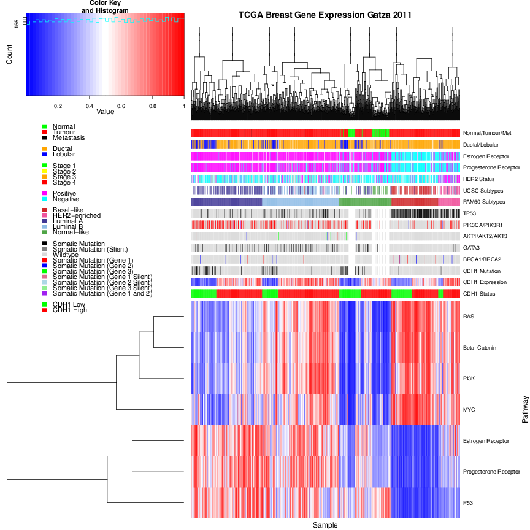

Library Declaration Form

University of Otago Library
Library Declaration Form

University of Otago Library
| Author’s full name and year of birth: Simon Thomas Kelly, |
| (for cataloguing purposes) | 24 February 1992 |
Title of thesis: A Bioinformatics Approach to Synthetic Lethal Interactions in Breast Cancer with Gene Expression Data
Degree: Doctor of Philosophy
Department: Department of Biochemistry
Permanent Address: 710 Cumberland Street, Dunedin, NZ
I agree that this thesis may be consulted for research and study purposes and that reasonable quotation may be made from it, provided that proper acknowledgement of its use is made.
I consent to this thesis being copied in part or in whole for
a library
an individual
at the discretion of the University of Otago.
Signature:
Date:
27 June 2017
Abstract
Background
Synthetic lethal genetic interactions are re-emerging in the post-genomics era due to their potential for use in precision medicine against cancers. Synthetic lethal drug design exploits the functional redundancy of genes disrupted in cancers (including tumour suppressors) to develop specific treatments against them. CDH1, which encodes E-cadherin, is a tumour supressor gene with loss of function in breast and stomach cancers. Experimental screens have identified candidate synthetic lethal interactions, which can be further supported with bioinformatics analysis. Furthermore, gene expression data enables investigation of synthetic lethal pathways and graph structure of synthetic lethal genes within them.
Approach
A computational methodology, the Synthetic Lethal Prediction Tool (SLIPT) has been developed to detect synthetic lethal interactions in gene expression data. This methodology was demonstrated on interactions with CDH1 in breast and stomach cancer data from The Cancer Genome Atlas (TCGA) project. Synthetic lethal genes and pathways were further investigated with unsupervised clustering, gene set over-representation analysis, metagenes, and permutation resampling. In particular, analyses focused on comparing SLIPT gene candidates to an experimental siRNA screen Telford et al. (2015). Network analysis methods were applied to
the most supported pathways to test for pathway structure between synthetic lethal candidates. Simulation and modelling was used to assess the statistical performance of SLIPT, including simulated data with correlation structures derived from graph structures.Findings
Many candidate synthetic lethal partners of CDH1 were detected in TCGA breast cancer. These genes clustered into several distinct groups, with distinct biological functions and elevated expression in different clinical subtypes. While the number of genes detected by both Synthetic Lethal Interaction Prediction Tool (SLIPT) and short interfering RNA (siRNA) was not significant, these contained significantly enriched pathways. In particular, Gαi signalling, cytoplasmic microfibres, and extracellular fibrin clotting were robustly supported by both approaches, which is consistent with the known cytoskeletal and cell signalling roles of E-cadherin. Many of these pathways were replicated in stomach cancer data. The pathways supported only by SLIPT included regulation of immune signalling and translation, which were not expected to be detected in an isogenic cell line model but are still candidates for further investigation.
Synthetic lethal candidates detected by SLIPT and siRNA were compared within the graph structures of the candidate synthetic lethal pathways. There was little support, across pathways, that SLIPT gene candidates were consistently upstream or downstream of siRNA gene candidates within pathways. However, SLIPT genes had lower centrality and were upstream of siRNA candidates, specifically in the Gαi signalling pathway.
A statistical model of synthetic lethality was used to simulate gene expression data with known synthetic lethal partners for a gene. The SLIPT methodology had high statistical performance when detecting few synthetic lethal partners, which diminished with more synthetic lethal partners or lower sample size. The SLIPT methodology performed better than Pearson correlation or the χ2-test. In particular, it performed well with high specificity for datasets containing thousands of genes or genes positively correlated with the query gene (as expected to occur in expression data). SLIPT was robust across correlation structures, including those derived from complex pathway structures and often distinguished synthetic lethal
genes from those positively or negatively correlated with them. Therefore SLIPT is appropriate to identify synthetic lethal genes within pathways and use candidate synthetic lethal genes (and their correlates) to identify synthetic lethal pathways.
Summary
Thus this thesis has developed, evaluated, and refined a bioinformatics approach to discovery of synthetic lethal genes solely from gene expression data. This approach has been demonstrated to detect biologically informative and clinically relevant candidate synthetic lethal partners for CDH1 in breast and stomach cancers. These investigations have also involved the development of network analysis and simulation procedures which may be more widely applicable.
Acknowledgements
I thank my supervisors A/Prof. Mik Black and Prof. Parry Guilford for their support and guidance throughout this my postgraduate studies. It has been a great experience, I look forward to seeing what your research groups produce in the future, may this not be the end for us.
I am also thankful for the guidance and mentorship of Prof. Hamish Spencer for career advice throughout my studies and time in his research group.
I am also grateful to the past and current members of these research groups, and my peers at the laboratory benches and computers across campus. The peer support, camaraderie, and guidance of newer students has been an incredible part of my time at Otago and has made my thesis studies not just easier but possible at all. The postgraduate community is very special here and I have truly made some lifelong friends from all over the world. You are talented researchers and amazing people. May we meet again some day. Where-ever you may end up, its small world and there’s always time to catch up. I’d be delighted to host some visits while working abroad.
I cannot thank my friends, flatmates, family, and diligent proofreaders enough for their patience and support during such as massive, challenging, and (I’m sure you’ve heard too often) stressful undertaking during both my PhD and the study leading up to it. There are too many of you to name everyone here without leaving someone out, so thank you all for everything you’ve done, both the good times and the tough. Thank you
for at least pretending to understand complex math oft brought up at the wrong moment. Thank you for checking my writing or slides, even when sprung on you last minute. Thank for your time when what I really needed was a chat, a walk, a drink with “the guys”, or a moment to think clearly.I thank the various organisations that supported this research project:
I thank the following organisations for support towards presenting findings in this thesis at conference and seminars:
REANNZ, NZGL, and NeSI (eResearch 2016, Queenstown)
Thanks most of all to my fianceé, Dr Yui Kawagishi, you’ve been an inspiration. Thank you for your support and encouragement, every day, even from afar: it has always made a difference. It’s been incredible to see you flourish in your career and I look forward to joining you again soon. May the next chapter of our adventures involve a bit less Skype across timezones.
jG�C�MiG/b����5d</span>!<span class="udgj-30x-x-120">�GZQ</span><span class="udgj-88x-x-120">H</span><span class="udgj-30x-x-120">NZ�</span>!<span class="udgj-30x-x-120">f ��
Glossary
Acronyms
1 Introduction and Literature Review
1.1 Cancer Research in the Post-Genomic Era
1.1.1 Cancer is a Global Health Issue
1.1.1.1 The Genetics and Molecular Biology of Cancers
1.1.2 The Genomics Revolution in Cancer Research
1.1.2.1 High-Throughput Technologies
1.1.2.2 Bioinformatics and Genomic Data
1.1.3 Genomics Projects
1.1.3.1 The Cancer Genome Project
1.1.3.2 The Cancer Genome Atlas Project
1.1.4 Genomic Cancer Medicine
1.1.4.1 Cancer Genes and Driver Mutations
1.1.4.2 Precision Cancer Medicine
1.1.4.3 Molecular Diagnostics and Pan-Cancer Medicine
1.1.4.4 Targeted Therapeutics and Pharmacogenomics
1.1.5 Systems and Network Biology
1.2 Synthetic Lethal Cancer Medicine
1.2.1 Synthetic Lethal Genetic Interactions
1.2.2 Synthetic Lethal Concepts in Genetics
1.2.3 Synthetic Lethality in Model Systems
1.2.3.1 Synthetic Lethal Pathways and Networks
1.2.3.2 Evolution of Synthetic Lethality
1.2.4 Synthetic Lethality in Cancer
1.2.5 Clinical Impact of Synthetic Lethality in Cancer
1.2.6 High-throughput Screening for Synthetic Lethality
1.2.6.1 Synthetic Lethal Screens
1.2.7 Computational Prediction of Synthetic Lethality
1.2.7.1 Bioinformatics Approaches to Genetic Interactions
1.2.7.2 Comparative Genomics
1.2.7.3 Analysis and Modelling of Protein Data
1.2.7.4 Differential Gene Expression
1.2.7.5 Data Mining and Machine Learning
1.2.7.6 Mutual Exclusivity and Bimodality
1.2.7.7 Rationale for Further Development
1.3 E-cadherin as a Synthetic Lethal Target
1.3.1 The CDH1 gene and its Biological Functions
1.3.2 Hereditary Diffuse Gastric (and Lobular Breast) Cancer
1.3.3 Cell Line Models of CDH1 Null Mutations
1.4 Summary and Research Direction of Thesis
1.4.1 Thesis Aims
2 Methods and Resources
2.1 Bioinformatics Resources for Genomics Research
2.1.1 Public Data and Software Packages
2.1.1.1 Cancer Genome Atlas Data
2.1.1.2 Reactome and Annotation Data
2.2 Data Handling
2.2.1 Normalisation
2.2.2 Sample Triage
2.2.3 Metagenes and the Singular Value Decomposition
2.2.4 Candidate Triage and Integration with Screen Data
2.3 Techniques
2.3.1 Statistical Procedures and Tests
2.3.2 Gene Set Over-representation Analysis
2.3.3 Clustering
2.3.4 Heatmap
2.3.5 Modelling and Simulations
2.3.5.1 Receiver Operating Characteristic Curves
2.3.6 Resampling Analysis
2.4 Pathway Structure Methods
2.4.1 Network and Graph Analysis
2.4.2 Sourcing Graph Structure Data
2.4.3 Constructing Pathway Subgraphs
2.4.4 Network Analysis Metrics
2.5 Implementation
2.5.1 Computational Resources and Linux Utilities
2.5.2 R Language and Packages
2.5.3 High Performance and Parallel Computing
3 Methods Developed During Thesis
3.1 A Synthetic Lethal Detection Methodology
3.2 Synthetic Lethal Simulation and Modelling
3.2.1 A Model of Synthetic Lethality in Expression Data
3.2.2 Simulation Procedure
3.3 Detecting Simulated Synthetic Lethal Partners
3.3.1 Binomial Simulation of Synthetic Lethality
3.3.2 Multivariate Normal Simulation of Synthetic Lethality
3.3.2.1 Multivariate Normal Simulation with Correlated Genes
3.3.2.2 Specificity with Query-Correlated Pathways
3.4 Graph Structure Methods
3.4.1 Upstream and Downstream Gene Detection
3.4.1.1 Permutation Analysis for Statistical Significance
3.4.2 Simulating Gene Expression from Graph Structures
3.5 Customised Functions and Packages Developed
3.5.1 Synthetic Lethal Interaction Prediction Tool
3.5.2 Data Visualisation
3.5.3 Extensions to the iGraph Package
3.5.3.1 Sampling Simulated Data from Graph Structures
3.5.3.2 Plotting Directed Graph Structures
3.5.3.3 Computing Information Centrality
3.5.3.4 Testing Pathway Structure with Permutation Testing
3.5.3.5 Metapackage to Install iGraph Functions
4 Synthetic Lethal Analysis of Gene Expression Data
4.1 Synthetic Lethal Genes in Breast Cancer
4.1.1 Synthetic Lethal Pathways in Breast Cancer
4.1.2 Expression Profiles of Synthetic Lethal Partners
4.1.2.1 Subgroup Pathway Analysis
4.2 Comparing Synthetic Lethal Gene Candidates
4.2.1 Primary siRNA Screen Candidates
4.2.2 Comparison with Correlation
4.2.3 Comparison with Primary Screen Viability
4.2.4 Comparison with Secondary siRNA Screen Validation
4.2.5 Comparison to Primary Screen at Pathway Level
4.2.5.1 Resampling Genes for Pathway Enrichment
4.2.6 Integrating Synthetic Lethal Pathways and Screens
4.3 Synthetic Lethal Pathway Metagenes
4.4 Replication in Stomach Cancer
4.5 Discussion
4.5.1 Strengths of the SLIPT Methodology
4.5.2 Synthetic Lethal Pathways for E-cadherin
4.5.3 Replication and Validation
4.5.3.1 Integration with siRNA Screening
4.5.3.2 Replication across Tissues
4.6 Summary
5 Synthetic Lethal Pathway Structure
5.1 Synthetic Lethal Genes in Reactome Pathways
5.1.1 The PI3K/AKT Pathway
5.1.2 The Extracellular Matrix
5.1.3 G Protein Coupled Receptors
5.1.4 Gene Regulation and Translation
5.2 Network Analysis of Synthetic Lethal Genes
5.2.1 Gene Connectivity and Vertex Degree
5.2.2 Gene Importance and Centrality
5.2.2.1 Information Centrality
5.2.2.2 PageRank Centrality
5.3 Relationships between Synthetic Lethal Genes
5.3.1 Detecting Upstream or Downstream Synthetic Lethality
5.3.2 Resampling for Synthetic Lethal Pathway Structure
5.4 Discussion
5.5 Summary
6 Simulation and Modelling of Synthetic Lethal Pathways
6.1 Synthetic Lethal Detection Methods
6.1.1 Performance of SLIPT and χ2 across Quantiles
6.1.1.1 Correlated Query Genes affects Specificity
6.1.2 Alternative Synthetic Lethal Detection Strategies
6.1.2.1 Correlation for Synthetic Lethal Detection
6.1.2.2 Testing for Bimodality with BiSEp
6.2 Simulations with Graph Structures
6.2.1 Performance over Graph Structures
6.2.1.1 Simple Graph Structures
6.2.1.2 Constructed Graph Structures
6.2.2 Performance with Inhibitions
6.2.3 Synthetic Lethality across Graph Structures
6.2.4 Performance within a Large Simulated Datasets
6.3 Simulations in More Complex Graph Structures
6.3.1 Simulations over Pathway-based Graphs
6.3.2 Pathway Structures in a Large Simulated Datasets
6.4 Discussion
6.4.1 Simulation Procedure
6.4.2 Comparing Methods with Simulated Data
6.4.3 Design and Performance of SLIPT
6.4.4 Simulations from Graph Structures
6.5 Summary
7 Discussion
7.1 Synthetic Lethality and CDH1 Biology
7.1.1 Established Functions of CDH1
7.1.2 The Molecular Role of CDH1 in Cancer
7.2 Significance
7.2.1 Synthetic Lethality in the Genomic Era
7.2.2 Clinical Interventions based on Synthetic Lethality
7.3 Future Directions
7.4 Conclusions
Bibliography
A Sample Quality
A.1 Sample Correlation
A.2 Replicate Samples in TCGA Breast Cancer Data
B Software Used for Thesis
C Mutation Analysis in Breast Cancer
C.1 Synthetic Lethal Genes and Pathways
C.2 Synthetic Lethal Expression Profiles
C.3 Comparison to Primary Screen
C.3.1 Resampling Analysis
C.4 Compare SLIPT genes
D Metagene Analysis
D.1 Pathway Signature Expression
1.1 Synthetic genetic interactions
1.2 Synthetic lethality in cancer
a Raw counts (log-scale)
b Voom normalised
2.2 Read count density
a Mean raw counts (log-scale)
b Mean voom normalised
2.3 Read count sample mean
3.1 Framework for synthetic lethal prediction
3.2 Synthetic lethal prediction adapted for mutation
3.3 A model of synthetic lethal gene expression
3.4 Modelling synthetic lethal gene expression
3.5 Synthetic lethality with multiple genes
a Simulated expression matrix
b Corresponding gene function calls
3.7 Simulating gene function
a Simulated gene function with SL genes
b Query gene added with SL condition
3.8 Simulating synthetic lethal gene function
a Initial expression matrix
b Simulated synthetic lethal dataset
3.10 Simulating synthetic lethal gene expression
3.11 Performance of binomial simulations
3.12 Comparison of statistical performance
a Statistical evaluation
b receiver operating characteristic (ROC) curves
c Statistical performance (AUROC)
3.14 Performance of multivariate normal simulations
a Input Σ matrix parameter
b Simulated correlation matrix
c Simulated gene expression
d Simulated gene function
3.16 Simulating expression with correlated gene blocks
a Input Σ matrix parameter
b Simulated correlation matrix
c Simulated gene expression
d Simulated gene function
3.18 Simulating expression with correlated gene blocks
a Gene category in simulations
b Corresponding χ2 values
3.20 Synthetic lethal prediction across simulations
a Statistical evaluation
b ROC curves
c Statistical performance (AUROC)
3.22 Performance with correlations
3.23 Comparison of statistical performance with correlation structure
a Statistical evaluation
b ROC curves
c Statistical performance (AUROC)
3.25 Performance with query correlations
a χ2 testing without direction
b SLIPT with directional criteria
3.27 Statistical evaluation of directional criteria
a χ2 testing without direction
b SLIPT with directional criteria
c Statistical performance (AUROC)
3.29 Performance of directional criteria
a Activating pathway structure
b Pathway structure with inhibitions
3.31 Simulated graph structures
a Activating pathway structure
b Distance matrix
c Σ (expected correlation)
d Simulated correlation
e Simulated expression data
f Simulated gene function calls
3.33 Simulating expression from a graph structure
a Inhibiting pathway structure
b Distance matrix
c Σ (expected correlation)
d Simulated correlation
e Simulated expression data
f Simulated gene function calls
3.35 Simulating expression from graph structure with inhibitions
a Customised violin plot
b Split violin plot
3.37 Demonstration of violin plots with custom
features
3.38 Demonstration of annotated heatmap
3.39 Simulating graph structures
4.1 Synthetic lethal expression profiles of analysed samples
4.2 Comparison of SLIPT with siRNA
4.3 Comparison of SLIPT and siRNA genes with correlation
4.4 Comparison of SLIPT and siRNA genes with correlation
4.5 Comparison of SLIPT and siRNA genes with screen viability
4.6 Comparison of SLIPT genes with siRNA screen viability
4.7 Resampled intersection of SLIPT and siRNA candidate genes
5.1 Synthetic lethality in the PI3K cascade
5.2 Synthetic lethality in Elastic Fibre Formation
5.3 Synthetic lethality in Fibrin Clot Formation
5.4 Synthetic lethality in the GPCRs
5.5 Synthetic lethality and vertex degree
5.6 Synthetic lethality and centrality
5.7 Synthetic lethality and PageRank
a Resampling in Gαi signalling
b Resampling in the PI3K cascade
5.9 Structure of synthetic lethality resampling
a Barplot of χ2, SLIPT, and correlation.
b Lineplot of χ2, SLIPT, and correlation.
6.2 Performance of χ2 and SLIPT across quantiles
6.3 Performance of χ2 and SLIPT across quantiles with more genes
6.4 Performance of χ2 and SLIPT across quantiles with query correlation
6.5 Performance of χ2 and SLIPT across quantiles with query correlation and more genes
6.6 Performance of negative correlation and SLIPT
a Diverging Module
b Converging module
6.8 Simple graph structures
a Statistical evaluation
b Receiver operating characteristic
c Graph Structure
d Statistical performance
6.10 Performance of simulations on a simple graph
a Diverging Module
b Converging module
c Performance between Graph Structures
6.12 Performance of simulations is similar in simple graphs
a Statistical evaluation
b Receiver operating characteristic
c Graph Structure
d Statistical performance
6.14 Performance of simulations on a pathway
a Statistical evaluation
b Receiver operating characteristic
c Graph Structure
d Statistical performance
6.16 Performance of simulations on a simple graph with inhibition
a Activating Graph
b Inhibiting Graph
c Performance between Graph Structures
6.18 Performance is higher on a simple inhibiting graph
a Statistical evaluation
b Receiver operating characteristic
c Graph Structure
d Statistical performance
6.20 Performance of simulations on a constructed graph with inhibition
a Activating Graph
b Inhibiting Graph
c Mixed Graph
d Performance between Graphs (a) and (b)
e Performance between Graphs (a) and (c)
6.22 Performance is affected by inhibition in graphs
a Activating Graph
b Inhibiting Graph
c χ2 distribution for Activating Graph
d χ2 distribution for Inhibiting Graph
6.24 Detection of synthetic lethality within a graph structure
a Statistical evaluation
b Receiver operating characteristic
c Graph Structure
d Statistical performance
6.25 Performance of simulations including a simple graph
a Diverging Module
b Converging module
c Performance in Diverging Module
d Performance in Converging module
6.27 Performance on a simple graph improves with more genes
a Graph Structure
b Inhibiting Structure
c Performance in Graph
d Performance with Inhibitions
6.29 Performance on an inhibiting graph improves with more genes
a Statistical evaluation
b Receiver operating characteristic
c Graph Structure
d Statistical performance
6.31 Performance of simulations
on the PI3K cascade
a Statistical evaluation
b Receiver operating characteristic
c Graph Structure
d Statistical performance
6.33 Performance of simulations including the PI3K cascade
a The PI3K cascade
b Gαi signalling
c Performance in the PI3K cascade
d Performance in Gαi signalling
6.35 Performance on pathways improves with more genes
A.1 Correlation profiles of removed samples
A.2 Correlation analysis and sample removal
A.3 Replicate excluded samples
a Remaining triplet
b Remaining triplet
c Remaining triplet
d Remaining pair
e Remaining pair
f Remaining pair
A.5 Replicate samples with all remaining
a Remaining
b Compare with excluded
c Compare with excluded
d Remaining
e Compare with excluded
f Compare with excluded
g Remaining
h Compare with excluded
i Compare with excluded
A.7 Replicate samples with some excluded
a Remaining
b Compare with excluded
c Compare with excluded
d Compare with excluded
e Compare with excluded
C.1 Synthetic lethal expression profiles of analysed samples
C.2 Comparison of mtSLIPT to siRNA
C.3 Compare mtSLIPT and siRNA genes with correlation
C.4 Compare mtSLIPT and siRNA genes with correlation
C.5 Compare mtSLIPT and siRNA genes with siRNA viability
D.1 Pathway metagene expression profiles
D.2 Expression profiles for estrogen receptor related genes
F.1 Synthetic lethal expression profiles of stomach samples
F.2 Comparison of SLIPT in stomach to siRNA
G.1 Synthetic lethality in the PI3K/AKT pathway
G.2 Synthetic lethality in the PI3K/AKT pathway in cancer
G.3 Synthetic lethality in the Extracellular Matrix
G.4 Synthetic lethality in the GPCR Downstream
G.5 Synthetic lethality in the Translation Elongation
G.6 Synthetic lethality in the Nonsense-mediated Decay
G.7 Synthetic lethality in the 3′ UTR
H.1 Synthetic lethality and vertex degree
H.2 Synthetic lethality and centrality
H.3 Synthetic lethality and PageRank
a Resampling in Gαi signalling
b Resampling in the PI3K cascade
I.2 Structure of synthetic lethality resampling
a 1 SL partner
b 2 SL partners
c 3 SL partners
d 4 SL partners
e 5 SL partners
f 6 SL partners
J.2 Performance of χ2 and SLIPT across quantiles
a 7 SL partners
b 8 SL partners
c 9 SL partners
d 10 SL partners
e 15 SL partners
f 20 SL partners
g 30 SL partners
h 40 SL partners
i 50 SL partners
a 1 SL partner
b 2 SL partners
c 3 SL partners
d 4 SL partners
e 5 SL partners
f 6 SL partners
g 7 SL partners
h 8 SL partners
i 9 SL partners
J.6 Performance of χ2 and SLIPT across quantiles
a 10 SL partners
b 15 SL partners
c 20 SL partners
d 30 SL partners
e 40 SL partners
f 50 SL partners
a 1 SL partner
b 2 SL partners
c 3 SL partners
d 4 SL partners
e 5 SL partners
f 6 SL partners
g 7 SL partners
h 8 SL partners
i 9 SL partners
J.10 Performance of χ2 and SLIPT across quantiles with more genes
a 10 SL partners
b 15 SL partners
c 20 SL partners
d 30 SL partners
e 40 SL partners
f 50 SL partners
a 1 SL partner
b 2 SL partners
c 3 SL partners
d 4 SL partners
e 5 SL partners
f 6 SL partners
g 7 SL partners
h 8 SL partners
i 9 SL partners
J.14 Performance of χ2 and SLIPT across quantiles with query correlation
a 10 SL partners
b 15 SL partners
c 20 SL partners
d 30 SL partners
e 40 SL partners
f 50 SL partners
a 1 SL partner
b 2 SL partners
c 3
SL partners
d 4 SL partners
e 5 SL partners
f 6 SL partners
g 7 SL partners
h 8 SL partners
i 9 SL partners
J.18 Performance of χ2 and SLIPT across quantiles with query correlation
a 10 SL partners
b 15 SL partners
c 20 SL partners
d 30 SL partners
e 40 SL partners
f 50 SL partners
a 1 SL partner
b 2 SL partners
c 3 SL partners
d 4 SL partners
e 5 SL partners
f 6 SL partners
g 7 SL partners
h 8 SL partners
i 9 SL partners
J.22 Performance of χ2 and SLIPT across quantiles with query correlation and more genes
a 10 SL partners
b 15 SL partners
c 20 SL partners
d 30 SL partners
e 40 SL partners
f 50 SL partners
a Statistical evaluation
b ROC
c Graph
d Statistical performance
K.2 Performance of simulations on a simple graph
a Statistical evaluation
b ROC
c Graph Structure
d Statistical performance
K.4 Performance of simulations on an inhibiting graph
a Statistical evaluation
b ROC
c Graph Structure
d Statistical performance
K.6 Performance of simulations on a constructed graph with inhibition
a Statistical evaluation
b ROC
c Graph Structure
d Statistical performance
K.8 Performance of simulations on a constructed graph with inhibition
a Activating Graph Structure
b χ2 distribution for “A” SL
c Gene “B” SL
d Gene “C” SL
e Gene “D” SL
f Gene “E” SL
K.10 Detection of synthetic lethality within a graph structure
a Gene “F” SL
b Gene “G” SL
c Gene “H” SL
d Gene “I” SL
a Inhibiting Graph Structure
b χ2 distribution for “A” SL
c Gene “B” SL
d Gene “C” SL
e Gene “D” SL
f Gene “E” SL
g Gene “F” SL
h Gene “G” SL
i Gene “H” SL
j Gene “I” SL
K.14 Detection of synthetic lethality within an inhibiting graph
a Inhibiting Graph Structure
b χ2 distribution for “A” SL
c Gene “B” SL
d Gene “C” SL
e Gene “D” SL
f Gene “E” SL
g Gene “F” SL
h Gene “G” SL
i Gene “H” SL
j Gene “I” SL
K.15 Detection of synthetic lethality within an inhibiting graph
a Statistical evaluation
b ROC
c Graph Structure
d Statistical performance
K.16 Performance of simulations on a branching graph
a Statistical evaluation
b ROC
c Graph Structure
d Statistical performance
K.18 Performance of simulations on a complex graph
a Statistical evaluation
b ROC
c Graph Structure
d Statistical performance
K.20 Performance of simulations on a large graph
a Statistical evaluation
b ROC
c Graph Structure
d Statistical performance
K.22 Performance of simulations on a branching graph with inhibition
a Statistical evaluation
b ROC
c Graph Structure
d Statistical performance
K.24 Performance of simulations on a branching graph with inhibition
a Statistical evaluation
b ROC
c Graph Structure
d Statistical performance
K.26 Performance of simulations on a complex graph with inhibition
a Statistical evaluation
b ROC
c Graph Structure
d Statistical performance
K.28 Performance of simulations on a complex graph with inhibition
a Statistical evaluation
b ROC
c Graph Structure
d Statistical performance
K.30 Performance of simulations on a large constructed graph with inhibition
a Statistical evaluation
b ROC
c Graph Structure
d Statistical performance
K.32 Performance of simulations on a large constructed graph with inhibition
a Statistical evaluation
b ROC
c Graph Structure
d Statistical performance
K.34 Performance of simulations on the Gαi signalling pathway
a Statistical evaluation
b ROC
c Graph Structure
d Statistical
| allele | A gene variant with a specific sequence and phenotype |
| bioinformatics | Statistical or computational approaches to biological data or research tools |
| cancer | A class of diseases, formally “malignant neoplasm”, of abnormal cellular growth and spread to other organs |
| cancer gene | A gene which is involved in the malignancy of some cancers, encompassing oncogenes and tumour suppressors, which have molecular aberrations in cancer or variants which predispose individuals to cancer |
| centrality | A network metric which identifies important vertices |
| chemoprevention | The use of drugs to prevent early-stage cancers, generally applied to high-risk mutation carriers |
| chemotherapy | The use of cytotoxic drugs to treat cancers, in combinations, generally applied to advanced stage cancers |
| compound screen | A high-throughput screen performed using a library of chemical compounds |
| computational biology | Applying computational or mathematical modelling to understanding biological systems and relationships |
| driver mutation | A mutation which promotes cancer growth |
| E-cadherin | Epithelial cadherin (calcium-dependent adhesion), a cell-adhesion protein encoded by CDH1 |
| edge or link | A relationship connecting a pair of elements of a graph structure or network, may be weighted or directional |
| epistasis (biological) | The effects of a gene modifying or masking the phenotype of another gene |
| epistasis (statistical) | A divergence of the observed double mutant phenotype from that expected based on the respective phenotypes of single mutant (Fisher, 1919) |
| essential | A gene which is required to be functional or expressed for a cell or organism to be viable, grow or develop |
| familial | A trait recurrently occurring in families, not necessarily with a genetic cause |
| functional redundancy | Genes which perform a common function, also known as genetic redundancy |
| gene expression | A measure of the relative expression of each gene from the mRNA extracted from (pooled) cells |
| genetic robustness | A system of biological pathways which (has evolved to) continue to function as a whole under various conditions, including the inactivation of various individual genes |
| genome | All of the DNA sequence in the genome |
| genomic | The use of data from all genes in the genome |
| germline mutation | A mutation that occurred in germline cells and is passed between generation |
| graph or network | A mathematical structure modelling or depicting the relationships between elements |
| hereditary | A trait or disease which has a genetic cause and is inherited from family members |
| high-throughput screen | An experimental procedure to perform a large scale series of chemical, genetic, or pharmacological tests |
| hub | A central or highly connected component of a network |
| induced essentiality | A gene becoming essential to viability under certain conditions, including inactivation of a synthetic lethal partner |
| information centrality | A network centrality metric which uses the impact of removing a vertex or node on connections in the network |
| intrinsic subtype | Distinguishing cancer by molecular and genetic features |
| metagene | A consistent signal of expression for a collection of genes such as a biological pathway, derived from singular value decomposition |
| methylation | A measure of the epigenetic regulation of DNA at CpG dinucleotide (CpG) sites |
| microarray | A high-throughput technique to measure presence or abundance of nucleic acid sequences from binding to probes |
| molecular profile | A combination of genetic and biochemical measures which identifies characteristic traits of a tumour |
| molecular subtype | A classification of cancers based on an identification using molecular properties |
| mutant | A variant or dysfunctional phenotype arising from a mutation in a gene |
| mutation | A change in DNA sequence that disrupts gene function |
| non-oncogene addiction | The dependence of a cancer cell on functioning non-mutant genes |
| ’omics | A combination of approaches to generating biological data with high-throughput procedures such as genomics, proteomics or metabolomics |
| oncogene | A gene that potentially causes cancer, typically by over-expression or mutant gene variants |
| oncogene addiction | The dependence of a cancer cell on a specific oncogenic pathway |
| PageRank centrality | A network centrality metric which uses eigenvectors with a scaling factor (Brin and Page, 1998) |
| pan cancer | A focus on the molecular and genetic features across cancers in different tissues |
| passenger mutation | A mutation that occurs in cancers but does not affect the growth of cancers |
| pathway | A series of biomolecules that produces a particular product or biological function |
| pleiotropy | When a gene has multiple biological functions |
| precision medicine | The application of prevention and treatment measures to target diseases by molecular and genetic features |
| recurrent mutation | The repeated occurrence of mutations in a particular gene across cancers |
| RNAi screen | A high-throughput screen performed using a RNA interference (RNAi) |
| RNA-Seq | The generation of transcriptome data from sequencing RNA |
| scale-free | A property of a network which has a power law vertex degree distribution, that is several highly connected hub genes and many with very few connections |
| shortest path | A path with the fewest possible edges which connects two particular vertices |
| small world | A property of a network which is highly connected and has a low characteristic path length, derived from the mean shortest path length across all pairs of nodes |
| somatic mutation | A mutation that occurs in somatic cells, during a patient’s lifespan |
| sporadic cancer | Cancers which do occur in patients with a family history or carry a high-risk genetic variant |
| synthetic dosage lethal | A synthetic genetic interaction (SGI) analogous to synthetic lethality where where one gene is inactivated and the other over-expressed |
| synthetic lethal | Genetic interactions where inactivation of multiple genes is inviable (or deleterious) which are viable if inactivated separately |
| synthetic lethal screen | A high-throughput screen performed on isogenic cell lines to detect genes for which inhibition specifically deleterious to the null mutant genotype |
| synthetic rescue | A synthetic genetic interaction when the combined mutations restores the wild-type the phenotype of one of the mutations |
| synthetic sick | Genetic interactions where inactivation of multiple genes is deleterious which are viable if inactivated separately |
| synthetic suppression | A synthetic genetic interaction when the combined mutations (partially) suppresses the mutant phenotype of one of the mutations |
| targeted therapy | Cancer treatment that specifically acts against a molecular target, in contrast to standard chemotherapy |
| transcriptome | All of the genes expressed in the genome |
| treatment | Medical procedures for a disease to improve patient outcomes |
| tumour | An abnormal lump of tissue or growth of cells, may be cancerous |
| tumour suppressor | A gene potentially causes cancer, typically by disruption of functions which protect the cell from cancer |
| vertex degree | A network metric of connectivity of vertices which uses the number of edges connected to each vertex or node |
| vertex or node | An element of a graph structure or network |
| wild-type | A natural phenotype of a trait or the normally functional allele which encodes it |
| ADP | Adenosine Diphosphate |
| AMP | Adenosine Monophosphate |
| AMPK | AMP-activated Protein Kinase |
| ANOVA | Analysis of Variance |
| AUROC | Area Under the Receiver Operating Characteristic (curve) |
| Bash | Bourne Again Shell |
| BioPAX | Biological Pathway Exchange |
| BiSEp | Bimodal Subsetting Expression |
| BMP | Bone Morphogenic Protein |
| CCLE | Cancer Cell Line Encyclopaedia |
| cDNA | Complementary DNA (from mRNA) |
| CGP | Cancer Genome Project |
| CNV | Copy Number Variation |
| COSMIC | Catalogue Of Somatic Mutations In Cancer |
| CpG | 5′–C–phosphate–G–3′ |
| CPM | Counts Per Million mapped reads |
| CPU | Central Processing Unit |
| CRAN | comprehensive R archive network |
| CXCR | Chemokine Receptor |
| DAISY | Data Mining Synthetic Lethal Identification Pipeline |
| DNA | Deoxyribonucleic Acid |
| EMT | Epithelial-Mesenchymal Transition |
| ER | Estrogen Receptor |
| FDR | False Discovery Rate |
| GO | Gene Ontology |
| GPCR | G Crotein Coupled Receptor |
| HDAC | Histone Deacetylase |
| HDGC | Hereditary Diffuse Gastric Cancer |
| HLRCC | Hereditary Leiomyomatosis and Renal Cell Carcinoma |
| HPC | High Performance Computing |
| ICGC | International Cancer Genome Consortium |
| JAK | Janus Kinase |
| microRNA | Micro RNA |
| mRNA | Messenger RNA |
| MSI | Microsatellite Instability |
| mtSLIPT | Synthetic Lethal Interaction Prediction Tool (against mutation) |
| NeSI | New Zealand eScience Infrastructure |
| NGS | Next-Generation Sequencing |
| NMD | Nonsense-Mediated Decay |
| PAM50 | Prediction Analysis of Microarray 50 |
| PARP | Poly-ADP-Ribose Polymerase |
| PCR | Polymerase Chain Reaction |
| PDE | Phosphodiesterase |
| PI3K | Phosphoinositide 3-kinase |
| PPI | Protein-Protein Interaction |
| PR | Progesterone Receptor |
| RGS | G-protein Signalling |
| RHO | Ras Homolog Family |
| RNA | Ribonucleic Acid |
| RNAi | RNA Interference |
| ROC | Reciever Operating Characteristic (curve) |
| RSEM | RNA-Seq by Expectation Maximization (normalisation |
| SGA | Synthetic Gene Array (technique) |
| SGI | Synthetic Genetic Interaction |
| shRNA | Short Hairpin RNA |
| siRNA | Short Interfering RNA |
| SL | Synthetic Lethal |
| SLIPT | Synthetic Lethal Interaction Prediction Tool |
| Slurm | Simple Linux Utility for Resource Management |
| SNP | Single Nucleotide Polymorphism |
| SOCKS | Socket Secure |
| SR | Synthetic Rescue (or viability) |
| SS | Synthetic Suppression |
| SSL | Synthetic Sick |
| TCGA | The Cancer Genome Atlas (genomics project) |
| TGFβ | Transforming Growth Factor β |
| UCSC | University of California, Santa Cruz |
| UTR | Untranslated Region (of mRNA) |
| WNT | Wingless-Related Integration Site |
This thesis presents research into genetic interactions using genomics data and bioinformatics approaches. Chapter 1 introduces recent developments in genomics and bioinformatics, particularly in their application to cancer research. Studies of synthetic lethal interactions, which have fundamental importance in genetics in model organisms and renewed relevance in cancer biology specifically, will be discussed and reviewed in detail. A bioinformatic approach to synthetic lethal interactions enables a wider exploration of the function of genes and proteins in cancer cells, in contrast with candidate gene and experimental screening approaches. Synthetic lethal drug design aims to develop treatments with specificity against loss of function mutations in tumour suppressor genes, such as CDH1 (which encodes E-cadherin) and was the focus of the analysis in this thesis. The role of CDH1 in cellular and cancer biology is therefore also briefly reviewed.
Genomic technologies are expected to significantly impact on the clinical treatment of cancers, along with wider applications of genetics (Goodwin et al., 2016; Roychowdhury and Chinnaiyan, 2016). These technologies enable focused genetic investigations on candidate genes selected from bioinformatic analyses of genomic data. Facilitated by rapidly developing technologies, large-scale projects have investigated populations (1000 Genomes, 2010), cancers (Dickson, 1999; Zhang et al., 2011), and functional genomics (Kawai et al., 2001; ENCODE, 2004), however, genomic technologies have yet to be widely adopted in healthcare or oncology (Roychowdhury and Chinnaiyan, 2016; Waldron, 2016). Bioinformatics analysis for interpretation of genomic data is one of the main approaches to address this disparity (Goodwin et al., 2016). Here, I outline the cancer genomics projects and findings which have led to the availability of genomics data used in this thesis, and recent findings in cancer research which demonstrate potential applications of using this data.
Cancers are the second leading cause of death globally (WHO, 2017), with an estimated annual incidence of 14.1 million cases and annual mortality of 8.2 million people (Ferlay et al., 2015). Breast and stomach cancers are among the most prevalent cancers. Breast
cancer is the most common cancer in women and has an estimated annual incidence of 1.6 million cases and mortality of 520,000 people. Stomach cancer has an estimated annual incidence of 950,000 cases and a mortality of 723,000 people. Cancer is also a major health concern here in New Zealand, with 19,100 people (including 2500 cases of breast cancer and 370 cases of stomach cancer) diagnosed annually (Hanna, 2003). New Zealand has among the highest incidence (age-standardised per capita) of cancer in the world (Ferlay et al., 2015).While environmental factors often play a role, genetics is an important contributor to cancer risk. Most cancers occur more frequently with age and family history. Cancers arise from dysregulated cellular growth or differentiation. These can occur through genetic mutations or alterations in gene regulation or expression which generally accumulate as the disease develops. Therefore, early diagnosis is important to ensure patient survival and quality of life. Identification of patients with genetic variants or family histories at a high-risk of particular cancers is an important health issue. These high-risk individuals are regularly monitored for some cancers and are sometimes offered preventative surgery (Guilford et al., 2010; Scheuer et al., 2002).
Chemotherapy is a treatment for many advanced stage cancers, designed to inhibit rapidly growing cells. However, this approach often has severe adverse effects, a narrow therapeutic window, and is not suitable for chemopreventative application in many cases (Kaelin, Jr, 2009). Patients at high-risk of cancers are offered surveillence and preventative surgery but these approaches are not completely effective at preventing cancers and can severely impact on quality of life (Guilford et al., 2010). Alternative chemoprevention and treatment strategies based on molecular biology and other fields are being investigated, including targeted molecular therapeutics (Bozovic-Spasojevic et al., 2012).
Cancers involve dysregulation of genes, including somatic and hereditary mutations, which may predispose individuals to high-risk cancers and familial cancer syndromes (American Cancer Society, 2017; Guilford et al., 1998; Stratton et al., 2009; NCI, 2015; Vogelstein et al., 2013). The occurence of somatic mutation mutations increases the risk of cancer with age. An association of cancer incidence with the stem cell divisions in which mutations could
occur across tissue types, suggests that cancers may be inseparably coupled with aging (Tomasetti and Vogelstein, 2015).Hanahan and Weinberg (2000) proposed the “hallmarks of cancer”, molecular and cellular traits shared across cancers. These form the basis of a rational approach to categorising the complex changes that occur in cancer. These traits include limitless replication potential, signals for indefinite growth, and invasive or metastatic capabilities. Cancers also evade apoptosis and the immune system, and sustain angiogenesis and energy metabolism (Hanahan and Weinberg, 2011). To achieve this, cancer cells change their genomes and the tumour microenvironment. Genomic instability has a role in the survival and proliferation of cancer cells and the progression of disease, as these malignant characteristics are acquired. Identifying the genetic mechanisms involved in the acquisition of these traits is important for understanding and effectively inhibiting cancer.
Genomic technologies have transformed genetics research, including the study of health and disease (Goodwin et al., 2016; Lander, 2011). Genomics enables systematic, unbiased studies across all of the genes in the genomes. Cancer genomics investigations have been widely applied to different tissues across molecular profiles (Bamford et al., 2004; Weinstein et al., 2013; Zhang et al., 2011). Genomes sequencing technologies continue to improve and become feasible in a wider range of applications.
Genomics has been used in many investigations (Goodwin et al., 2016) but relatively few of the potential applications in healthcare have been realised yet (Roychowdhury and Chinnaiyan, 2016; Tran et al., 2012). Cancer genomics, in particular, could have numerous benefits across diagnostics, prognosis, management, and treatment (Roychowdhury and Chinnaiyan, 2016). While direct impact of genomics on the clinic has been limited thus far, the cancer genes and therapeutic targets identified have begun to be introduced in the clinic (Stratton et al., 2009).
These investigations have been enabled by recent developments in genomics technologies, including microarrays and more recently “Next-Generation Sequencing” (NGS), which can both be used to generate high-throughput expression data. Microarray are a
high-throughput molecular technique, reducing the cost, time, and labour required to study genes at the “genome” scale (Schena, 1996). Microarray can detect genotype or expression across many genes, making it feasible to perform on a statistically informative number of samples. Microarray are manufactured with probes which measure binding of nucleotides which either detect the presence of a sequence such as a single nucleotide polymorphism (SNP) or quantify sequences for DNA copy number, gene expression, or DNA CpG methylation. In addition to being more versatile, with higher-throughput than polymerase chain reaction (PCR) based techniques, microarrays are considered cost-effective, particularly when scaled up to a large number of probes.The introduction of massively parallel sequencing technologies has further expanded high-throughput molecular studies and the availability of genomics data. NGS enables rapid de novo genomes and transcriptome sequencing, in addition to gene expression studies (Goodwin et al., 2016). However, the cost of sequencing for gene expression studies is still considerably higher than a microarray study, limiting feasible sample sizes, and NGS studies have large compute requirements to handle the raw data. In many cases, the benefits of NGS technologies outweigh the additional cost. NGS technologies have the advantage of greater potential accuracy and sensitivity than microarrays. NGS has a wider dynamic range than microarrays and are not limited to genes with an already characterised sequence or functions (Tarazona et al., 2011).
NGS is highly adaptable to different applications, including DNA sequencing (obtaining the base sequence for the exome or whole genome) or RNA-Seq (Goodwin et al., 2016; Tran et al., 2012; Waldron, 2016). RNA-Seq of the transcriptome is a common adaptation where RNA is reverse transcribed and sequenced from the resulting complementary DNA (cDNA). This is utilised to quantify the levels of RNA and identify which regions of DNA are expressed. Subsets of the nucleic acid may be extracted for sequencing such as the coding regions of DNA (for the “exome”), mRNA, or micro RNA (microRNA). These “’omics” technologies (Roychowdhury and Chinnaiyan, 2016; Waldron, 2016) are applicable across a wide range of biomolecules to generate “molecular profiles” of a cell or sample (Perou et al., 2000).
NGS technologies continue to be refined (Goodwin et al., 2016) with Illumina (the platform used to generate data in this project) and competitors continuing to improve products and decrease costs. As such, RNA-Seq for examining transcriptomes or expression studies is a growing field and will continue to be generated for a
range of samples. The technology may yet improve (Goodwin et al., 2016) with developments in speed and accuracy (such as semi-conductor platforms) or long reads, single molecule sequences (such as Pacific Biosciences, Oxford Nanopore, and Quantum Biosystems Japan). Due to the benefits of sequencing and the availability of public data, this thesis has focused on gene expression data generated by RNA-Seq. RNA-Seq data is publicly available from large-scale cancer genomics projects and the methods anlaysis developed for RNA-Seq data could be applied to future genomics technologies.Genomic technologies have generated data at a scale which requires computational, mathematical, and statistical expertise to handle this data effectively (Markowetz, 2017; Tran et al., 2012), in addition to an understanding of the biological context and research questions. The interdisciplinary field of “bioinformatics”, which draws upon these skills, focuses specifically on making inferences from genomics data or developing the tools to do so. Gene expression analysis is the focus of many bioinformatics research groups, drawing upon statistical approaches to appropriately handle microarray and RNA-Seq data along with making biological inferences from a large number of statistical tests.
Bioinformatics is often confused with the broader field “computational biology” (Markowetz, 2017), which focuses on modelling and simulating aspects of biology and is not necessarily limited to genetics or data analysis. In practice, many researchers identify with both bioinformatics and computational biology or use techniques in both fields. This thesis uses many of these approaches, mainly in bioinformatics, to address biological research questions pertaining to synthetic lethal interactions.
Genomic projects have also been applied to various organisms, functional genetics (Kawai et al., 2001; ENCODE, 2004), and human populations focusing on variability between individuals and health or disease risk (HapMap, 2003; 1000 Genomes, 2010). International projects and consortiums have begun to release data gathered using common agreed upon protocols across laboratories. These include many genomics projects including cancer genomics projects discussed below. The quality, consistency, and accessibility of
these international projects is appealing, particularly for gene expression datasets where the more recent, larger projects have switched from microarray to RNA-Seq technologies.The Cancer Genome Project (CGP) was among the first genomics investigations into cancer (Dickson, 1999), using the human genomes sequence (Collins and Barker, 2007; Lander et al., 2001), the cancer research literature, and sequencing the genes of cancers themselves. The main aim of the Cancer Genomes Project was to discover “cancer genes”, which are frequently mutated in cancers by comparing cancer and normal tissue samples. These include both “oncogenes” (which drive cancer growth) and “tumour suppressors” (which protect against cancers) that are functionally activated and inactivated in cancers respectively. This project is ongoing and the continues to maintain the Catalogue Of Somatic Mutations In Cancer (COSMIC), a database of cancer genes (COSMIC, 2016). It includes 1,257,487 samples with 4,175,8787 gene mutations curated from 23,870 publications, including 29,112 whole genomes (COSMIC, 2016).
The Cancer Genome Atlas (TCGA) network initially set out to demonstrate utility in a pilot project on brain (McLendon et al., 2008), ovarian (Bell et al., 2011), and squamous cell lung (Hammerman et al., 2012) cancers. The project then expanded, aiming to analyse 500 samples each for 20-25 tumour tissue types. TCGA has since exceeded that goal, with data available for 33 cancer types including 10 “rare” cancers, a total of over 10,000 samples (TCGA, 2017). The TCGA projects set out to generate a molecular “profile” of the tumour (and some matched normal tissue) samples: genotype, somatic mutations, gene expression, microRNA, DNA copy number, DNA methylation, and protein levels. Data which cannot be used to identify the patients is are publicly available
The Cancer Genome Atlas pilot projects (Bell et al., 2011; Hammerman et al., 2012; McLendon et al., 2008) serve to demonstrate the power of applying genomic technologies to cancer research at such as scale. TCGA demonstrated the potential discovery of the molecular basis of cancer with these tissues, including the describing recurrently
mutated genes in each cancer, identifying differentially methylated regions, and proposing transcriptional subtypes for ovarian cancers. The molecular aberrations in each cancer represent potential therapeutic targets in some cases and some were shown to have an impact on patient survival.The TCGA breast cancer analysis (Koboldt et al., 2012) consisted of 802 samples with exomes, copy number variants, RPPA protein quantification, and DNA methylation, mRNA, and microRNA arrays, with 97 whole genomes sequenced. Four main molecular classes were identified to subtype the samples, despite considerable heterogeneity between samples. Recurrent mutations across more than 10% of samples were identified in the TP53, PIK3CA, and GATA3 genes. In a further analysis of 817 breast cancer samples including 127 invasive lobular breast and 88 mixed type samples (Ciriello et al., 2015), 3 molecular subtypes of lobular breast cancer were identified. Lobular breast cancer was also characterised by recurrent mutations in the CDH1, PTEN, TBX2, and FOXA1 genes.
TCGA stomach cancer analysis of 295 samples (Bass et al., 2014) identified molecular subtypes of stomach cancers characterised by: the Epstein-Barr virus, microsatellite instability (MSI), genomic instability, and chromosomal instability. Abberrations in PD-L1, PIK3CA, and JAK2 were also identified in stomach cancers which may present therapeutic targets.
TCGA has identified various genes as recurrent, driver mutations across cancer types which are likely to have a role in driving the development of these cancers and present a molecular target that could be applied across tissue types. In addition to disregarding the tissue-based distinction between colon and rectal cancers based on molecular similarlity (Muzny et al., 2012), TCGA has observed differences within tumour types and proposed molecular subtyping for breast, clear cell renal, papillary renal, stomach, skin, bladder, and prostate cancers (Abeshouse et al., 2015; Akbani et al., 2015; Bass et al., 2014; Ciriello et al., 2015; Creighton et al., 2013; Hammerman et al., 2012; Koboldt et al., 2012; Linehan et al., 2016; Muzny et al., 2012; Weinstein et al., 2014).
The “Pan Cancer” TCGA project (Hoadley et al., 2014; Weinstein et al., 2013) analysed 3527 samples across 12 tissue types. This project performed a comprehensive analysis of molecular data across cancer types to identify molecular simliarities and differences. These included recurrent TP53, BRCA1 and BRCA2 mutations, HER2 over-expression, and MSI across cancer types. The Pan Cancer project has identified 11 molecular subtypes across these tissues, with only 5 of these corresponding to tissue
cancer types due to molecular similarities shared across cancer types (Hoadley et al., 2014) . The project further supports the genomic stratification of cancer patients, demonstrated in breast cancer (Parker et al., 2009; Pereira et al., 2016; Perou et al., 2000), and there being core molecular characteristics across cancers (Hanahan and Weinberg, 2000, 2011).While these findings contribute to further understanding cancer biology within and across tissue types, the main objective of such projects is to publicly release data to analyse in future investigations (McLendon et al., 2008; TCGA, 2017; Weinstein et al., 2013). These serve as a vast resource of common and rare cancer types and are publicly available for further analysis (cBioPortal, 2017; TCGA, 2017; Zhang et al., 2011).
Cancer genomics has substantial potential for impacts in cancer medicine: from diagnosis to treatment (Roychowdhury and Chinnaiyan, 2016; Tran et al., 2012). Beyond direct use of genomes or RNA-Seq in clinical laboratories, genomic studies also generate biomarkers and inform development of treatments. These are likely to have a more immediate patient benefit considering the cost of routine genomes sequencing for diagnostics.
There are two main classes of “cancer genes” (Futreal et al., 2001). Oncogenes are activated in cancers either by gain of function mutations in proto-oncogenes, amplification of DNA, or elevated gene expression. Their normal functions are typically to regulate stem cells or to promote cellular growth, with recurrent mutations that are typically concentrated to particular gene regions (“hotspots”). Conversely, tumour suppressor genes are those inactivated in cancer either by loss of function mutations, deletion of DNA copies, or reduced of gene expression, including hypermethylation. Their normal functions are typically to regulate cell division, DNA repair, and cell signalling. Detecting these cancer genes has accelerated with genomic technologies, as demonstrated by COSMIC and TCGA (COSMIC, 2016; Weinstein et al., 2013). Recurrent mutations, DNA copy number variants, differential gene expression, or differential DNA methylation are all indicative of cancer
genes (Mattison et al., 2009), which can be detected in genomics data (Pereira et al., 2016; Weinstein et al., 2013).Distinguishing important “driver” mutations in cancer genes from “passenger mutation” mutations is challenging due to patient variation, tumour heterogeneity, and genomic instability producing many variant gene sequences (Stratton et al., 2009; Tran et al., 2012). Driver mutations can be identified by whether they co-occur or are mutually exclusive with mutations in other genes in cancers, are recurrently mutated across a significant proportion of samples for a specific tissue type, or if mutations are recurrent across different cancer tissue types (cBioPortal, 2017; Pereira et al., 2016; COSMIC, 2016; Weinstein et al., 2013; Zhang et al., 2011). Approximately 140 driver mutations have been identified, including many novel genes in particular cancers from genomic studies, with 2–8 in typically occurring in each tumour usually affecting cell fate, survival, or genomes maintenance (Vogelstein et al., 2013). There remains a need to translate the identification of many cancer genes and driver mutations to patient benefit by repurposing or designing of therapeutic interventions against these molecular targets.
The importance of genomics is emphasised in translational cancer research in contrast with current strategies of healthcare based on what works well for the most of the population. Cancers could eventually be treated by their genomic features (Roychowdhury and Chinnaiyan, 2016), particularly grouping patients by the mutation, expression, or DNA methylation profiles of their cancers, which is already done in part (Parker et al., 2009). Identifying actionable molecular targets is a key aspect of “precision medicine”, the rationale to target molecular subtypes with separate treatment strategies (Glaire et al., 2017). To this end many driver mutations and gene expression signatures for distinguishing cancers have been identified. Some oncogenic driver mutations have effective pharmacological inhibitors designed against them but there remain many cancer genes and mutations, particularly tumour suppressors, for which there is not yet a targeted therapy.
Molecular features such as mutations or gene expression signatures have been proposed to diagnose tumour subtypes. In breast cancer, several distinct “intrinsic subtypes” have been identified, distinguished by molecular mechanisms, with differences in malignancy and patient outcome (Parker et al., 2009; Perou et al., 2000). Conversely, common molecular mechanisms may be shared between cancers across tissue types as discovered by the “Pan Cancer” TCGA project, which combined molecular profiles across tissue types (Weinstein et al., 2013). Molecular subtypes could feasibly be included in clinical testing as a panel of biomarkers for diagnosis, monitoring drug response, or predicting risk of recurrence. As these molecular subtypes and genetic aberrations specific to cancers have been identified, there is an increasingly clear need for further development of treatments that target them.
Gene expression can be used to characterise breast cancers. The “intrinsic subtypes” identified were characterised by estrogen receptor, HER2, and basal, epithelial signalling (Perou et al., 2000). The expression profiles were similar across independent samples of the same tumour or the same patient and therefore represent the molecular state of a tumour The molecular intrinsic subtypes “luminal A”, “luminal B”, “HER2-enriched”, “basal-like”, and “normal-like” have been replicated across microarray studies (Hu et al., 2006), with their relevance to prognosis demonstrated, and a 50-gene subtype predictor developed (Parker et al., 2009; Sørlie et al., 2001). Despite specific differences in subtyping, there is widespread agreement that distinguishing luminal, HER2-enriched, and triple negative tumours has prognostic importance for patients (Dai et al., 2015). The “Pan Cancer” The Cancer Genome Atlas project (discussed in Section 1.1.3.2) demonstrates the importance of molecular similarities and differences between cancers across cancer tissue types (Weinstein et al., 2013).
Gatza et al. (2010) used gene signatures for 18 cellular pathways in breast cancer to define subtypes with distinct molecular pathway activity. A “metagene” is a measure pathway activation (derived from eigenvectors or principal components) which gives a consistent signal of gene expression (Anjomshoaa et al., 2008; Huang et al., 2003; Nagalla et al., 2013). Unsupervised hierarchical clustering defined subtypes with common pathway activity, despite variation in mutations. These subtypes intrinsic subtypes and provide finer molecular stratification with a functional basis (Gatza et al., 2014; Parker et al., 2009). The subtypes with shared pathway activity have similar molecular characteristics (such as DNA copy number) and clinical properties including prognosis.
Targeted therapies with specificity against a molecular target are examples of precision cancer medicine. Molecular targets can be tested in laboratory conditions with RNA interference (RNAi) or pharmacological agents (Fece de la Cruz et al., 2015). Identification of molecular targets is important for developing novel anti-cancer treatments along with validation and drug testing. For oncogenic mutations, the recurrent mutant variant or over-expressed gene can be directly inhibited, however, oncogenes with high homology to other genes or tumour suppressor genes are not amenable to direct targeting (Kaelin, Jr, 2009). Targeted anticancer therapeutics can exploit complex interactions to distinguish normal and cancerous cells which may benefit from studies of gene regulation or interaction networks (Hopkins, 2008). Targeted therapeutics have already been successfully applied as monoclonal antibodies against oncogenes, such as HER2 in breast cancer (Miles, 2001).
Driver mutations in oncogenes and tumour suppressor genes do not occur in isolation. The genetic interactions, regulatory and cellular signalling, and metabolic reactions are inter-related and may each be perturbed by aberrations in gene function occurring in cancers. These relationships can be represented by biological networks of connected pairs of genes with a relationship. Due to the complexity of a cell, these molecular networks are very large, consisting of thousands of nodes comprised by genes or proteins.
The properties of large networks were first studied by constructing random networks by randomly linking a fixed number of nodes (Erd s and Rényi, 1959, 1960). Despite the random nature of these networks, properties such as their connectivity were well characterised. The vertex degree (number of partners for each node) of their random networks followed a Poisson distribution, however this property does not hold in nature. Thus natural networks are non-random or not formed in this way (Barabási and Oltvai, 2004).
s and Rényi, 1959, 1960). Despite the random nature of these networks, properties such as their connectivity were well characterised. The vertex degree (number of partners for each node) of their random networks followed a Poisson distribution, however this property does not hold in nature. Thus natural networks are non-random or not formed in this way (Barabási and Oltvai, 2004).
This work formed the foundation for studying complex networks (van Steen, 2010), which model features of observed networks not found in Erd and Rényi‘s random networks (Erd
and Rényi‘s random networks (Erd s and Rényi, 1959, 1960). The small world property, made popular by findings in
s and Rényi, 1959, 1960). The small world property, made popular by findings in
Barabási and Albert (1999) constructed a network model in an entirely different way to randomly generate scale-free networks which have a power law degree distribution. They constructed random networks by preferential attachment, modelling growth of a network by sequentially adding nodes with links to existing nodes. The scale-free nature of the random networks was ensured by adding new nodes with an increasing probability of attachment to an existing node if it had a higher degree. These networks successfully captured the scale-free nature of many observed networks with short characteristic path length and low eccentricity resulting in super small worlds (Barabási and Albert, 1999).
High-throughput technologies such as siRNA screens, two-hybrid screens, microarrays and massively parallel sequencing have generated genomes-scale data and enabled analysis of biological networks (Barabási and Oltvai, 2004; Boone et al., 2007; Goodwin et al., 2016). Molecular networks are biological networks consisting of biological molecules including genes, transcripts (with non-coding and microRNAs), or proteins related by known interactions and gene regulatory or metabolic pathways. Many types of molecular networks can be constructed, depending on the biological application (). Synthetic genetic interactions are relatively unexplored within molecular networks and may lead to better understanding of the role of gene functions in cellular function and disease. High-throughput screens in humans, mammals, and non-model organisms are costly and labour-intensive (Fece de la Cruz et al., 2015). Computational approaches with effective predictive models are therefore a more feasible alternative to study the connectivity of a biological network in a complex metazoan cell at the genomes-scale.
Synthetic lethality has vast potential to improve cancer medicine by expanding application of targeted therapeutic to include inactivation of tumour suppressors and genes that are difficult to target directly. Synthetic lethal interactions are also studied for gene function and drug mode-of-action in model organisms. This Section introduces the concept of synthetic lethality as it was originally conceived and how it has been adopted conceptually in cancer research. Detecting these interactions at scale and interpreting them is the focus of this thesis, hence we start with an overview of the concepts involved, initial work on the interaction, and the rationale for applications to cancer. Specific investigations into synthetic lethality in cancer, detection by experimental screening, and prediction by computational analysis will then be reviewed.
Genetic interactions are a core concept of molecular biology, discovered among earliest investigations of Mendelian genetics, and have received revived interest with new technologies and potential applications. Biological epistasis is the effect of an allele at one locus “masking” the phenotype of another locus (Bateson and Mendel, 1909). Statistical epistasis is where there is significant disparity between the observed and expected phenotype of a double mutant, compared to the respective phenotypes of single mutant and the wild-type (Fisher, 1919). Fisher’s definition lends itself to quantitative traits and more broadly encompasses synthetic genetic interactions. These have become popular for studies in yeast genetics and cancer drug design (Boone et al., 2007; Kaelin, Jr, 2005).
SGIs are substantial deviations of growth or viability from the expected null mutant phenotype (of an organism or cell) assuming additive (deleterious) effects of the single mutant. The double mutant does not necessarily have either of the single mutant phenotypes (as shown for cellular growth phenotypes in Figure 1.1). Most SGIs are more viable than either single mutant or less viable than the expected double mutant. Mutations are “synergistic” in negative SGI with more deviation from the wild-type than expected. Formally, ‘“synthetic sick” (SSL) and “synthetic lethal” (SL) interactions are negative SGIs giving growth inhibition and complete inviability respectively. In cancer
research, synthetic lethality more broadly describes any negative SGI with specific inhibition of a mutant cell, including SSL interactions. Mutations are “alleviating” in positive SGI with less deviation from the wild-type than expected. For viability, “suppression” (SS) and “rescue” (SR) are positive SGIs giving at least partial restoration of wild-type growth from single mutant with growth impairment and lethal phenotypes respectively. Negative SGIs were markedly more common than positive SGIs in a number of studies in model systems (Boucher and Jenna, 2013; Tong et al., 2004).

Synthetic lethal genes are generally regarded to arise due to functional redundancy (Boone et al., 2007). Due to the functional level of SGIs, synthetic lethal genes do not need to directly interact, nor be expressed in the same cell or at the same developmental stage: serving related functions is sufficient to affect cell (or organism) viability and be relevant to drug-mode-of-action cancer biology. Combined loss of genes performing an essential or important function in a cell are therefore deleterious. Synthetic lethal gene pairs are therefore pairwise essential with “induced essentiality”: each synthetic lethal gene becomes essential to the cell upon loss of the other (Ashworth et al., 2011; Kaelin, Jr, 2005).
Since synthetic lethal gene partners can be affected by extracellular stimuli such as chemicals, essentiality of synthetic lethal genes can be induced by the environment of a cell. An environmental stress condition may inhibit one or the other synthetic lethal gene, such as exposure to chemicals, in which case the synthetic lethal partner gene is “conditionally essential” (Hillenmeyer, 2008). Thus the evolutionary rationale for the abundance of SGIs (compared to the surprisingly low number of essential genes) in a Eukaryotic genomes can be attributed to genetic functional redundancy and network robustness of a cell which are advantageous to survival.
Biological functions are typically performed by a pathway of genes (or their products). Synthetic lethal genes occur within the same biological pathway and between them (Boone et al., 2007; Costanzo et al., 2010; Kelley and Ideker, 2005). Many genes of the same pathway may be functionally interchangable, synthetic lethal partners of a particular gene. Therefore biological pathways can exhibit induced essentiality with loss of the synthetic lethal partner gene and synthetic lethality may occur at pathway level or in a gene regulation network.
Genetic high-throughput screens have identified unexpected, functionally informative, and clinically relevant synthetic lethal interactions; including synthetic lethal partners of genes recurrently mutated in cancer or attributed to familial early-onset cancers (Lord et al., 2015). While screening presents an appealing strategy for synthetic lethal discovery,
computational approaches are becoming popular as an alternative or complement to experimental methods to overcome inherent bias and limitations of experimental screens. An array of recently developed computational methods (Jerby-Arnon et al., 2014; Lu et al., 2015; Tiong et al., 2014; Wang and Simon, 2013; Wappett, 2014) show the need for synthetic lethal discovery in the fundamental genetics and translational cancer research community. However, many existing computational methods are not suitable for queries of genomic data for interacting partners of a particular gene, as (1) they have been applied pairwise across the genomes, (2) they do not have software released to apply the methodology, or (3) they lack statistical measures of error for further analysis. A robust prediction of gene interactions is an effective and practical approach at a scale of the entire genomes for ideal translational applications, analysis of biological systems, and constructing functional gene networks.SGIs are common in genomes, four-fold more interactions were detected with synthetic gene array (SGA) mating screens than protein-protein interactions detected with yeast-2-hybrid (Tong et al., 2004). The SGI network was scale-free and had a low average shortest path length, as expected for a complex biological network (Barabási and Oltvai, 2004). Highly connected “hub” genes with the highest number of links (vertex degree) are functionally important with many negative SGI hubs involved in cell cycle regulation, and many positive SGI hubs involved in translation (Baryshnikova et al., 2010b; Costanzo et al., 2010). Negative SGIs were far more common than positive SGIs, with synthetic gene loss being more likely to be deleterious to cell than advantageous, which indicates that synthetic lethality may be comparably easier to detect than other SGIs.
Essential pathways are highly buffered, with five-fold more interactions than other SGIs, consistent with strong selection for survival, as found with conditional and partial mutations in essential genes (Davierwala et al., 2005). This SGI network had scale-free topology and rarely shared interactions with the protein-protein interaction network. These networks are related by an “orthogonal” relationship: shared partners in one network tend to be themselves connected directly in the other network. Essential genes were likely to have closely related functions, whereas non-essential networks were relatively more inclined to have SGIs between distinct biological pathways.
There is poor conservation of specific SGIs between S. cerevisiae and S. pombe with 29% of the interactions tested in both distantly related species being conserved between them (Dixon et al., 2008). The remaining interactions show high species-specific differences, however, many of the species-specific interactions were still conserved between biological pathways, protein complexes, or protein-protein interaction modules. Similarly, conservation of pathway redundancy was also found between Eukaryotes (S. cerevisiae) and prokaryotes (E. coli) (Butland et al., 2008). Negative SGIs were more likely to be conserved between biological pathways, whereas positive SGIs were more likely to be conserved within a pathway or protein complex (Roguev et al., 2008).
A modest 5% of interactions were conserved between unicellular (S. cerevisiae) and multicellular (C. elegans) organisms. However, the nematode SGI network had similar scale-free topology and modularity despite differences in methodology: metazoan synthetic lethal screens with RNA interference (RNAi) are incomplete knockouts, whereas screening null mutations is feasible in yeast (Bussey et al., 2006). The nematode SGI screen identified network hubs with important interactions to orthologues of known human disease genes (Lehner et al., 2006). Despite the lack of direct conservation of SGIs between yeasts and nematode worms, genetic redundancy was consistent with an “induced essentiality” model of SGIs where gene functions are conserved with network restructuring over evolutionary change (Tischler et al., 2008).
While nematode models are more closely related to human cells which are also screened with RNAi, cancer cells can present growth and viability phenotypes more comparable to yeast models. Therefore findings from both SGA and RNAi models are relevant to understanding human and cancer cells. RNAi has also been applied to human and mouse cancer cells with short interfering RNA (siRNA) in cell culture and genetic screening experiments. These findings suggest that SGI network “rewiring” is a concern for identifying specific synthetic lethal interactions in cancer as specific synthetic lethal genes may vary between genetic backgrounds. Thus it is expected at a pathway approach will be more robust in the context of evolution, patient variation, tumour heterogeneity, or disease progression.
Loss of function occurs in many genes in cancers, including tumour suppressors, yet few interventions target such mutations compared to targeted therapies for gain of function mutation in oncogenes (Kaelin, Jr, 2005). Synthetic lethality is a powerful design strategy for therapies selective against loss of gene function with potential for application against a range of genes and diseases (Fece de la Cruz et al., 2015; Kaelin, Jr, 2009). When genes are disrupted in cancers, the induced essentiality of synthetic lethal partners presents a vulnerability that may be exploited for anti-cancer therapy. Since synthetic lethality affects cellular viability by indirect functional relationships between genes, it is suitable for indirectly targeting mutations in cancers via synthetic lethal partners with targeted therapeutic. These have could be highly specific against cancer cells (with the target mutation) over non-cancer cells (with a functional compensating gene). Analogous to “oncogene addiction”, where cancer cells adapt to particular oncogenic growth signals and become reliant on them to remain viable (Luo et al., 2009; Weinstein, 2000), synthetic lethal partners of inactivated tumour suppressors are required to maintain cancer cell viability and proliferation. As such cancers are subject to “non-oncogene addiction” and these genes are feasible anti-cancer drug targets.

The synthetic lethal approach to cancer medicine is most amenable to loss of function mutations in tumour suppressor genes, where it would feasibly be effective against any loss of function mutation across the tumour suppressor with a viable synthetic lethal partner gene (as shown in Figure 1.2). However, the approach may also be suitable for cases where cancer cells have mutations where the normal function of the gene is disrupted such as if it were over-expressed (“synthetic dosage lethality”) or if an oncogenic mutation interfered with the function of the proto-oncogene. Thus synthetic lethality makes it feasible to target a range of cancer-specific mutations with targeted therapeutic, including inactivated tumour suppressor genes. synthetic lethality may also enable distinguishing highly homologous oncogenes by functional differences by targeting their synthetic lethal partners.
The synthetic lethal interaction of BRCA1 or BRCA2 with PARP1 in breast cancer is an example of how gene interactions are important in cancer and these discovery of these interactions has lead to translation to the clinic. These genetic interactions enable specific targeting of mutations in BRCA1 or BRCA2 tumour suppressor genes with Poly-ADP-ribose polymerase (PARP) inhibitors by inducing synthetic lethality in breast cancer (Farmer et al., 2005). PARP inhibitors were one of the first targeted therapeutic against a tumour suppressor mutation to exhibit success in clinical trials.
BRCA1 /BRCA2 and PARP1 genes demonstrate the application of the synthetic lethal approach to cancer therapy (Ashworth, 2008; Kaelin, Jr, 2005). BRCA1 and BRCA2 are homologous DNA repair genes, widely known as tumour suppressors; mutation carriers have substantially increased risk of breast (risk by age 70 of 57% for BRCA1 and 59% for BRCA2 ) and ovarian cancers (risk by age 70 of 40% for BRCA1 and 18% for BRCA2) (Chen and Parmigiani, 2007). The BRCA1 or BRCA2 genes, which usually repair DNA or destroy the cell if it cannot be repaired, have inactivating somatic mutations in some familial and sporadic cancers. Poly-ADP-ribose polymerase (PARP) genes are tumour suppressor genes involved in base excision DNA repair. Loss of PARP activity results in single-stranded DNA breaks. However, PARP1-∕- knockout mice are viable and healthy indicating low toxicity from PARP inhibition (Bryant et al., 2005).
Bryant et al. (2005) showed that BRCA2 cells were sensitive to PARP inhibition by siRNA of PARP1 or drug inhibition (which targets PARP1 and PARP2) using Chinese hamster ovary cells, MCF7 and MDA-MB-231 breast cell lines. This effect was sufficient to kill mouse tumour xenografts and showed high specificity to BRCA2 deficient cells in culture and xenografts. Farmer et al. (2005) replicated these results in embryonic stem cells and showed that BRCA1 cells were also sensitive to PARP inhibition relative to the wild-type with siRNA and drug experiments in cell culture and drug activity against BRCA1 or BRCA2 deficient embryonic stem cell mouse xenografts. They found evidence that PARP inhibition causes DNA lesions, usually repaired in wild-type cells, which lead to chromosomal instability, cell cycle arrest, and induction of apoptosis in BRCA1 or BRCA2 deficient cells. The combined loss of DNA repairs pathways gives a plausible mechanism for an effective anti-cancer treatment.
Thus PARP inhibitors could be applied with clinical use against BRCA1 or BRCA2 mutations in both hereditary and sporadic cancers (Ashworth, 2008; Kaelin, Jr, 2005). PARP inhibition has been found to be effective in ovarian cancer patients carrying BRCA1 or BRCA2 mutations and some patient without these mutations, suggesting synthetic lethality between PARP and other DNA repair pathways (Ström and Helleday, 2012). This supports the potential for PARP inhibition as a chemopreventative alternative to prophylactic surgery for high-risk individuals with BRCA1 or BRCA2 mutations (Ström and Helleday, 2012). Hormone-based therapy has also been suggested as a chemopreventative in such high-risk individuals and aromatase inhibitors have completed phase I clinical trials for this purpose (Bozovic-Spasojevic et al., 2012). Ström and Helleday (2012) also postulate increased efficacy of PARP inhibitors in the hypoxic DNA-damaging tumour micro-environment.
A PARP inhibitor, olaparib, showed fewer adverse effects than cytotoxic chemotherapy and anti-tumour activity in various clinical trials against BRCA1 or BRCA2 deficient familial or sporadic breast, ovarian, and prostate cancers (Audeh et al., 2010; Fong et al., 2009, 2010; Tutt et al., 2010). This treatment has a favourable therapeutic window and similarly low toxicity between mutation carriers of BRCA1 or BRCA2 mutations and sporadic cases. These PARP inhibitors have been FDA approved for some cancers McLachlan et al. (2016), are effective against germline mutation and sporadic BRCA1 or BRCA2 mutations, and are a potential prevention alternative to prophylactic surgery for high-risk mutation carriers Ström and Helleday (2012).
This demonstrates the clinical impact of a well characterised system of synthetic lethality with known cancer risk genes. Synthetic lethality has the benefit of being effective against inactivation of tumour suppressor genes by any means, broader than targeting a specific oncogenic mutation (Kaelin, Jr, 2005). The targeted therapy is effective in both sporadic and hereditary BRCA1 or BRCA2 deficient tumours acting against an oncogenic molecular aberration across several tissues.
RNA interference (RNAi) technologies have enabled extensive investigations of genetic redundancy in mammalian experimental models including testing experimentally for synthetic lethality (Fraser, 2004). Synthetic lethal RNAi screens are performed, using short interfering RNA (siRNA) or short hairpin RNA (shRNA) to target specific genes is isogenic cells. Identifying synthetic lethality is crucial for studying gene function, drug mechanisms, and design novel therapies (Lum et al., 2004). Candidate selection of synthetic lethal gene pairs relevant to cancer has shown some success but is limited because interactions are difficult to predict; they can occur between seemingly unrelated pathways in model organisms (Costanzo et al., 2011). While biologically informed hypotheses have had some success in synthetic lethal discovery (Bitler et al., 2015; Bryant et al., 2005; Farmer et al., 2005), interactions occurring indirectly between distinct pathways would be missed (Boone et al., 2007; Costanzo et al., 2011). Scanning the entire genomes for interactions against a clinically relevant gene is an emerging strategy being explored with high-throughput screens (Fece de la Cruz et al., 2015) and computational approaches (Boucher and Jenna, 2013; van Steen, 2012).
Experimental screening for synthetic lethality is an appealing strategy for wider discovery of functional interactions in vivo despite many potential sources of error which must be considered. The synthetic lethal concept has both genetic and pharmacological screening applications to cancer research. Genetic screens, with RNAi to discover the specific genes involved, inform development of targeted therapies with a known mode of action, anticipated mechanisms of resistance, and biomarkers for treatment response. RNAi is a transient knockdown of gene expression more similar to the effect of drugs than complete gene loss and is more representative of disease than model organisms (Bussey et al., 2006). The RNAi gene knockdown process has inherent toxicity to some cells, potential off-target effects, and issues with a high false positive rate. Therefore, it is important to validate any
candidates in a secondary screen and replicate knockdown experiments with a number of independent shRNAs. Genetic screens have potential for quantitative gene disruption experiments to selectively target over-expressed genes in cancer via synthetic dosage lethality. While powerful for understanding fundamental cellular function, analysis of isogenic cell lines is inherently limited by assuming only a single mutation differs between them and cannot account for diverse genetic backgrounds or tumour heterogeneity (Fece de la Cruz et al., 2015). Genetic screens can thus identify targets to develop, or can repurpose targeted therapies for disease, but alone will not directly identify a lead compound to develop for the market or for clinical translation.Chemical screens are immediately applicable to the clinic, as they are directly screening for selective lead compounds with suitable pharmacological properties. However, chemical screens lack a known mode of action, may affect many targets, and screen a narrow range of genes with existing drugs. With either approach there are still many challenges to translating candidates into the clinic. Identifying specific target genes may contribute to overcoming such challenges, which can be approached with genetic screens and computational alternatives. Screening methods have proven a fruitful area of research, despite being costly, laborious, and having many different sources of error. These limitations suggest a need for complementary computational approaches to synthetic lethal discovery.
Synthetic lethal screens have been conducted for cancer genes in a variety of cancers. These have found synthetic lethality of PIM1 over-expression with PLK1 inhibition in prostate cells (van der Meer et al., 2014), FH null mutations (involved in Hereditary leiomyomatosis and renal cell carcinoma (HLRCC)) with inhibition of adenylate cyclases (Boettcher et al., 2014), and WEE1 inhibitor treatment with knockdown of checkpoint kinases, Fanconi anaemia, and homologous recombination in colorectal cells (Aarts et al., 2015). These results include genes that have been found to be co-expressed in cancers, are consistent with those identified in the literature, and that were successfully validated with RNAi and drug experiments. These findings demonstrate that synthetic lethal screening can identify partner genes with clinical relevance as biomarkers, therapeutic targets, or conferring sensitivity to existing treatments. These are of
particular importance for familial cancer syndromes (Boettcher et al., 2014; Telford et al., 2015).Hereditary diffuse gastric cancer (HDGC) is a cancer syndrome involving predisposition to early-onset malignant stomach and breast cancers that has been attributed to inactivating mutations in E-cadherin, encoded by CDH1 (as discussed in Section 1.3). Telford et al. (2015) performed an RNAi screen on MCF10A breast cells for synthetic lethality with CDH1. In conjunction with a drug compound screen, inhibitors of Janus kinase (JAK), histone deacetylase (HDAC), phosphoinositide 3-kinase (PI3K), aurora kinase, and tyrosine kinases were demonstrated to be synthetic lethal with CDH1. Therefore the synthetic lethal strategy shows potential to achieve clinical impact against HDGC by the identification of compounds suitable for use in chemoprevention.
The examples above show that high-throughput screens are an effective approach to discover synthetic lethality in cancer. Screens have the power to test mode of action of drugs, find unexpected synthetic lethal interactions between pathways, or identify effective treatment strategies without prior knowledge of a mechanism. However, synthetic lethal screens are costly, labour-intensive, error-prone, and biased towards genes with effective RNAi knockdown libraries. Off-target effects and inconsistent replication synthetic lethality across different cell lines, tissues, or laboratories, are also problematic. Therefore there is a need for replication, validation, and alternative approaches to identify synthetic lethal candidates. In addition, varied conditions across experimental screens and differences between RNAi and drug screens makes meta-analysis extremely challenging.
Genome-scale synthetic lethal experiments (across gene pairs) are not feasible, even in model organisms, and these studies typically focus on specific gene candidates or the partners of a gene of interest. Therefore a computational approach is more suitable for this task and may also augment existing experimental screens.
Prediction of gene interaction networks is a feasible alternative to high-throughput screening, and has both biological importance and clinical relevance. There are many existing methods to predict gene networks, as reviewed by van Steen (2012) and Boucher and Jenna (2013) and summarised in Table 1.1. However, many of these methods have limitations, including
the requirement for existing SGI data, several data inputs, and reliability of gene function annotation. Many of the existing methods also assume conservation of individual interactions between species, which has been found not to hold in yeast studies (Dixon et al., 2008). Tissue specificity is important in gene regulation and gene expression, which are used as predictors of genetic interaction. However, tissue specificity of genetic interactions cannot be explored in yeast studies and has not been considered in many studies of multicellular model organisms, human networks, or cancers. Similarly, investigation into tissue specificity of PPIs, an important predictor of genetic interactions, is difficult given that high-throughput two-hybrid screens occur out of cellular context for multicellular organisms (Brückner et al., 2009).|
Method
|
Input Data
|
Species
|
Source
|
Tool Offered
| |||||
| Between Pathways Model | PPI, SGI | S. cerevisiae | Kelley and Ideker (2005) | ||||||
| Within Pathways Model | PPI, SGI | S. cerevisiae | Kelley and Ideker (2005) | ||||||
| Decision Tree | PPI, expression, phenotype | S. cerevisiae | Wong et al. (2004) | 2 Hop | |||||
| Logistic Regression | SGI, PPI, co-expression, phenotype | C. elegans | Zhong and Sternberg (2006) | Gene Orienteer | |||||
| Network Sampling | SGI, PPI, GO | S. cerevisiae | SLGI(R) | ||||||
| Random Walk | GO, PPI, expression |
| Chipman and Singh (2009) | ||||||
| Shared Function | Co-expression, PPI, text mining, phylogeny | C. elegans | Lee et al. (2010b) | WormNet | |||||
| Logistic Regression | Co-expression, PPI, phenotype | C. elegans | Lee et al. (2010a) | GI Finder | |||||
| Jaccard Index | GO, SGI, PPI, phenotype | Eukarya | Hoehndorf et al. (2013) | ||||||
| Machine Learning | Pandey et al. (2010) | MNMC | |||||||
| Machine Learning Meta-Analysis | Wu et al. (2014) | MetaSL | |||||||
| Metabolism |
| Güell et al. (2014) | ||||||
|
Method
|
Input Data
|
Source
| Tool Offered | ||||||
| Network Centrality | protein-protein interactions | Kranthi et al. (2013) | |||||||
| Differential Expression |
| Wang and Simon (2013) | |||||||
| Heiskanen and Aittokallio (2012) | ||||||||
| Comparative Genomic |
| Deshpande et al. (2013) | |||||||
| Machine Learning |
| ||||||||
| Differential Expression | Expression | Tiong et al. (2014) | |||||||
| Literature Database | Li et al. (2014) | Syn-Lethality | |||||||
| Meta-Analysis |
| Wu et al. (2014) | MetaSL | ||||||
| Pathway Analysis | Zhang et al. (2015) | ||||||||
| Protein Domains | Homology | Kozlov et al. (2015) | |||||||
|
| DAISY (method) | |||||||
|
| ||||||||
|
| BImodal Subsetting ExPression (BiSEp) | |||||||
| Directional Chi-Square |
|
| SLIPT | ||||||
There are existing computational methods for predicting synthetic lethal gene pairs in humans, with a specific emphasis on cancer (as summarised in 1.2). While these demonstrate the power and need for predictions of synthetic lethality in human and cancer contexts, limitations of previous methods could be met with a different approach. Existing computational approaches to synthetic lethal prediction are often difficult to interpret or replicate for new genes, or are reliant on data types not available for a wider range of genes to test.
A comparative genomic approach by Deshpande et al. (2013) used the results of well characterised high-throughput mutation screens in S. cerevisiae as candidates for synthetic lethality in humans (Baryshnikova et al., 2010a; Costanzo et al., 2010, 2011; Tong et al., 2001, 2004). Yeast synthetic lethal partners were compared to human orthologues to find cancer relevant synthetic lethal candidate pairs with direct therapeutic potential. Proposed as a complementary approach to siRNA screens, approximately 24,000 of the 116,000 negative SGI in yeast (Costanzo et al., 2011) were matched to human orthologues, with over 500 involving a cancer gene (Futreal et al., 2004). Under strict criteria of one-to-one orthologues, large effect size and significant interaction in yeast data, 1522 interactions were identified with 70 involving cancer genes. Of the 21 gene interactions tested with pairs of siRNA in IMR1 fibroblast cells, 6 exhibited synthetic lethal effects. The two strongest interactions (SMARCB1 with PSMA4 and ASPSCR1 with PSMC2) were successfully validated by protein analysis of human cells and replication with tetrad analysis for yeast orthologues.
Another approach to systematic synthetic lethality discovery specific to human cancer (in contrast to the plethora of yeast synthetic lethality data) was to build a database as done by Li et al. (2014). In their relational database, called “Syn-lethality”, they have curated both known experimentally discovered synthetic lethal pairs in humans (113 pairs) from the literature and those predicted from synthetic lethality between orthologous genes in S. cerevisiae yeast (1114 pairs). This knowledge-based database is the first dedicated to human cancer synthetic lethal interactions and integrates gene function annotation, pathway and molecular mechanism data with experimental and predicted synthetic lethal gene pairs. This combination of data sources is intended to tackle the trade-off between more conclusive synthetic lethal experiments in yeast and more clinically relevant
synthetic lethal experiments in human cancer models, such as RNAi, especially when high-throughput screens are costly and prone to false positives in either syste,m and are difficult to replicate across gene backgrounds. This database centralises a wealth of knowledge scattered in the literature including cancer relevant genes, including the previously mentioned interactions of BRCA1 and BRCA2 with PARP1, and TP53 with WEE1 and PLK1, although the computational methodology was not released and was limited to 647 human genes. Their future directions were promising, such as constructing networks of known synthetic lethality, applying known synthetic lethality to cancer treatment, data mining, replicating the approach for synthetic lethality in model organisms, signalling pathways, and developing a complete global network in human cancer or yeast (both of which are still incomplete with experimental data), some of which has been implemented in “SynLethDB” (Guo et al., 2016).
|
Method
|
Source
| Tool Offered | ||||||||
| Random Forest | Breiman (2001) | |||||||||
| Hall et al. (2009) | WEKA | ||||||||
| Support Vector Machine (Linear) | Vapnik (1995) | |||||||||
| Support Vector Machine (RBF – Gaussian) | Joachims (1999) | |||||||||
| Multi-Network Multi-Class (MNMC) | Pandey et al. (2010) | |||||||||
| MetaSL (Meta-Analysis) | Wu et al. (2014) | MetaSL | ||||||||
Machine learning approaches have also been explored for synthetic lethal discovery (Babyak, 2004; Lee and Marcotte, 2009). Due to concerns that these may be subject to overfitting or noise, Wu et al. (2014) developed a meta-analysis method (based on the machine learning methods in Table 1.3). They focused on synthetic lethal gene pairs relevant to developing selective drugs against human cancer, building upon their previous database (Li et al., 2014). Their “metaSL” approach utilises genomic, proteomic and annotation data and had a high statistical performance in yeast data with an area under receiver operating characteristic (AUROC) of 0.871 (as described in Section 2.3.5.1). They predicted orthologous synthetic lethal partners in human data were not experimentally validated but some were relevant to cancer such as EGFR with PRKCZ.
Computational approaches scale-up across the genomes at lower cost than experimental screen (Wu et al., 2014). Wu et al. (2014) provided their most supported interactions online but the method is not available for analysis of other genes. Syn-Lethality (Li et al., 2014) and MetaSL (Wu et al., 2014) demonstrate the value of computational approaches to synthetic lethality but omit many genes of importance in cancer, such as CDH1. Accordingly, there remains a need to enable biological researchers to query further genes and do so in a particular tissue or genetic background.
There is also concern for analyses based on yeast data that many synthetic lethal interactions may not be conserved between species (Dixon et al., 2009), although interactions between pathways may be more comparable. It is unsurprising that many of the interactions identified were not experimentally validated. There have been many gene duplications in the separate evolutionary histories of humans and yeast which may lead to differences in genetic redundancy. Yeast cells are not an ideal human cancer model because they do not have tissue specificity, multicellular gene regulation, or orthologues to several known cancer genes such as p53 (Guaragnella et al., 2014). Although these studies have tried to anticipate these issues with stringent criteria such as requiring one-to-one orthologues (Deshpande et al., 2013; Heiskanen and Aittokallio, 2012; Kranthi et al., 2013), there remains the possibility that changes in gene function may affect whether these are solely redundant such as if functions had co-evolved without sequence homology. Many genes will also be excluded since they lack homologues in yeast, the corresponding experimental data, or having paralogues in either species. Thus conservation of yeast interactions is not an ideal strategy and analysis of human data
directly for comparison with human experimental data will be the focus of this thesis.Kranthi et al. (2013) took a network approach to discovery of synthetic lethal candidate selection applying the concept to “centrality” to a human PPI network involving interacting partners of known cancer genes. The effect of removing pairs of genes on connectivity of the network was used as a surrogate for viability which is supported by observations that the PPI and synthetic lethal networks are orthogonal in S. cerevisiae studies (Tong et al., 2004). They showed that the human cancer protein interaction network derived protein interactions and cancer gene databases (Futreal et al., 2004; Higgins et al., 2007; Keshava Prasad et al., 2009), consisting of 1539 proteins and 6471 interactions, exhibits the power law distribution expected of a scale-free synthetic lethal network with high connectivity (average vertex degree of 23.67 and network efficiency of 0.2952). Their top 100 candidate interactions included interactions of the tumour suppressor TP53 with BRCA1, CDKNA1, CDKNA2, MET, and RB1 which have been detected by prior studies. The gene pairs were often observed to be in the same or a plausible compensatory pathway. This demonstrated that network structure is important in the biological functions of cancers and could be exploited for targeting TP53 loss of function mutations.
However, the approach of Kranthi et al. (2013) was limited to known cancer genes and is not applicable to genes that do not have PPI data. Other nucleotide sequencing data types are more commonly available for cancer studies at a genomic scale. Of further concern is that the results were enriched for p53 synthetic lethal partners, which is relevant to many cancers but this genome-wide approach did not detect many other cancer genes due to the extent of multiple testing. This enrichment may be due to the known drastic effect of removing p53 itself from the network as a highly connected, master regulator, and cancer driving tumour suppressor gene. The focus on cancer genes is useful for translation into therapeutics but does not account for variable genetic backgrounds or effect of protein removal on the cellular network.
Focusing on the potential for synthetic lethality to be an effective anti-cancer drug target, Zhang et al. (2015) used modelling of signalling pathways to identify synthetic lethal interactions between known drug targets and cancer genes by simulating gene knockdowns.
A computational approach was applied to avoid the limitations of experimental RNAi screens such as scale, instability of knockdown, and off-target effects. This ‘hybrid’ method of a data-driven model and known signalling pathways showed potential to predict cell death in single and combination gene knockouts. They used time series protein phosphorylation data (Lee et al., 2012) for 28 signalling proteins and Gene Ontology (GO) pathways (Ashburner et al., 2000; Blake et al., 2015). This approach successfully detected many known essential genes in the human gene essentiality database, known synthetic lethal partners in the Syn-Lethality database (Li et al., 2014), and predicted novel synthetic lethal gene pairs.These novel results contained many TP53 and AKT synthetic lethal partners (Zhang et al., 2015), genes known to be important in many cancers. However, these genes also have a severe impact on the signalling pathways in an essentiality analysis of single gene disruptions and large phenotypic changes in cancer (Zhang et al., 2015). This approach is amenable to detect functionally related pathways and protein complexes across the molecular function, cellular component, and biological process annotations provided by Gene Ontology. The results were consistent with the experimental results in the literature but the novel synthetic lethal interactions have yet to be validated. While the mathematical reasoning and algorithms are given, the code was not released to replicate the findings or apply the methodology beyond the signalling pathways analysed by (Zhang et al., 2015). While this is an interesting approach, the analysis of this thesis will focus on gene expression and RNAi data, the widespread availability which allows testing ofa broader range of candidate gene pairs.
Differential gene expression has been explored to predict synthetic lethal pairs in cancer which would be widely applicable due to the availability of public gene expression data for many samples and cancer types. Wang and Simon (2013) found differentially expressed genes (by the t-test, adjusted by False discovery rate (FDR)) between tumours with or without functional p53 mutations in TCGA (McLendon et al., 2008) and Cancer Cell Line Encyclopaedia (CCLE) (Barretina et al., 2012) RNA-Seq gene expression data as candidate synthetic lethal partner pathways of p53. They identified 2, 8, and 21 candidate synthetic lethal partner genes in 3 microarray datasets from the NCI60 cell lines, 31 partner genes from the CCLE
RNA-Seq data (Barretina et al., 2012), and 50 in TCGA RNA-Seq data (Muzny et al., 2012). PLK1 was replicated across 4 of these analyses and 17 other genes were replicated across 2 analyses (including MTOR, PLK4, MAST2, MAP3K4, AURKA, BUB1 and 6 CDK genes) with many playing a role in cell cycle regulation. This was supported by a drug sensitivity experiment on the NCI60 cell lines which found that cells lacking functional p53 were more sensitive to paclitaxel (which targets PLK1, AURKA, and BUB1). This demonstrated the potential of gene expression as a surrogate for gene function, and the use of public genomic data to predict synthetic lethal gene pairs in cancer. Wang and Simon (2013) advocated for pre-screening of expression profiles to augment future RNAi screens, however, their analyses were limited to kinase genes and focused on currently druggable targets, lacking wider application of synthetic lethal prediction methodology. This approach may not be feasible or applicable in cancer genes with a lower mutation rate than p53.Tiong et al. (2014) also investigated gene expression as a predictor of synthetic lethal pairs with colorectal cancer microarrays from a Han Chinese population with a sample size of 70 tumours and 12 normal tissue samples. Simultaneously differential expressed “tumour dependent” gene pairs (which includes co-expression) between cancer and normal tissue were used to rank 663 candidate synthetic lethal interactions identified in cell line siRNA experiments. Of the top 20 gene pairs, 17 were tested for differential expression at the protein level with immunohistochemistry staining and correlation with clinical characteristics, with 11 pairs exhibiting synergistic effects. Some of the predicted synthetic lethal pairs were consistent with the literature (including TP53 with S6K1 and partners of KRAS, PTEN, BRCA1, and BRCA2) and two novel synthetic lethal interactions (TP53 with CSNK1E and CTNNB1) were validated in pre-clinical models. This serves as a valuable proof-of-concept for integration of in silico approaches to synthetic lethal discovery in cancer, demonstrating its utility to triage and identify synthetic lethal partners of p53 applicable to colorectal tissues. Although the experimental work was the focus of the paper, these findings show that bioinformatics synthetic lethal candidates can be validated in patient tissue samples to find those applicable to colorectal cancers (including in a non-Caucasian population).
Recognising the utility of synthetic lethality to drug inhibition and specificity of anti-cancer treatments, Jerby-Arnon et al. (2014) also saw the need for effective prediction of gene essentiality and synthetic lethality to augment experimental studies of SL. They developed the “DAta mIning SYnthetic lethal identification pipeline” (DAISY), a data-driven approach for genome-wide analysis of synthetic lethality in public cancer genomics data from TCGA and CCLE (Barretina et al., 2012). DAISY is intended to predict the candidate synthetic lethal partners of a query gene such as genes recurrently mutated in cancer.
Jerby-Arnon et al. (2014) combined a computational approach to triage candidates with a conventional RNAi screen to validate synthetic lethal partners. They screened a selection of computationally predicted candidates and randomly selected genes with RNAi against VHL loss of function mutation in RCC4 renal cell lines. The computational method had a high AUROC of 0.779 and predictions were enriched 4-fold for validated RNAi hits over randomly selected genes. This approach detected known synthetic lethal pairs such as BRCA1 or BRCA2 genes with PARP1, and MSH2 with DHFR. The synthetic lethal candidates identified with both RNAi screening and computational prediction formed an extensive network of 2077 genes with 2816 synthetic lethal interactions, and a similar network of 3158 genes with 3635 synthetic dosage lethal interactions (for synthetic lethality with over-expression). Each network was scale-free, as expected of a biological network, and was enriched for known cancer genes and for essential genes in mice which could be harnessed for predicting prognosis and drug response.
The DAISY methodology (Jerby-Arnon et al., 2014) compares the results of analysis of several data types to predict synthetic lethality, namely: DNA copy number and somatic mutation for TCGA patient samples and CCLE cell lines. The cell lines were also analysed with gene expression and gene essentiality (shRNA screening) profiles. Genes were classed as inactivated by copy number deletion, somatic loss of function mutation, or low expression and tested for synthetic lethal gene partners which are either essential in screens or not deleted with copy number variants. Co-expression is also used for synthetic lethality prediction based on studies in yeast (Costanzo et al., 2010; Kelley and Ideker, 2005). Copy number, gene expression, and essentiality analyses were stringently compared by adjusting each for multiple tests with Bonferroni correction and only taking candidates identified in all analyses. The predictions performed well and an RNAi screen, for the example of VHL in renal cancer, validated predicted
synthetic lethal partners of VHL demonstrating the feasibility of combining approaches to synthetic lethal discovery in cancer and using computational predictions to enable more efficient high-throughput screening. While DAISY performed well statistically, co-expression and shRNA functional examination contributed less to this than the mutation and copy number analysis (AUROC 0.683 alone). However, this methodology was very stringent, missing potentially valuable synthetic lethal candidates. Additionally, the software for the procedure has not been publicly released for replication.Although the DAISY procedure performed well and has been well received by the scientific community (Crunkhorn, 2014; Lokody, 2014; Ryan et al., 2014), showing a need for such methodology, there has not yet been widespread adoption of this approach. Co-expression analysis may exclude some synthetic lethal interactions, where inverse correlation could occur (Lu et al., 2015). In the interests of a large sample size, tissue types were not tested separately despite tissue-specific synthetic lethality being likely since gene function (and by extension expression, isoforms, and clinical characteristics) in cancers may often be tissue-dependent. Some data forms and analyses used, such as gene essentiality, may not be available for all cancers, genes, or tissues, and may not be reproduced.
Lu et al. (2015) propose an alternative computational prediction of synthetic lethality based on machine learning methods and a “cancer genome evolution” hypothesis. Using DNA copy number and gene expression data from TCGA patient samples, a cancer genomes evolution model assumes that synthetic lethal gene pairs behave in two distinct ways in response to an inactive synthetic lethal partner gene, either a “compensation” pattern where the other synthetic lethal partner is overactive or a “co-loss underrepresentation” pattern where the other synthetic lethal partner is less likely to be lost, since loss of both genes would cause death of the cancer cell. During the genomes evolution of cancers, the cell becomes addicted to the remaining synthetic lethal partner due to induced gene essentiality. These patterns would explain why DAISY detects only a small number of synthetic lethal pairs, compared to the large number expected based on model organism studies (Boone et al., 2007), and the disparity between screening and computationally predicted synthetic lethal candidates due to testing different classes of synthetic lethal gene pairs.
Lu et al. (2015) compared a genome-wide computational model of genomes evolution and gene expression patterns to the experimental data (Laufer et al., 2013; Vizeacoumar
et al., 2013). This more simple model performed well, with an AUROC of 0.751 (lower than DAISY), and did not rely on data from cell lines which may not represent patient disease. Lu et al. (2015) predicted 591,000 human synthetic lethal partners with a probability score threshold of 0.81, giving a precision of 67% and 14-fold enrichment of synthetic lethal true positives compared to randomly selected gene pairs. Discovery of such a vast number of cancer-relevant synthetic lethal interactions in humans would not be feasible experimentally and is a valuable resource for research and clinical applications. These predictions are not limited by assuming co-expression of synthetic lethal partners or evolutionary conservation with model organisms enabling wider synthetic lethal discovery. However, there remains a lack of basis for an expectation of how many synthetic lethal partners a particular gene will have, how many pairs there are in the human genomes, and whether pathways or correlation structure would influence predicted synthetic lethal partners.Large scale, computational approaches have yet to determine whether synthetic lethal interactions are tissue-specific, since Lu et al. (2015) used pan cancer data for 14136 patients with 31 cancer types. Experimental data used for comparison was a small training dataset specific to colorectal cancer, and based on screens for other phenotypes, which may limit performance of the model or application to other cancers. Proposed expansion of the computational approach to mutation, microRNA, or epigenetic modulation of gene function and tumour micro-environment or heterogeneity suggests that synthetic lethal discovery could be widely applied to the current challenges in cancer genomics. This approach was also based on machine learning methodology and was not supported by a software release for the community to develop, contribute to, or reproduce beyond the gene pairs given in the supplementary results.
Wappett et al. (2016) demonstrated a multi-omic approach to identify synthetic lethality in cancer with a strategy to detect bimodal patterns in molecular profiles. They released this solution as the BiSEp R package (Wappett, 2014) which aims to detect subtle bimodal and non-normal patterns in expression data. Since loss of gene function is not consistently genetic. Wappett et al. (2016) advocate the use of gene expression (loss of mRNA) and deletion (loss of copy number) data in addition to mutation. The BiSEp procedure was demonstrated on an analysis of 881 cell
lines from CCLE (Barretina et al., 2012), 442 cell lines from COSMIC (Forbes et al., 2015), and RNA-Seq by Expectation Maximization (RSEM) normalised RNA-Seq data for 178 TCGA lung patient samples (Collisson et al., 2014). BiSEp was demonstrated to have significant enrichment of validated tumour suppressor, synthetic lethal gene pairs (detecting 76 experimentally supported gene pairs) and was improved (detecting 420) with expression data, rather than relying on detecting loss of gene function by mutation or deletion. Wappett et al. (2016) identified interactions with genes relevant to cancer with support in experimental screens including ERCC4 with XRCC1, BRCA1 with PARP3, and SMARCA1 with SMARCA4.Wappett et al. (2016) demonstrated that analysis of genomics data, particularly expression data, is relevant to augment the identification of synthetic lethal interactions with screening experiments. They further showed that this is applicable in both genetically homogeneous cell lines and heterogeneous cell population from patient samples. These approach are limited however, to genes that exhibit bimodal expression patterns which do not commonly occur, particularly in normalised gene expression data. Other approaches may need to be considered for gene such as CDH1 which were not identified by BiSEp.
Srihari et al. (2015) used a computational analysis to identify synthetic lethal candidate genes from mutually exclusive alterations in cancers. This analysis focused on synthetic lethality with “DNA damage response genes” in cancers, including CDH1, using TCGA expression and copy number data across several cancers. The 718 genes that were identified as frequently altered in cancer were enriched among essential genes in cell lines deficient in DNA damage response genes which demonstrates “induced essentiality” in a cancer model. These were tested by underMutExSL, a hypergeometric test, for synthetic lethality. Of the DNA damage response genes examined, CDH1 exhibited the most mutually exclusive alterations with other frequently altered genes in breast cancers, including related genes in focal adhesion such as PTK2. These results indicate that CDH1 may be particularly subject to “non-oncogene addiction” in breast cancers and that computational analysis is valuable to rationally identify these putative synthetic lethal genes. These results were limited to frequently altered genes in cancer and could be improved with an approach that expands to consider synthetic lethal genes that are not themselves altered in cancers or further investigation into synthetic lethal pathways.
Many of the approaches discussed here aimed to identify the strongest synthetic lethal pairs across the yeast or human genomes (Deshpande et al., 2013; Lu et al., 2015; Wappett et al., 2016; Wu et al., 2014), which may not be an ideal strategy to identify interactions in particular functions or relevance to particular cancers. These demonstrate a need for computational approaches to prioritise candidate gene pairs for validation but this thesis will focus on the interactions with CDH1 with importance in breast and stomach cancers, although these partners may be applicable in other cancers. As such, this thesis presents a query-based method, amenable to identification of candidate partners for a selected gene of functional or translational importance such as CDH1.
E-cadherin is a transmembrane protein (encoded by CDH1) with several well-characterised functions in the cytoskeleton and cell-to-cell signalling. Here we outline the characterised functions of E-cadherin and its importance in cancer biology. CDH1 is a tumour suppressor gene, with loss of function occurring in both familial (germline mutation mutations) and sporadic (somatic mutations) cancers. As such, CDH1 inactivation is a prime example of a genetic event that could be targeted by synthetic lethality. Drugs against CDH1-deficient cancers would be applicable for chemoprevention of HDGC and treatment of sporadic cancers carrying somatic CDH1 mutations.
CDH1 is implicated in hereditary and sporadic lobular breast cancers and diffuse gastric cancers (Berx et al., 1996; Berx and van Roy, 2009; De Leeuw et al., 1997; Guilford et al., 1998; Masciari et al., 2007; Semb and Christofori, 1998; Vos et al., 1997). E-cadherin is normally expressed in epithelial tissues and loss of CDH1 function has been implicated in breast cancer progression and metastasis (Becker et al., 1994; Berx et al., 1995; Christofori and Semb, 1999).
The primary function of CDH1 is cell-cell adhesion at the adherens junction, maintaining the cytoskeleton and mediating molecular signals between cells. The function of the adherens
complex is particularly important for cell structure and regulation because it interacts with actin and microtubule cytoskeletons. The cytoskeletal role of E-cadherin includes maintaining cellular polarity (Jeanes et al., 2008). E-cadherin is not essential to cellular viability but loss in epithelial cells does lead to defects in cytoskeletal structure and proliferation. In addition to a central role in the adherens complex, E-cadherin is involved in many other cellular functions and thus CDH1 is regarded as a highly pleiotropic gene (Kroepil et al., 2012).As a transmembrane signalling protein E-cadherin also interacts with the extracellular environment and other cells, most notably forming adherens junctions between cells (Chen et al., 2014; Tunggal et al., 2005) and regulating of epithelial tissues by intercellular communication (Jeanes et al., 2008). The signals mediated by adherens junctions are also passed on to intracellular signalling pathways . One such example is the regulation of β-catenin which interacts with both the actin cytoskeleton and acts as a transcription factor via the Wingless-related integration site (WNT) pathway (Jeanes et al., 2008). Similarly, the Hippo and phosphoinositide 3-kinase (PI3K)/AKT pathways are also mediated in part by E-cadherin (De Santis et al., 2009; Kim et al., 2011). E-cadherin shares several downstream pathways with cell-surfacce proteins, such as integrins, and thus indirectly interacts with them.
The key roles of E-cadherin in maintaining cellular structure and regulating growth are consistent with CDH1 being a tumour suppressor gene. E-cadherin loss in breast cancers has been shown to cause increased proliferation, lymph node invasion, and metastasis with poor cell-cell contact (Berx and van Roy, 2009). Thus the CDH1 gene is an established invasion suppressor, with a key role in the epithelial-mesenchymal transition (EMT), an established mechanism of cancer progression (Hanahan and Weinberg, 2011). EMT is important during development and wound healing but such changes in cellular differentiation also occur in cancers.
CDH1 loss of function mutations also causes familial cancers, including diffuse gastric cancer and lobular breast cancer (Graziano et al., 2003; Guilford et al., 2010, 1999; Oliveira et al., 2009). Individuals carrying a null mutation in CDH1 have a syndromic predisposition to early-onset of these cancers, including hereditary diffuse gastric cancer (HDGC) (Guilford et al., 1998). Due to carrying a dysfunctional allele, these
individuals are prone to carcinogenic lesions in the breast or stomach if the remaining functional allele is inactivated, occurring more frequently and at an earlier age than in individuals with two functional CDH1 alleles. The loss of the second allele is most often through hypermethylation suppressing expression rather than mutation (Grady et al., 2000; Graziano et al., 2003; Machado et al., 2001; Oliveira et al., 2009), although loss of heterozygousity may also occur (Guilford et al., 2010).HDGC is an autosomal dominant cancer syndrome with incomplete penetrance. The “lifetime” (until age 80 years) risk for mutation carriers of diffuse gastric cancer is 70% in males and 56% in females (Hansford et al., 2015; van der Post et al., 2015). In addition, the lifetime risk of lobular breast cancer is 42% in female mutation carriers (Hansford et al., 2015). HDGC represents less than 1% of gastric cancers (Ferlay et al., 2015), however, it is a serious health issue for several hundred families globally. E-cadherin is also mutated in 13% of sporadic gastric cancers (Ferlay et al., 2015).
While diagnostic testing for CDH1 genotype has enabled more effective management of HDGC and improved patient outcomes, there are still limited options for clinical interventions (Guilford et al., 2010). Individuals with a family history of HDGC are recommended to be tested for CDH1 mutations in late adolescence and are offered prophylactic stomach surgery at the age of 20 years. Another option is annual endoscopic screening to diagnose early stage stomach cancers with surgical intervention once they are detected (Oliveira et al., 2013). However, these early stage cancers are difficult to detect and may be missed in regular screening. Thus patients carrying germline CDH1 mutations either have surgery which has a significant impact on quality of life and risk of complications or remain at risk of developing stomach cancer. There are similar concerns for female mutations carriers for the management of high-risk lobular breast cancer. An effective treatment against CDH1 mutant cancers would potentially have significant therapeutic and preventative applications for many patients.
Previous work published by members of our research group used a model of homozygous CDH1 -∕- null mutation in non-malignant MCF10A breast cells to show that loss of CDH1 alone was not sufficient to induce EMT (Chen et al., 2014). However, CDH1 deficient cells did manifest changes in morphology, migration, and weaker cell adhesion (Chen
et al., 2014). This CDH1-∕- MCF10A model has been used in a genome-wide screen of 18,120 genes using siRNA and a complementary drug screen using 4057 known drugs to identify synthetic lethal partners to E-cadherin (Telford et al., 2015). One of the strongest candidate pathways identified by the siRNA screen was the G protein coupled receptor (GPCR) signalling cascades, which were highly enriched in a Gene Ontology (GO) analysis. This was supported by validation with Pertussis toxin, known to target Gαi signalling (Clark, 2004).Genomic technologies have immense potential for understanding of genetics and improving healthcare, including identification of genes altered in cancer for molecular diagnosis, prognostic biomarkers, and therapeutic targets. This has been demonstrated by the identification of driver genes in many cancers, distinguishing tumour subtypes by expression profiles, and the development of targeted therapies against oncogenes (such as BRAF) and tumour suppressors (such as BRCA1). Synthetic lethality is an important genetic interaction to study fundamental cellular functions and exploit them for biomarker identification and cancer treatment. Synthetic lethal interactions present a means to target loss of function mutations and genetic dysregulation in tumour suppressor genes by identifying interacting partners with redundant or compensating molecular functions.
Discovery of synthetic lethal partners of CDH1 would contribute to an understanding of the molecular mechanisms driving the growth of CDH1 deficient tumours and identification of potential therapeutic targets or chemopreventative agents for management of HDGC. The clinical potential of the synthetic lethal approach has been demonstrated with the application of olaparib against BRCA1 and BRCA2 mutations (Lord et al., 2015) but there remains the need to systematically identify synthetic lethal partner genes for other tumour suppressors such as CDH1.
Effective screening, prediction, and analysis of synthetic lethal interactions are a crucial part of developing next generation anti-cancer strategies. Therefore, we propose developing a computational statistical procedure to identify synthetic lethal interactions and construct gene networks. This will enable the development of novel precision medicine targeted to particular molecular aberrations.
To address the concerns raised by recent computational approaches to synthetic lethal discovery in cancer (Jerby-Arnon et al., 2014; Lu et al., 2015; Wappett et al., 2016), I
present similar analysis using solely gene expression data which is widely available for a large number of samples in many different cancers. This uses a statistical methodology the SLIPT developed for this purpose. To further determine the limitations and implications of synthetic lethal predictions, modelling and simulation was performed upon the statistical behaviour of synthetic lethal gene pairs in genomics data. Comparison of synthetic lethal gene candidates from public data analysis and experimental candidates, pathway analysis, and networks structure will also be presented to investigate the relationships between synthetic lethal candidates. Release of the R code used for simulation, prediction, and analysis will enable adoption of the methodology by the research community and comparison to existing methods. This thesis aims to develop predictions for synthetic lethal partner genes, with a focus on the CDH1, and to compare these to the findings of Telford et al. (2015). In addition, this thesis will develop of network approaches for pathway structure and simulate gene expression on pathway structure with the bioinformatics and computational biology investigations.This thesis aims to develop and demonstrate a method to identify synthetic lethal gene pairs using public gene expression data. Chapter 3 describes this synthetic lethal detection methodology (SLIPT), the methods developed to evaluate it, and the release of R software packages. This chapter also documents the simulation procedures and network analysis that were developed to support the use of SLIPT and perform analyses throughout this thesis.
To demonstrate the SLIPT methodology for analysis of RNA-Seq gene expression data, an analysis was performed in Chapter 4 to identify candidate synthetic lethal gene partners of CDH1 in public breast and stomach cancer data (Bass et al., 2014; Koboldt et al., 2012). This analysis demonstrates the biological relevance of candidate synthetic lethal partners by identifying synthetic lethal pathways with comparisons to an experimental siRNA screen (Telford et al., 2015).
To assess the importance of synthetic lethal genes within pathways, network analysis was also performed using graph structures in Chapter 5. Chapter 5 also used pathway structure to identify directional relationships between SLIPT and siRNA synthetic lethal candidates and explore the disparity between them. The SLIPT methodology was supported by simulation-based investigations in Chapters 3 and 6 to evaluate performance of SLIPT with
known synthetic lethal genes in simulated data. Graph structures were used in Chapter 6 to investigate the effect of pathway correlation structures on synthetic lethal detection with SLIPT in simulated data, including complex correlation structures within biological pathways.
In this Chapter, I will outline the various existing resources and methods that were used throughout this project. This includes public data repositories, stable and development releases of software packages (primarily using the R programming environment), and custom implementation of bioinformatic methods and statistical concepts with Shell or R scripts developed for this purpose. The methods and packages that have been developed specifically for this project will be covered in Chapter 3 with supporting data and demonstration of their use .
Various bioinformatics resources, such as databases and methods, have become integral parts of genetics and genomics research. Reference genomes, genotyped variants, gene expression, and epigenetics profiles are among the most commonly used resources. Gene expression data, in particular, is widely available from microarray and RNA-Seq projects, driven by data sharing, data mining, and the wider initiatives for publicly available data for enabling the scientific community to further utilise the data generated beyond a single research group or consortium (Rung and Brazma, 2013) These datasets are a valuable resource to examine the changes in gene expression occurring in cancers and the variation between samples. The potential for integrating findings from publicly available genomic data with experimental investigations has expanded with RNA-Seq datasets, including large-scale cancer genomics projects (Zhang et al., 2011). This thesis presents such an investigation, enabled by the release of these datasets and tools developed to handle them.
It is now common practice for bioinformatics researchers to release open-source code or provide software packages to enable replication of the findings or further applications of the methods (Stajich and Lapp, 2006). This is part of a wider movement in software and data analysis, including the development of Linux and the R programming environment (R Core Team, 2016). In addition to the R packages hosted on comprehensive R archive network (CRAN) (CRAN, 2017), many packages specifically developed for applications in bioinformatics are hosted on the Bioconductor repositories (Gentleman et al., 2004), and numerous packages in various stages of development are hosted on GitHub
(https://github.com/). Packages from each of these resources have been used throughout this project and are cited wherever possible. Several R packages have been developed during this thesis project and publicly released on GitHub or will be released in conjunction with a publication.Molecular profile data for normal and tumour samples were downloaded from publicly available sources, using the TCGA (TCGA, 2017) and the International Cancer Genome Consortium (ICGC) web portals (Zhang et al., 2011). These include gene expression (RNA-Seq), somatic mutations, and clinical data. The versions were downloaded on the 6th of August 2015 (Release 19) and the 2nd of May 2016 (Release 20) for breast and stomach cancer respectively via the ICGC data portal (https://dcc.icgc.org/).
The TCGA project (Koboldt et al., 2012) used widely adopted tools: “Bowtie” for alignment (Langmead et al., 2009), “mapslice” to detect splice sites (Wang et al., 2010), and the RSEM approach to quantify reads as a measure of gene expression (Li et al., 2010). These are widely acceptable tools for processing RNA-Seq data which were used to produce the raw counts of mapped reads (tier 1) and normalised expression data (tier 3) publicly downloaded from ICGC and TCGA respectively.
Raw count and RSEM normalised TCGA expression data from Illumina RNA-Seq protocols were downloaded for 1177 breast samples (113 normal, 1057 primary tumour, and 7 metastases) for 20,501 genes. TCGA breast somatic mutation data for 981 samples (976 primary tumours and 5 metastases) across 25,836 genes were downloaded. These included 969 samples (964 primary tumours and 5 metastases) with corresponding RNA-Seq expression data and 19,166 genes mapped from Ensembl identifiers to gene symbols. Of these genes, 16,156 had corresponding gene expression information. Unless otherwise stated, the raw counts were used for further processing rather than the RSEM normalised data (provided by TCGA tier 3). Somatic mutations was reported if there were non-synonymous substitutions, frameshifts, or truncations (by premature stop codons) detected which would likely disrupt the wild-type gene function.
Raw count TCGA expression data (TCGA tier 1) from Illumina RNA-Seq was downloaded for 450 stomach samples (35 normal, 415 primary tumour) for 20,501 genes.
TCGA stomach mutation data was also used for 289 samples across 25807 genes, corresponding to 19436 genes with expression data.Pathway analysis was performed for human pathway annotation from the Reactome database (version 52) with pathway gene sets derived from the reactome.db R package. Entrez identifiers were mapped to gene symbols or aliases to match to TCGA expression and mutation data using the org.Hs.eg.db R package. Gene expression for breast cancer from Gatza and colleagues were also used (Gatza et al., 2011; Gatza et al., 2014). The gene symbols for each pathway were matched to the expression data and to construct a matrix of category membership using the safe R package (Barry, 2016).
Apart from the Prediction Analysis of Microarray 50 (PAM50) subtyping procedure (Parker et al., 2009), which required RSEM normalised data (J.S. Parker personal communication), the analysis of the RNA-Seq data presented here was based on raw read count data. After some samples were removed for consistency (based on a Euclidean distance correlation matrix as described in Section 2.2.2), raw read counts were log-scaled and the final dataset was normalised as Counts per Million mapped reads (CPM), weighted by variance modelling, using the voom function (Law et al., 2014) in the limma R package (Ritchie et al., 2015). This procedure adjusts the data to account for differences in read count by sequencing depth between samples and length between genes.
The TCGA breast RNA-Seq data were assessed for batch effects using a correlation matrix of the log-transformed raw counts for which a heatmap (Euclidean distance, complete linkage) is shown in Figure A.2. While no major batch effects were detectable between
the samples, 9 samples were excluded due to poor correlation with the remaining samples, as detailed in Table 2.1. These samples showed unusual density plots compared to the rest of the dataset, and exhibited low mean read count in Figures 2.2 and 2.3. A heatmap showing key clinical properties of these excluded samples and their correlation with the remainder of the samples is shown in Figure A.1, and a full correlation heatmap (Figure A.2) shows these samples as relatively poorly correlated outliers in the bottom rows and left columns. In addition to the clustering analysis (in Appendix A.1), replicate tumour samples were also examined for sample quality in Appendix A.2. After removal of these samples, the TCGA dataset used for analysis consisted of the remaining 1168 samples (from 1040 patients): 1049 tumour samples, 112 normal tissue for matched samples, and 7 metastases.
Figure 2.2: Read count density. Sample density plots of raw counts on log-scale and voom normalised showing samples removed due to quality concerns.
Figure 2.3: Read count sample mean. Boxplots of sample means for raw counts on log-scale and voom normalised show removed tumour samples with low mean read count.
|
Tissue Source
|
Type
|
Batch
|
Plate
|
Patient
|
Samples
|
p53
|
Subtype
|
Treatment (History)
|
Clinical Subtypes (Stage)
| |||
| A7 Christiana | Tumour | 47 | A227 | A0DB | 1 of 3 | NA | Luminal A | Mastectomy | (no) | Estrogen receptor (ER)+ | Ductal |
|
| A7 Christiana | Tumour | 96 | A220 | A13D | 1 of 3 | Wildtype | Luminal A | Mastectomy | (no) | ER+ | Ductal |
|
| A7 Christiana | Tumour | 96 | A227 | A13E | 1 of 3 | NA | Basal | Lumpectomy | (no) | ER- | Ductal |
|
| A7 Christiana | Tumour | 142 | A277 | A26E | 1 of 3 | NA | Basal | Lumpectomy | (no) | ER+ | Ductal |
|
| A7 Christiana | Tumour | 47 | A277 | A0DC | 1 of 2 | NA | Luminal A | Mastectomy | (yes) | ER+ | Lobular |
|
| A7 Christiana | Tumour | 142 | A220 | A26I | 1 of 2 | Mutant | Basal | Lumpectomy | (yes) | ER- | Ductal |
|
| AC Intl Genomics | Tumour | 177 | A18M | A2QH | 2 of 2 | Mutant | Basal | Radical Mastectomy | (no) | ER- | Metaplastic |
|
| AC Intl Genomics | Tumour | 177 | A220 | A2QH | 2 of 2 | Mutant | Basal | Radical Mastectomy | (no) | ER- | Metaplastic |
|
| GI ABS IUPUI | Normal | 177 | A16F | A2C8 | 1 of 1 | NA | Luminal A | Radical Mastectomy and Neoadjuvant | (no) | ER+ | Ductal |
|
Similarly, a correlation matrix of log-transformed raw counts was used to evaluate sample quality for TCGA stomach RNA-Seq. A tumour sample (patient 4294) was removed due to similar quality concerns leaving a final dataset for 449 samples (from 417 patients): 414 tumour samples and 35 normal tissue samples.
A “metagene” offers a one-dimensional summary of pathway (expression) activation or inactivation by dimension reduction of a matrix, avoiding negatively correlated genes averaging out the signal of a mean-based centroid (Huang et al., 2003). Constructing pathway metagenes used gene sets for Reactome and the Gatza signatures (Gatza et al., 2011, 2014) as specified above (in Section 2.1.1.2). The singular-value decomposition was performed (X = UT DV , where X is the data matrix of the gene set, with genes × samples) and the leading eigenvector (first column of V ) corresponding to the largest singular value was used as a metagene for the pathway gene set. To ensure consistent directionality of metagene signals, the median of the gene set in each sample was calculated and correlated against the metagene with the (arbitrary) metagene sign adjusted as needed to conform with the majority of the gene set (i.e., positive correlation between metagene and the median-based centroid). To ensure that genes and pathways were weighted equally, metagenes were derived from a z-transformed (mean 0, standard deviation 1) dataset of gene expression and samples were scaled (by fractional ranking) for each metagene so that they were comparable on a [0, 1] scale.
Candidate triage in combination with the experimental data was intended to integrate findings of the SLIPT analysis with an ongoing experiment project (Chen et al., 2014; Telford et al., 2015). The first procedure to compare the SLIPT gene candidates for CDH1 with an siRNA experimental screen (Telford et al., 2015) was a direct comparison of the overlapping candidates, presented in a Venn diagram and tested with the χ2 test. Since these candidates modestly overlapped at the gene level (even when excluding genes not contained in both datasets), further gene set over-representation analysis was
performed for pathways specific to each detection approach and the intersection of the two.The pathway composition of the intersection was further verified by a permutation resampling analysis (as described in Section 2.3.6): the same number of genes detected by SLIPT were sampled randomly from the universe of genes tested by both approaches. These samplings were performed over 1 million iterations and the pathway over-representation was compared for each of the 1652 reactome pathways. These over-representation scores (χ2) were compared the observed over-representation in the intersection of the SLIPT candidates, with the proportion of resamplings with higher χ2 values used for empirical p-values of pathway composition. The χ2 test was used as an appropriation of Fisher’s exact test on a hypergeometric distribution for resampling to computationally scale pathway over-representation tests across iterations. Pathways for which no resamplings were occurred as high as the observed were reported as p < 10-6. These empirical p-values were adjusted for multiple comparisons (FDR). Intersection size was not assumed to be constant across resamplings, so similarly with the proportion of resamplings with higher or lower intersection size were used to evaluate significance of enrichment or depletion respectively (of siRNA candidate among SLIPT candidate genes).
Various statistical, computational, and bioinformatics techniques were performed throughout this thesis. This Section describes these techniques and gives the parameters used unless otherwise specified. Where relevant, the R package implementation which provided the technique will be acknowledged.
As described in Sections 2.3.4 and 2.2.3, the z-transform has been used to generate z-scores in various analyses in this thesis. Each row of the dataset (xi) is transformed into a scores (zi ) using the mean (i) and standard deviation (si) of the data such that:

Where specified, the Fisher’s exact test, χ2 test, and correlation were used to measure associations between variables, as implemented in the stats R package (R Core Team, 2016). Unless otherwise specified, Pearson correlation was used for correlation analyses (r) and coefficient of determination (R2). Where these comparisons are discussed in more detail, Fisher’s exact test and χ2 tests are supported by a table or Venn diagram, rendered with the limma R package (Ritchie et al., 2015). In some analyses, correlation is further supported by a scatter plot and a line of best fit derived by least squares linear regression.
The t.test function (R Core Team, 2016) has also been used to implement the t-test to compare pairs of data. Where relevant, an analysis of variance (ANOVA) has been performed to report significance of multivariate predictors of outcomes, or least squares linear regression performed for the adjusted coefficient of determination (R2) and F-statistic p-value to evaluate the fit of the predictor variables. For some analyses these are supported by boxplot or violin plot visualisation (Adler, 2005), rendered in R (R Core Team, 2016).
Multiple comparisons were accounted for with the Benjamini-Hochberg procedure to control the FDR unless otherwise specified (Benjamini and Hochberg, 1995). This procedure adjusts p-values to achieve an average of the proportion of false-positives among significant tests below a threshold, α. The more stringent Holm-Bonferroni (Holm) procedure (Holm, 1979) was also applied in some cases to adjust for multiple comparisons and control the family-wise error rate which adjusts p-values so that the probability that any one of the tests is a false-positive (type-1 error) below a threshold, α.
Gene set enrichment over-representation analysis was performed to test whether there was an enrichment of a gene set (e.g., a biological pathway) among a group of input genes. Such input genes may be predicted synthetic lethal candidates or a subset defined by clustering (in Section 2.3.3) or comparison with experimental candidates (in Section 2.2.4). Initially, these tests were performed using the GeneSetDB web tool (Araki et al., 2012) hosted by the University of Auckland on the Reactome pathways (Croft et al., 2014). Since the GeneSetDB tool used an older version of Reactome (version 40), it was difficult to directly compare with the results of other analysis (in Sections 2.2.4 and 2.3.6) performed on version 52 (as described in Section 2.1.1.2). Thus an implementation of the hypergeometric test in R (R Core Team, 2016) was used to test for over-representation against Reactome (version 52) pathways. Pathways containing less than 10 genes or more than 500 (as performed in GeneSetDB by Araki et al., 2012) were excluded before adjusting for multiple comparisons.
The clustering analysis used unsupervised hierarchical clustering with complete linkage (distance calculated from the furthest possible pairing). For correlation matrices or multivariate normal parameters (e.g., Σ), the distance metric used was Euclidean distance. For empirical or simulated gene and pathway expression data correlation distance was used, calculated by distance = 1 - cor(t(x)) where cor is Pearson correlation and t(x) is the transpose of the expression matrix.
Standardised z-scores of the data were used to plot heatmaps on an appropriate scale. Raw (log-scale) read counts or voom normalised counts per gene (as specified) were plotted as normalised z-scores on a [-3, +3] blue-red scale. Similarly, correlations were plotted on a [-1, +1] blue-red scale. Heatmap dendrograms were generated using the linkage method and distance specified for the clustering performed in Section 2.3.3. The gplots R package (Warnes et al., 2015) was used to generate many of the heatmaps throughout this thesis, along with a customised heatmap function (released as heatmap.2x, detailed in Table 2.6
and Section 3.5.2). Where clearly specified, data have been split into subsets with clustering performed separately on each subset with these plotted alongside each other.Statistical modelling and simulations were used to test various synthetic lethal detection procedures on simulated data. This involved constructing a statistical model of how synthetic lethality would appear in (continuous normally distributed) gene expression data. Where presented (in Section 3.2.1), the assumptions of the model are stated clearly. The model allows sampling from a multivariate normal distribution (using the mvtnorm R package (Genz and Bretz, 2009; Genz et al., 2016)) to generate simulated data with known underlying synthetic lethal partners (detailed in Section 3.2.2). We can test whether statistical procedures, including those developed in this thesis (presented in Section 3.1), are capable of detecting synthetic lethal partners within the simulated data. This multivariate normal simulation procedure also enables the inclusion of correlation structure which is either given as correlated blocks of genes or derived from pathway structures (as detailed in Section 3.4.2).
When this multivariate normal distribution is sampled once and the procedure to add known synthetic lethal partners is performed, it generates a simulated dataset. Performing this simulation procedure and testing with a synthetic lethal detection procedure iteratively, these simulations can be used to assess the statistical performance of the detection procedure. The number of iterations (Reps) will be given for each simulation result. Typically, these are performed 1000 or 10,000 times depending on computational feasibility of doing so on larger datasets.
Several measures of statistical performance were used to assess the simulations. The following measures used the final classification of the detection procedure, statistical significance for χ2, significance and directional criteria met for SLIPT (in Section 3.1), and an arbitrary threshold: < -0.2 and > +0.2 for negative correlation and correlation respectively. Sensitivity (or “true positive rate”) was measured as the proportion of known synthetic lethal partners predicted to be synthetic lethal. Specificity (or “true negative rate”) was measured as the proportion of known non-synthetic lethal partners predicted not to be synthetic lethal. The “false positive rate” was measured here as the proportion of known non-synthetic lethal partners out of all putative partners predicted by the detection procedure. Statistical “accuracy” is the proportion of
true predictions for a detection procedure, which is both the correctly predicted known synthetic lethal partners and correctly negative known non-synthetic lethal partners.A more general procedure to measure the statistical performance of a simulation is the receiver operating characteristic (ROC) curve which does not assume a threshold for classification of synthetic lethality but demonstrates the achievable range of sensitivity and specificity for a model (Akobeng, 2007; Fawcett, 2006; Zweig and Campbell, 1993). These curves (implemented with the ROCR R package (Sing et al., 2005)) plot the true positive rate (sensitivity) against the false positive rate (1-specificity) as the prediction threshold is varied. An ideal detection method will have a true positive rate of 1 and a false positive rate of 0, hence the Area Under the ROC curve (AUC or area under receiver operating characteristic (AUROC)) is a measure of statistical performance for a detection procedure accounting for this trade-off. AUROC values typically range from 0.5 (the value expected by random chance) to 1 for an optimal detection method, however it is possible for an AUROC below 0.5 for a poor detection method that performs worse than random chance. In cancer biology, it has been suggested that an AUROC of approximately 0.8 is a predictive biomarker suitable for publication (Hajian-Tilaki, 2013) but predictors with lower AUROC values may still be informative depending on the context. In this thesis, the AUROC values varied widely across simulation parameters and were primarily used for comparisons across these parameters, although they can also be used to refine thresholds for optimal classification.
Resampling analyses (e.g., “permutation” analysis) are used to statistically test the significance of an observation without assuming the underlying distribution of expected test statistics (Collingridge, 2013). Instead these are derived from randomly shuffling test statistics or randomly sampling predicted candidates. For the purposes of this thesis, this involved randomly sampling genes from those tested to be analysed as putative synthetic lethal candidates. This was performed both for testing the significance of pathway composition in the intersection with experimental gene candidates (Section 2.2.4) and for
assessing the significance of pathway structure among synthetic lethal candidates (Section 3.4.1.1).These were analysed to compare the observed synthetic lethal genes against values derived from randomly sampling the same number of genes as were observed to be synthetic lethal from among the genes tested. Sampling iteratively across many resampling procedures, these resampling-based values form a null distribution that could be expected if the null hypothesis were true. Thus the proportion of resampling-based values across these iterations that are greater than or equal to that observed, forms an empirically derived p-value to test significance.
Resampling was performed for comparison (in Section 2.2.4) with fixed experimental screen candidates (Telford et al., 2015) both resampling the number of genes overlapping with the screen candidates and test statistics for pathway enrichment. Resampling analysis was also applied to shortest paths and network metrics (in Section 3.4.1.1) to test significance of directional relationships between synthetic lethal candidate genes within pathway structures.
The number of iterations determines the accuracy of these p-values. For pathway composition (in Section 2.2.4), a million iterations were performed using high performance computing (as detailed in Section 2.5.3) to provide sufficient accuracy after adjusting for multiple comparisons across pathways. For the purposes of network analysis (in Section 3.4.1.1), a thousand iterations were sufficient to reject the null hypothesis for the majority of pathways tested before adjusting for multiple comparisons, and thus further iterations were not performed.
Networks are important in considering the structure of relationships in molecular biology, including gene regulation, kinase cellular signalling, and metabolic pathways (Barabási and Oltvai, 2004). Network theory is an interdisciplinary field which combines the approaches of computer science with the metrics and fundamental principles of graph theory, an area of pure mathematics dealing with relationships between sets of discrete elements. The vast amounts of molecular and cellular data from high-throughput technologies have enabled the application of network-based and genomes-wide bioinformatics analysis to examine the complexity of a cell at the molecular level and understand aberrations in cancer.
This thesis uses various metrics and analysis procedures developed in Graph and Network theory to analyse graph structure of biological pathways. Where feasible, these have been implemented using the igraph R package with such procedures described below (Csardi and Nepusz, 2006). Custom R functions were used to perform more complex analysis and visualisation of iGraph data (as described in Section 3.5.3).Graph theory is a branch of pure mathematics which deals with the properties of sets of discrete objects (referred to as a ‘node’ or ‘vertex‘) with some pairs are joined (by a ‘link’ or an ‘edge‘). While a seemingly reductionist abstraction to mathematically study relationships, graph theory has applications in a wide range of fields, including the life sciences. Network theory is the sub-discipline of graph theory that deals with networks, which has become popular due to the vast potential for applications of networks (van Steen, 2010).
Applications vary depending on the situation modelled, particularly in how the edges between vertices are defined, whether they are directed or weighted, and whether multiple redundant edges between a pair of vertices (referred to as ‘parallel edges‘) or edges connecting a vertex to itself (referred to as ‘loops‘) are permitted in the model. Networks are defined such that the edges represent a relationship between the vertices and may be directed, weighted, or contain parallel edges or loops depending on the application (van Steen, 2010). Unless otherwise stated, graph structures and networks in this thesis will be unweighted and have no parallel edges or loops. Where a directional relationship is known or modelled, it will be represented with a directed edge in a directed graph.
Pathway Commons interaction data was sourced using the Biological PAthway eXchange (BioPAX) with the paxtools-4.3.0 Java application on October 6th 2015 (Cerami et al., 2011; Demir et al., 2013). This utility was used to import‘sif’ format interaction data into R (R Core Team, 2016) and extract the human Reactome (version 52) dataset of interactions was imported (Croft et al., 2014), matching those used for pathway enrichment analysis. These interactions were used to construct an adjacency matrix for the Reactome network and subnetworks corresponding to each relevant biological pathway.
Subgraphs for each relevant pathway were constructed by matching the nodes in the complete Reactome network to the pathway gene sets (as derived in Section 2.1.1.2). A subgraph with adjacent nodes was constructed by adding nodes which have an edge with a gene in the pathway gene set. The pathways these adjacent nodes belong to were added to form a “meta-pathway” to account for the possibility for nodes within the pathway being linked by the surrounding graph structure.
The existing network analysis measures applied in this thesis (as described below) used an implementation in the igraph R package to compute vertex degree, shortest paths, and centrality (Csardi and Nepusz, 2006). Additionally, custom features were developed for analysis of iGraph objects in R and released as igraph.extensions (as described in Section 3.5.3).
Vertex degree is the number of edges a node has and is a fundamental measure of the importance and connectivity of a network (van Steen, 2010). More connected nodes, such as network hubs, will have a higher vertex degree relative to other nodes. For the purposes of this thesis, vertex degree ignored edge direction with loops (edges with itself) and double edges to the same node excluded.
A fundamental concept in network analysis is a “shortest path”, that is the shortest route via edges between any two particular nodes in a network. These are computed by Dijstra’s algorithm (Dijkstra, 1959) in the igraph R package (Csardi and Nepusz, 2006). Where applicable paths will only use directed edges in a particular direction. Shortests paths are a useful measure of how close nodes are in a network. This is used to compute information centrality, and for further analysis of pathway structure (as described in Section 3.4.1).
Network centrality is an alternative measure of the importance or influence of a node to the graph structure (Borgatti, 2005). Various strategies are used to derive centrality, typically based on how connected the node is or the impact of node removal on the connectivity of the network. One of the most notable is the “PageRank” algorithm, a refinement of eigenvector centrality based on the eigenvectors of the adjacency matrix (Brin and Page, 1998). This is implemented in the igraph R package (Csardi and Nepusz, 2006).
Another network centrality measure that has been previously applied to biological protein interaction networks (Kranthi et al., 2013) is the “information centrality”. The information centrality of a node is the relative impact on efficiency (transmission of information via shortest paths) of the network when the node is removed. Te centrality (C) (Kranthi et al., 2013) for node n in graph G is defined as:


Several computers were used to process and store data during this thesis (as summarised in Table 2.2), running different versions of Linux operating systems, including a personal laptop computer, laboratory desktop machine, departmental server, and the New Zealand eScience Infrastructure Intel Pan high-performance computing cluster (a supercomputer based at the University of Auckland). Each of these systems support a 64-bit architecture. Current workflows on local machines use Elementary OS (based on the Ubuntu versions given in Table 2.2) and the ZSH shell. However, Ubuntu OS and the Bourne Again SHell (Bash) were used at the inception of this project and Bash continues to be used for running scripts. Various Linux applications and command-line utilities were used on these machines (as summarised in Table 2.3). As such, the workflows developed in this project should be backwards-compatible with Ubuntu Linux (and other derivatives). The majority of novel methodology and implementations were performed in R which is a cross-platform language, packages developed in R will be available for users of Linux, Mac, and Windows machines.
|
Viao Laptop
|
Lab Machine
|
Biochem Server
|
NeSI Pan Cluster
| |||||||||
|
Operating System (OS)
|
|
|
|
|
||||||||
|
Upstream OS
|
|
| ||||||||||
|
Linux Kernel
| 3.19.0-65-generic | 4.4.0-36-generic | 3.10.0-327.36.2.el7.x86_64 | 2.6.32-504.16.2.el6.x86_64 | ||||||||
|
Shell: Bash
| 4.3.11(1) | 4.3.46(1) | 4.2.46(1) | 4.2.1(1) | ||||||||
|
Shell: zsh
| 5.0.2 | 5.1.1 | 5.0.2 | 5.2 | ||||||||
|
Viao Laptop
|
Lab Machine
|
Biochem Server
|
NeSI Pan Cluster
| ||||||||||
|
OS
|
|
|
|
|
|||||||||
|
Linux Kernel
| 3.19.0-65-generic | 4.4.0-36-generic | 3.10.0-327.36.2.el7.x86_64 | 2.6.32-504.16.2.el6.x86_64 | |||||||||
| Scripting |
Shell Bash
| 4.3.11(1) | 4.3.46(1) | 4.2.46(1) | 4.2.1(1) | ||||||||
|
Shell zsh
| 5.0.2 | 5.1.1 | 5.0.2 | 5.2 | |||||||||
| Programming |
Python
| 2.7.6 | 2.7.12 | 2.7.5 | |||||||||
|
Java
| 1.8.0_101 | 9-ea | 1.8.0_101 | ||||||||||
|
C++
| 4.8.4 | 5.4.0 | 4.8.5 | 4.4.7 | |||||||||
| Text Editor |
nano
| 2.2.6 | 2.5.3 | 2.3.1 | 2.0.9 | ||||||||
|
kile (LATEX)
| 2.1.3 | 2.1.3 | |||||||||||
| Version Control |
git
| 1.9.1 | 2.11.0 | 1.7.1 | 1.8.3.1 | ||||||||
| Shell Utilities |
sed
| 4.4.2 | 4.4.2 | 4.4.2 | 4.4.1 | ||||||||
|
grep
| 2.16-1 | 2.25-1 | 2.20 | 2.6.3 | |||||||||
|
nohup
| 8.21 | 8.25 | 8.22 | 8.4 | |||||||||
| Typesetting |
TEX
| 3.1415926 | 3.14159265 | ||||||||||
|
TexLive (LATEX)
| 2013 | 2015 | |||||||||||
|
PDFTEX
| 2.5-1 | 2.6 | |||||||||||
|
pandoc
| 1.12.2.1 | 1.16.0.2 | |||||||||||
| Remote Computing |
Slurm scheduler
| 16.05.6 | |||||||||||
|
OpenSSH
| 7.2p2 | 7.2p2 | 6.6.1 | 5.3p1 | |||||||||
|
OpenSSL
| 1.0.2g | 1.0.2g | 1.0.01e-fips | 1.0.01e-fips | |||||||||
|
rsync
| 3.1.0p31 | 3.1.1p31 | 3.0.9p30 | ||||||||||
|
Globus Online Transfer
| 3.1 | 3.1 | |||||||||||
|
Cisco AnyConnect VPN
| 3.1.05170 | ||||||||||||
| Image Processing |
Inkscape
| 0.48.4 | 0.91 | ||||||||||
|
GIMP
| 2.8.10 | 2.8.16 | |||||||||||
|
ImageMagick
| 6.7.7.10-6 | ||||||||||||
The R programming language has been used for the majority of this thesis. Current R installations across the machines used are given in Table 2.4. Local machines currently run the latest version of the R (at the time of writing) and remote machines run the versions and modules as managed by the system administrator.
Various scripts and packages in this thesis were developed or run in previous versions of RStudio and R but these run without error in the current version of R (and the older versions on remote machines). The R packages which were used throughout this thesis (as detailed in Table 2.5 with versions specified) were installed from the comprehensive R archive network (CRAN) (CRAN, 2017), Bioconductor (Gentleman et al., 2004, version 3.4; BiocInstaller 1.24.0), or GitHub (https://github.com/). These packages were not updated when they would change the functionality of scripts or functions in packages, in particular imported data from annotation packages (used to define gene sets) have been saved as local files to continue using stable versions of these pathway data (across machines).
This is a summary of the key packages which (in addition to their dependencies) have been used throughout this project. Where a package implementation has been central to the methods applied, they are described in more detail in the relevant Section. A full table of packages used in this thesis can be found in Appendix B (Table B.1). The R packages developed during this thesis are given in Table 2.6 with the relevant Sections describing their implementation and use where appropriate, in addition to further details on these functions in Section 3.5.
|
Viao Laptop
|
Lab Machine
|
Biochem Server
|
NeSI Pan Cluster
| ||||||||||
|
OS
|
|
|
|
|
|||||||||
| Programming |
R
| 3.3.2 | 3.3.2 | 3.3.1 | 3.3.0-intel (module) | ||||||||
| Development |
RStudio
| 1.0.136 | 1.0.136 | 1.0.136 (server) | |||||||||
|
Package
|
Version Used
|
Built
|
Repository
|
| colorspace | 1.3-2 | 3.3.1 | CRAN |
| curl | 2.3 | 3.3.1 | CRAN |
| data.table | 1.9.6 | 3.3.1 | CRAN |
| dendextend | 1.4.0 | 3.3.2 | CRAN |
| DBI | 0.5-1 | 3.3.1 | CRAN |
| devtools | 1.12.0 | 3.3.1 | CRAN |
| dplyr | 0.5.0 | 3.3.1 | CRAN |
| ggplot2 | 2.2.1 | 3.3.1 | CRAN |
| git2r | 0.18.0 | 3.3.1 | CRAN |
| gplots | 3.0.1 | 3.3.1 | CRAN |
| gtools | 3.5.0 | 3.3.1 | CRAN |
| igraph | 1.0.1 | 3.3.1 | CRAN |
| matrixcalc | 1.0-3 | 3.3.1 | CRAN |
| mclust | 5.2.2 | 3.3.1 | CRAN |
| mvtnorm | 1.0-6 | 3.3.1 | CRAN |
| org.Hs.eg.db | 3.1.2 | 3.1.2 | Bioconductor |
| openssl | 0.9.6 | 3.3.1 | CRAN |
| plyr | 1.8.4 | 3.3.1 | CRAN |
| purrr | 0.2.2 | 3.3.1 | CRAN |
| reactome.db | 1.52.1 | 3.2.1 | Bioconductor |
| RColorBrewer | 1.1-2 | 3.3.1 | CRAN |
| Rcpp | 0.12.9 | 3.3.1 | CRAN |
| ROCR | 1.0-7 | 3.3.1 | CRAN |
| roxygen2 | 6.0.1 | 3.3.2 | CRAN |
| shiny | 1.0.0 | 3.3.1 | CRAN |
| snow | 0.4-2 | 3.3.1 | CRAN |
| testthat | 1.0.2 | 3.3.2 | CRAN |
| tidyr | 0.6.1 | 3.3.2 | CRAN |
| tidyverse | 1.1.1 | 3.3.2 | GitHub (hadley) |
| sm | 2.2-5.4 | 3.3.1 | CRAN |
| Unicode | 9.0.0-1 | 3.3.2 | CRAN |
| vioplot | 0.2 | 3.3.1 | CRAN |
| viridis | 0.3.4 | 3.3.2 | CRAN |
| xml2 | 1.1.1 | 3.3.2 | CRAN |
| xtable | 1.8-2 | 3.3.1 | CRAN |
| zoo | 1.7-14 | 3.3.1 | CRAN |
| graphics | 3.3.2 | 3.3.2 | base |
| grDevices | 3.3.2 | 3.3.2 | base |
| cluster | 2.0.5 | 3.3.1 | base |
| graphics | 3.3.2 | 3.3.2 | base |
| grDevices | 3.3.2 | 3.3.2 | base |
| Matrix | 1.2-8 | 3.3.1 | base |
| stats | 3.3.2 | 3.3.2 | base |
|
Package Name
|
Description and GitHub Repository
|
Section
| |||
|
slipt
|
| 3.1 | |||
| visualisation | vioplotx |
| |||
| heatmap.2x |
| 2.3.4 | |||
| igraph.extensions | igraph.extensions |
| 3.5.3 | ||
| plot.igraph |
| 2.4.4 | |||
| info.centrality |
| 3.4.2 | |||
| pathway.structure.permutation |
| 3.4.1.1 | |||
| graphsim |
| 3.4.2 | |||
Another enabling technology for bioinformatics is parallel computing, performing independent operations using separate central processing unit (CPU) cores: this “multithreading” is widely used to increase the time to compute results. Bioinformatics is particularly amenable to this since performing multiple iterations of a simulation or testing separate genes is often “embarrassingly parallel”, as CPUs completely independent of each other.
The New Zealand eScience Infrastructure (NeSI) is a High Performance Computing (HPC) organisation providing the Intel Pan cluster or “supercomputer”, hosted by the University of Auckland (NeSI, 2017). The Pan cluster used throughout this thesis project to optimise and perform computations which would have otherwise been infeasible in the timeframe of thesis. Such technological developments and infrastructure initiatives have enabled bioinformatics research including this project. High performance computing on the Pan cluster was used extensively in this project including for resampling analysis (in Sections 2.3.6 and 3.4.1.1), calculating information centrality (in Section 2.4.4), and in simulations (in Sections 2.3.5, 3.2, and 3.4.2)
Scripts and data were transferred between the Pan cluster and University of Otago computing resources by rsync or the Globus file transfer service (Globus, 2017). R scripts (R Core Team, 2016) were run in parallel with the “simple network of workstations” snow R package Tierney et al. (2015). This utilised the “message passing interface” (Yu, 2002) when it was feasible with memory requirements to run in parallel across multiple compute nodes, otherwise Socket Secure (SOCKS) was used to access multiple cores within an instance of R and pass input data to them. R jobs were submitted to queue for available resources and run on the Pan cluster via the Simple Linux Utility for Resource Management (Slurm) workload manager (Slurm, 2017). Slurm array job submission and independent running of different parameters (with arguments passed to R from the shell) were used to run memory-intensive job or scripts across many parameters simultaneously. In some cases, this submission was automated across a range of parameters with Bash scripts.
In this Chapter, I outline the rationale and development of various methods used throughout this thesis to examine synthetic lethality in gene expression data, graph structures, models and simulations. Firstly, the Synthetic Lethal Interaction Prediction Tool (SLIPT), a bioinformatics approach to triage synthetic lethal candidate genes, will be described. This is one of the main research outputs of this thesis project and is supported by comparisons to an experimental screen from a related project and evaluation of performance on simulated data. These supporting findings will be covered in further chapters but simulation data is included to support the use and design of SLIPT. This includes the construction of a statistical model of synthetic lethality in (continuous multivariate Gaussian) gene expression data, which enables testing SLIPT upon simulated data with known synthetic lethal partners. Another key component of this simulation pipeline is the generation of simulated data from a known graph structure or simulated biological pathway (as applied in Chapter 6). The development of this simulation procedure and other statistical treatment of graph and network structures will also be covered. Various R packages have been developed to support this project, including the slipt package to implement the SLIPT methodology. Additional R packages for handling graph structures, simulations, and custom plotting features will be described as research outputs of this thesis, methods applied throughout, and contributions of open-source software.
The SLIPT methodology identifies gene expression patterns consistent with synthetic lethal interactions, between a query gene and a panel of candidate interacting partners. Gene expression is scored “low”, “medium”, or “high”, sorting samples by tertiles (1 ∕ 3-quantiles) for each gene. Genes with insufficient expression across all samples are excluded by requiring that the first tertile of raw counts is above zero. A χ2 test is then performed between the query gene and each candidate partner. The p-values for the χ2 test are corrected for multiple testing using False discovery rate (FDR) error control to reduce false positives (Benjamini and Hochberg, 1995). Significance is called for FDR adjusted p < 0.05. A synthetic lethal interaction is predicted (as shown in Figure 3.1) when (i) the χ2 test is significant; (ii) observed low-query, low-candidate samples are less frequent than expected; and (iii) observed low-query,
high-candidate and high-query, low-candidate samples are more frequent than expected.

Figure 3.1: Framework for synthetic lethal prediction. SLIPT was designed to identify candidate interacting genes from gene expression data using the χ2 test against a query gene. Samples are sorted into low, medium, and high expression quantiles for each gene to test for a directional shift. A sample being low in both genes of a synthetic lethal pair is unlikely, since loss of both genes will be deleterious, and is expected to be statistically under-represented in a gene expression dataset. We expect a corresponding (symmetric) increase in frequency of sample with low-high gene pairs. Synthetic lethal candidate partners of a gene were identified by running this procedure on all possible partner genes, selecting those with an FDR-adjusted χ2 -derived p < 0.05, and meeting the directional criteria. Since synthetic lethal genes are partners of each other, commutatively, the symmetric direction criteria were defined such that detected synthetic lethal genes are partners of each other.
The synthetic lethal prediction procedure has also been performed with somatic mutation data for the query gene. This is intended for a query gene known which is recurrently mutated, with the majority of mutations disrupting gene function (e.g., null or frameshift mutations). A synthetic lethal interaction is predicted (as shown in Figure 3.2) when (i) the χ2 test is significant; (ii) observed mutant-query, low-candidate samples are less frequent than expected; and (iii) observed mutant-query, high-candidate and wild-type-query, low-candidate samples are more frequent than expected.

Figure 3.2: Synthetic lethal prediction adapted for mutation. SLIPT was also adapted to identify candidate interacting genes using (somatic) mutation data of the query gene in the χ2 test. Samples are sorted into low, medium, and high expression quantiles for each candidate gene and tested for a directional shift against mutation status of the query gene. A sample having low expression or mutation for the synthetic lethal pair is expected to be unlikely with a corresponding increase in frequency of sample with mutant-high or wild-type-low gene pairs. Synthetic lethal (mtSL) candidate partners of a gene were identified from running this procedure on all possible partner genes, selecting those with an FDR-adjusted χ2-derived p < 0.05, and meeting the directional criteria.
The SLIPT methodology can be performed on expression data, including pathway metagenes (as generated in Section 2.2.3). The application of the SLIPT methodology on public gene expression data will be supported with simulation results (in Section 3.3 and Chapter 6), including comparison to other statistical methods. SLIPT results for CDH1 were compared experimental screen results in a breast cell line (Telford et al., 2015). Primary screen results are discussed in Section 4.2 and secondary screen results are presented in Section 4.2.4.
A statistical model of synthetic lethality was developed to generate simulated data and to evaluate the SLIPT procedure. This Section describes the synthetic lethal model and the simulation procedure for generating gene expression data with known synthetic lethal partners. Simulation results, to support usage of the SLIPT methodology throughout this thesis, will be presented in Section 3.3. The simulation procedure will also be applied in Chapter 6, including in combination with simulations from graph structures (as described in Section 3.4.2).
A conceptual model of synthetic lethality was devised (as shown in Figure 3.3), which will be used to build a statistical model of synthetic lethal gene expression and to simulate expression data for assessing various potential synthetic lethal prediction methods, including SLIPT. In the model, synthetic lethality occurs between genes with related functions, as a cell death phenotype, when these functions are inactive.
Figure 3.3: A model of synthetic lethal gene expresion. A conceptual model of synthetic lethal interactions between a Query gene and partner gene (GX). Genes that are synthetic lethal may not both be non-functional in the same sample without another gene compensating for the loss of function. This is most likely to be detectable as low gene expression, whether they are lost by mutation, deletion, DNA methylation, or suppressing regulatory signals. This could manifest as coexpression, mutual exclusivity, or directional shifts in sample frequency. Thus the alternative hypothesis (HA) is that synthetic lethal genes will have a reduced frequency of co-loss samples while the null hypothesis (H0) is that non-synthetic lethal gene pairs would show no such relationship, even if they may be correlated for other means such as pathway relationships. In this model synthetic lethal genes may compensate for the loss of each other but this is not assumed, only that loss of both is unfavourable to cell viability and probability of detecting samples with combined gene loss.
This model suggests that synthetic lethality is detectable in measures of gene inactivation across a sample population, namely mutation, DNA copy number, DNA methylation, and expression levels. While any of these mechanisms of gene inactivation could lead to synthetic lethality, expression data is readily available and changes in other mechanisms are likely to impact on the amount of expressed RNA that is detectable. Functional relationships between genes could manifest in expression data in several ways, including coexpression, mutual exclusivity and directional shifts. Co-expression is overly simplistic (Lu et al., 2015) and has previously performed poorly as a predictor of synthetic lethality (Jerby-Arnon et al., 2014), although this will still be tested with correlation measures in later simulations. The alternative hypothesis is that synthetic lethality will result in a detectable shift in the number of samples which exhibit low or high expression of either gene. This model does not preclude mutual exclusivity, compensating expression, or co-loss under-representation which may occur between synthetic lethal genes (Lu et al., 2015; Wappett et al., 2016).
The first condition of the synthetic lethal model is that if there are only two synthetic lethal genes (e.g., CDH1 and one SL partner), then they will not both be non-functional in the same sample (in an ideal model). Gene function is thus determined for each sample in a model of synthetic lethality with the proportion of samples which are functional or non-functional for a gene being arbitrary. Whether a gene is functional can similarly be modelled by an arbitrary threshold of continuous and normally distributed gene expression data to define gene function (as shown in Figure 3.4). For the purposes of modelling synthetic lethality in cancer expression data, a threshold of the 30th percentile of the expression levels was used because approximately 30% of samples analysed had CDH1 inactivation (mutations) in breast cancer (Koboldt et al., 2012). This was generalised for a model of the proportion of samples inactivated for each gene. The threshold of the 0.3 quantile was used in simulations dervied from this model throughout this thesis. In this ideal case, no samples lowly expressing both of these genes are expected to be observed. While this was not the case, that is to be expected as it is unlikely that only two genes will have an exclusive synthetic lethal partnership.
Figure 3.4: Modelling synthetic lethal gene expression. When modelling synthetic lethal interactions between a Query gene and partner genes (GX and GY ) above, cellular viability requires that at least of genes is not inactivated. As a model of loss of function, genes are regarded as non-functional with expression below a threshold for the purposes of modelling synthetic lethality. Tumour suppressor genes with loss of function also have cancer specific phenotypes (although these thresholds are not assumed to be the same). Expression is modelled by normally (Gaussian) distributed continuous data, such as (log-scale) data from RNA (microarray or RNA-Seq), protein, or pathway metagenes. This rationale generalises to several genes on a multivariate normal distribution.
Figure 3.5: Synthetic lethality with multiple genes. Higher order synthetic lethal interactions may occur between 3 or more genes, affecting the simulated expression (or synthetic lethal predictions) even if undetected when observed pairwise. Consider interactions between a Query gene and two partner genes (GX and GY ). They may interact with the Query pairwise (inviable when either gene pair is lost) or form a higher-order interaction such as the “synthetic lethal triplet” if any of the genes provide an essential function (inviable only when all are lost). Either is plausible with the potential pathway structures. A synthetic lethal triple has 8 potential combinations of gene function but one is not expected to be observed (due to inviability), however pairwise inactivation may be observed if additional partner genes are functional. The proportion of these combinations varies depending on the functional threshold.
A synthetic lethal pair of genes is unlikely to act in isolation, therefore higher-order synthetic lethal interactions (i.e., 3 or more genes) must be considered in the model as shown in Figure 3.5. Even when testing pairwise interactions, it is important to model higher level interactions that may interfere. If there are additional synthetic lethal partners, there are two possibilities for adding these: 1) that they are independent partners of the query genes interacting pairwise (and not with each other) or 2) that an additional partner gene interacts with both of the synthetic lethal genes already in the system and any of the three (or more) are required to be functional for the cell to survive.
The signal (in terms of gene expression data) will be weaker for this latter case and this model has the more stringent assumption that all synthetic lethal partner genes interact with each other: that only one of these must be expressed to satisfy the model of synthetic lethality. In this model, any of the synthetic lethal genes in a higher-order interaction are able to perform the essential function of the others, allowing for higher-level synthetic lethal partners to compensate for loss a synthetic lethal gene pair. While samples that express low levels of the synthetic lethal gene pairs will be under-represented, they may not be completely absent from the dataset, due to these higher-level interactions. In the example of three synthetic lethal genes (shown in Figure 3.5), only one of the genes involved in the higher-order synthetic lethal interaction is required for cell viability. For synthetic lethal pairs, only a subset of these samples will be inviable (i.e., removed from simulated data), leading to an under-representation.
Samples were not actually removed from a simulated dataset, rather the expression and function of the query gene is generated across samples separately from the pool of potential partner genes. The query gene data was matched to simulated samples (as shown in Figure 3.8) satisfying the synthetic lethal condition with the procedure described in Section 3.2.2. This was performed to maintain a comparable samples size across simulations and the preserve the (multivariate) normal distribution of the data.
Simulations were developed to generate normal distributions of expression data and define gene function with a threshold cut-off. While gene function was used as an intermediary step
in modelling synthetic lethal genes in expression data, the normal distribution was sampled for simulated data to represent normalised empirical gene expression data for which SLIPT (and other methods) will be applicable.
Simulated expression matrix
Corresponding gene function calls
Figure 3.7: Simulating gene function. A simulated dataset with samples (columns) and genes A–I (rows) was transformed from a continuous (coloured blue–red) scale to a discrete matrix of gene function (black for functional levels and grey for non-functional).
Figure 3.8: Simulating synthetic lethal gene function. In a discrete simulated gene function dataset (shaded for functional levels and pale otherwise) with samples (columns) and genes (rows), genes A and I are SL partners of a “Query” gene. A partner was selected (highlighted in green) randomly in each sample for simulating synthetic lethality, then ordered such that the query gene or an SL partner were functional in each sample.
Sampling a distribution for expression profiles has the advantage of enabling simulating correlation structures with the multivariate normal distribution, using the mvtnorm R package (Genz and Bretz, 2009; Genz et al., 2016). The parameter Σ, the covariance matrix, defines the correlation structure between the simulated genes being sampled. With a diagonal of one, this Σ matrix simulates genes with a standard deviation of one and the covariance parameters between them are the correlations between each gene. In Figure 3.7, an example of such a simulated multivariate normal dataset is shown with the functional threshold applied.
Once a simulated dataset has been generated, the samples were compared by gene function (as derived from a functional threshold). The known underlying synthetic lethal partners were selected within the dataset and a query gene was generated by sampling from the normal distribution. These were matched (as shown for two synthetic lethal partners in Figure 3.8) such that the synthetic lethal condition was met: at least one of the synthetic lethal partner genes and the query gene are functional in any particular cell. The samples are ordered by functional data (without assuming correlation of underyling expression values) with the query gene in one direction and the remaining dataset ordered by the selected synthetic lethal partner.
Initial expression matrix
Simulated synthetic lethal dataset
Figure 3.10: Simulating synthetic lethal gene expression. A simulated continuous expression dataset (blue–red scale) with samples (columns) and genes A–I (rows) was matched to a query gene such that at least one synthetic lethal partner was above a functional threshold when the query gene was below it which satisfied the synthetic lethal model.
This procedure produces a simulated dataset where samples with a non-functional query gene have at least one functional partner gene. Similarly, the query gene is functional in all samples where all of the synthetic lethal partner genes are non-functional. In this procedure, a dataset has been generated with known synthetic lethal partners (as shown in Figure 3.10) with few assumptions about the relationships between the each synthetic lethal pair (allowing compensating functions from higher-order interactions). This procedure has been designed to have the most stringent (least detectable) synthetic lethal relationships, where higher-order interactions are possible for the purposes of testing pairwise detection procedures such as SLIPT.
The synthetic lethal detection methodology (SLIPT), as described in Section 3.1, was evaluated with simulated data containing known synthetic lethal partners, generated using the procedure described in Section 3.2.2. Simulations were performed to demonstrate the methodology and support its use throughout this thesis. These simulations were performed by sampling from statistical distributions, including the multivariate normal distribution with correlated blocks of genes, generated by Σ matrices such as those shown. A more complex multivariate normal sampling procedure based on pathway graph structures, as described in Section 3.4.2, was used for further investigations in Chapter 6.
The synthetic lethal simulation procedure (described in Section 3.2.2) initially used gene function, sampled directly from a binomial distribution using the binomial probability of observing functional gene levels (p = 0.3) in one observation (n = 1) for each samples:

The simulation procedure was performed with 20,000 total genes (as occurs in expression datasets) with a variable number of true synthetic lethal partners and 500, 1000, 2000, or 5000 samples. Each ROC curve was derived from the results of 10,000 replicate simulations. The statistical performance (as shown in Figure 3.11) of the χ2-derived p-value declined towards random predictions (an AUROC of 0.5) with an more underlying synthetic lethal partners to detect. However, increased sample size somewhat mitigated this decline, as expected with a statistical predictor, particularly for moderate numbers of synthetic lethal partners.
Figure 3.11: Performance of binomial simulations. Gene function was simulated by binomial sampling and tested for synthetic lethality by SLIPT. Statistical performance declined with additional synthetic lethal partners but this was mitigated by increased sample sizes.
Figure 3.12: Comparison of statistical performance. Binomial simulation of synthetic lethality (in colour) in comparison to multivariate normal simulations (in greyscale), in which SLIPT consistently had higher performance across parameters.
Simulations using this binomial model of synthetic lethality were simplistic but informed the development of more complex simulations including expression and correlation structures. It did not represent the data that SLIPT will be applied to but the binomial simulations demonstrated that SLIPT is able to distinguish small numbers of synthetic lethal partners in a simulated system with behaviours expected with respect to sample size. This supported further development of the synthetic lethal model and simulation pipeline (as described in Section 3.2) using the multivariate normal distribution.
The multivariate normal simulation procedure more closely recapitulates the (normalised) expression data that SLIPT was intended for and enables the methodology procedure to be tested without requiring modifications (in Section 3.3.2). Sampling continuous expression values from a normal distribution enabled the expression threshold for gene function to differ from the categorical “low” and “high” expression binning performed by SLIPT (as discussed in Section 3.2.1). The SLIPT procedure does not assume a known threshold for expression and instead uses expression as an estimate of gene function which does not compromise the statistical performance of the SLIPT in the multivariate normal simulation. The performance was an improvement over the binomial simulation procedure (shown in Figure 3.12) across simulation parameters in an equivalent simulation (without correlation structure). This multivariate normal model is also more refined since it defines the synthetic lethal condition, to ensure that at least one synthetic lethal partner was active in query-deficient samples, without disrupting the proportion of samples with each gene being functional.
The multivariate normal simulation procedure was initially performed using the mvtnorm R package (Genz and Bretz, 2009; Genz et al., 2016) (as described in Section 3.2) without correlation structure. Expression was sampled from multivariate normal distribution with a mean (μ = 0), standard deviation (σ = 1), and no correlation between genes (r = 0):

Once a query gene with synthetic lethal partners has been added, the simulated expression values were tested by SLIPT, as described in Section 3.1.
Figure 3.14: Performance of multivariate normal simulations. Simulation of synthetic lethality was performed by sampling from a multivariate normal distribution (without correlation structure). Performance of SLIPT declined with increasing numbers of synthetic lethal partners but this was mitigated by increased sample sizes (in darker colours). This occurred as the sensitivity decreased with a greater number of true positives to detect, which lead to a trade-off in accuracy as seen in a trough for false positive rate and the ROC curves.
The statistical accuracy of SLIPT as a binary classifier was high across simulations of a full dataset of 20,000 genes (shown in Figure 3.13a). Using the χ2-derived p-value as a threshold for prediction, this was largely due to high specificity: the majority of non-synthetic lethal genes were distinguished from the underlying synthetic lethal genes. Thus the SLIPT methodology performed better with larger datasets with more expected negatives and the results of simulations of smaller numbers of genes (e.g., the graph structures analysed in Section 6.2.1) can be applied to larger datasets, where they are expected to perform comparably or better with a lower false negative rate (as shown in Sections 6.2.4 and 6.3.2). Accordingly, key results will be supported by replication with larger numbers of non-synthetic lethal genes added to the simulations.
The sensitivity of SLIPT as a binary classifier of synthetic lethality (as shown in Figure 3.13a) declined with higher numbers of synthetic lethal genes to detect, although this is somewhat mitigated by higher sample sizes. The minority of true synthetic lethal partners are more difficult to distinguish when there are more of them (with a weaker expression signal from each). While a reduction of the false positive rate could be achieved for moderate numbers of underlying synthetic lethal partners, the number of partners to be detected in analyses of expression data is unknown. However, this simulation procedure is amenable to assessing the performance of SLIPT across simulation parameters, graph structures, and comparisons to other approaches (as presented in Chapter 6).
Not all of the genes detected by SLIPT were true synthetic lethal genes but they were among the strongest candidates and SLIPT had higher performance with fewer underlying synthetic lethal genes to detect. These results support a focus on pathway analyses, in particular, the selection of pathways for further investigation. Pathway over-representation analysis was performed to detect functional groups recurrently detected by SLIPT since individually detected gene candidates were not necessarily synthetic lethal. The detection of functionally related genes (in Chapter 4) supports the role of a pathway in synthetic lethal relationships. The use of pathway metagenes can reduce the number of potential pathways, compared to genes, to help identify synthetic lethality. These approaches were both applied in Chapter 4 to identify the synthetic lethal pathways of CDH1. Pathways are also more likely to replicate across experimental models, as demonstrated by Dixon et al. (2008).
The ROC curves showed that SLIPT is subject to a near equal trade-off between sensitivity and specificity across threshold values (as shown in Figure 3.13b). The lower sensitivity and higher specificity with a binary classification (as shown in Figure 3.13a) results from stringent testing by SLIPT with FDR adjusted p-values. The area under these curves (AUROC) was used to compare statistical performance (as shown in Figure 3.13c), which had lower performance for more underlying synthetic lethal partners, and higher performance for larger sample size in multivariate normal simulations.
Input Σ matrix parameter
Simulated correlation matrix
Simulated gene expression
Simulated gene function
Figure 3.16: Simulating expression with correlated gene blocks. A Σ matrix (a) was used generate 100 genes with a multivariate normal distribution, including correlated blocks of genes (r = 0.8) with correlation (b) similar to Σ, on a red–to–green scale. The annotation for genes gives the χ2 (in blue for in the direction of SLIPT or red otherwise) and the gene category (blue for query, cyan for query-correlated, red for SL, orange for SL-correlated, forest green for non-synthetic lethal-correlated, and green for non-synthetic lethal). The simulated gene expression (c) and function (d) generated were ordered by χ2 showing the functional structure of synthetic lethal genes and that they were among the strongest SLIPT results.
Input Σ matrix parameter
Simulated correlation matrix
Simulated gene expression
Simulated gene function
Figure 3.18: Simulating expression with correlated gene blocks. Using the Σ matrix (a), sampling 1000 genes from a multivariate normal distribution produced (b) correlated blocks of genes (correlated by 0.8) on a red–to–green scale. The simulated gene expression (c) and function (d) generated were ordered by χ2 and SLIPT direction show that synthetic lethal genes are among the strongest SLIPT results with high specificity against many potential false positives. These are annotated for log-χ2 (on a red–to–green scale) and category (blue for query, cyan for query-correlated, red for SL, orange for SL-correlated, forest green for non-synthetic lethal-correlated, and green for non-synthetic lethal) for each gene.
Correlation structures were added to the simulation procedure (with the Σ matrix, as discussed in Section 3.2), using correlated blocks of genes (as shown in Figure 3.15a). These correlated blocks represent genes with correlated expression, such as co-regulation or shared membership of biological pathways. The example (as shown in Figure 3.16) shows four synthetic lethal genes (out of 100), each with five correlated genes that are not themselves synthetic lethal partners of the query gene. These simulations address whether synthetic lethal genes are distinguishable from correlated partners. The Σ matrix produced a similar correlation structure (Figure 3.15b) and expression profiles (Figure 3.15c). Apart from correlated blocks of genes (r = 0.8), the remaining genes had small variations due to random sampling. The structure of the dataset, particularly between synthetic lethal genes and the query, was evident in the simulated gene expression (Figure 3.15c) and function (Figure 3.15d). When these genes were ordered by the SLIPT results, the synthetic lethal genes were highly ranked, a the majority of them were distinguishable from highly correlated genes.
The use of correlation structure was applied to larger datasets, such as the 1000 genes shown in Figure 3.18. Synthetic lethal genes were highly ranked by SLIPT and were often distinguishable from correlated genes. As previously discussed in Section 3.3.2, these synthetic lethal genes were still detectable among a larger number of non-synthetic lethal genes, and the SLIPT methodology performed better on large datasets.
<img Figure 3.20: Synthetic lethal prediction across simulations. The gene category (a) ordered by χ2 and the SLIPT directional condition is shown across simulations (blue for query, cyan for query-correlated, red for SL, orange for SL-correlated, forest green for non-synthetic lethal-correlated, and green for non-synthetic lethal). For each number (1–10) of synthetic lethal partners, 10 simulations show that the increasing numbers of synthetic lethal partners became harder detect (i.e., red cells become interspersed in the columns of (a)). The log-χ2 values (b) showed a threshold for synthetic lethal and correlated genes when there are fewer of them, distinguishable from correlated genes in this case.
Figure 3.22: Performance with correlations. Simulation of synthetic lethality was performed by sampling from a multivariate normal distribution (with correlation structure). Performance of SLIPT declines for more synthetic lethal partners but this is mitigated by increased sample sizes (darker colours). This generally occurs as the sensitivity decreases for a greater number of true positives to detect, leading to a trade-off in accuracy as seen in a trough for false positive rate and the ROC curves.
These plots (Figures 3.16 and 3.18) used similar correlated blocks with a non-synthetic lethal gene (true negative) and the query gene (which is not synthetic lethal with itself). Neither of these were synthetic lethal but they could potentially affect performance methodology, particularly the specificity, as correlated non-synthetic lethal genes may be distinguishable from synthetic lethal genes. The non-synthetic lethal correlated block of genes had no impact on synthetic lethal detection but the query correlated genes were important (as shown in Sections 3.3.2.2 and and 6.1.1.1).
The simulations of gene expression data (with 100 genes) with correlations structure were used to examine the variation between detection in different samples and varying the number of underlying synthetic lethal partners. A small number of simulations (10 for each) are shown to demonstrate the variation between replicate simulations from iterative sampling from the same multivariate normal distribution (as shown in Figure 3.20). These simulations showed that synthetic lethal genes were highly ranked by SLIPT when there are few of them and these were relatively consistent across replicate simulations. However, they were less consistent for higher numbers of synthetic lethal partners to detect and were more difficult to distinguish from other genes, particularly those correlated with them. Similarly, the χ2 values showed clear thresholds for synthetic lethal and correlated genes in simple simulations but these were more gradual for higher numbers of synthetic lethal partners.
Figure 3.23: Comparison of statistical performance with correlation structure. Multivariate simulation of synthetic lethality with correlation structure (in colour) has comparable performance to simulation without correlations (in greyscale) with known synthetic lethal partners across parameters.
Figure 3.25: Performance with query correlations. Simulation of synthetic lethality was performed by sampling from a multivariate normal distribution (with correlation structure including correlated genes with non-synthetic lethal and query genes). Performance of SLIPT declined for more synthetic lethal partners and is mitigated by increased sample sizes (darker colours) but the sensitivity remains higher for a greater number of true positives with corresponding improvements in ROC curves.
While the synthetic lethal genes were detected in simple simulations (as shown in Figure 3.20), ROC analysis was performed to determine whether they were robustly detectable and to make further comparisons. These results (as shown in Figure 3.22) were similar to simulations without correlation structure. As a binary classifier, SLIPT had low sensitivity for higher numbers of synthetic lethal partners to detect and high specificity with the vast majority of non-synthetic lethal genes (for 20,000 genes). This was reflected in a similar reduction in statistical performance for higher numbers of synthetic lethal partners and a higher performance with higher sample size. Overall, the statistical performance was no different to simulations without correlation structure (as shown in Figure 3.23).
SLIPT was robust across correlation structures and is applicable to gene expression data, with pathway structures and correlations. These correlation structures were not intended to model specific biological pathways or represent them but showed potential impact of correlation structure on the performance of SLIPT using highly correlated (r = 0.8) gene blocks. More complex correlation structures, such as genes positively correlated with the query gene and derived from pathway graph structures (as described in 3.4.2) were examined further in Sections 3.3.2.2 and 6.2.1 respectively.
In particular, genes correlated with true synthetic lethal genes had little impact on the performance of SLIPT detection: synthetic lethal genes were as distinguishable from correlated genesas as they are from true negative genes. Genes correlated with synthetic lethal partners did not interfere with the detection of true synthetic lethal genes, although they were often ranked next below them and may support synthetic lethal pathways by having related gene functions.
Correlation structures were also considered for non-synthetic lethal genes that were (positively) correlated genes with the query gene. Specifically, five highly correlated (r = 0.8) with the query gene were added (as described in Section 3.3.2.1). These simulations had similar performance (as shown in Figure 3.25) to those without these correlations with a higher specificity and a lower false positive rate (shown in Figure 3.24a).
The directional criteria of the SLIPT procedure was important in this case, enhancing its performance, particularly in distinguishing positively correlated non-synthetic lethal genes. The multivariate normal simulations were performed, with 20,000 genes, including all of the correlation structures discussed (with synthetic lethal, non-synthetic lethal, and query correlated genes). These simulations were compared for the direction SLIPT and the χ2 testing. There was a considerably higher statistical performance with SLIPT, particularly increased sensitivity and lower false positive rate (as shown in Figure 3.27).
χ2 testing without direction
SLIPT with directional criteria
Figure 3.29: Performance with directional criteria. A simulated multivariate normal dataset of 20,000 genes with correlation structures was tested by SLIPT and χ2 test. SLIPT had higher performance across simulation parameters, clearly differing from random (grey diagonal) in ROC curves up to 100 SL genes (b). The performance (c) of SLIPT (in greyscale) was consistently higher than the χ2 test (in color).
These results show that the performance of SLIPT is appropriate for the analysis of expression datasets, where positively correlated genes commonly occur, with the directional condition robustly improving the performance of SLIPT across simulation parameters (compared to the χ2 test). Without assuming the underlying number of synthetic lethal genes, SLIPT will performed than the χ2 test alone, irrespective of the significance threshold as shown by ROC analysis (as shown in Figure 3.29). The directional SLIPT methodology outperformed the χ2 test at detecting synthetic lethal partners with even up to 100 synthetic lethal genes.
Together these simulation results support the application of the SLIPT methodology as it has been performed throughout Chapters 4 and 5. The methodology and simulation procedure were explored further in Chapter 6, with comparison to other synthetic lethal detection approaches and the inclusion of graph structures.
Graph structures have been used in several ways in this project, including novel approaches to analysis and simulations. Procedures were developed for statistical and network analysis of gene states in pathway structures. Specifically, the relationships between siRNA and SLIPT genes were tested within biological pathways in Chapter 5. These graph structures were also used in Chapter 6 to derive correlation structure between simulated gene expression profiles to represent biological pathways.
Comparison of experimental and computational candidate synthetic lethal partner genes within pathway structures was performed to determine whether these sets of genes were related by pathway structure. Considering the differences in how these candidates were generated, it was unsurprising that they did not detect some identical genes within the candidate biological pathways. However, they could still be related by being upstream or downstream of each other.
Using the Reactome version 52 (Croft et al., 2014), as described in Section 2.4.2, genes detected by each synthetic lethal discovery approach were mapped to the graph structure for each candidate pathway identified in Chapter 4 (with graphs defined as
described in Section 2.4.3). To test whether siRNA candidate genes were upstream of SLIPT candidate genes, shortest paths were traced between each pair of these genes in a directed network. The paths where the siRNA candidate was upstream (“up”) and downstream (“down”) of a SLIPT candidate were scored. This procedure yielded the total number of shortest paths which indicated that siRNA genes were upstream or downstream of the SLIPT genes and measured the difference between these to determine if there was an imbalance in a particular direction. While this difference was indicative of the number of paths between the gene candidate groups in either direction, it was not sufficient to statistically verify structure or relationships between siRNA and SLIPT genes. It was be combined with a permutation resampling procedure (as described in Section 3.4.1.1) to test for directional relationships in either direction.Initially, this procedure excluded genes that were detected by both approaches since they would count in both directions. Upon further consideration, these genes were restored to accounted for since they may contribute unequally to each gene set if there are unequal numbers of genes above or below them in the pathway structure.
A permutation procedure was developed to randomly assign members of the pathway to siRNA and/or SLIPT groups, with the same number of each candidate partner gene set as observed in the pathway. These permuted genes were measured for pathway structure between the permuted gene groups as performed for the observed candidates (as performed in Section 3.4.1). A distribution of pathway structure relationships expected by chance was generated by permuting iteratively over these pathways. The resulting null distribution was compared to the observed counts of relationships (in either direction). This procedure yielded a permutation p-value as the proportion of permutations in which had a value greater than the observed value. The null hypothesis was that there was no relationship between these gene groups compared to genes that had been selected at random. Thus both the alternate hypotheses that the siRNA genes were either upstream of the SLIPT genes or that they are downstream of them were testable.
The permutation procedure does not assume the underlying distribution of the data under the null hypothesis and accounts for the total number of nodes, edges, siRNA, and
SLIPT genes in each graph or networkpathway structure. The number of genes detected by both siRNA and SLIPT was not accounted for under the initial shortest path counts procedure that excluded them. Once they were included, it was ensured that the number of intersecting genes was equal to the number observed to test for pathway structure without changing the intersection size, the subject of prior analyses.The simulation procedure was refined to generate expression data with correlation structure from a known graph structure. This enabled modelling of synthetic lethal partners within a biological pathway and the investigation of the impact of pathway structure on synthetic lethal prediction. Firstly, a simulated pathway was constructed as a graph structure, with the igraph R package Csardi and Nepusz (2006), with the state of the edges (i.e, whether they activate or inhibit downstream pathway members). This simulation procedure was intended for biological pathway members with correlated gene expression (higher than the background of genes in other pathways) but it may also be applicable to modelling protein levels (e.g, in a kinase regulation cascade) or substrates and products (e.g., in a metabolic pathway).
The graph structure was constructed from which simulated data will be generated from, sampling a multivariate normal distribution using the mvtnorm R package (Genz and Bretz, 2009; Genz et al., 2016). Throughout this Section, the simulation procedure will be demonstrated with the relatively simple constructed graph structure shown in Figure 3.31. This graph structure visualisation was specifically developed for (directed) iGraph objects in R and has been released in the plot.igraph package and igraph.extensions library (in Table 2.6 and Section 3.5.3). The plot_directed function enabled customisation of plot parameters for each node or edge and mixed (directed) edge types for indicating activation or inhibition. These inhibition links (which occur frequently in biological pathways) were demonstrated in Figure 3.30b.
Activating pathway structure
Pathway structure with inhibitions
Activating pathway structure
Distance matrix
Σ (expected correlation)
Simulated correlation
Simulated expression data
Simulated gene function calls
Figure 3.33: Simulating expression from a graph structure. An example graph structure that was used to derive a correlation structure from the relative distances between nodes and simulate continuous gene expression with sampling from the multivariate normal distribution.
Inhibiting pathway structure
Distance matrix
Σ (expected correlation)
Simulated correlation
Simulated expression data
Simulated gene function calls
Figure 3.35: Simulating expression from graph structure with inhibitions. An example graph structure that was used to derive a correlation structure from the relative distances between nodes and simulate continuous gene expression with sampling from the multivariate normal distribution.
The simulation procedure was designed to use such graph structures to inform development of a “Sigma” variance-covariance matrix (Σ) for sampling from a multivariate normal distribution (using the mvtnorm R package). Given a graph structure (or adjacency matrix), such as Figure 3.32a, a relation matrix was calculated based on distance such that nearer nodes are given higher weight than farther nodes. Throughout this thesis, a geometrically decreasing (relative) distance weighting was used, with each more distant node being related by 1 ∕ 2 compared to the next nearest, as shown in Figure 3.32b. An arithmetically decreasing (absolute) distance weighting is also supported in the graphsim R package release of this procedure.
A Σ matrix can be derived from this distance weighting matrix, creating a matrix (with a diagonal of 1) where each node has a variance and standard deviation of 1. Thus covariances between adjacent nodes were assigned by a correlation parameter and the remaining matrix based on weighting these correlations by the geometrically weighted distance matrix (or the nearest “positive definite” matrix for Σ weighted for negatively correlated inhibitions). Throughout this thesis, the correlation parameter was 0.8, unless otherwise specified (as used for the example in Figure 3.32c). This Σ matrix was then used to sample from a multivariate normal distribution such that each gene had a mean of 0, standard deviation 1, and covariance within the range [0, 1] such that they are correlations. This procedure generated a simulated (continuous normally distributed) expression profile for each node (as shown in Figure 3.32e) with corresponding correlation structure (Figure 3.32d). The simulated correlation structure closely resembled the expected correlation structure (Sigma in 3.32c) even for the relatively modest sample size (N = 100) illustrated in 3.33. Once a simulated gene expression dataset has been generated (as in Figure 3.32e), then a discrete matrix of gene function was constructed with a functional threshold quantile to simulate functional relationships of synthetic lethality (as shown in Figure 3.4). Throughout this thesis, this threshold is the 0.3 quantile (as discussed in Section 3.2.1) which generates functional discrete matrices such as those used for synthetic lethal simulation in Section 3.2.2 (as shown Figure 3.32f).
The simulation procedure (depicted in Figure 3.33) can be used for pathways containing inhibition links (as shown in Figure 3.35) with several refinements. With the inhibition links (as shown in Figure 3.34a), distances were calculated in the same manner as before (Figure 3.34b) with inhibitions accounted for by iteratively multiplying downstream nodes by -1 to form blocks of negative correlations (as shown in
Figures 3.34c and 3.34d). A multivariate normal distribution with these negative correlations can be sampled to generate simulated data (as shown in Figures 3.34e and 3.34f).These simulated datasets could then be used for simulating synthetic lethal partners of a query gene within a graph network. The query gene was assumed to be separate from the graph network pathway and was added to the dataset using the procedure in Section 3.2.2. Thus we can simulate known synthetic lethal partner genes within a synthetic lethal partner pathway structure.
Various R packages (R Core Team, 2016) have been developed throughout this thesis using devtools (Wickham and Chang, 2016) and roxygen (Wickham et al., 2017) to enable reproducibility of customised analysis and visualisation. Many of these have been documented, demonstrated in vignettes, and released on GitHub (https://github.com/TomKellyGenetics) to enable the research community to utilise them in their own analysis. These are summarised in Table 2.6, with the corresponding urls for their GitHub repository which contains instructions for installation with the devtools R package (Wickham and Chang, 2016) and links the relevant vignette(s).
The statistical methodology for detection of synthetic lethality in gene expression data (SLIPT) is one of the main novel procedures developed in this thesis, as described in Section 3.1. The slipt R package has been prepared for release to accompany a publication demonstrating the applications of the methodology for identifying candidate interacting genes and pathways with CDH1 in breast cancer (Koboldt et al., 2012).
SLIPT can be used amenable to analysis of any effectively continuous measure of gene activity (e.g., microarray, RNA-Seq, protein abundance, or pathway metagenes). Executing slipt is straightforward: the prepdataforSL function scores samples as “low”, “medium”, or “high” for each gene, then the detectSL function tests a given query gene against all potential partners by performing the chi-squared
test and directional conditions. This function returns a table summarising the observed and expected sample numbers used for the directional criteria, the χ2 values, and corresponding p-values including adjusting for multiple comparisons. The countofSL and tableofSL functions serve to facilitate summary and extraction of the positive SLIPT hits, respectively, from the table of predictions of synthetic lethal partners.The SLIPT methodology in this package release was used in later analyses rather than the corresponding source R code, including use on remote machines and upon simulated data. In particular, the functions in the package facilitate alterations to parameters, such as the proportion of samples called as exhibiting low or high gene activity (as shown in Section 6.1.1). This release supports reproducible research and enables wider use of SLIPT in future investigations into other disease genes.
Customised data visualisations in R (R Core Team, 2016) were developed to present data throughout this thesis. The vioplotx and heatmap.2x packages are enhancements of the vioplot package (Adler, 2005) and heatmap.2 provided by the gplots package (Warnes et al., 2015).
The vioplotx package provides an alternative visualisation (of continuous variables against categories) to the more familiar boxplot, showing variability of the data by the width of the plots. As demonstrated in Figure 3.37, this version enables separate plotting parameters for each violin with vector inputs for colour, shape, and size of various elements of the median point, central boxplot, borders, and fill colour for the violin. Scaling violin width to adjust violin area and splitting data by a second categorical variable is also enabled. This function is intended to be backwards compatible with the inputs of vioplot (applying scalar inputs across all violins) and boxplot (by enabling formula inputs as an S3 method). Each of these features has been demonstrated with examples in respective vignettes on the package GitHub repository (https://github.com/TomKellyGenetics/vioplotx).
The heatmap.2x function provides extensions for annotation colour bars for both the rows and columns (as shown in Figure 3.38). Multiple bars are enabled on both axes with matrix inputs (rather than single vector for heatmap.2) which facilitates additional plotting of gene and sample characteristics for comparison with correlation matrices, expression
profiles, or pathway metagenes. The annotation bar inputs correspond to their orientation on the plot, each colour bar is provided as a column for the row annotation on the left of the heatmap and as a row for the column annotation on top of the heatmap. Row and column annotation bars are labelled with the column or row names respectively. Additional parameters enable resizing of these annotation bar labels and control of reordering columns for when samples have been ordered in advance (e.g., ranked by a metagene or split into groups clustered separately). These features were used through this thesis and have been provided in a package GitHub repository (https://github.com/TomKellyGenetics/heatmap.2x).
Figure 3.37: Demonstration of violin plots with custom features. An example of the iris dataset is plotted to show the custom features of the vioplotx package including (a) individual colour, shape and size parameters of each violin, scaling violin widths by area, and (b) splitting violins to compare subsets of data.
Figure 3.38: Demonstration of annotated heatmap. The example heatmap depicts the additional row and column annotation bars enabled by heatmap.2x, extending the features of gplots with backwards compatible inputs.
The following features were developed during this thesis using “iGraph” data objects, building upon the igraph package (Csardi and Nepusz, 2006). These have been released as separate packages for each respective procedure and can be installed together as a collection of extensions to the igraph package (https://github.com/TomKellyGenetics/igraph.extensions).
The graphsim package implements the procedure for simulating gene expression from graph structures (as described in Section 3.4.2). By default, this derives a matrix with a geometrically decreasing weighting by distance (by shortest paths) between each pair of nodes with. An absolute decreasing weighting is also available with the option of to derive correlation structures from adjacency matrices or the number of links common partners (i.e., size of the shared “neighbourhood” (Hell, 1976)) between each pair of nodes. Functions to compute these are called directly by passing parameters to them when running the generate_expression or makesigmamat commands. This package enables simulating expression data directly from a graph structure (with the intermediate steps automated) or generating Σ parameters for mvtnorm from graph structures or matrices derived from them. These functions support assignment of activating or inhibiting relationships to each edge (with a state parameter).
The plot.igraph package provides the plot_directed function, specifically developed for directed graph structures, to plot activating or inhibiting for each edge (as described in Section 3.4.2). As shown in Figure 3.39, this function supports separate plotting parameters for each node, node label, and edge. This includes colours of node fill, border, label text, and edges and size of nodes, edge widths, arrowhead lengths, and font size of labels. The state parameter for assigning activating or inhibiting to each edge determines whether edges were depicted with 30° or 90° arrowheads. Colours are assigned separately so they may be customised. Vectorised parameters are applied across each node or edge, whereas scalar
parameters apply the same plotting parameters across them. The default layout function is layout.fruchterman.reingold but any layout function supported by plot function in igraph (Csardi and Nepusz, 2006) was compatible, such as layout.kamada.kawai used to implement the Kamada–Kawai algorithm (Kamada and Kawai, 1989) for graph plots throughout this thesis.
The shortest paths of a network were computed by the igraph package (Csardi and Nepusz, 2006) which can be extended to calculate the network efficiency but was not provided by the package itself (ss described in Section 2.4.4). The “information centrality” of a vertex is computed as the relative change in the network efficiency when the vertex is removed. Information centrality is calculated iteratively for each node and the sum of information centrality for each vertex is the information centrality for the network. These metrics were released in the info.centrality package (https://github.com/TomKellyGenetics/info.centrality).
A network-based procedure developed was used to compare of siRNA and SLIPT candidate genes in a pathway structure. Such pathway structure relationships were tested by computing the number of shortest paths between two different groups of nodes in either direction within a graph . This pathway relationship metric was implemented in the pathway.structure.permutation package (https://github.com/TomKellyGenetics/pathway.structure.permutation) with permutation testing (as described in Sections 3.4.1 and 3.4.1.1).
These features may be installed together with igraph.extensions, which can be accessed from a GitHub repository (https://github.com/TomKellyGenetics/igraph.extensions). This meta-package installs igraph (Csardi and Nepusz, 2006) and the packages described in Section 3.5.3 including their dependencies for matrix operations and statistical procedures: Matrix, matrixcalc, and mvtnorm (Bates and Maechler, 2016; Genz and Bretz, 2009; Genz et al., 2016; Novomestky, 2012).
Having developed a statistical synthetic lethal detection methodology, SLIPT, it was next applied to publicly available cancer gene expression datasets. The analysis presented in this Chapter focuses on breast cancer for which TCGA expression data (Koboldt et al., 2012) from a patient cohort and siRNA screen data, from experiments conducted in MCF10A cells (Telford et al., 2015), were available. Stomach cancer data (Bass et al., 2014) was used to replicate findings in an independent dataset, with this cancer chosen because it also occurs in syndromic HDGC patients. The TCGA data also has the advantages of having other clinical and molecular profiles, including somatic mutation across many of the same samples, in addition to a considerable sample size for RNA-Seq expression data generated with common TCGA procedures to minimise batch effects.
Synthetic lethal candidate partners for CDH1 were identified at both the gene and pathways level. SLIPT gene candidates were analysed by cluster analysis for common expression profiles across samples and relationships with clinical factors and mutations in key breast cancer genes. These genes were also compared to the gene candidates from primary and secondary (validation) screens conducted by Telford et al. (2015) on isogenic cell lines. For comparison, the SLIPT methodology was also applied using mutation data for CDH1 against expression of candidate partners (as described in Section 3.1) which may better represent the null mutations in HDGC patients and the experimental cell model (Chen et al., 2014). Pathways were analysed by over-representation analysis (with resampling for comparisons with siRNA data) and supported by a metagene analysis of pathways gene signatures. The pathways metagene expression profiles were used to replicate known relationships between clinical and molecular characteristics for breast cancer and to demonstrate application of SLIPT directly on metagenes to detect synthetic lethal pathways.
The SLIPT methodology (as described in Section 3.1) was applied to the normalised TCGA breast cancer gene expression dataset (n = 1168). As shown in Table 4.1, the most significant genes had strong evidence of expression-based association with CDH1 (high χ2 values) with fewer samples exhibiting low expression of both genes than expected statistically. Eukaryotic translation genes were among the highest scoring gene candidates,
including initiation factors, elongation factors, and ribosomal proteins. These are clearly necessary for cancer cells to grow and proliferate, with sustained gene expression needed to maintain growth signalling pathways and resist apoptosis or immune factors, translation genes may be subject to non-oncogene addiction for CDH1-deficient cells.
While these are among the strongest synthetic lethal candidates, translational genes are cruicial to the viability of healthy cells and dosing for a selective synthetic lethal effect against these may be difficult compared to other biological functions which may also be supported among the SLIPT candidate genes. Furthermore, few known biological functions of CDH1 were among the strongest SL candidates, so the remaining candidate genes may also be informative since they are likely to contain these expected functions in addition to novel relationships for CDH1. Thus further pathways level analyses were also conducted to examine biological functions over-represented among synthetic candidate genes and to identify synthetic lethal pathways.
| Gene | Observed* | Expected* | χ2 value | p-value | p-value (FDR) |
| TRIP10 | 62 | 130 | 162 | 5.65 × 10-34 | 1.84 × 10-31 |
| EEF1B2 | 56 | 130 | 158 | 3.10 × 10-33 | 9.45 × 10-31 |
| GBGT1 | 61 | 131 | 156 | 1.08 × 10-32 | 3.14 × 10-30 |
| ELN | 81 | 130 | 149 | 3.46 × 10-31 | 8.82 × 10-29 |
| TSPAN4 | 78 | 130 | 146 | 1.63 × 10-30 | 3.79 × 10-28 |
| GLIPR2 | 72 | 130 | 146 | 1.68 × 10-30 | 3.86 × 10-28 |
| RPS20 | 73 | 131 | 145 | 1.89 × 10-30 | 4.28 × 10-28 |
| RPS27A | 80 | 130 | 143 | 5.53 × 10-30 | 1.18 × 10-27 |
| EEF1A1P9 | 63 | 130 | 141 | 1.91 × 10-29 | 3.74 × 10-27 |
| C1R | 73 | 130 | 141 | 2.05 × 10-29 | 3.97 × 10-27 |
| LYL1 | 73 | 130 | 140 | 2.99 × 10-29 | 5.74 × 10-27 |
| RPLP2 | 71 | 130 | 139 | 4.88 × 10-29 | 9.07 × 10-27 |
| C10orf10 | 73 | 130 | 138 | 6.72 × 10-29 | 1.20 × 10-26 |
| DULLARD | 74 | 131 | 138 | 9.29 × 10-29 | 1.61 × 10-26 |
| PPM1F | 64 | 130 | 136 | 1.61 × 10-28 | 2.65 × 10-26 |
| OBFC2A | 69 | 130 | 136 | 2.49 × 10-28 | 3.93 × 10-26 |
| RPL11 | 70 | 130 | 136 | 2.56 × 10-28 | 3.97 × 10-26 |
| RPL18A | 70 | 130 | 135 | 3.08 × 10-28 | 4.70 × 10-26 |
| MFNG | 76 | 131 | 133 | 7.73 × 10-28 | 1.12 × 10-25 |
| RPS17 | 77 | 131 | 133 | 8.94 × 10-28 | 1.29 × 10-25 |
| MGAT1 | 73 | 130 | 132 | 1.44 × 10-27 | 2.03 × 10-25 |
| RPS12 | 72 | 130 | 128 | 8.57 × 10-27 | 1.12 × 10-24 |
| C10orf54 | 73 | 130 | 127 | 1.37 × 10-26 | 1.75 × 10-24 |
| LOC286367 | 72 | 130 | 126 | 2.20 × 10-26 | 2.70 × 10-24 |
| GMFG | 70 | 130 | 126 | 2.20 × 10-26 | 2.70 × 10-24 |
Strongest candidate synthetic lethal partners for CDH1 by SLIPT in TCGA breast cancer expression data *Observed and expected numbers of samples which had low expression of both genes
The modified mtSLIPT methodology (as described in Section 3.1) was also applied to the normalised TCGA breast cancer gene expression dataset, against somatic loss of function mutations in CDH1. As shown in Appendix Table C.1, the most significant genes also had strong evidence of expression associated with CDH1 mutations (high χ2 values) with fewer samples with CDH1 exhibiting low expression each candidate gene than expected statistically. These genes were not as strongly supported as the expression analysis (in Table 4.1), however, nor were as many genes detected. This is perhaps unsurprising due to the lower sample size with matching somatic mutation data and the lower frequency of CDH1 mutations compared to low expression defined by 1 ∕ 3 quantiles.
The mtSLIPT candidates had more genes involved in cell and gene regulation, particularly DNA and RNA binding factors. The strongest candidates also included microtubule (KIF12), microfibril (MFAP4), and cell adhesion (TENC1) genes consistent with the established cytoskeletal role of CDH1. The elastin gene (ELN) was notably strongly supported by both expression and mutation SLIPT analysis of CDH1 supporting interactions with extracellular proteins and the tumour microenvironment.
Translational pathways were strongly over-represented in SLIPT partners, as shown in Table 4.2. These include ribosomal subunits, initiation, peptide elongation, and termination. Regulatory processes involving mRNA including 3’ untranslated region (UTR) binding, L13a-mediated translational silencing, and nonsense-mediated decay were also implicated. These are consistent with protein translation being subject to “non-oncogene addiction” (Luo et al., 2009), as a core process that is dysregulated to sustain cancer proliferation and survival (Gao and Roux, 2015).
Immune pathways, including the adaptive immune system and responses to infectious diseases were also strongly implicated as synthetic lethal with loss of E-cadherin. This is consistent with the alterations of immune response being a hallmark of cancer Hanahan and Weinberg (2000), since evading the immune system is necessary for cancer survival. Either of these systems are potential means to target CDH1 deficient cells, although these were not detected in an isolated cell line experimental screen (Telford et al., 2015) and the
differences between the findings in patient data are described in more detail in Section 4.2.5.
| Pathways Over-represented | Pathway Size | SL Genes | p-value (FDR) |
| Eukaryotic Translation Elongation | 86 | 81 | 1.3 × 10-207 |
| Peptide chain elongation | 83 | 78 | 5.6 × 10-201 |
| Eukaryotic Translation Termination | 83 | 77 | 1.2 × 10-196 |
| Viral mRNA Translation | 81 | 76 | 1.2 × 10-196 |
| Formation of a pool of free 40S subunits | 93 | 81 | 3.7 × 10-194 |
| Nonsense Mediated Decay independent of the Exon Junction Complex | 88 | 77 | 5.3 × 10-187 |
| L13a-mediated translational silencing of Ceruloplasmin expression | 103 | 82 | 9.6 × 10-183 |
| 3’ -UTR-mediated translational regulation | 103 | 82 | 9.6 × 10-183 |
| GTP hydrolysis and joining of the 60S ribosomal subunit | 104 | 82 | 1.9 × 10-181 |
| Nonsense-Mediated Decay | 103 | 80 | 6.2 × 10-176 |
| Nonsense Mediated Decay enhanced by the Exon Junction Complex | 103 | 80 | 6.2 × 10-176 |
| Adaptive Immune System | 412 | 167 | 6.5 × 10-174 |
| Eukaryotic Translation Initiation | 111 | 82 | 5.7 × 10-173 |
| Cap-dependent Translation Initiation | 111 | 82 | 5.7 × 10-173 |
| SRP-dependent cotranslational protein targeting to membrane | 104 | 79 | 2.0 × 10-171 |
| Translation | 141 | 91 | 6.1 × 10-170 |
| Infectious disease | 347 | 146 | 1.6 × 10-166 |
| Influenza Infection | 117 | 81 | 1.9 × 10-163 |
| Influenza Viral RNA Transcription and Replication | 108 | 77 | 1.9 × 10-160 |
| Influenza Life Cycle | 112 | 77 | 2.5 × 10-156 |
Gene set over-representation analysis (hypergeometric test) for Reactome pathways in SLIPT partners for CDH1.
It is also notable that the pathways over-represented in SLIPT candidate genes have strongly significant over-representation of Reactome pathways based on the hypergeometric test (as described in Section 2.3.2). Even after adjusting stringently for multiple testing, biologically related pathways were supported together. These pathways are further supported by testing for synthetic lethality against CDH1 mutations (mtSLIPT) with many of these pathways also among the most strongly supported in this analysis (shown in Appendix Table C.2). This mutation-based analysis more closely represents the null CDH1 mutations in HDGC (Guilford et al., 1998) and the experimental MCF10A cell model (Chen et al., 2014). There was still support for translational and immune pathways not detected in the isolated experimental system. GPCRs also among the most strongly supported pathways, supporting the experimental findings of Telford et al. (2015) for these intracellular signalling pathways already being targeted for other diseases.
Due to the sheer number of gene candidates, investigations proceeded into correlation structure and pathways over-representation. These analyses also examined expression patterns of synthetic lethal gene candidates. This serves to explore the functional similarity of the synthetic lethal partners of CDH1, with the eventual aim to assess their utility as drug targets. As shown in Figure 4.1 (which clusters CDH1 lowly expressing samples separately), there were several large clusters of genes among the expression profiles of the CDH1 synthetic lethal candidate partners. The clustering suggests co-regulation of genes or pathways correlation between partner gene candidates. A number of candidates from an experimental RNAi screen study performed by Telford et al. (2015) were also identified by this approach. In addition, novel gene candidates were also identified, which had not been observed affect viability in isogenic cell line experiments.
Figure 4.1: Synthetic lethal expression profiles of analysed samples. Gene expression profile heatmap (correlation distance, complete linkage) of all samples (separated by the 1 ∕ 3 quantile of CDH1 expression) analysed in TCGA breast cancer dataset for gene expression of 5165 candidate partners of E-cadherin (CDH1) from SLIPT prediction (with FDR adjusted p < 0.05). Deeply clustered, inter-correlated genes form several main groups, each containing genes that were SL candidates or lethal in an siRNA screen (Telford et al., 2015). Screen results for synthetic lethal (SL), the reverse effect (RSL), or lethal cell viability are shown as reported by Telford et al. (2015). Clusters had different sample groups highly expressing the synthetic lethal candidates in CDH1 low samples, notably ‘normal-like’, ‘basal-like’, and estrogen receptor negative samples have elevated expression in one or more distinct clusters showing complexity and variation among candidate synthetic lethal partners. CDH1 low samples also contained most of samples with CDH1 mutations (shown in black). Negative values for mutation and screen data are shown in light grey, with missing data in white.
In these expression profiles, a gene with a moderate or high signal across samples exhibiting low CDH1 expression would represent a potential drug target. However, it appears that several molecular subtypes of cancer have elevation of different clusters of synthetic lethal candidates in samples with low CDH1. This clustering suggests that different targets (or combinations) could be effective in different patients, suggesting potential utility for stratification. In particular, estrogen receptor negative, basal-like subtype, and “normal-like” tumours (Dai et al., 2015; Eroles et al., 2012; Parker et al., 2009) have elevation of genes specific to particular clusters, indicative of some synthetic lethal interactions being specific to a particular molecular subtype or genetic background. Thus synthetic lethal drug therapy against these subtypes may be ineffective if it were designed against genes in another cluster.
A similar correlation structure was observed among the candidates tested against CDH1 mutation (mtSLIPT), as shown in Appendix Figure C.1. This clustering analysis similarly identified several major clusters of putative synthetic lethal partner genes. In this case, many partner genes had consistently high expression across most of the (predominantly lobular subtype) CDH1 breast cancer samples. However, a major exception to this in the CDH1 expression analysis were the normal tissue samples which were excluded from the mutation data (as they were not tested for tumour-specific genotypes). This supports synthetic lethal interventions being more applicable to CDH1 mutant tumours. There was still considerable correlation structure, particularly among CDH1wild-type samples, sufficient to distinguish gene clusters. In contrast to the expression analysis the (predominantly ductal CDH1wild-type) basal-like subtype and estrogen receptor negative samples had depleted expression among most candidate synthetic lethal partners. This is consistent with synthetic lethal interventions only being effective in lobular estrogen receptor positive breast cancers in which they are a more common, as recurrent (driver) mutation. However, the remaining samples are still informative for synthetic lethal analysis (by SLIPT) as it requires highly expressing CDH1 samples for comparison.
The CDH1 mutant samples (as shown in Figure 4.1) were predominantly among the low CDH1 expressing samples, clustering throughout them with similar expression profiles to other samples exhibiting low CDH1 expression. Thus the molecular profiles of CDH1 low samples were indistinguishable from CDH1 mutant samples, with the exception of normal samples (that do not have somatic mutation data available). Conversely, many of the CDH1 mutant samples (in Appendix Figure C.1) had among the lowest CDH1 expression, and
some of the synthetic lethal partners were also highly expressed in low expressing CDH1 wild-type samples, despite these not being considered as “inactivated” by mtSLIPT analysis.Together these results support the use of low CDH1 expression as a strategy for detecting CDH1 inactivation. This has the benefit of increasing sample size (including samples such as normal tissue which do not have somatic mutation data available) and increasing the expected number of mutually inactive (low-low) samples for the directional criteria of (mt)SLIPT which enables it to better distinguish significant deviations below this (as discussed in Section 6.1). This also circumvents the assumption that all (detected) mutations are inactivating (although synonymous mutations were excluded from the analysis), which may not be the case for several highly expressing CDH1 mutant samples that do not cluster together in Figure 4.1 or Appendix Figure C.1. One of these exhibits among the lowest expression for many predicted synthetic lethal partners and would not be vulnerable to inactivation of these genes. As such, correctly genotyping inactivating mutations will be essential in clinical practice for synthetic lethal targeting of tumour suppressor genes, particularly for other genes such as TP53 where oncogenic and tumour suppressor mutations (with different molecular consequences) are both commons. Using expression as a measure of gene function also avoids the assumptions that mutations are somatic, rather than germline mutation, and that gene inactivation occurs by detectable mutations, rather than other mechanisms such as epigenetic changes. These may also account for some of the lowly expressing CDH1wild-type samples clustering with similar profiles to mutant samples.
| Pathways Over-represented in Cluster 1 | Pathway Size | Cluster Genes | p-value (FDR) |
| Collagen formation | 67 | 10 | 4.0 × 10-11 |
| Extracellular matrix organisation | 238 | 21 | 1.8 × 10-9 |
| Collagen biosynthesis and modifying enzymes | 56 | 8 | 1.8 × 10-9 |
| Uptake and actions of bacterial toxins | 22 | 5 | 9.5 × 10-9 |
| Elastic fibre formation | 37 | 6 | 1.9 × 10-8 |
| Muscle contraction | 62 | 7 | 2.4 × 10-7 |
| Fatty acid, triacylglycerol, and ketone body metabolism | 117 | 10 | 4.9 × 10-7 |
| XBP1(S) activates chaperone genes | 51 | 6 | 6.6 × 10-7 |
| IRE1alpha activates chaperones | 54 | 6 | 1.2 × 10-6 |
| Neurotoxicity of clostridium toxins | 10 | 3 | 1.3 × 10-6 |
| Retrograde neurotrophin signalling | 10 | 3 | 1.3 × 10-6 |
| Assembly of collagen fibrils and other multimeric structures | 40 | 5 | 1.9 × 10-6 |
| Collagen degradation | 58 | 6 | 2.0 × 10-6 |
| Arachidonic acid metabolism | 41 | 5 | 2.1 × 10-6 |
| Synthesis of PA | 26 | 4 | 3.0 × 10-6 |
| Signalling by NOTCH | 80 | 7 | 3.3 × 10-6 |
| Signalling to RAS | 27 | 4 | 3.7 × 10-6 |
| Integrin cell surface interactions | 82 | 7 | 4.2 × 10-6 |
| Pathways Over-represented in Cluster 2 | Pathway Size | Cluster Genes | p-value (FDR) |
| Eukaryotic Translation Elongation | 86 | 75 | 1.1 × 10-181 |
| Viral mRNA Translation | 81 | 72 | 9.8 × 10-179 |
| Peptide chain elongation | 83 | 72 | 1.9 × 10-175 |
| Eukaryotic Translation Termination | 83 | 72 | 1.9 × 10-175 |
| Formation of a pool of free 40S subunits | 93 | 75 | 1.9 × 10-171 |
| Nonsense Mediated Decay independent of the Exon Junction Complex | 88 | 72 | 9.9 × 10-168 |
| L13a-mediated translational silencing of Ceruloplasmin expression | 103 | 75 | 3.0 × 10-159 |
| 3’ -UTR-mediated translational regulation | 103 | 75 | 3.0 × 10-159 |
| Nonsense-Mediated Decay | 103 | 75 | 3.0 × 10-159 |
| Nonsense Mediated Decay enhanced by the Exon Junction Complex | 103 | 75 | 3.0 × 10-159 |
| SRP-dependent cotranslational protein targeting to membrane | 104 | 75 | 3.2 × 10-158 |
| GTP hydrolysis and joining of the 60S ribosomal subunit | 104 | 75 | 3.2 × 10-158 |
| Eukaryotic Translation Initiation | 111 | 75 | 4.5 × 10-151 |
| Cap-dependent Translation Initiation | 111 | 75 | 4.5 × 10-151 |
| Influenza Infection | 117 | 75 | 1.4 × 10-145 |
| Influenza Viral RNA Transcription and Replication | 108 | 72 | 5.7 × 10-145 |
| Translation | 141 | 81 | 8.0 × 10-143 |
| Influenza Life Cycle | 112 | 72 | 2.3 × 10-141 |
| Pathways Over-represented in Cluster 3 | Pathway Size | Cluster Genes | p-value (FDR) |
| Adaptive Immune System | 412 | 90 | 6.1 × 10-61 |
| Chemokine receptors bind chemokines | 52 | 27 | 6.7 × 10-56 |
| Generation of second messenger molecules | 29 | 21 | 6.5 × 10-55 |
| Immunoregulatory interactions between a Lymphoid and a non-Lymphoid cell | 64 | 29 | 6.5 × 10-55 |
| TCR signalling | 62 | 27 | 8.9 × 10-51 |
| Peptide ligand-binding receptors | 161 | 40 | 1.5 × 10-45 |
| Translocation of ZAP-70 to Immunological synapse | 16 | 14 | 3.1 × 10-43 |
| Costimulation by the CD28 family | 51 | 22 | 4.0 × 10-43 |
| PD-1 signalling | 21 | 15 | 4.0 × 10-41 |
| Class A/1 (Rhodopsin-like receptors) | 258 | 50 | 6.7 × 10-41 |
| Phosphorylation of CD3 and TCR zeta chains | 18 | 14 | 1.3 × 10-40 |
| Interferon gamma signalling | 74 | 24 | 5.0 × 10-39 |
| GPCR ligand binding | 326 | 57 | 1.8 × 10-38 |
| Cytokine Signalling in Immune system | 268 | 48 | 8.9 × 10-37 |
| Downstream TCR signalling | 45 | 18 | 1.8 × 10-35 |
| Gαi signalling events | 167 | 33 | 2.2 × 10-33 |
| Cell surface interactions at the vascular wall | 99 | 21 | 1.3 × 10-26 |
| Interferon Signalling | 164 | 28 | 1.7 × 10-26 |
| Pathways Over-represented in Cluster 4 | Pathway Size | Cluster Genes | p-value (FDR) |
| Extracellular matrix organisation | 238 | 48 | 8.0 × 10-41 |
| Class A/1 (Rhodopsin-like receptors) | 258 | 47 | 2.8 × 10-36 |
| GPCR ligand binding | 326 | 54 | 2.1 × 10-34 |
| Gαs signalling events | 83 | 22 | 1.4 × 10-31 |
| GPCR downstream signalling | 472 | 68 | 1.1 × 10-29 |
| Haemostasis | 423 | 61 | 3.3 × 10-29 |
| Platelet activation, signalling and aggregation | 180 | 31 | 7.1 × 10-28 |
| Binding and Uptake of Ligands by Scavenger Receptors | 40 | 14 | 9.9 × 10-27 |
| RA biosynthesis pathways | 22 | 11 | 2.5 × 10-26 |
| Response to elevated platelet cytosolic Ca2+ | 82 | 19 | 3.0 × 10-26 |
| Developmental Biology | 420 | 57 | 3.5 × 10-26 |
| Gαi signalling events | 167 | 28 | 7.3 × 10-26 |
| Platelet degranulation | 77 | 18 | 1.6 × 10-25 |
| Gastrin-CREB signalling pathways via PKC and MAPK | 171 | 28 | 2.5 × 10-25 |
| Muscle contraction | 62 | 16 | 4.7 × 10-25 |
| Gαq signalling events | 150 | 25 | 3.2 × 10-24 |
| Retinoid metabolism and transport | 34 | 12 | 5.0 × 10-24 |
| Phase 1 - Functionalisation of compounds | 67 | 16 | 6.5 × 10-24 |
Pathway over-representation analysis for Reactome pathways with the number of genes in each pathways (Pathway Size), number of genes within the pathways identified (Cluster Genes), and the pathways over-representation p-value (adjusted by FDR) from the hypergeometric test.
Synthetic lethal gene candidates for CDH1 from SLIPT analysis of RNA-Seq gene expression data were also used for pathways over-representation analyses (as described in Section 2.3.2). The correlation structure in the expression of candidates synthetic lethal genes in CDH1 low tumours (lowest 1 ∕ 3rd quantile of expression) was examined for distinct biological pathways in subgroups of genes elevated in different clusters of samples. These genes were highly expressed in different samples with their clinical factors including estrogen receptor status and intrinsic subtypes, from the PAM50 procedure (Parker et al., 2009) shown in Figure 4.1.
As shown by the most over-represented pathways in Table 4.3, each correlated cluster of candidate synthetic lethal partners of CDH1 contains functionally different genes. Cluster 1 contains genes with less evidence of over-represented pathways than other clusters, corresponding to less correlation between genes within the cluster, and to it being a relatively small group. While there is some indication that collagen biosynthesis, microfibril elastic fibres, extracellular matrix, and metabolic pathways may be over-represented in Cluster 1, these results are mainly based on small pathways containing few synthetic lethal genes. Genes in Cluster 2 exhibited low expression in normal tissue samples compared to tumour samples (as shown in Figure 4.1) and show compelling evidence of over-representation of post-transcriptional gene regulation and protein translation processes. Similarly, Cluster 3 has over-representation of immune signalling pathways (including chemokines, secondary messenger, and TCR signalling) and downstream intracellular signalling cascades such as GPCR and Gαi signalling events. While pathways over-representation was weaker among genes in Cluster 4, they contained intracellular signalling pathways and were highly expressed in normal samples (in contrast to Cluster 2). Cluster 4 also involved extracellular factors and stimuli such as extracellular matrix, platelet activation, ligand receptors, and retinoic acid signalling.
Based on these results, potential synthetic lethal partners of CDH1 include processes known to be dysregulated in cancer, such as translational, cytoskeletal, and immune processes. Intracellular signalling cascades such as the GPCRs and extracellular stimuli for these pathways were also implicated in potential synthetic lethality with CDH1.
Similar translational, cytoskeletal, and immune processes were identified among SLIPT partners with respect to CDH1 mutation, shown in Appendix Table C.3.
While GPCR signalling was replicated in mtSLIPT analysis, there was also stronger over-representation for NOTCH, ERBB2, and PI3K/AKT signalling in mutation analysis consistent with these signals being important for proliferation of CDH1 deficient tumours. The GCPR and PI3K/AKT pathways are of particular interest as pathways with oncogenic mutations that can be targeted and downstream effects on translation (a strongly supported process across analyses). Extracellular matrix pathways (e.g., elastic fibre formation) were also supported across analyses (in Table 4.3 and Appendix Table C.3) consistent with the established cell-cell signalling role of CDH1 and the importance of the tumour microenvironment for cancer proliferation.Gene candidates were compared between computational (SLIPT in TCGA breast cancer data) and experimental (the primary siRNA screen performed by Telford et al. (2015)) approaches in Figure 4.2. The number of genes detected by both methods did not produce a significant overlap but these may be difficult to compare due to vast differences between the detection methods. There were similar issues in the comparison of mtSLIPT genes tested against CDH1 mutations (in Appendix Figure C.2), despite excluding genes not tested by both methods in either test. However, these intersecting genes may still be functionally informative or amenable to drug triage as they were replicated across both methods and pathways over-representation differed between the Sections of the Venn diagram (as shown in Figure 4.2).


Figure 4.3: Comparison of SLIPT and siRNA genes with correlation. The χ2 p-values for genes tested by SLIPT (in TCGA breast cancer) expression analysis were compared against Pearson correlation of gene expression with CDH1. Genes detected by SLIPT or siRNA are coloured according to the legend.
Another potential means to triage drug target candidates is by correlation of expression profiles with CDH1. Correlation with CDH1 was compared to SLIPT and siRNA results in Figure 4.3. The genes not detected by SLIPT (including siRNA candidates) included genes with non-significant SLIPT p-values. As expected, these genes were distributed around a correlation of zero. Genes with higher correlation with CDH1 (either direction) were more significant, although there were exceptions to this trend and larger positive correlations than negative correlations. The majority of SLIPT candidates had negative correlations, particularly genes detected by both approaches, although these were typically weak correlations and are unlikely to be sufficient to detect such genes on their own. This is supported by simulation results in Section 6.1.
There were not strong positive correlations with CDH1 among siRNA candidates, consistent with previous findings that co-expression was not predictive of synthetic lethality (Jerby-Arnon et al., 2014; Lu et al., 2015). Negative correlation may not be indicative of synthetic lethality either as many siRNA candidates also had positive correlations. The SLIPT methodology has shown to detect genes with both positive and negative correlations, although it does appear to preferentially detect negatively correlated genes to some extent. These findings were replicated with the mtSLIPT approach against CDH1 mutation (in Appendix Figure C.3), although the range of the χ2 p-values differs due to lower sample size for mutation analysis.
The apparent tendency for genes detected by SLIPT or siRNA to have negative correlations with CDH1 expression was not due to the smaller number of genes in these groups. The distribution of CDH1 correlations differed across these gene groups (as shown by Figure 4.4 and Appendix Figure C.4) and tended to be lower in SLIPT candidates (as supported by analysis of variance (ANOVA) in Table 4.4). However, these are relatively weak correlations and further triage of gene candidates by correlation is not suitable. The genes detected both SLIPT and siRNA did not differ from SLIPT genes and the number of positively correlated SLIPT genes was very small.The use of correlation itself is also less effective than SLIPT to predict synthetic lethal partners in the first place (as shown in Section 6.1.2.1).

Figure 4.4: Comparison of SLIPT and siRNA genes with correlation. Genes detected as candidate synthetic lethal partners by SLIPT (in TCGA breast cancer) expression analysis and experimental screening (with siRNA) were compared against Pearson correlation of gene expression with CDH1. There were significant differences in correlation between gene groups (as shown in Table 4.4).
| DF | Sum Squares | Mean Squares | F-value | p-value | |
| siRNA | 1 | 0.027 | 0.027 | 2.8209 | 0.09306 |
| SLIPT | 1 | 134.603 | 134.603 | 14115.9824 | <0.0001 |
| siRNA×SLIPT | 1 | 0.000 | 0.000 | 0.0073 | 0.93212 |
Analysis of variance for correlation with CDH1 against synthetic lethal detection approaches (with an interaction term). Only genes tested by both methods were included in this analysis.
A similar comparison of SLIPT results was made with the viability ratio (CDH1-∕- mutant to wild-type) of MCF10A cells in the primary siRNA screen performed by Telford et al. (2015). The significance and viability thresholds used for SLIPT and siRNA detection of synthetic lethal candidate partners of CDH1 are shown in Figure 4.5. Not all of the genes below the viability thresholds were necessarily selected to be candidate partners, however, as additional criteria were used in each case: directional criteria as for SLIPT (in Section 3.1) and minimumwild-type viability for siRNA (Telford et al., 2015).

Figure 4.5: Comparison of SLIPT and siRNA genes with screen viability. The χ2 p-values (log-scale) for genes tested by SLIPT (in TCGA breast cancer) were compared against the viability ratio of CDH1 mutant andwild-type cells in the primary siRNA screen. Genes detected by SLIPT or siRNA are coloured according to the legend. Lines show the thresholds of significance with SLIPT and of viability used by Telford et al. (2015).

Figure 4.6: Comparison of SLIPT genes with siRNA screen viability. Genes detected as candidate synthetic lethal partners by SLIPT (in TCGA breast cancer) expression analysis were compared against the viability ratio of CDH1 mutant andwild-type cells in the primary siRNA screen. There were clear no differences in viability between genes detected by SLIPT and those not detected. The genes identified by SLIPT had a higher viability ratio (by t-test: t = 2.1553, p = 0.03117), although the effect size was relatively small (mean SLIPT- 1.029, mean SLIPT+ 1.037).
There does not appear to be a clear relationship between SLIPT and siRNA candidates. The genes detected by one approach but not the other were numerous in Figure 4.2 and Appendix Figure C.2. These genes detected by one approach are not necessarily near the thresholds for the other. In this respect, the SLIPT approach with patient data and the siRNA cell line experiments are independent means to identify synthetic lethal candidates. While genes detected by both approaches were not necessarily more strongly supported by either, the genes with a viability closer to 1 (no synthetic lethal effect) in siRNA included those with more significant SLIPT p-values, whereas more extreme viability ratios tended to be less significant (as shown by Figure 4.5). However, it should be noted that genes with more moderate viability ratios were more common and SLIPT was capable (despite adjusting for multiple testing) of detecting significant genes with extreme viability ratios, particularly those considerably lower than 1. Lower viability ratios were used by Telford et al. (2015) to detect synthetic lethal candidates in the primary screen. However, there was little support for SLIPT candidates differing with respect to viability ratio (as shown in Figures 4.6 and C.5) and the vast majority of SLIPT candidate genes did not have different viability in the primary screen to genes not identified by SLIPT.
It should be noted that genes with a lower viability ratio were not necessarily the most strongly supported by experimental screening. The primary screen (with 4 pooled siRNAs for each gene) has been used for the majority of comparisons in this thesis because the genomes-wide panel of target genes screened enables a large number of genes to be compared with SLIPT results from gene expression and somatic mutation analysis. A secondary screen was also performed by Telford et al. (2015) on the isogenic MCF10A breast cell lines to validate the individual (i.e., non-pooled) siRNAs separately, with the strongest candidates being those exhibiting synthetic lethal viability ratios replicated across independently targeting siRNAs. The strongest candidates from the primary screen were subject to a further secondary screen for validation by independent replication with 4 gene knockdowns with different targeting siRNAs. This was performed for the top 500 candidates (with the lowest viability ratio)
from the primary screen: 482 of these genes were also tested by SLIPT in breast cancer.
The secondary screen results show that SLIPT candidate genes were more significantly (p = 7.49 × 10-3 by Fisher’s exact test) more likely to be validated with detection by more independently targeting siRNAs in the secondary screen. Gene detected by SLIPT are thus informative of more robust partner genes, in addition to providing support that these interactions are consistent with expression profiles from heterogeneous patient samples across genetic backgrounds. As shown in Table 4.5, there is significant association between SLIPT candidates and stronger validations of siRNA candidates. Since there were more SLIPT- genes among those not validated and more SLIPT+ genes among those validated with several siRNAs, this supports the use of SLIPT as a synthetic lethal discovery procedure which may augment such screening experiments.
|
siRNAs*
| 0/4 | 1/4 | 2/4 | 3/4 |
4/4
| Total | |
|
Observed
| 70 | 46 | 31 | 8 |
2
| ||
|
SLIPT+
|
Expected
| 85 | 44 | 10 | 4 |
2
|
157
|
|
Observed
| 190 | 90 | 31 | 10 |
4
| ||
|
SLIPT-
|
Expected
| 175 | 91 | 42 | 12 |
4
|
325
|
|
Total
|
280
|
136
|
52
|
18
|
6
|
482
| |
While the individual genes detected by either approach do not necessarily match (and are potentially false-positives), the biological functions important in CDH1 deficient cancers and potential mechanisms for specific targeting of them can be further supported by pathways analysis of the gene detected by either method. The genes detected by both approaches may therefore be more informative at the pathways level, where it is less likely for a pathways to be consistently detected by chance. As the SLIPT candidates differ from the siRNA candidates (in addition to those detected by both approaches which were more likely to be validated), they can provide information about additional mechanisms by which CDH1 deficient cancers proliferate, and vulnerabilities that may be exploited against them by using the synthetic lethal pathways.
| Predicted only by SLIPT (4025 genes) | Pathway Size | Genes Identified | p-value (FDR) |
| Eukaryotic Translation Elongation | 80 | 75 | 1.5 × 10-182 |
| Peptide chain elongation | 77 | 72 | 2.9 × 10-176 |
| Viral mRNA Translation | 75 | 70 | 4.9 × 10-172 |
| Eukaryotic Translation Termination | 76 | 70 | 5.9 × 10-170 |
| Formation of a pool of free 40S subunits | 87 | 74 | 9.5 × 10-166 |
| Nonsense Mediated Decay independent of the Exon Junction Complex | 81 | 70 | 1.2 × 10-160 |
| L13a-mediated translational silencing of Ceruloplasmin expression | 97 | 75 | 3.8 × 10-155 |
| 3’ -UTR-mediated translational regulation | 97 | 75 | 3.8 × 10-155 |
| GTP hydrolysis and joining of the 60S ribosomal subunit | 98 | 75 | 6.0 × 10-154 |
| Nonsense-Mediated Decay | 96 | 73 | 5.2 × 10-150 |
| Nonsense Mediated Decay enhanced by the Exon Junction Complex | 96 | 73 | 5.2 × 10-150 |
| SRP-dependent cotranslational protein targeting to membrane | 97 | 73 | 7.8 × 10-149 |
| Eukaryotic Translation Initiation | 105 | 75 | 4.7 × 10-146 |
| Cap-dependent Translation Initiation | 105 | 75 | 4.7 × 10-146 |
| Translation | 133 | 83 | 4.0 × 10-142 |
| Influenza Viral RNA Transcription and Replication | 102 | 71 | 2.9 × 10-137 |
| Influenza Infection | 111 | 74 | 3.7 × 10-137 |
| Influenza Life Cycle | 106 | 71 | 2.3 × 10-133 |
| Infectious disease | 326 | 125 | 4.2 × 10-120 |
| Extracellular matrix organisation | 189 | 77 | 5.4 × 10-95 |
| Detected only by siRNA screen (1599 genes) | Pathway Size | Genes Identified | p-value (FDR) |
| Class A/1 (Rhodopsin-like receptors) | 282 | 44 | 1.3 × 10-27 |
| GPCR ligand binding | 363 | 52 | 5.8 × 10-26 |
| Gαq signalling events | 159 | 26 | 6.7 × 10-23 |
| Gastrin-CREB signalling pathways via PKC and MAPK | 180 | 27 | 2.0 × 10-21 |
| Gαi signalling events | 184 | 27 | 5.3 × 10-21 |
| Downstream signal transduction | 146 | 23 | 7.6 × 10-21 |
| Signalling by PDGF | 172 | 25 | 4.0 × 10-20 |
| Peptide ligand-binding receptors | 175 | 25 | 8.5 × 10-20 |
| Signalling by ERBB2 | 146 | 22 | 1.3 × 10-19 |
| DAP12 interactions | 159 | 23 | 2.6 × 10-19 |
| DAP12 signalling | 149 | 22 | 2.7 × 10-19 |
| Organelle biogenesis and maintenance | 264 | 33 | 5.5 × 10-19 |
| Signalling by NGF | 266 | 33 | 8.2 × 10-19 |
| Downstream signalling of activated FGFR1 | 134 | 20 | 1.1 × 10-18 |
| Downstream signalling of activated FGFR2 | 134 | 20 | 1.1 × 10-18 |
| Downstream signalling of activated FGFR3 | 134 | 20 | 1.1 × 10-18 |
| Downstream signalling of activated FGFR4 | 134 | 20 | 1.1 × 10-18 |
| Signalling by FGFR | 146 | 21 | 1.3 × 10-18 |
| Signalling by FGFR1 | 146 | 21 | 1.3 × 10-18 |
| Signalling by FGFR2 | 146 | 21 | 1.3 × 10-18 |
| Intersection of SLIPT and siRNA screen (604 genes) | Pathway Size | Genes Identified | p-value (FDR) |
| Visual phototransduction | 54 | 9 | 6.9 × 10-10 |
| Gαs signalling events | 48 | 7 | 1.6 × 10-7 |
| Retinoid metabolism and transport | 24 | 5 | 1.7 × 10-7 |
| Acyl chain remodelling of PS | 10 | 3 | 6.5 × 10-6 |
| Transcriptional regulation of white adipocyte differentiation | 51 | 6 | 6.5 × 10-6 |
| Chemokine receptors bind chemokines | 22 | 4 | 6.5 × 10-6 |
| Signalling by NOTCH4 | 11 | 3 | 6.9 × 10-6 |
| Defective EXT2 causes exostoses 2 | 11 | 3 | 6.9 × 10-6 |
| Defective EXT1 causes exostoses 1, TRPS2 and CHDS | 11 | 3 | 6.9 × 10-6 |
| Platelet activation, signalling and aggregation | 146 | 12 | 6.9 × 10-6 |
| Phase 1 - Functionalisation of compounds | 41 | 5 | 1.3 × 10-5 |
| Amine ligand-binding receptors | 13 | 3 | 1.7 × 10-5 |
| Acyl chain remodelling of PE | 14 | 3 | 2.4 × 10-5 |
| Signalling by GPCR | 300 | 23 | 2.4 × 10-5 |
| Molecules associated with elastic fibres | 29 | 4 | 2.6 × 10-5 |
| DAP12 interactions | 128 | 10 | 2.6 × 10-5 |
| Cytochrome P450 - arranged by substrate type | 30 | 4 | 3.2 × 10-5 |
| GPCR ligand binding | 147 | 11 | 3.8 × 10-5 |
| Acyl chain remodelling of PC | 16 | 3 | 4.0 × 10-5 |
| Response to elevated platelet cytosolic Ca2+ | 66 | 6 | 4.2 × 10-5 |
These pathways over-representation analyses (performed as described in Section 2.3.2) correspond to genes separated into SLIPT or siRNA screen candidates unique to either method, or detected by both (Table 4.6). The SLIPT-specific gene candidates were involved most strongly with translational and immune regulatory pathways, although extracellular matrix pathways were also supported. These pathways were largely consistent with those identified in Table 4.2 and in the clustering analysis (Table 4.3). The genes detected only by the siRNA screen had over-representation of cell signalling pathways, including many containing genes known to be involved in cancer (e.g., MAPK, PDGF, ERBB2, and FGFR), with the detection of Class A GPCRs supporting the independent analyses by Telford et al. (2015). The intersection of computational and experimental synthetic lethal partners of CDH1 had stronger evidence for over-representation of GPCR pathways and more specific subclasses, such as visual phototransduction (p = 6.9 × 10-10) and G αs signalling events (p = 1.7 × 10-7), than other signalling pathways.
The pathways analysis for mtSLIPT against CDH1 mutations (in Table C.4) had similar results to SLIPT, particularly for mtSLIPT-specific pathways. The specific pathways composition of the intersection of these analyses differed from SLIPT against low CDH1 expression. However, signalling pathways were also detected, including GPCRs, NOTCH, EERB2, PDGF, and SCF-KIT. These findings indicate the signalling pathways are among the most suitable vulnerability to exploit in targeting CDH1 deficient tumours as they can be detected in both a patient cohort (with TCGA expression data) and experimentally tested by inhibition with siRNA or drugs (Telford et al., 2015). However, it is possible that the siRNA screen, that was conducted in an isolated experimental system of MCF10A cell lines, was pre-disposed to preferentially detect kinase signalling pathways (which are amenable to pharmacological inhibition and clinical application). Nevertheless, the other pathways identified by SLIPT may still be informative of the role of CDH1 loss of function in cancers or mechanisms by which further gene loss leads to specific inviability.
A high number of significantly over-represented pathways were detected between SLIPT in TCGA expression data and siRNA genes despite relatively few genes being detected by
both approaches. These strongly supported pathways are not unexpected, since synthetic lethal pathways are more robustly conserved (Dixon et al., 2008) and the computational approach using patient samples from complex tumour micro-environment has considerably different strengths to an experimental screen (Telford et al., 2015) based on genetically homogenous cell line models in an isolated laboratory environment. For instance, it is unlikely for immune signalling to be detected in an isolated cell culture system.While many pathways were highly over-represented in the genes detected by both SLIPT and siRNA, some of these pathways were also highly over-represented in the siRNA candidate genes and these may not reflect the results of SLIPT in expression data. A resampling approach (as described in Section 2.3.6) was used to assess whether SLIPT and the siRNA candidate genes had more frequently over-represented pathways than expected by chance. This resampling procedure tests whether pathways were over-represented in the genes detected by both approaches beyond that expected from any subset of siRNA candidates. Thus resampling can determine whether SLIPT independently supports these putative synthetic lethal pathways (without assuming an underlying test statistic distribution).
A resampling approach is also applicable to testing whether the number of genes detected by each approach significantly intersected. As shown in Figure 4.7, resampling did not find evidence of significant depletion or over-representation for experimental synthetic lethal candidate genes in the computationally predicted synthetic lethal partners of CDH1, and thus the observed overlap may be due to chance. This is consistent with previous findings (as shown in Figure 4.2) and does not preclude pathways relationships being supported by resampling.

A permutation analysis was performed to resample the genes tested by both approaches to investigate whether the observed pathways over-representation could have occurred in a randomly selected sample of genes from the experimental candidates, that is, whether the pathways predictions from SLIPT could be expected by chance (as described in Sections 2.2.4 and 2.3.6). While the number of siRNA candidate genes also detected by SLIPT was not statistically significant (p = 0.281), this may be due to the vastly different limitations of the approaches and the correlation structure of gene expression not being independent (as assumed for multiple testing procedures). The intersection may still be functionally relevant to CDH1-deficient cancers, such as the pathways data in Table 4.6. The resampling analysis for pathways was compared to the pathways over-representation for SLIPT predicted synthetic lethal partners in Table 4.7. Similarly, the pathways resampling for intersection between SLIPT predictions and experimental screen candidates was compared to pathways over-representation in Table 4.8 for intersection with siRNA data.
| Reactome Pathway | Over-representation | Permutation |
| Eukaryotic Translation Elongation | 1.3 × 10-207 | < 1.241 × 10-5 |
| Peptide chain elongation | 5.6 × 10-201 | < 1.241 × 10-5 |
| Viral mRNA Translation | 1.2 × 10-196 | < 1.241 × 10-5 |
| Eukaryotic Translation Termination | 1.2 × 10-196 | < 1.241 × 10-5 |
| Formation of a pool of free 40S subunits | 3.7 × 10-194 | < 1.241 × 10-5 |
| Nonsense Mediated Decay independent of the Exon Junction Complex | 5.3 × 10-187 | < 1.241 × 10-5 |
| L13a-mediated translational silencing of Ceruloplasmin expression | 9.6 × 10-183 | < 1.241 × 10-5 |
| 3’ -UTR-mediated translational regulation | 9.6 × 10-183 | < 1.241 × 10-5 |
| GTP hydrolysis and joining of the 60S ribosomal subunit | 1.9 × 10-181 | < 1.241 × 10-5 |
| Nonsense-Mediated Decay | 6.2 × 10-176 | < 1.241 × 10-5 |
| Nonsense Mediated Decay enhanced by the Exon Junction Complex | 6.2 × 10-176 | < 1.241 × 10-5 |
| Adaptive Immune System | 6.5 × 10-174 | 0.15753 |
| Eukaryotic Translation Initiation | 5.7 × 10-173 | < 1.241 × 10-5 |
| Cap-dependent Translation Initiation | 5.7 × 10-173 | < 1.241 × 10-5 |
| SRP-dependent cotranslational protein targeting to membrane | 2.0 × 10-171 | < 1.241 × 10-5 |
| Translation | 6.1 × 10-170 | < 1.241 × 10-5 |
| Infectious disease | 1.6 × 10-166 | 0.23231 |
| Influenza Infection | 1.9 × 10-163 | < 1.241 × 10-5 |
| Influenza Viral RNA Transcription and Replication | 1.9 × 10-160 | < 1.241 × 10-5 |
| Influenza Life Cycle | 2.5 × 10-156 | < 1.241 × 10-5 |
| Extracellular matrix organisation | 1.1 × 10-152 | 0.071761 |
| GPCR ligand binding | 1.1 × 10-143 | 0.55801 |
| Class A/1 (Rhodopsin-like receptors) | 1.5 × 10-142 | 0.58901 |
| GPCR downstream signalling | 7.6 × 10-140 | 0.098357 |
| Haemostasis | 1.9 × 10-134 | 0.27059 |
| Developmental Biology | 2.0 × 10-123 | 0.52737 |
| Metabolism of lipids and lipoproteins | 3.3 × 10-120 | 0.724 |
| Cytokine Signalling in Immune system | 2.6 × 10-119 | 0.39661 |
| Peptide ligand-binding receptors | 3.7 × 10-109 | 0.61102 |
| Gαi signalling events | 8.9 × 10-100 | < 1.241 × 10-5 |
Over-representation (hypergeometric test) and Permutation p-values adjusted for multiple tests across pathways (FDR). Significant pathways are marked in bold (FDR < 0.05) and italics (FDR < 0.1).
| Reactome Pathway | Over-representation | Permutation |
| Visual phototransduction | 6.9 × 10-10 | 0.91116 |
| Gαs signalling events | 1.6 × 10-7 | 0.012988 |
| Retinoid metabolism and transport | 1.7 × 10-7 | 0.20487 |
| Transcriptional regulation of white adipocyte differentiation | 6.5 × 10-6 | 0.38197 |
| Acyl chain remodelling of PS | 6.5 × 10-6 | 0.58485 |
| Chemokine receptors bind chemokines | 6.5 × 10-6 | 0.97255 |
| Defective EXT2 causes exostoses 2 | 6.9 × 10-6 | 0.056437 |
| Defective EXT1 causes exostoses 1, TRPS2 and CHDS | 6.9 × 10-6 | 0.056437 |
| Signalling by NOTCH4 | 6.9 × 10-6 | 0.15497 |
| Platelet activation, signalling and aggregation | 6.9 × 10-6 | 0.53358 |
| Phase 1 - Functionalisation of compounds | 1.3 × 10-5 | 0.24836 |
| Amine ligand-binding receptors | 1.7 × 10-5 | 0.3195 |
| Acyl chain remodelling of PE | 2.4 × 10-5 | 0.7307 |
| Signalling by GPCR | 2.4 × 10-5 | 0.9939 |
| Molecules associated with elastic fibres | 2.6 × 10-5 | 0.0072929 |
| DAP12 interactions | 2.6 × 10-5 | 0.78273 |
| Cytochrome P450 - arranged by substrate type | 3.2 × 10-5 | 0.87019 |
| GPCR ligand binding | 3.8 × 10-5 | 0.99417 |
| Acyl chain remodelling of PC | 4.0 × 10-5 | 0.65415 |
| Response to elevated platelet cytosolic Ca2+ | 4.2 × 10-5 | 0.55461 |
| Arachidonic acid metabolism | 4.4 × 10-5 | 0.060298 |
| Defective B4GALT7 causes EDS, progeroid type | 4.9 × 10-5 | 0.15497 |
| Defective B3GAT3 causes JDSSDHD | 4.9 × 10-5 | 0.15497 |
| Elastic fibre formation | 4.9 × 10-5 | 0.0019227 |
| HS-GAG degradation | 6.2 × 10-5 | 0.017747 |
| Bile acid and bile salt metabolism | 6.2 × 10-5 | 0.15497 |
| Netrin-1 signalling | 7.1 × 10-5 | 0.95056 |
| Integration of energy metabolism | 7.1 × 10-5 | 0.0019287 |
| DAP12 signalling | 7.9 × 10-5 | 0.67835 |
| GPCR downstream signalling | 8.1 × 10-5 | 0.88678 |
| Diseases associated with glycosaminoglycan metabolism | 8.7 × 10-5 | 0.017747 |
| Diseases of glycosylation | 8.7 × 10-5 | 0.017747 |
| Signalling by Retinoic Acid | 8.7 × 10-5 | 0.13592 |
| Signalling by Leptin | 8.7 × 10-5 | 0.15497 |
| Signalling by SCF-KIT | 8.7 × 10-5 | 0.73399 |
| Opioid Signalling | 8.7 × 10-5 | 0.99417 |
| Signalling by NOTCH | 0.0001 | 0.26453 |
| Platelet homeostasis | 0.0001 | 0.55912 |
| Signalling by NOTCH1 | 0.00011 | 0.13797 |
| Class B/2 (Secretin family receptors) | 0.00011 | 0.4659 |
| Diseases of Immune System | 0.00013 | 0.15497 |
| Diseases associated with the TLR signalling cascade | 0.00013 | 0.15497 |
| A tetrasaccharide linker sequence is required for GAG synthesis | 0.00013 | 0.33566 |
| Nuclear Receptor transcription pathways | 0.00016 | 0.22735 |
| Formation of Fibrin Clot (Clotting Cascade) | 0.00016 | 0.0054639 |
| Syndecan interactions | 0.00016 | 0.3974 |
| Class A/1 (Rhodopsin-like receptors) | 0.00016 | 0.99454 |
| HS-GAG biosynthesis | 0.0002 | 0.37199 |
| Platelet degranulation | 0.0002 | 0.39003 |
| EPH-ephrin mediated repulsion of cells | 0.00021 | 0.6193 |
Over-representation (hypergeometric test) and Permutation p-values adjusted for multiple tests across pathways (FDR). Significant pathways are marked in bold (FDR < 0.05) and italics (FDR < 0.1).
The pathways resampling approach for SLIPT-specific gene candidates (Table 4.7) largely recapitulates the parametric gene set over-representation analysis for all SLIPT genes, detecting evidence of synthetic lethal pathways for CDH1 in translational, immune, and cell signalling pathways including Gαi signalling, GPCR downstream signalling, and chemokine receptor binding. While the immune and signal transduction pathways were not significantly over-represented in the resampling analysis, the results for the two approaches were largely consistent for translation and post-transcriptional gene regulation, supporting gene set over-representation of the SLIPT-specific pathways in Table 4.7. In particular, some of the most significantly over-represented pathways had higher observed χ2 values than any of the 1 million random permutations. Similar pathways were also replicated by permutation analysis for mtSLIPT candidate partners against CDH1 mutation (shown in Appendix Table C.5). For the genes detected by SLIPT, the permutation approach detected many of the most strongly over-represented pathways.
The permutation approach was also applied to the intersection between computational and experimental candidates. This permutation analysis tested whether for consistent detection of pathways was independent of their pre-existing status as experimental candidates. In contrast to the SLIPT pathways (in Table 4.7), the pathways results for these candidate partners (in Table 4.8) differed considerably between over-representation and resampling analyses.
Namely, many of the over-represented pathways were not significant in the resampling analysis, including visual phototransduction and retinoic acid signalling, and were likely over-represented in the intersection due to over-representation in the siRNA candidates rather than additional support from SLIPT. Of the highest over-represented pathways in the intersection, only Gαs signalling events were supported by both over-representation and resampling analyses. Other pathways supported by both analyses were cytoplasmic elastic fibre formation, associated HS-GAG protein modification pathways, energy metabolism, and the fibrin clotting cascade.
Many of the pathways supported in the intersection by permutation analysis were also replicated in the mtSLIPT analysis of partners tested with CDH1 mutation (in Table C.6), including Gαs, elastic fibres, HS-GAG, and energy metabolism. While there were differences between the pathways identified by over-representation analysis, those replicated by permutation were highly concordant, supporting the combined
use of these pathways approaches to identify synthetic lethal gene functions and targets.While this indicates that Gαs and GPCR class A/1 signalling events were significantly detected by both approaches, GPCR signalling pathways overall were not. It is likely that GPCRs were primarily over-represented in the intersection with the experimental candidates due to strong over-representation of these pathways in experimental candidates, rather than detection by SLIPT, which may be driven by these more specific constituent pathways.
Several pathways, including some immune functions and neurotransmitters, were supported by the resampling analysis (in Table 4.8 and Appendix Table C.6) when the initial pathways over-representation test was not significant. These functions appear to have been detected by both approaches more than expected by chance but must be interpreted with caution since they were still not common enough to be detected in pathways over-representation analysis.
Based on these results, it appears that computational and experimental approaches to synthetic lethal screening for CDH1 lead to a broader functional characterisation, and many candidate partners, when combined, despite different strengths and limitations. Compared to candidate gene approaches, experimental genomes-wide screens are an appealing unbiased strategy for identifying synthetic lethal interactions. Since these screens are costly, laborious, and specific to genetic background, computational analysis can augment candidate triage to either reduce the initial panel of screened genes or prioritise validation.
GPCR pathways were detected among both computational and experimental synthetic lethal candidates, with more support in the experimental screen (Table 4.8). The homogeneous cell line model may be more likely to detect particular pathways. For instance, SLIPT identified immune pathways, not expected to be detected in isolated cell culture. GPCR signalling was supported in experimental models Telford et al. (2015) with some of these pathways replicated in varied genetic backgrounds of patient samples. These pathways require further investigation such as identification of more specific pathways, higher order interactions, and modes of resistance.
The pathways composition across computational and experimental synthetic lethal candidates was informative with over-representation (Table 4.6) and was supported by resampling analysis (Table 4.8), despite a modest intersection of genes between them (Figure 4.2). Either approach may be significant for a pathways in this intersection without being supported by the other: resampling analysis may support pathways that were not over-represented due to small effect sizes, thus both tests are required to identify candidate pathways. The pathways detected by both over-representation and resampling are the strongest candidates for further investigation, such as Gαs signalling, a strong candidate in prior analyses with a role in the regulation of translation in cancer Gao and Roux (2015), another function supported by SLIPT analysis.
The predicted synthetic lethal partners occurred across functionally distinct pathways, including characterised functions of CDH1. This diversity is consistent with the wide ranging role of CDH1 in cell-cell adhesion, cell signalling, and the cytoskeletal structure of epithelial tissues. Pathway structure may be relevant to identifying potential drug targets from gene expression signatures, indicating downstream effector genes and mechanisms leading to cell inviability. These distinct synthetic lethal gene clusters and pathways may further lead to the elucidation of drug resistance mechanisms.
Metagenes are a one-dimensional summary of the activity for each biological pathway. The direction of metagenes (derived by the singular value matrix decomposition as described in Section 2.2.3) reflects overall activation of the pathways. This has been verified by examining the expression patterns of previously published gene signatures (Gatza et al., 2011, 2014) in Appendix D. Pathway metagenes for Reactome pathways were used for testing synthetic lethal pathways. Since the metagenes values are higher when the pathways as a whole is activated, they are suitable for SLIPT analysis using low metagene levels to represent less activated pathways.
The TCGA breast cancer expression data was used to generate pathway metagenes for each collection of genes in a pathway from the Reactome database (Croft et al., 2014). These metagenes were tested against the expression of CDH1 by SLIPT to directly detect synthetic lethal pathways. These synthetic lethal metagenes differed to the
over-represented pathways among synthetic lethal gene candidates. However, there were some similarities to previous findings, as shown in Table 4.9. In particular, translational pathways were replicated as observed in Table 4.2. While the specific pathways differ, immune pathways (e.g., NF-κB) were also supported by metagene synthetic lethal analysis.
| Pathway | ID | Observed | Expected | χ2value | p-value | p-value (FDR) | ||
| Glycogen storage diseases | 3229121 | 68 | 130 | 176 | 6.62 × 10-37 | 1.82 × 10-34 | ||
| Myoclonic epilepsy of Lafora | 3785653 | 68 | 130 | 176 | 6.62 × 10-37 | 1.82 × 10-34 | ||
| Diseases of carbohydrate metabolism | 5663084 | 68 | 130 | 176 | 6.62 × 10-37 | 1.82 × 10-34 | ||
| Arachidonic acid metabolism | 2142753 | 81 | 130 | 157 | 8.13 × 10-33 | 1.49 × 10-30 | ||
| Translation initiation complex formation | 72649 | 70 | 130 | 152 | 7.08 × 10-32 | 1.17 × 10-29 | ||
| Synthesis of 5-eicosatetraenoic acids | 2142688 | 68 | 130 | 151 | 1.25 × 10-31 | 1.88 × 10-29 | ||
| SRP-dependent cotranslational protein targeting to membrane | 1799339 | 69 | 130 | 150 | 2.01 × 10-31 | 2.76 × 10-29 | ||
| L13a-mediated translational silencing of Ceruloplasmin expression | 156827 | 72 | 130 | 148 | 5.91 × 10-31 | 6.44 × 10-29 | ||
| 3’ -UTR-mediated translational regulation | 157279 | 72 | 130 | 148 | 5.91 × 10-31 | 6.44 × 10-29 | ||
| 72662 | 70 | 130 | 147 | 1.14 × 10-30 | 9.28 × 10-29 | ||
| Formation of the ternary complex, and subsequently, the 43S complex | 72695 | 70 | 130 | 147 | 1.14 × 10-30 | 9.28 × 10-29 | ||
| Ribosomal scanning and start codon recognition | 72702 | 70 | 130 | 147 | 1.14 × 10-30 | 9.28 × 10-29 | ||
| Eukaryotic Translation Elongation | 156842 | 72 | 130 | 146 | 1.19 × 10-30 | 9.28 × 10-29 | ||
| Nonsense Mediated Decay independent of the Exon Junction Complex | 975956 | 71 | 130 | 146 | 1.24 × 10-30 | 9.28 × 10-29 | ||
| Viral mRNA Translation | 192823 | 70 | 130 | 146 | 1.51 × 10-30 | 1.04 × 10-28 | ||
| Eukaryotic Translation Termination | 72764 | 70 | 130 | 146 | 1.51 × 10-30 | 1.04 × 10-28 | ||
| NF-kB is activated and signals survival | 209560 | 71 | 130 | 145 | 1.90 × 10-30 | 1.19 × 10-28 | ||
| Peptide chain elongation | 156902 | 72 | 130 | 145 | 1.91 × 10-30 | 1.19 × 10-28 | ||
| Influenza Life Cycle | 168255 | 70 | 130 | 145 | 1.95 × 10-30 | 1.19 × 10-28 | ||
| Formation of a pool of free 40S subunits | 72689 | 73 | 130 | 145 | 2.01 × 10-30 | 1.19 × 10-28 | ||
| Nonsense-Mediated Decay | 927802 | 71 | 130 | 145 | 2.44 × 10-30 | 1.34 × 10-28 | ||
| Nonsense Mediated Decay enhanced by the Exon Junction Complex | 975957 | 71 | 130 | 145 | 2.44 × 10-30 | 1.34 × 10-28 | ||
| GTP hydrolysis and joining of the 60S ribosomal subunit | 72706 | 72 | 130 | 145 | 2.58 × 10-30 | 1.37 × 10-28 | ||
| Influenza Viral RNA Transcription and Replication | 168273 | 72 | 130 | 144 | 4.01 × 10-30 | 2.07 × 10-28 | ||
| Signalling by NOTCH1 HD Domain Mutants in Cancer | 2691230 | 79 | 130 | 143 | 5.99 × 10-30 | 2.82 × 10-28 | ||
Strongest candidate synthetic lethal partners for CDH1 by SLIPT with observed and expected numbers of TCGA breast cancer samples with low expression of both CDH1 and the metagene. The most significant 26 pathways are reported to show the diversity of candidate synthetic lethal metagene and demonstrate the highly significant results of SLIPT when performed on pathway metagenes.
Signalling pathways were more strongly supported by mtSLIPT analysis of metagene pathways expression against CDH1 mutation, as shown in Table D.1, although these results were generally less statistically significant than expression analyses. Signalling pathways detected as synthetic lethal metagenes include Gαz, insulin-related growth factor (IGF), GABA receptor, Gαs, S6K1 and various toxin responses mediated by GPCRs. Metabolic processes including processing of carbohydrates and fatty acids were also implicated across these analyses.
The metagene analyses differ more between expresssion and CDH1 mutation than previous analyses, with more specific signalling pathways identified in the mutation analysis. This supports the usage of a complete null mutant model in experimental testing for synthetic lethality of signalling pathways against CDH1 inactivation rather than a knockdown in expression. However, low expression of partners has been used in either case to be applicable to dose-dependent pharmacological inhibition and across genes where mutations have different functional consequences, including variants of unknown significance.
These results show an alternative pathways-based approach to detecting synthetic lethal gene functions interacting with CDH1. The use of synthetic lethal metagenes replicates support for these pathways independent of pathways size (as genes are weighted equally). Having verified that the direction of metagenes recapitulates the activity of a pathways, these demonstrate that many of the pathways previously identified (from SLIPT candidate genes) are synthetic lethal pathways, with their activity dependent on synthetic lethal genes, rather than containing synthetic lethal genes as inhibitors or peripheral regulators of the pathways.
The synthetic lethal analysis against low CDH1 expression supports prior findings in translational and immune pathways even if they were not able to detected in an experimental screen (Telford et al., 2015). Together these findings support the role of CDH1 loss in cancer disrupting cell signalling with wider effects on protein translation and metabolism necessary for the proliferation of cancer cells. This is consistent with the GPCR pathways, such as Gαs signalling, being supported by SLIPT gene candidates and the experimental primary siRNA screen, as shown by resampling in Section 4.2.5.1.
CDH1 is also important in stomach cancer biology as a driver tumour suppressor gene, including as a germline mutation mutation in many cases of hereditary diffuse gastric cancer. The synthetic lethal analysis of genes and pathways (previously identified for TCGA breast cancer data) was replicated in TCGA stomach cancer. The accompanying data for SLIPT analysis against CDH1 expression is provided in Appendix F.
While the sample size was lower for TCGA stomach cancer (particularly for mutations), the results serve to support the findings in breast cancer in an independent patient cohort and tissue samples. The molecular profiling, including RNA-Seq expression, were performed by TCGA using the sample procedures as for breast cancer and the findings reported here were performed useing data analysis techniques identical to those presented previously. These procedures should ensure as close a comparison as feasible across both of the cancer types most relevant to HDGC and recurrent CDH1 mutations.
The strongest SLIPT genes for stomach cancer (shown in Table F.1) did not necessarily directly correspond to those observed in breast cancer (shown in Appendix Table 4.1). However, several gene functions were replicated in stomach cancer. Together, these gene candidates indicate widespread functions of CDH1 and strongly detectable synthetic lethality with many genes, using a strategy that can be applied across cancer types. More specifically, the signalling genes included GPCR signalling genes, which was one of the most supported synthetic lethal pathways in breast cancer analysis and the experimental screen (Telford et al., 2015).These findings were further supported by the pathways over-represented in SLIPT candidates from TCGA stomach cancer (shown in Appendix Table F.2) which replicated the translational and immune pathways observed in TCGA breast cancer (shown in Table 4.2) and further supported GCPR signalling pathways, including the class A/1 receptors. The extracellular matrix was also detected at the pathways level in stomach cancer, including elastic fibres, glycosylation, collagen, and integrin cell-surface interactions. While fewer pathways were supported by resampling for the intersection of SLIPT and experimental screen candidate partners in stomach cancer than breast cancer, many of those detected (shown in Appendix Table F.6) replicate those detected in breast cancer (shown in Table 4.8). The pathways detected by both permutation and over-representation analysis were more likely to be replicated across stomach and breast cancer than those detected by over-representation alone, supporting the use of this
procedure to detect synthetic lethal pathways applicable across cancer types. The include Gαs signalling and elastic fibre formation as discussed for breast cancer (in Section 4.2.5.1).Synthetic lethal discovery with SLIPT used established statistical procedures to identify putative partner genes from gene expression data. Such use of the χ2-value is amenable to pathways or permutation analyses and could feasibly be applied to other disease gene or pair-wise across the genomes, although previous genomes-wide approaches were unable to find informative candidate genes for E-cadherin (Lu et al., 2015). Synthetic lethal discovery in cancer has focused on genes with severe cellular mutant phenotypes, such as essential genes or the oncogenes TP53 and AKT (Lu et al., 2015; Tiong et al., 2014; Wang and Simon, 2013), with other cancer genes, such as CDH1, requiring more focused investigations. Prior computational approaches for synthetic lethal discovery, in cancer, vary widely (Jerby-Arnon et al., 2014; Lu et al., 2015; Tiong et al., 2014; Wappett et al., 2016). There is no consensus as to which approach is more appropriate, and the methods are difficult to compare, as they either do not have a released code implementation or do not make predictions solely from normalised expression data.
The query-based approach demonstrated by SLIPT analysis is suitable for wider application on expression data and for augmenting experimental studies such as high-throughput screens. This approach has identified biologically plausible synthetic lethal pathways for CDH1, triaged candidates from experimental screening (Telford et al., 2015), and replicates genes and pathways across breast and stomach cancer datasets. In addition, SLIPT avoids critical assumptions underlying the design of some approaches such as co-expression of synthetic candidates or that interacting gene pairs will have known (annotated) similarities in function.
The DAISY methodology Jerby-Arnon et al. (2014), which took a similar query-based approach with the tumour suppressor VHL, has been critiqued for being too stringent (Lu et al., 2015) which impedes pathways analysis. Since functional redundancy does not require genes to be expressed at the same time, the SLIPT approach does not assume co-expression of synthetic lethal genes which may enrich for synthetic lethal genes in established
coregulated pathways. Rather, the interpretation of synthetic lethality for SLIPT was similar to other computational methods based on ‘co-loss under-representation’, ‘compensation’, or ‘simultaneous differential expression’ (Lu et al., 2015; Tiong et al., 2014; Wang and Simon, 2013).Genomics analyses are prone to false-positives and require statistical caution, particularly where working with gene-pairs scale sup the number of multiple tests drastically, at the expense of statistical power. Experimental screens for synthetic lethality are also error-prone (Fece de la Cruz et al., 2015; Lord et al., 2015; Lu et al., 2015), especially with false-positives, raising the need for understanding the expected behaviour and number of functional relationships and genetic interactions in the genomes, or in discovery of synthetic lethal partners of a particular query gene. Thus analyses throughout this thesis have focused on querying for partners of a particular gene of interest. Statistical modelling and simulations (in Section 3.3 and Chapter 6) will further support the design decisions underlying SLIPT analysis and its strengths over other approaches.
Specific genes were difficult to replicate across experiments. This is consistent with gene expression profiles for synthetic lethal partners reflecting the complexity of biological pathways which are subject to higher-order interactions and do not consistently compensate for loss of gene function across all samples (Jerby-Arnon et al., 2014; Kelly, 2013; Lu et al., 2015). The predicted synthetic lethal partners of CDH1 (with FDR correction) were investigated with gene expression profiles and clinical variables to find relationships in gene expression, gene function, and clinical characteristics. The large number of genes detected indicates that synthetic lethal detection is potentially error-prone, and that identifying genes relevant for clinical application will be difficult without a supporting biological pathways rationale. As such, investigations into the genes identified by SLIPT, the correlation structure between them, and those which were validated by experimental screening (Telford et al., 2015) focused at the pathways level throughout this Chapter. Similarly, comparisons across analyses were largely made at the pathways level, including comparisons between expression and mutation, breast and stomach TCGA datasets.
Potential synthetic lethal partners of CDH1 identified by SLIPT had many distinct functions, with each gene cluster highly expressed in different patient subgroups
(Figure 4.1). The expression profiles of the SL partners of CDH1 predicted from TCGA breast cancer RNA-Seq data (expected to have compensating high or stable expression) and their corresponding functional enrichment found in subgroups of genes, particularly among CDH1 low breast tumours. Ductal breast cancers showed higher expression of synthetic lethal partners, suggesting treatmemay be more effective in this tumour subtype. However, there was consistently low expression of SL partners in estrogen receptor negative tumours, although this is independent of tumour stage and consistent with poor prognosis in these patients and could inform other treatment strategies or prevent ineffective treatment further impacting quality of life in these patients. These results suggest that synthetic lethal partner expression varies between patients; that these different tumour classes would react differently to the same treatment; that treatment of different pathways and combinations in different patients is the most effective approach to target genes compensating for CDH1 gene loss; and that the expression of synthetic partners could be a clinically important biomarker.The pathways that synthetic lethal partners of CDH1 identified by SLIPT were involved in a diverse range of biological functions and differed to those detected experimentally. This discrepancy may be accounted for by gene expression analyses detecting both synthetic lethal partners, as screened for experimentally by Telford et al. (2015), and their downstream targets (not detected by siRNA), capturing the wider pathways and mechanisms involved in synthetic lethality with CDH1 inactivation. In particular, GPCR phosphorylation cascades (which regulate gene expression and translation in cancers (Gao and Roux, 2015)) were predicted to be synthetic lethal with CDH1. The predicted synthetic lethal partners occurred across functionally distinct pathways, including characterised functions of CDH1. The most consistently supported pathways included elastic fibres in the extracelullar matrix, GPCR signalling, and translation presenting vulnerabilities for CDH1 deficient cancer cells from extracellular stimuli to the core growth mechanisms of a cell.
This diversity in synthetic lethal functions is consistent with the wide ranging role of CDH1 in cell-cell adhesion, cell signalling, and the cytoskeletal structure of epithelial tissues. Pathway structure may be relevant to identifying potential drug targets from gene expression signatures, indicating downstream effector genes and mechanisms leading to cell inviability. Identification of distinct synthetic lethal gene clusters may further lead to the elucidation of drug resistance mechanisms. While these pathways are indicative of the main functions of E-cadherin and synthetic lethal
partners, it remains to identify the genes within these pathways that are the most actionable or supported across SLIPT analysis in patient samples and detected by experiments in preclinical models (Chen et al., 2014; Telford et al., 2015). The specific genes within key pathways will be be discussed in Chapter 5, along with further investigations into their relation to pathway structure. While these are important clinical implications, the synthetic lethal predictions lack enough confidence for direct translation into pre-clinical models or clinical applications leading to a need for statistical modelling and simulation of synthetic lethality in genomics expression data.These synthetic lethal pathways have potential clinical implications, particularly those supported in pre-clinical models and in patient expression data. However, further validation of gene candidates will be necessary to ensure that these are able to reproduced in further pre-clinical studies, they are applicable to tumours in vivo, and that effective inhibitory agents can be repurposed or designed against them.
The pathways composition across computational and experimental synthetic lethal candidates was informative with over-representation (Table 4.6) and supported by resampling analysis (Table 4.8), despite a modest intersection of genes between them (Figure 4.2). Either approach may be significant for a pathways in this intersection without being supported by the other: resampling analysis may support pathways that were not over-represented due to small effect sizes, thus both tests are required for a candidate pathways.
The pathways detected by both over-representation and resampling are the strongest candidates for further investigation and the pathway structure analyses in Chapter 5 will focus on these pathways detected by both over-representation and resampling. Particularly, those replicated across datasets or with pathways metagenes. In addition to GCPR pathways detected across these analyses, the PI3K cascade will also be investigated in Chapter 5, this signalling pathways is a well characterised mediator between GCPR receptors and regulation of translation (Gao and Roux, 2015) (both detected throughout this Chapter) and exhibited unexpected
behaviour with pathways the metagenes (in Section D). This pathways is activated by protein phosphorylation states and thus inactivation may not be detectable with expression.The SLIPT approach was shown to be predictive of which siRNA primary screen candidate partners of CDH1 were validated in a secondary screen (as shown in Section 4.2.4). These results further support SLIPT for identifying robust synthetic lethal candidates which can be validated and as a triage approach for interpreting screening experiments.
Furthermore, synthetic lethal partners identified by SLIPT were replicated across breast and stomach cancer. These were particularly concordant at the pathways level, as expected between tissues, since synthetic lethal pathways have higher conservation between species (Dixon et al., 2008). These findings support gene functions conserved across CDH1 deficient cancers in breast and stomach tissues, presenting vulnerabilities that could be applied against molecular targets in both cancers. In addition, these analyses serve as a replication across independent patient cohorts from breast and stomach cancers, decreasing the likelihood of the synthetic lethal pathways detected being false positives or artifacts of either dataset.
Synthetic lethal pathways were also replicated across expression analyses of TCGA patient samples in heterogeneous tumours and homogeneous cell line isolates. This further supports that the subset of synthetic lethal functions detectable in experimental models (Chen et al., 2014; Telford et al., 2015) would be applicable tumours of patients with CDH1 deficient cancers.
There are many gene functions replicated across breast cancer gene expression analyses. Many of these were also replicated with mutation analysis and with stomach cancer or cell line expression data. These pathways were more consistent across replication analyses than previous investigations with TCGA microarray data (Kelly, 2013).
We have developed a simple, interpretable, computational approach to predict synthetic lethal partners from genomics data. The analyses focus on gene expression data as it is
widely available for applications in other cancers and other disease genes, particularly those with malignant loss of function.This approach has been applied to robustly detect synthetic lethal pathways for E-cadherin (the CDH1 gene) in TCGA breast cancer molecular profiles, with comparisons to experimental screening (Telford et al., 2015) in cell lines and replication in TCGA stomach cancer molecular profiles. The pathways replicated across several analyses included extracellular matrix pathways (e.g., elastic fibres formation), cell signalling (including GPCRs), and core gene regulation and translation processes crucial for the growth and proliferation of cancer cells. These pathways show evidence of non-oncogene addiction for CDH1 deficient cells, which presents vulnerabilities that could be exploited for specific treatment against CDH1 mutations in HCGC and sporadic cancers. There was also support for synthetic lethal pathways with CDH1 in cell adhesion and cytoskeletal processes to which CDH1 belongs, supporting the finding that synthetic lethality occurs within biological pathways (Boone et al., 2007; Kelley and Ideker, 2005).
While translational and immune pathways detected by SLIPT were not supported by primary siRNA screening (Telford et al., 2015), these were replicated across various analyses. Due to the differences between an experimental cell line model (Chen et al., 2014; Fece de la Cruz et al., 2015) and patient molecular profiles (Bass et al., 2014; Koboldt et al., 2012), these would not be expected to be completely concordant. Furthermore, many pathways are difficult to test in an isolated experimental system. Nevertheless, many of the genes and pathways detected by SLIPT are suitable to inform further investigations and triage of therapeutic targets against CDH1 deficient tumours in combination with experimental screening.
Thus synthetic lethal pathways have been identified using TCGA patient molecular profiles and experimental screening results. Some these were robustly replicated across these datasets and against CDH1 mutation or expression analysis. However, there remains the need to identify actionable genes within these pathways, relationships with experimental candidates, and how these pathways may affect viability when lost. While the genes identified between these analyses were less concordant the results of the TCGA breast cancer analysis will be used to test pathway structure relationships and further examine the synthetic lethal genes detected in the following Chapter.
Having identified key pathways implicated in synthetic lethal genetic interactions with CDH1 (in Chapter 4), these were investigated in this Chapter for the synthetic lethal genes within them, and for their relationships to pathway structure. This chapter will focus on the Reactome biological pathways detected across analyses in Chapter 4. Specifically, investigations were performed to determine whether synthetic lethal candidates, detected by SLIPT or siRNA, exhibited differences with respect to metrics of pathway structure of network connectivity and importance (as described in Sections 2.4.4 and 3.5.3). The relationships between synthetic lethal candidates, detected by either approach, were also examined to determine whether SLIPT candidate genes were upstream or downstream siRNA candidate genes. These directional relationships were tested by resampling (as described in Sections 3.4.1 and 3.4.1.1) and comparisons to the pathway hierarchical score based on biological context (as derived in Section ??). Together these investigations into structural relationships demonstrate how a combination of network biology and statistical techniques can be performed with genes identified by a bioinformatics analysis.
The graph structure for Reactome pathways was obtained from Pathway Commons via BioPAX (as described in Section 2.4.2). The pathways describe the (directional) relationships between biomolecules, including genes that encode proteins in biological pathways. These relationships include cell signalling (e.g., kinase phosphorylation cascades), gene regulation (e.g., transcription factors, chromatin modifiers, RNA binding proteins), and metabolism (e.g., the product of an enzyme being the substrate of another). Together these relationships describe the known functional pathways in a human cell with a reasonable resolution, from a curated database supported by publications documenting pathway relationships.
Pathway structures from the Reactome network (as described in Section 2.4.3) were used to derive the graph structure of each biological pathway. The synthetic lethal candidate genes for notable pathways discussed in Chapter 4, including candidate synthetic lethal pathways of CDH1, were examined to show the SLIPT and siRNA candidates within these pathways. The synthetic lethal genes considered here are
those candidates detected by SLIPT (as described in Section 3.1) in TCGA breast cancer expression and mutation data (Koboldt et al., 2012) in comparison to the candidate gene partners from the siRNA screening in breast cell lines (Telford et al., 2015).The phosphoinositide 3-kinase (PI3K) cascade signalling pathway is important in cancer because it is involved in mediating signals between the GPCRs and regulation of protein translation, which have both been strongly implicated to be synthetic lethal pathways with loss of CDH1 function (Chapter 4). These pathways are all subject to dysregulation in cancer (Courtney et al., 2010; Dorsam and Gutkind, 2007; Gao and Roux, 2015). Thus the PI3K cascade will be examined along with the most supported synthetic lethal pathways (as identified in Chapter 4).
The PI3K pathway is well characterised and has an established direction of signal transduction from extracellular stimuli (and membrane bound receptors) to the inner mechanisms of the cell, namely, the regulation of protein translation. The production of proteins is necessary for the growth of the cell so it is reasonable to suggest that these processes may be subject to (non-oncogene) addiction in some cancer cells which rely upon them for sustained protein production and cell growth. This is also supported by the oncogenes PIK3CA and AKT1 being involved with the PI3K cascade and the related PI3K/AKT pathway, which may be subject to oncogene addiction when these proto-oncogenes are activated.
Figure 5.1: Synthetic lethality in the PI3K cascade. The Reactome PI3K Cascade pathway with synthetic lethal candidates coloured as shown in the legend.
The PI3K cascade was not supported across SLIPT in TCGA breast expression data and the siRNA primary screen by over-representation (in Section 4.2.5) or resampling (in Section 4.2.5.1) but genes within this pathway were detectable by either approach (as shown in Figure 5.1). While few genes were identified by both approaches, they include genes that are highly connected in the PI3K cascade and are hubs to information transmission such as FGF9,PDE3B, and PDE4A. The key upstream genes PIK3CA and PIK3CG were detected by siRNA whereas the downstream PIK3R1 and AKT2 genes were detected by SLIPT. Genes detected by either method were also prevalent in the PI3K, phosphodiesterase (PDE), and AMP-activated protein kinase (AMPK) modules, in addition to the downstream translation factors and ribosomal genes (EIF4B, EEF2K, and RPS6). Together these suggest that there may be further structure between the SLIPT and siRNA candidate partners of CDH1 in pathways as illustrated by PI3K. As such, pathway structure will be investigated to detect differences in the upstream and downstream gene candidates detected by either method. Pathway structure may account for the disparity between SLIPT and siRNA genes, even in pathways such as PI3K where they did not significantly intersect. For instance, SLIPT gene partners may be downstream of siRNA candidates rather than replicating them directly.
This disparity between SLIPT and siRNA gene candidates synthetic lethal partners of CDH1(i.e., a high number of genes detected by either approach with few detected by both) was replicated in the related PI3K/AKT pathway and the “PI3K/AKT in cancer” pathway (shown in Appendix Figures G.1 and G.2). Many synthetic lethal candidates were at the upstream core of these pathway networks and the downstream extremities. It is particularly notable that many genes important in cell signalling and gene regulation were detected by either synthetic lethal detection approach. These include AKT1, AKT2, and AKT3, the Calmodulin signalling genes CALM1 and CAMK4, and the forkhead family transcription factors FOXO1 (a tumour suppressor) and FOXO4 (an inhibitor of EMT).
The extracellular pathways “elastic fibre formation” and “fibrin clot formation” (shown in Figures 5.2 and 5.3 respectively) were both supported across analyses (in Chapter 4). These pathways were identified by both SLIPT (for TCGA breast cancer) and
siRNA gene candidates as they had significant over-representation and resampling analyses.
Figure 5.2: Synthetic lethality in Elastic Fibre Formation. The Reactome Elastic Fibre Formation pathway with synthetic lethal candidates coloured as shown in the legend.
Particularly for elastic fibres (Figure 5.2), the vast majority of genes were detected by either approach, in addition to a significant proportion of genes detected by both approaches (as determined in Section 4.2.5). The genes detected by both approaches also appeared to have a non-random distribution in the network, with TFGB1, ITGB8, and MFAP2 exhibiting high connectivity, and having a central role in their respective pathway modules. In addition to a structural role in the extracellular matrix and connective tissue (including the tumour microenvironment), these proteins including Furin, transforming growth factor β (TGFβ), and the bone morphogenic proteins (BMPs), are also involved in responses to endocrine signals and interact with the cellular receptors for signalling pathways. Therefore it is plausible that CDH1 deficient tumours will be subject to non-oncogene addiction to the extracellular environment and growth signals arising from this pathway. The pathway structure also indicated that the genes detected by siRNA (or by both approaches) may be be downstream of those detected by SLIPT, in addition to whether connectivity or centrality is higher for synthetic lethal candidates than other genes in the pathway.
Genes detected as synthetic lethal partners of CDH1 by SLIPT or siRNA screening were also common in the Fibrin clot formation pathway (shown in Figure 5.3). This is consistent with the established pleiotropic role of CDH1 in regulating fibrin clotting. It is also notable that the genes detected by either method appear to be highly connected such as C1QBP KNG1, F8, F10, F12, F13A, and PROC (including many of the coagulation factors). Synthetic lethal candidates also include SERPINE2 and PRCP, which only affect downstream genes, in addition to PROCR and VWF, which are only affected by upstream genes.
Figure 5.3: Synthetic lethality in Fibrin Clot Formation. The Reactome Fibrin Clot Formation pathway with synthetic lethal candidates coloured as shown in the legend.
Many of these genes are involved in the larger Extracellular Matrix pathway (shown in Appendix Figure G.3), including many of the synthetic lethal candidates discussed for elastic fibres. The number of SLIPT candidate genes outnumbers those identified by siRNA, as expected from an isolated cell model. However, the endocrine response genes (e.g., TGFB1 and LTBP4 ) which are potentially artifacts of the cell line growth process were replicated with SLIPT analysis in patient tumours (TCGA breast cancer data). There is also additional support for synthetic lethal genes (e.g., ITGB2, MFAP2, and SPARC ) being highly connected networks hubs of the pathway. The complexity of the extracellular matrix pathway lends credence to the need for formal network analysis approaches to interpret the pathway structure of synthetic lethal candidates. Furthermore, statistical approaches are needed to determine whether the apparent structural relationships between synthetic lethal candidates could have occurred by chance
G protein coupled receptor (GPCR) pathways are highly complex (as shown in Figure 5.4 and Appendix Figure G.4). Many of genes in these pathways were synthetic lethal candidates, detected by either SLIPT or siRNA screening, including genes frequently detected by both approaches, consistent with these pathways being supported by prior analyses (in Sections 4.2.5 and 4.2.5.1). Synthetic lethal candidates include the PDE and Calmodulin genes (as discussed in Section 5.1.3) in addition to others such as the regulators of G-protein signalling (RGS), chemokine receptors (CXCR), Janus kinase (JAK), and the Ras homolog family (RHO) genes. These are important regulatory signalling pathways necessary for cellular growth and cancer proliferation. Thus the GPCR pathways (and downstream PI3K/AKT signals) are a potentially actionable vulnerability against CDH1 deficient cancers, particularly since many existing drug targets are in these signalling pathways, some of which have been experimentally validated (Telford et al., 2015). While statistically significant numbers of genes in GCPR pathways were detected by both approaches (in Sections 4.2.5 and 4.2.5.1), the complexity of GPCR networks (containing hundreds of genes) further support the needs for a rational network-based approach to the relationships between SLIPT and experimental candidates.
Figure 5.4: Synthetic lethality in the GPCRs. The Reactome Gαi pathway with synthetic lethal candidates, coloured as shown in the legend.
While very few synthetic lethal genes were detected in translational pathways in an experimental screen against CDH1 (Telford et al., 2015), these were highly over-represented in translational elongation (as shown in Appendix Figure G.5). These SLIPT genes include many ribosomal proteins and the regulatory “elongation factors” which may be subject to responses in the upstream signalling pathways. This observation further indicates that pathway structure may be used to identify relationships between synthetic lethal candidates detected by SLIPT and siRNA. The computational approach with SLIPT may exhibit the ability to detect downstream genes in the core translational processes, which experimental screening did not identify. The experimental screening may similarly detect upstream regulatory genes less sensitive to inactivation, that is, genes that are less likely to be indiscriminately lethal to both genotypes at high doses of inactivation.
Many of these SLIPT candidate genes are also among the nonsense-mediated decay (NMD) pathway (shown in Appendix Figure G.6) or 3′ untranslated region (UTR) mediated translational regulation (shown in Appendix Figure G.7). While genes in these pathways were also supported by experimental screening with siRNA, there were differences in which genes were detected within the pathway structures. In particular, UPF1 was detected in the siRNA screen and is the focal downstream gene for the entire NMD pathway showing that (in this case) siRNA genes are downstream effectors of those detected by SLIPT. 3′ UTR mediated translational regulation has a similar structure with two modules connected solely by RPL13A, giving an example of SLIPT candidate genes with high connectivity, although there were many ribosomal proteins detected by SLIPT. However, the detection of EIF3K, a regulatory elongation factor (not essential to ribosomal function) was replicated across SLIPT and siRNA screening, while the majority of the elongation factors were not detected by either approach. Regulatory genes, being more amenable to experimental validation, also support further investigation into pathway structure. The SLIPT candidates may support experimental candidates in biological pathways by detecting downstream genes, which may not be detectable by experimental screening with high dose inhibitors. This difference between the approaches may explain the greater number of SLIPT candidate partners of CDH1 than those experimentally identified.
To demonstrate the network properties of synthetic lethal candidates in a pathway, a network analsis was performed on the genes detected as synthetic lethal partners of CDH1 with the SLIPT computational approach and the siRNA screen (Telford et al., 2015) in Gαi signalling, a GPCR pathway. This pathway was used to demonstrate deeper network analysis approaches to synthetic lethal candiates within complex pathways, as it was supported across analyses (in Chapter 4), with significant over-representation in both SLIPT and siRNA screening, and the genes differed considerably between synthetic lethal detection methods (shown in Appendix Figures 5.4). These network metrics were used to measure whether the network properties differed between groups of genes detected by either or both approaches. These analyses serve to test both whether synthetic lethal gene candidates had higher connectivity or importance in a network and whether either detection approach is biased towards genes with different network properties.
Vertex degree (the number of connections) for each gene is a fundamental property of a network. The vast majority of genes had a relatively modest number of connections, each with only a few genes in the Gαi pathway (shown in Figure 5.5) having pathway relationships with a high number of genes, consistent with the scale-free property of biological networks (Barabási and Oltvai, 2004). The number of connections was similar between gene groups (by synthetic lethal detection). Genes detected by siRNA included those with the fewest connections, despite there being fewer genes that were detected by either approach. There was no statistically significant effect of either computational or experimental synthetic lethal detection method on vertex degree, as determined by analysis of variance (ANOVA) (shown by Table 5.1).
Figure 5.5: Synthetic lethality and vertex degree. The number of connected genes (vertex degree) was compared (on a log-scale) across genes detected by SLIPT and siRNA screening in the Reactome Gαi cascade pathway. There were no differences in vertex degree between the groups (shown in Table 5.1), although genes detected by siRNA included those with the fewest connections.
| DF | Sum Squares | Mean Squares | F-value | p-value | |
| siRNA | 1 | 21 | 20.8 | 0.0030 | 0.9561 |
| SLIPT | 1 | 16215 | 16215 | 2.3722 | 0.1246 |
| siRNA×SLIPT | 1 | 17 | 17 | 0.0025 | 0.9603 |
Analysis of variance for vertex degree against synthetic lethal detection approaches (with an interaction term)
The results for the Gαi pathway were very similar when testing synthetic lethality against CDH1 mutation (mtSLIPT). In either case, there was no significant evidence that SLIPT or mtSLIPT-specific genes had higher connectivity than those detected by siRNA screening (shown in Appendix Figure H.1 and Appendix Table H.1). Thus synthetic lethal detection does not discriminate among genes by their connectivity in this pathway network, nor is either approach constrained to detecting highly connected genes. Both approaches have been demonstrated to detect genes with many and very few connections in the Gαi signalling pathway.
Information centrality is a measure of the importance of nodes in a network in terms of how vital they are to the transmission of information throughout the network. This applies well to biological pathways, partcularly gene regulation and cell signalling. The nodes with the highest information centrality are not necessarily the most connected, as they may also include nodes that pass signals between highly connected network hubs. Information centrality therefore provides a distinct metric for the connectivity of a gene in a pathway, which has the added benefit of being directly related to the disruption of pathway function were it to be inactivated or removed. Information centrality has also been suggested to be indicative of the essentiality of genes or proteins (Kranthi et al., 2013).
Within the Gαi pathway (shown in Figure 5.6), the information centrality across gene groups detected by either synthetic lethal approach did not differ significantly (shown by Table 5.2). Genes detected by SLIPT span the complete range of PageRank centrality values for this pathway. These findings were replicated (shown in Appendix Figure H.2 and Appendix Table H.2). Thus neither method was unable to detect synthetic lethal genes in the Gαi pathway with particular centrality constraints but they were also not detecting genes with higher centrality than expected by chance.
Figure 5.6: Synthetic lethality and centrality. The information centrality was compared (on a log-scale) across genes detected by SLIPT and siRNA screening in the Reactome Gαi pathway. Genes detected by SLIPT or siRNA did not have higher centrality than other genes (shown in Table 5.2). Genes detected by SLIPT spanned the range of centrality values.
| DF | Sum Squares | Mean Squares | F-value | p-value | |
| siRNA | 1 | 0.00000000 | 2.7000 × 10-9 | 0.0016 | 0.96783 |
| SLIPT | 1 | 0.00000548 | 5.4831 × 10-6 | 3.3253 | 0.06926 |
| siRNA×SLIPT | 1 | 0.00000002 | 1.8800 × 10-8 | 0.0114 | 0.91511 |
Analysis of variance for information centrality against synthetic lethal detection approaches (with an interaction term)
PageRank centrality is another network analysis procedure to infer a hierarchy of gene importance from a network using connections and structure (Brin and Page, 1998). In contrast to the information centrality approach of removing nodes, PageRank uses the eigenvalue properties of the adjacency matrix to rank genes according to the number of connections and paths they are involved in.
This distinction is immediately clear within the Gαi pathway (shown in Figure 5.7), which differs considerably from the information centrality scores (as shown in Figure 5.6). Genes detected by either synthetic lethal approach did not include those with the highest PageRank centrality. There was a significant association between genes detected by SLIPT (which had a lower median) with PageRank centrality (shown by Table 5.3).
The genes detected by SLIPT span the range of centrality values of siRNA showing that both approaches were capable of detecting genes of moderately high centrality (as shown for information centrality) and that the lower centrality of SLIPT candidates in the Gαi pathway may be due to synthetic lethal partners being less critical to the pathway, rather than a limitation of the methodology. While it is expected that some synthetic lethal genes will be important to the function of the pathway, it is possible that genes with high centrality were avoided if they are essential to cellular viability.
Figure 5.7: Synthetic lethality and PageRank. The PageRank centrality was compared (on a log-scale) across genes detected by mtSLIPT and siRNA screening in the Reactome Gαi pathway. Genes detected by with either synthetic lethal detection approach had a more restricted range of centrality values but only SLIPT genes had a significant association with centrality (shown in Table 5.3).
There was not a significant association between siRNA candidates and PageRank centrality. The significant result for SLIPT was not replicated when testing synthetic lethality against CDH1 mutation (shown in Appendix Figure H.3 and Appendix Table H.3). However, this may be due to fewer genes being detected by mtSLIPT and siRNA.
| DF | Sum Squares | Mean Squares | F-value | p-value | |
| siRNA | 1 | 0.0001059 | 1.0589 × 10-4 | 2.1021 | 0.14818 |
| SLIPT | 1 | 0.0002881 | 2.8808 × 10-4 | 5.7188 | 0.01743 |
| siRNA×SLIPT | 1 | 0.0000477 | 4.7704 × 10-5 | 0.9470 | 0.33131 |
Analysis of variance for PageRank centrality against synthetic lethal detection approaches (with an interaction term)
The network analyses so far have tested whether synthetic lethal candidate genes were more connected or important within a pathway structure, such as the Gαi pathway. However these metrics do not ascertain whether there were relationships between SLIPT and siRNA candidate partners of CDH1. In particular, it is plausible that they may be upstream or downstream of one and other within a pathway.
The direction of a biological pathway is important, particularly those involved in cell signalling which respond to extracellular stimuli and transmit these signals via intermediary proteins to regulate core functions and responses of the cell. These pathways regulate process such as gene expression and protein translation, which are important in the proliferation of cancers (Gao and Roux, 2015). Therefore it is important to determine which synthetic lethal candidates were upstream or downstream in the context of a biological pathway. In particular, pathway structure may be used to identify relationships between SLIPT and siRNA gene candidates.
A pathway structure method was devised to use network structures to identify directional relationships between individual SLIPT and siRNA genes. This pathway structure methodology was applied (as described in Section 3.4.1) to detect the direction of shortest paths between SLIPT and siRNA gene candidates. This is used to demonstrate the methodology on the PI3K and Gαi pathways, to develop a statistical test for pathway structure between between SLIPT and siRNA gene candidates using resampling (as described in Section 3.4.1.1), and to apply this test for pathway structure among synthetic lethal gene candidates to the pathways identified in Chapter 4 and discussed in Section 5.1.
Shortest paths in a pathway network were used to devise a strategy to detect pathway structure between SLIPT and siRNA gene candidates partners of CDH1 (as described in Section 3.4.1). Thus we can determine whether individual SLIPT genes have upstream or downstream siRNA candidates (scored as “up” or “down” events respectively). This procedure enables the detection of directional relationships between SLIPT and siRNA gene
candidates (e.g., if genes detected by siRNA are more likely to be downstream of genes detected by SLIPT in the same pathway).
Figure 5.9: Structure of synthetic lethality resampling. A null distribution with 10,000 iterations of the number of siRNA genes upstream or downstream of SLIPT genes (depicted as the difference of these) in each pathway. To assess significance, the observed events (with shortest paths) were compared to the 90% and 95% intervals for the null distribution (shown in blue). Genes detected by both methods were not fixed to the same number as observed for the alternative null distribution (shown in red), although the significance of the observed number of events (red) was changed in either case. The genes detected by both approaches were included in computing the number of shortest paths (in either direction) between SLIPT and siRNA genes. The permutations show (a) a significant pathway relationship for Gαi signalling and (b) and non-significant relationship for the PI3K cascade.
The total number of gene candidate pairs in either direction can be compared within a pathway network to assess the overall directional relationships in a pathway. This directionality is detectable by the difference between the number of SLIPT candidate genes with upstream and downstream siRNA gene partners. However, this measure alone is not sufficient to determine whether there is evidence of pathway structure between SLIPT and siRNA gene candidates partners of CDH1 in a pathway network. Nevertheless, it does serve to measure the magnitude (and direction) of the consensus of directional relationships (upstream and downstream) between SLIPT and siRNA gene candidates partners. This measure of pathway structure can be used for testing for statistical significance of pathway structure by resampling, using a permutation procedure to test whether these relationships are detectable among randomly selected gene groups rather than the detected SLIPT and siRNA gene candidates partners (as described in Sections 2.3.6 and 3.4.1.1).
This resampling procedure was performed for the Gαi and PI3K pathways to generate a null distribution for the difference in the number of “up events” and “down events” for these pathway structures (as shown in Figures 5.1 and 5.4). The resulting null distributions (as shown in Figure 5.9) were used to detect whether genes detected by SLIPT had significantly more upstream or downstream siRNA candidates in either pathway. It can be seen that siRNA genes were significantly downstream of SLIPT candidate genes by resampling for the Gαi signalling pathway (Figure 5.8a). This demonstrates that pathway relationships can be detected between synthetic lethal candidates by this procedure and that siRNA genes were downstream of gene detected by SLIPT in an example of GPCR signalling expanding on support for synthetic lethality in this pathway (as shown in Chapter 4). These structural relationships may also account for why each the computational and experimental approaches did not detect many of the same specific genes because they are detecting different parts of the pathway.
In contrast, there was not significant evidence of such pathway structure between siRNA and SLIPT candidate genes when resampling within the PI3K cascade pathway (as shown in Figure 5.8b). This indicates that such relationships may be pathway specific rather than a general property of these synthetic lethal detection methods. These results were robustly reproducible, with similar findings (as shown in Appendix Figure I.2) for each pathway when testing for synthetic lethality against CDH1 mutation (mtSLIPT).
The number of genes detected by both approaches was fixed (to the number observed) for deriving p-values for pathway relationships (as described in Section 3.4.1.1). These genes were included in the analysis because they can be disproportionately upstream (or downstream) of more siRNA genes than SLIPT genes, which may lead to them having different proportions of genes detected by either approach upstream (or downstream) of them. However, allowing the number of jointly detected genes to vary during resampling (as shown in Figure 5.9 and Appendix Figure I.2) or excluding these jointly detected genes did not alter the findings of this approach. Furthermore, expanding the range of shortest paths to consider links in related pathways (using the “meta-pathways” constructed in Section 2.4.3) also had little effect on the null distribution generated, despite increasing the computational complexity of the procedure.
The permutation procedure (as described in Section 3.4.1.1) that was performed in Section 5.3.1 for the Gαi and PI3K pathways was also applied to other pathways identified in Chapter 4 and discussed in Section 5.1. In addition to the cell signalling pathways (PI3K/AKT and GCPRs demonstrated in Section 5.3.1), the pathways tested include extracellular matrix (with constituent elastic fibre and fibrin pathways), and translational pathways (with NMD and 3′UTR regulation).
The resampling results across these pathways (as shown in Table 5.4) had limited support for association between pathway structure and detection of synthetic lethal genes, with the majority of these being non-significant (as shown for PI3K in Figure 5.8b), with the exception of Gαi signalling (as shown in Figure 5.8a). However, the exact distribution for these pathways will differ depending on their structure, the number of genes they contain, and the proportion of synthetic lethal candidates among them (including a higher frequency of genes detected by both methods for the pathways identified in Section 4.2.5.1). This resampling is therefore an appropriate procedure to use to detect structural relationships across pathways as it does not assume an underlying test statistic distribution.
Pathway structure was supported for the NMD pathway (which is consistent with siRNA being downstream in Appendix Figure G.6). However, this observation rests upon a single gene and was not replicated when testing synthetic lethality (mtSLIPT) against CDH1
mutation (as shown in Appendix Table I.1) nor was it supported by the related 3′UTR regulation and translational elongation pathways.
|
Graph
|
Candidates
|
Permutation p-value
|
p-value (FDR)
| ||||||||
| Pathway | Nodes | Edges | SLIPT | siRNA | Up1 | Down2 | Up-Down | Up∕Down | Up-Down | Down-Up | Down-Up |
| PI3K Cascade | 138 | 1495 | 38 | 25 | 122 | 128 | -6 | 0.953 | 0.5326 | 0.4606 | 0.6734 |
| PI3K/AKT Signalling in Cancer | 275 | 12882 | 98 | 44 | 779 | 679 | 100 | 1.147 | 0.3255 | 0.6734 | 0.6734 |
| Gαi Signalling | 292 | 22003 | 95 | 58 | 836 | 1546 | -710 | 0.541 | 0.9971 | 0.0029 | 0.0145 |
| GPCR downstream | 1270 | 142071 | 312 | 160 | 9755 | 9261 | 494 | 1.053 | 0.3692 | 0.6305 | 0.6734 |
| Elastic fibre formation | 42 | 175 | 24 | 7 | 1 | 2 | -1 | 0.500 | 0.5461 | 0.3865 | 0.6734 |
| Extracellular matrix | 299 | 3677 | 127 | 29 | 547 | 455 | 92 | 1.202 | 0.3351 | 0.6636 | 0.6734 |
| Formation of Fibrin | 52 | 243 | 18 | 5 | 12 | 17 | -5 | 0.706 | 0.6198 | 0.3564 | 0.6734 |
| Nonsense-Mediated Decay | 103 | 102 | 74 | 2 | 0 | 74 | -74 | 0 | 1.0000 | < 0.0001 | < 0.0010 |
| 3’ -UTR-mediated translational regulation | 107 | 2860 | 77 | 1 | 0 | 0 | 0 | 0.4902 | 0.5027 | 0.6734 | |
| Eukaryotic Translation Elongation | 92 | 3746 | 76 | 0 | 0 | 0 | 0 | 0.4943 | 0.4933 | 0.6734 | |
Pathways in the Reactome network tested for structural relationships between SLIPT and siRNA genes by resampling. The raw p-value (computed without adjusting for multiple comparisons over pathways) is given for the difference in upstream and downstream paths from SLIPT to siRNA gene candidate partners of CDH1 with significant pathways highlighted in bold. Sampling was performed only in the target pathway and shortest paths were computed within it. Loops or paths in either direction that could not be resolved were excluded from the analysis. The genes detected by both SLIPT and siRNA (or resampling for them) were included in the analysis and the number of these were fixed to the number observed. 1The number of paths where the siRNA candidate was upstream of a SLIPT candidate 2The number of paths where the siRNA candidate was downstream of a SLIPT candidate
There does not appear to be a consensus on the directionality of SLIPT and siRNA candidates across pathways as distinct pathways showed stronger tendency for siRNA genes to be either upstream or downstream. Even related pathways such as PI3K and PI3K/AKT signalling showed directional events in opposite directions. The strongest pathway (among those tested) with support for directional pathways structure is Gαi signalling (as shown in Figure 5.8a). In contrast to the other pathwayss Gαi signalling showed significant downstream siRNA genes for SLIPT from a large number of shortest paths (in Table 5.4). This would indicate that SLIPT detects upstream regulators of genes experimentally validated by siRNA in this pathway. This result was pathway was also the strongest result in mtSLIPT results (Appendix Table I.1), although it was not significant after adjusting for multiple testing in this case.
There is insufficient evidence to determine whether there is pathway structure, that genes were detected upstream or downstream by either method, between the SLIPT and siRNA candidates in many of the synthetic lethal pathways (identified in Chapter 4). In particular, directional structure among synthetic lethal candidates for CDH1 was not strongly supported in most of the signalling pathways (with the exception of Gαi signalling) upon which the rationale for pathway structure hypotheses were based. While there is statistically significant over-representation of many of these pathways in genes detected by both SLIPT and siRNA (as described in Chapter 4), many of these did not show relationships with respect to pathway structure. Despite the design of a robust resampling approach to test relationships between gene groups, the detection of structural relationships between SLIPT and siRNA gene candidates did not generalise across pathways (and was specific to a few). Such structural relationships may apply more broadly to gene networkss as different biological pathways were more over-represented among SLIPT and siRNA gene candidates. Furthermore, pathway structure did not account for the discrepancy between SLIPT and siRNA gene candidates which did not significantly intersect, such as the PI3K cascade.
These investigations used a functional pathway network that encapsulates protein complexes and functional modules. The Reactome network uses curated, experimentally identified pathways to determine relationships between genes and does not have the limitation of relying solely on protein binding or text-mining which are prone to false positives (Croft et al., 2014) . While it is not documented whether these relationships are activating or inhibitory, the Reactome network (Croft et al., 2014) is sufficient to test pathway relationships with directional information.
Synthetic lethal genes and pathways (for CDH1 loss in cancer) were identified across gene expression and mutation datasets in Chapter 4. The investigations presented here extend those findings to consider synthetic lethal gene candidates within pathway structures, including exploring whether the discrepancy between individual SLIPT and siRNA candidate genes can be accounted for within a synthetic lethal pathway. Pathways with replicated synthetic lethal genes across these detection methods, breast and stomach cancer data, were investigated, including pathways from the extracellular microenvironment to core translational pathways and the signalling pathways between them.
Examining synthetic lethal gene candidates in the context of pathway structures may also provide additional mechanisms by which the function of particular genes is subject to induced essentiality and support for them belonging to a synthetic lethal pathway. Gene candidates with characterised functions important to cellular viability are ideal for triage of targets specific to CDH1 deficient tumours and for further experimental validation in preclinical models. This chapter presents computational methods to use pathway structure in an attempt to detect genes with importance in a pathway and reconcile the differences between SLIPT and siRNA candidate genes with pathway relationships (e.g., one group being downstream of the other).
Many genes were detected by either SLIPT or siRNA. The differences between these computational and experimental screening approaches could feasibly lead to differences in which genes within a synthetic lethal pathway are identified. Genes detected by synthetic lethal detection strategies included those of biological importance within synthetic lethal pathways, those which are actionable drug targets, and those with functional implications for the biological growth mechanisms or vulnerabilities of CDH1 deficient tumours. It appeared that genes detected by both approaches were highly connected (or of importance) in the network structure of some pathways, and that there may be some structure with
SLIPT and siRNA candidates tending to appear upstream or downstream of each other.The complexity of biological pathways meant that relationships between gene candidates were difficult to discern without formal mathematical and computational approaches, and thus these were used to analyse large biological networks. Network analysis techniques were applied to formalise and quantify the connectivity and importance (centrality) of genes within pathways (using Gαi signalling as an example). However, these network techniques were unable to identify distinct differences in many of the network properties of genes between those detected as synthetic lethal candidates by computational or experimental methods. These network metrics support the application of synthetic lethal detection across pathways (and the findings using pathways as gene sets in Chapter 4) as neither synthetic lethal detection approach was pre-disposed towards genes of higher importance or connectivity and neither approach was insensitive to genes of lower importance or connectivity. SLIPT did not detect genes with a significantly more crucial role in the Gαi pathway, as inferred by pathway connectivity and centrality measures. However, SLIPT genes had significantly lower centrality in the Gαi pathway by PageRank centrality (as shown in Section 5.2.2.2), and so the highest scoring genes may be too essential to cellular viability to be synthetic lethal.
A measure of pathway structure between individual SLIPT and siRNA candidate genes within a pathway was devised using the direction of shortest paths in a directed graph structure. This is amenable to detecting the consensus directionality of the pathway across pairs of genes detected by either method. The pathway structure methodology developed here is generally applicable to comparison of node groups (which may intersect), including genes in biological pathways and their detection by different methodologies. While the pathway structure measure alone is not able to detect structural relationships between gene groups (e.g., SLIPT and siRNA gene candidates), it is amenable to resampling to determine whether these relationships are statistically significant. This approach successfully detected a statistically robust relationship between SLIPT and siRNA candidate genes on the Gαi signalling pathway, despite there being few differences between these genes with respect to network metrics of connectivity or centrality.
Together these analyses of biological pathways, network metrics, and statistical procedures devised specifically for this purpose were applied to Reactome pathway structures to test whether structural relationships existed between synthetic lethal candidates. Of particular interest was whether these relationships related to the differences between the computational (SLIPT) and experimental (siRNA) synthetic lethal candidate partners of CDH1 (in the pathways discussed in Chapter 4).
While biologically relevant relationships were observed in specific pathways, there were few detectable structural relationships between SLIPT and siRNA gene candidates, apart from structural relationships specific to Gαi signalling. In this pathway, synthetic lethal candidates did not exhibit significant differences in network connectivity or centrality measures. These network analyses were also unable to ascertain whether the candidates detected by either method stratified into upstream and downstream genes on the pathway.
A statistical resampling procedure was applied to shortest path analysis to test whether pairs of SLIPT and siRNA gene candidates were more likely to be upstream or downstream of each other. This approach did not detect many structural relationships in the synthetic lethal pathways identified in Chapter 4. Overall, support for pathway structure between SLIPT and siRNA gene candidates was weak and the direction was inconsistent across pathways. Therefore pathway structure does not appear to generally account for the differences between the SLIPT and siRNA gene candidates, although it may apply in specific pathways as demonstrated with Gαi signalling. It was possible to detect some pathway relationships between candidate genes in synthetic lethal pathways, in addition to the significantly over-represented genes shared between SLIPT and siRNA (as identified in Chapter 4).
Furthermore, the resampling procedure demonstrated in this chapter is more widely applicable to gene states in network structures and may be of further utility in the analysis of biological pathways or networks. This approach was able to quantify structural relationships that were otherwise difficult to interpret and to conclusively exclude many potential relationships. In this respect, the network resampling methodology may also be applicable to triage of therapeutic targets for experimental validation.
Simulation and modelling of synthetic lethality in gene expression was revisited in greater detail in this chapter, building upon the results which supported the use of SLIPT (in Section 3.3). In Chapter 3, a procedure for generating simulated data with underlying (known) synthetic lethal partners of a query gene, such as CDH1, was developed (as described in Section 3.2.2) by sampling from a multivariate normal distribution based on a statistical model of synthetic lethality in gene expression data (as described in Section 3.2.1). This simulation framework was applied to simulated data (in Section 3.3), including simple correlation structures to assess the statistical performance of the SLIPT methodology and support its use as a computational approach for detecting synthetic lethal candidates from expression data throughout this thesis (Chapters 4 and 5).
While this basic framework provided some support for the use of SLIPT, further investigations with simulations were conducted to assess the strengths and limitations of the SLIPT methodology, compare it to alternative statistical approaches to synthetic lethal detection, and assess its performance under more complex correlation structures. Together these simulation investigations assess the performance of the SLIPT methodology, including on pathway graph structures (e.g., those discussed in Chapter 5). These results can indicate whether the SLIPT methodology robustly detects known synthetic lethal partners (and how it compares to other bioinformatics strategies) or is suitable for wider genomics applications.
These simulation investigations continue to utilise the multivariate normal simulation procedure (as applied in Section 3.3) with further refinements. The SLIPT methodology (and the χ2 test) were applied across a range of parameters (including altering the quantiles for detecting synthetic lethal direction) and compared to correlation as a predictor of synthetic lethality. These simulations included thousands of non-synthetic lethal genes and correlations with the query gene (as performed in Section 3.3).
A refined simulation procedure was developed specifically to extend the methodology described in Section 3.2 to utilise pathway graph structures for the correlation structures of simulated datasets (as described in Section 3.4.2). This methodology can be applied to simulated correlation structures across simple graph structures to test specific network modules or use pathway structures based on biological pathways. Thus graph structure and simulation approaches were combined to test whether a gene locus in a
pathway affects detection by SLIPT and whether SLIPT performance is affected by pathway structure. The simulation procedure based on graph structures was applied in a computational pipeline across many parameter combinations using high-performance computing resources (as discussed in Section 2.5.3) and the core simulation functions have been released as a software package for wider use to test bioinformatics and statistical methods on graph structures (as described in Section 3.5.3).The SLIPT methodology (as it has been applied throughout Chapters 4 and 5) was compared for alternative computational approaches to detecting synthetic lethality in simulated gene expression data. As discussed in Section 3.3, this procedure enabled testing the ability of SLIPT to detect known synthetic lethal partner genes by sampling from a statistical model of synthetic lethality. While comprehensive benchmarking has not been performed, several approaches to synthetic lethal detection are considered (e.g., Pearson correlation, the χ2 test, and testing for bimodality) to evaluate the strengths of the SLIPT methodology, including modifications to the parameters of SLIPT. The following comparisons of simulations of computational detection of synthetic lethality with different statistical rationales were perfomed to show the strengths of SLIPT, evaluate whether it is appropriate for further application in genomics research, and identify limitations which may be addressed with further developments.
Simulated datasets with synthetic lethal partner genes were generated using the multivariate normal simulation procedure (as described in Section 3.2.2) with performance assessed using AUROC analysis (as described in Section 2.3.5). Synthetic lethal detection was compared for modifications to the SLIPT methodology (as described in Section 3.1), namely that the quantiles used to define low and high expression were varied. Rather, than 1 ∕ 3 (as used throughout this thesis) the samples below the lowest 1 ∕ n quantile and above the highest 1 ∕ n quantile were used for SLIPT (and the χ2-test) to detect samples that exhibited low and high expression levels respectively. The quantiles tested ranged from two, splitting at
the 1 ∕ 2 quantile (the median), to 100, using the lowest (1%) and highest (99%) percentiles.This enabled testing of the threshold for low expression of genes which is most able to distinguish synthetic lethal genes, even with higher-order synthetic lethal interactions (as discussed in Section 3.2.1). Both SLIPT with the directional criteria for synthetic lethality and significance of the equivalent χ2 test were performed for each quantile. Pearson correlation was also tested on simulated continuous expression data for synthetic lethal detection in simulated data, considering both positive and negative correlations separately as predictors of synthetic lethality for comparison with χ2 based approaches, using discrete categories of gene function deriving from quantiles.
The results presented throughout this Section use the example of five synthetic lethal partners to illustrate the differences in performance between the standard SLIPT procedure (slipt-3) to n quantiles (slipt-n), the χ2-test on the same quantiles, and positive or negative correlation. However, similar results across different numbers of known synthetic lethal genes are shown in Appendix J. The synthetic lethal detection procedures were compared with 10,000 simulations of a small dataset of 100 genes and 1000 samples without correlation structure between genes (as performed in Section 3.3.2).
Figure 6.2: Performance of χ2 and SLIPT across quantiles. Synthetic lethal detection (of 5 genes) with quantiles as on the axes. The barplot uses the same hues for each quantile (grey for correlation) and darker for χ2 (and positive correlation). The line plot (with log-scale quantiles) is coloured according to the legend. SLIPT and χ2 perform similarly, peaking at 1 ∕ 3-quantiles and converging to random (0.5). Negative correlation had higher performance than positive correlation but not optimal quantiles for SLIPT or χ2.
As shown in Figure 6.2, the 1 ∕ 3-quantiles previously used have optimal performance and SLIPT has a comparable or higher performance than the χ2-test alone across quantiles. Pearson correlation was also tested as a predictor of synthetic lethality (i.e., whether highly positive or negative correlations with the query gene detected synthetic lethal partners). Positive correlation performed worse than random (with an AUROC lower than 0.5) as thus coexpression of genes was not predictive of synthetic lethality in simulated data. Conversely, negative correlation was predictive of synthetic lethality, consistent with synthetic lethal gene activity being mutually exclusive. However, neither correlation approach performed as well as the optimal quantiles for the SLIPT procedure or the χ2 -test.
These results are shown in both a bargraph and lineplot to show the individual results of each parameter, and to compare SLIPT with the χ2-test side-by-side across quantiles. Similarly, these plots are given for detecting a range of known synthetic lethal partners in the simulations in Appendix Figures J.4 and J.8. These demonstrate that the findings shown for five synthetic lethal genes are robust across different numbers of underlying synthetic lethal genes.
Figure 6.3: Performance of χ2 and SLIPT across quantiles with more genes. Synthetic lethal detection (of 5 genes in 20,000) with quantiles as in axis labels. The line plot (with log-scale quantiles) is coloured according to the legend. As for simulations with fewer genes, SLIPT and χ2 perform similarly, peaking at 1 ∕ 3-quantiles and converging to random (0.5). Negative correlation had higher performance than positive correlation but not optimal quantiles for SLIPT or χ2.
The synthetic lethal detection procedures were also tested with 1000 simulations of a larger dataset of 20,000 genes and 1000 samples. While fewer simulations gives a less accurate ROC result, this is sufficient to replicate the above findings with a feasible number of genes in a human gene expression dataset and assess the impact of a higher proportion of non-synthetic lethal genes (potential false positives). Simulated datasets of this size were also used in Section 3.3.2 to test the specificity in a number of genes similar to that in experimental datasets for cancer genomes. As shown in Figure 6.3, the above findings were replicated in simulations of a larger dataset with 20,000 genes. These were also robustly replicated across varying numbers of underlying synthetic lethal genes (as shown in Appendix Figure J.12).
Figure 6.4: Performance of χ2 and SLIPT across quantiles with query correlation. Synthetic lethal detection (of 5 genes in 100 including 5 query correlated) with quantiles as in axis labels. The line plot (with log-scale quantiles) is coloured according to the legend. SLIPT performs consistently higher than χ2 due to higher specificity. Negative correlation performed modestly.
As discussed in Section 3.3.2.2, positively correlated genes (with the query gene) have an impact on the performance of synthetic lethal detection. SLIPT was able to distinguish these correlated genes from synthetic lethal partners and hence is likely to have a higher specificity in datasets which include positively correlated genes with the query gene (as expected in gene expression data). The synthetic lethal detection procedures were compared with 10,000 simulations of a small dataset of 100 genes (with 5 correlated with the query gene) and 1000 samples otherwise without correlation structure between genes. As shown in Figure 6.4, this specificity is reflected in the increased AUROC performance values for SLIPT (in contrast to Figure 6.2). This specificity can be attributed to the directional criteria (as described in Section 3.1) since the χ2 -test alone performs comparatively poorly with positively correlated genes.
The synthetic lethal detection procedures were also compared with 1000 simulations of a larger dataset of 20,000 genes (with 1000 correlated with the query gene) and 1000 samples otherwise without correlation structure between genes. This simulation increases the number of genes (and proportion of negative genes) to those comparable with a human gene expression dataset while maintaining a comparable 5% of positively correlated genes. As shown in Figure 6.5, SLIPT still outperforms χ2 or negative correlation and is optimal at the 1 ∕ 3 -quantile. The difference between SLIPT and χ2 was less pronounced in a larger dataset with many weakly correlated genes. The greater specificity of SLIPT than the χ2-test to distinguish positively correlated non-synthetic lethal genes is not as evident with a large number of negative genes (as potential false positives). However, specificity is an important consideration in large-scale genomics analysis where there are potentially many false positives.
Figure 6.5: Performance of χ2 and SLIPT across quantiles with query correlation and more genes. Synthetic lethal detection (of 5 genes in 20,000 including 1000 query correlated) with quantiles as in axis labels. The line plot (with log-scale quantiles) is coloured according to the legend. SLIPT performs consistently higher than χ2 due to higher specificity. Negative correlation performed modestly.
Nevertheless, SLIPT with 1 ∕ 3-quantiles (as performed throughout Chapters 4 and 5), had higher performance than when other quantile thresholds were used, particularly when positive correlations were present (replicating the Section 3.3.2.2). These findings hold across different numbers of underlying synthetic lethal genes (as shown in Figures J.20 and J.24).
Together these results support the use of SLIPT, particularly the use of quantiles as thresholds for gene function and specific use of 1 ∕ 3-quantiles which perform well compared to other quantiles. A particular concern in the design of SLIPT for expression data whether the samples sizes are sufficient when the data are divided into quantiles. The SLIPT methodology further performed better for 1 ∕ 3-quantiles (and other moderate values) than χ2 or correlation as a predictor of synthetic lethality. These results were irrespective of sample size or p-value threshold since the results replicated across sample sizes and the AUROC values were independent significance thresholds. Using a moderate number of quantiles for SLIPT ensures that there are a sufficient number of samples expected below and above them so that deviations from these are statistically detectable. These quantiles were also optimal for the χ2 test which uses the same expected values asthe SLIPT directional conditions.
The SLIPT approach (and χ2) to detect synthetic lethality from binning expression to estimate gene function also outperformed correlations, which use continuous data directly. Correlation performing poorly as a synthetic lethal detection strategy is consistent with there not necessarily being a relationship between synthetic lethal partners, which can be in distinct biological pathways, expressed at different times or in different cell types. Nevertheless, correlation is among the alternative detection methods considered in further detail.
The BiSEp R package (Wappett, 2014) for using bimodality to detect synthetic lethality (Wappett et al., 2016) was also considered, along with a linear regression approach. These statistical methods span a range of computational approaches to detecting synthetic lethality and serve to compare alternatives to SLIPT, supporting its design and application. However, these comparisons are able provide supporting data from statistical modelling and simulations for the viability of the SLIPT methodology for
synthetic lethal discovery in cancer (as demonstrated in Chapter 4) and further applications.
As expected, negative (Pearson) correlation performed better than positive correlation at detecting synthetic lethality (shown in Section 6.1.1). However, neither correlation approach performed as well as SLIPT or the χ2 test as a predictor of synthetic lethal gene partners. It is notable that negative correlation still often performed considerably better than random chance.
Figure 6.6: Performance of negative correlation and SLIPT. Synthetic lethal detection with SLIPT was compared to negative (Pearson) correlation across parameters. SLIPT consistently outperformed correlation. Both approaches had lower performance for more synthetic lethal partners and for lower sample sizes. 10,000 simulations were performed with correlation structure.
Negative correlation was compared directly to the SLIPT methodology (as described in Section 3.1) across numbers of known synthetic lethal partners and sample size (ranging from 500 to 5000). This comparison used 1000 simulations of a dataset with 20,000 genes and synthetic lethal genes from within a network (sampled as in Section 3.4.2) with a 0.8 correlation between adjacent genes. In a direct comparison of SLIPT and negative correlation (shown in Figure 6.6), SLIPT consistently has higher performance in simulated data across parameter values and (inverse) correlation-based approaches perform modestly in comparison. Thus using thresholds to categorise expression data (as performed by SLIPT and χ2) does not compromise the performance of these methods by losing continuous data that would be used for calculating correlations.
Both SLIPT and correlation had poorer performance with increasing numbers of the synthetic lethal genes to detect, while they had higher performance in higher sample sizes, as expected (as previously observed for SLIPT in Section 3.3). Thus the issue with detection of greater numbers of synthetic lethal genes is not specific to SLIPT but occurs across computational methods of synthetic lethal discovery in (simulated) expression data and likely stems from cryptic higher-order synthetic lethal interactions (as conservatively assumed in Section 3.2.1).
Extensive attempts were also made to compare SLIPT to the BiSEp methodology (Wappett et al., 2016), a statistical approach to identify synthetic lethal gene pairs from mutually exclusive relationships using bimodal distributions. This synthetic lethal detection methodology is also designed for expression analysis in cancer and is readily available as an (open-source) R package (Wappett, 2014), a practice which facilitates adoption and testing of the methodology on the same datasets and simulations procedures as previously used for SLIPT.
The BiSEp package is designed for global testing of all potential gene pairs in the genomes for synthetic lethality rather than focusing on the search space of potential partners of the query gene. This approach was unable to detect synthetic lethal gene pairs in the TCGA breast cancer expression dataset (Koboldt et al., 2012). However, this may be due to stringent thresholds under the multiple testing of millions of potential gene pairs.
For a direct comparison with the query-based SLIPT approach, the source code of the BiSEp R functions was modified to test solely for the partners of a specific gene. This approach was still unable to detect synthetic lethal partners of CDH1 in TCGA breast cancer expression data (Koboldt et al., 2012), even with the detection thresholds for bimodality and significance greatly relaxed from those which the package defaults to.
To circumvent multiple testing issues, BiSEp only tests gene pairs for synthetic lethality between genes with a detectable bimodal distribution. However, even with relaxed thresholds, bimodal distributions were not detectable in the normalised TCGA data (Koboldt et al., 2012). Such normalisation Ritchie et al. (2015) is standard practice for expression datasets generated from microarrays or RNA-Seq and therefore BiSEp may not be appropriate to apply to this data. However, it is noted that BiSEp may also use other data types such as DNA copy number or cell line data for which it may be more applicable (Wappett et al., 2016).
Nevertheless, attempts were made to test BiSEp on simulated datasets with underlying synthetic lethal genes (using the procedures described in Sections 3.2.2 and 3.4.2). However, BiSEp was also unable to detect genes with bimodal distributions of genes (and thus unable to detect synthetic lethality) in a limited number of computationally intensive simulations. Therefore investigations on a wider range of parameters were not performed.
The simulations of synthetic lethality performed in Section 3.3 included correlated blocks of genes as a rudimentary representation of pathway structure and co-regulated genes. The simulation procedure was enhanced here to account for more complex pathway structures by sampling from multivariate normal distributions with correlation structure derived from graph structures (as described in Section 3.4.2). This approach enabled the simulation of synthetic lethal pathways with known correlation structure and synthetic lethal partners (of a gene not in the pathway). Using this procedure, the performance of SLIPT was evaluated under simple controlled correlation structures and complex correlations, such as those derived from biological networks (e.g., those described in Chapter 5). The SLIPT methodology was tested in artificially constructed networks to evaluate the effect of pathway structure on synthetic lethal detection These included large biologically feasible pathways to ensure that the SLIPT methodology is robust
under complex correlation structures and applicable to such complex genomics data.These simulations combine the approach of prior simulation analyses (in Sections 3.3 and 6.1) with the graph structures for biological pathways (as used in Chapter 5). This enabled testing whether subtle or large differences in pathway structure affect synthetic lethal detection, whether inhibiting relationships (or inverse correlations) between genes affect synthetic lethal detection, and whether synthetic lethal detection varies by which gene is synthetic lethal and which genes are closely linked within the pathway structure. In addition, large numbers of synthetic lethal genes and biologically feasible numbers of genes (with many non-synthetic lethal genes) were tested to replicate the findings of Sections 3.3 and 6.1 in correlated structures derived from pathway graphs, including examples of biological pathways from Reactome (Croft et al., 2014).
Simple and more complex constructed graph structures were used to demonstrate the impact of pathway structure of the performance of SLIPT for synthetic lethal detection in simulations. In addition, more complex constructed graph structures were compared to the PI3K and Gαi signalling pathways derived from Reactome which were used for simulation of pathway structures of biological complexity (as shown in Figure 5.1 and Appendix Figure 5.4).
Simple pathway modules were used to test the effect of pathway structure on the performance of detecting synthetic lethal partners within graph structures. For an intial comparison, the graph structures (shown by Figure 6.8) were used where a gene has one upstream regulator and two downstream (Figure 6.7b) or a gene has two upstream regulators and one downstream gene (Figure 6.7b). SLIPT had a high performance in these simulations, detecting randomly selected synthetic lethal partners in both of these small simple networks (shown in Figure 6.10 and Appendix Figure K.2).
Figure 6.8: Simple graph structures. These simple graph structures used to demonstrate the simulation procedure. These are examples of a pathway diverging or converging respectively which enabled testing the importance of direction in pathway structures. These are used with both activating and inhibiting relationships as shown.
Figure 6.10: Performance of simulations on a simple graph. Simulation of synthetic lethality was performed by sampling from a multivariate normal distribution generated from a diverging graph structure. Performance of SLIPT declines for more synthetic partners but this is mitigated by increased sample sizes (in darker colours). This manifests as a decline in specificity and the false positive rate. For each parameter value, 10,000 simulations were used. Colours of the ROC curves in Figure 6.9b correspond to the parameters in Figure 6.9d.
As previously observed (in Section 3.3), performance declined with higher numbers of synthetic lethal genes and lower sample sizes. However, the sensitivity of SLIPT as a binary classifier was high. Synthetic lethal partners are often distinguishable for non-synthetic lethal genes, even in simple highly correlated networks. The small number of genes and their high correlation has an impact on the ROC curves for higher numbers of synthetic lethal partners which are skewed compared to those observed previously. Specificity cannot be tested if all potential partner genes are synthetic lethal, which limits the number of synthetic lethal genes that can be tested.
These results were consistent between the pathway modules of diverging (as shown in Figure 6.11a) and converging signals (as shown in Figure 6.11b). The AUROC performance and underlying curves were strikingly similar between these graph structures (as shown in Figure 6.10 and Appendix Figure K.2). Thus the performance of SLIPT was not perturbed by pathway structure, specifically the direction of pathway relationships since these graph structures also demonstrate pathways in opposite direction. In a direct comparison (shown in Figure 6.11c), the performance of simulations did not differ across parameter values in these simple graphs and therefore SLIPT is robust to pathway direction.
A more complex graph structure was used to examine the performance of detecting synthetic lethal partners with SLIPT in simulated expression data with pathway correlation structures. For a simple chain of genes representing a very linear pathway (shown in Figure 6.14), the above findings were generally replicated. SLIPT had high performance across parameter values in small networks but was still lower for higher numbers of synthetic lethal genes and lower sample sizes.
Figure 6.14: Performance of simulations on a pathway. Simulation of synthetic lethality was performed by sampling from a multivariate normal distribution generated from a pathway structure. Performance of SLIPT declines for more synthetic partners and lower sample sizes (in darker colours). For each parameter value, 10,000 simulations were used. Colours of the ROC curves in Figure 6.13b correspond to the parameters in Figure 6.13d.
When detecting synthetic lethal genes with SLIPT as a binary classifier, the performance differences were primarily due to changes in specificity, as the small numbers of synthetic lethal genes still had highly significant p-values. Despite lower specificity and performance in ROC curves, the accuracy increased and false positive rate decreased desirably with higher numbers of synthetic lethal genes due to the high sensitivity and the high proportion of synthetic lethal genes detected. Therefore the use of adjusted p-values for SLIPT as a binary classifier appear to be appropriate for detecting synthetic lethal partners, even in strongly correlated pathways, at least in these small-scale test cases.
An artifact of these small test cases led to the skewed ROC curves (as discussed in Section 6.2.1.1), which may be the result of the low number of non-synthetic lethal genes to identify as true negatives, affecting the accuracy of specificity. This issue does not occur in larger, more complex graph structures, even with modest total numbers of genes and high correlations (as shown in Section 6.3). This issue is unlikely to occur in large expression datasets with many non-synthetic lethal genes, as shown previously (in Section 3.3 and 6.2.1.1) with graph structures in larger datasets (in Section 6.2.4).
Simulations of synthetic lethality in expression data were also performed with correlation structures derived from graphs containing inhibiting relationships (as are commonplace in biological pathways) which produce negative correlations. As shown in Figure 6.16, these are not an issue for detection by SLIPT. Rather, the SLIPT procedure performs well on simple graph modules with highly negative correlations. With synthetic lethal detection based on p-value (adjusted by FDR), there was higher specificity, higher accuracy, and lower false positive rate in an inhibitory graph than the same graph with activating relationships (as shown by Figure 6.10).
Figure 6.16: Performance of simulations on a simple graph with inhibition. Simulation of synthetic lethality was performed by sampling from a multivariate normal distribution generated from an inhibiting graph. Performance of SLIPT declined for more synthetic partners and lower sample sizes. For each parameter value, 10,000 simulations were used. Colours of the ROC curves in Figure 6.15b correspond to the parameters in Figure 6.15d.
The ROC curves for an inhibiting graph also showed consistently high specificity, irrespective of detection threshold, with only the upper extreme of the curve exhibiting a skew below random performance (as shown in Figure 6.16). Nevertheless, the AUROC values show a high performance across parameter values, particularly avoiding issues with higher numbers of synthetic lethal partners (as observed in Section 6.2.1.1). However, performance was marginally lower for higher numbers of synthetic lethal genes to detect and lower sample sizes, consistent with previously observations.
Negatively correlated simulated datasets are also unperturbed by minor differences in graph structure, such as changing in the direction of the graph module. As observed for activating relationships in these graph modules, the performance was highly concordant between the graph modules (shown by similar results in Figures 6.16 and K.4).
Detection of synthetic lethality by SLIPT in simulated data with inhibiting relationships outperforms simulations with activating relationships in the same graph structure (as shown in Figure 6.18). Thus SLIPT was robust in gene expression datasets with inverse correlations and performed well in them, at least in simple test cases. This is important because such relationships occur frequently in biological pathways and therefore the findings inferred from graph structures without inhibiting relationships are a conservative estimate.
The SLIPT methodology likely performs better in biological pathways (which contain negative correlations) than the graph structures discussed previously (in Section 6.2.1). This is likely since negative correlations lead to synthetic lethal partners and inversely correlated genes which are positively correlated with the query gene. As previously shown, the SLIPT methodology performs well with specificity against positively correlated query genes (in Sections 3.3.2.2 and 6.1.2.1).
Similarly, more complex graph structures with entirely inhibiting relationships (negative correlations) also perform desirably with SLIPT as a binary classifier and have high performance across increasing numbers of synthetic lethal genes, particularly for sufficiently high sample sizes (as shown by Appendix Figure K.6). However, this is not necessarily the case for graph structures with a combination of activating and inhibiting relationships (i.e., containing positive and negative correlations). As shown by Appendix Figure K.8, such a mixed network structure does not necessarily have high performance across parameters as observed for purely inhibiting networks.
Figure 6.20: Performance of simulations on a constructed graph with inhibition. Simulation of synthetic lethality was performed by sampling from a multivariate normal distribution generated from pathway structure with a combination of inhibitions. Performance of SLIPT declines for more synthetic partners and lower sample sizes. For each parameter value, 10,000 simulations were used.
These still appear to have desirably high sensitivity, high accuracy, and low false positive rate for detecting more synthetic lethal genes, despite poor specificity. The ROC curves were particularly skewed for high proportions of the network being synthetic lethal and may stem from low numbers of true negative genes to detect (as discussed in Section 6.2.1.1). In a direct comparison of performance (shown in Figure 6.22), the purely inhibiting graph had consistently higher performance than the activating one, as observed for simpler graphs (as shown in Figure 6.18).
In contrast, the combination of activating and inhibiting relationships had slightly lower performance across parameters compared to the same graph structure with activating relationships. Therefore correlation structure can impact on the performance of SLIPT in a graph network, in either direction, specifically the addition of negative correlations. However, this may be an artifact of the simulation procedure as synthetic lethal genes from the correlation structure were randomly selected (without regard to their relationships), with the query gene added to ensure that conditions for synthetic lethal relationships were met.
Activating Graph
Inhibiting Graph
Mixed Graph
Performance between Graphs (a) and (b)
Performance between Graphs (a) and (c)
Figure 6.22: Performance is affected by inhibition in graphs. The AUROC values for simulations of multivariate normal distributions based on graph structure containing only inhibitions in the graph structure yielded consistently higher performance across parameter values in 10,000 simulations. A combination of activating and inhibiting relationships had lower performance but was more similar to the activating graph.
This system for simulating inhibitory pathways is not ideal since it can lead to synthetic lethal gene combinations, by randomly selecting them, which are unlikely to occur in biological pathways. These randomly selected synthetic lethal genes may account for the detection results being suboptimal (i.e., difficult to detect synthetic lethal partners) compared to previous investigations. It is expected that inversely correlated synthetic partner genes will be highly expressed in a mutually exclusive manner such that at least one of them will be compensating for loss of the query gene in most samples, leading to a weak synthetic lethal signature in expression data in this case. Furthermore, this case may not be representative of empirical biological data with synthetic lethal partners of tumour suppressor genes which are commonly inversely correlated to the query gene (to some extent) and therefore it is unlikely that they are strongly negative correlated with each other, unless they are synthetic lethal partners of each other as well. It is plausible that many synthetic lethal partner genes will serve to separately compensate for the loss of query gene function and be positively correlated with each other. Nonetheless, these simulations demonstrate that correlation structure (particularly negative correlations) have an impact on the detection of synthetic lethality. However, SLIPT was still able to perform well across graphs with different activating and inhibiting relationships, and the perturbations in performance were marginal, particularly those reducing performance compared to an activating network.
Synthetic lethal genes were distinguishable from highly correlated genes in simple cases (as shown by ROC analysis). However, correlated genes may lead to low specificity and high false positive rates. Negative correlations do not affect specificity this way but they may perturb the correlation structure between synthetic lethal partner genes, making it difficult to detect many of them with high sensitivity. Synthetic lethal genes have been selected randomly in simulations so far, which is a limited approach. To examine the impact of pathway relationships in more detail, specific genes were selected to be synthetic lethal within a network over replicate simulations. These simulations with a fixed synthetic lethal gene were performed to demonstrate their impact on the detection of other genes in the network.
For detection of a synthetic lethal gene in an activating graph structure (as shown in Figure 6.23a), the χ2 values were clearly distinguishable from other genes (shown in Figure 6.23c). Simulations were performed for each gene being the synthetic lethal partner. For each synthetic lethal gene, it had the highest χ2 value amongst 20,000 genes, including the highly correlated graph network (as shown in Appendix Figure K.10). Despite optimal performance for SLIPT detecting one synthetic lethal gene in a ROC curve (as shown in Figure 6.14), irrespective of detection threshold, the highly correlated genes would be detected as false positives by SLIPT as a binary classifier (as described in Section 3.1). In particular, the genes that were adjacent in the pathway to the synthetic lethal gene “D” had high test statistics which could be false positives (as shown in Figure 6.23c). This was not specific to example of gene “D”, with the neighbouring genes of each synthetic lethal having higher χ2 values (as shown in Appendix Figure K.10).
Activating Graph
Inhibiting Graph
χ2 distribution for Activating Graph
χ2 distribution for Inhibiting Graph
Figure 6.24: Detection of synthetic lethality within a graph structure. The gene “D” was designated to be synthetic lethal and the χ2 value from SLIPT was computed for each gene across each graph structure. The χ2 values were computed in 100 simulations of datasets of 20,000 genes including the graph structure and 1000 samples. Adjacent genes exhibited lower χ2 values with inhibiting relationships.
The synthetic lethal signal propagates from the true synthetic lethal gene throughout the network. As such, the genes nearer to (i.e., more highly correlated with) the true synthetic lethal gene had higher test statistics and were more likely to be detected by SLIPT as false positives. The adjacent genes of synthetic lethal partners being false positives may account for the higher concordance of synthetic lethal pathways than genes between SLIPT in TCGA data (Koboldt et al., 2012) and the siRNA screen (Telford et al., 2015) than individual gene results (in Chapter 4). False positive genes are more likely to be involved in a synthetic lethal pathway, being correlated with a true synthetic lethal gene. Synthetic lethal pathways are likely to contain many genes detected by SLIPT, giving a consensus in the pathway over-representation analysis. SLIPT is also able to detect true synthetic lethal partners or prioritise those most likely to be experimentally validated. Genes with the strongest support (i.e, higher χ2 values and more significant p-values) are more likely to be the underlying synthetic lethal gene.
The immediately adjacent genes in an inhibiting graph (Figure 6.23b) did not have elevated χ2 test statistics or a significant inverse effect (as shown in Figure 6.23d). Therefore true synthetic lethal partners were highly distinguishable from other genes with inhibiting relationships. This was shown for each gene in the graph structure as the synthetic lethal partner (shown in Appendix Figure K.13). These results support SLIPT as an appropriate approach to distinguish synthetic lethal partners in biological pathways (which frequently have inhibitions), including those relevant to cancer growth and inhibition.
The 2nd degree neighbours of the synthetic lethal gene still exhibited moderate χ2 values (and are moderately correlated with the synthetic lethal gene). These genes could be false positives, as shown for an activating graph structure, although inhibitory relationships (i.e., negative correlations) lead to more differences in test statistics between correlated genes and underlying synthetic lethal partners (as shown in Appendix Figure K.13). Simulations in a graph containing a combination of activating and inhibiting relationships exhibits either of these χ2 profiles, depending on which gene is synthetic lethal and the relationships between genes (as shown in Appendix Figure K.14). In this case, the synthetic lethal gene is distinguishable and inhibitory relationships make it easier to detect with SLIPT.
These results contrast with randomly selecting multiple synthetic lethal genes (as shown in Figure 6.22), where the performance of SLIPT was impeded by the
inhibitory relationships between synthetic lethal partners. The randomly selected synthetic lethal genes, with negative correlations between them, which had poor performance due to an artifact in the simulation process resulting in biologically implausible synthetic lethal genes. The results with one synthetic lethal partner were sufficient to show the impact of synthetic lethal partners on neighbouring (correlated) genes. It is plausible that the synthetic lethal signatures in expression data would propagate similarly through a network from multiple synthetic lethal partners.
The performance of SLIPT with higher numbers of true partners to detect may have been affected by the high proportion of synthetic lethal partners (i.e., fewer true negatives) in small networks (as noted in Section 6.2.1.1). The performance of SLIPT increased with the addition of more non-synthetic lethal genes, particularly the specificity (as shown in Sections 3.3 and 6.1). The correlated genes from graph structures (as used in Section 6.2.1) were included in a larger simulated dataset to assess the performance of SLIPT for a synthetic lethal pathway in the context of thousands of genes, as occurs in expression datasets.
Figure 6.25: Performance of simulations including a simple graph. Simulation of synthetic lethality was performed by sampling from a multivariate normal distribution (without correlation structure apart from the graph shown). Performance of SLIPT was high across parameters for detecting synthetic lethality in the graph structure within a larger dataset. The sensitivity decreased for a greater number of true positives to detect but the specificity remained high with a low false positive rate.
The simulations performed in Section 6.2.1.1 were replicated within a dataset of 20,000 genes with the remainder being composed of non-synthetic lethal genes without correlation structure. The specificity in a higher number of synthetic lethal genes did not affect performance in a simple graph structure (as shown in Figure 6.25). For a graph of highly correlated genes within a gene expression dataset, SLIPT had high the performance detecting of synthetic lethal genes in the network within a larger dataset. In this case, a reduction in sensitivity resulted in poorer performance. A high number of non-synthetic lethal genes were correctly identified, with a low false positive rate and high accuracy. Thus the use of stringent χ2 p-value thresholds (adjusted by FDR) are suitable for testing for synthetic lethality in gene expression data across the number of genes in human and cancer data.
In a direct comparison with simulations in the graph structure alone (as performed in Section 6.2.1.1), detection of synthetic lethality with SLIPT performed consistently better in a larger dataset with many true negative genes to detect (as shown in Figure 6.27). The SLIPT methodology had a high specificity and low false positive rate, which is desirable. SLIPT is therefore applicable to large gene expression datasets, where these are important considerations since the number of negative genes often vastly outnumbers the number of positive genes to detect.
Performance was not necessarily higher with more non-synthetic lethal genes in an inhibiting graph structure. The performance of simulations of an entirely inhibiting graph structure did not improve within a larger dataset. Rather, the performance in the inhibiting graph structure was similar to simulations of the graph structure in isolation. Biological pathways commonly contain inhibiting relationships (and inverse correlations), although they are unlikely to occur across an entire pathway. In graph structures with inhibitions included in a larger dataset, the performance of synthetic lethal detection by SLIPT was sometimes higher than in graph structure simulated alone (as shown in Figure 6.29). However, these did not perform as well as the equivalent graph structures without inhibitory relationships within a similar dataset. It is expected that the findings based on these simulations of genes with pathway structures in smaller datasets (as described in Section 6.2.1) will be relevant to larger datasets. The simulation results in these inhibiting graph structures perform comparably or higher with more non-synthetic lethal genes to distinguish from them even with inhibitory relationships within the graph structure
Figure 6.27: Performance on a simple graph improves with more genes. Simulations were performed with each of the graph structures to detect synthetic lethal partners within them. In either structure, performance of detection in a dataset containing on the graph structure (in colour) was lower than testing the graph structure within a larger dataset of non-synthetic lethal genes (without correlations).
Figure 6.29: Performance on an inhibiting graph improves with more genes. Simulations were performed in a graph structure with activating and inhibiting relationships to detect synthetic lethal partners within them. In contrast to an activating graph, performance of detection in a dataset containing only the graph structure (in colour) was as much lower than testing the graph structure within a larger dataset of non-synthetic lethal genes (without correlations) in an inhibiting graph structure with negative correlations.
This poorer performance of inhibitory graph structures may be due to highly negatively correlated genes being false positives. These genes will be positively correlated with the query gene if they are negatively correlated with a synthetic lethal partner (i.e., within a synthetic lethal pathway). The SLIPT procedure performs well at distinguishing these positively correlated genes, as previously shown (in Sections 3.3.2.2 and 6.1.1.1). These false positives will also be a minority amongst a larger dataset of non-synthetic lethal genes without correlation to the query or synthetic lethal genes.
It more likely that the poorer performance stems from negative correlations between synthetic lethal genes which makes them more difficult to individually detect (as observed in Section 6.2.2). As discussed in Section 6.2.3, this is likely an artifact of the simulation procedure selecting random synthetic lethal genes with strong inhibitory relationships between them. Therefore the poorer performance for inhibiting graphs within larger datasets is not cause for concern because the cases where SLIPT performs poorly are likely to be combinations of simulated synthetic lethal genes that are not likely to occur within biological pathways. This simulation procedure has included higher-order synthetic lethal to produce the weakest signal of synthetic lethality for individual partner genes which are still detectable by SLIPT.
Investigations with simulations based on graph structures were extended to larger graphs, enabling more synthetic lethal genes within a pathway and modelling the complexity of a biological pathway. Sensitivity declines over a greater range for the number of synthetic lethal partners in a larger network with a trade-off with specificity (as shown in Appendix Figures K.16–K.20). However, the accuracy declined for greater numbers of synthetic lethal partners and the false positive rate peaks at intermediate values. In this range, differencse between simulations varied with greater sample size. The AUROC results were similar between these more complex graph structures, although the larger graph (Appendix Figure K.20) differed in sensitivity and specificity for SLIPT as a binary classifier. This difference be due to different proportions of synthetic lethal and non-synthetic lethal genes to
detect, since these graphs (as shown in Appendix Figures K.16 and K.18) had fewer genes.While the graph structures (of similar size) were highly distinct, they had similar performance profiles across parameters. SLIPT is therefore robust across pathway structures and is more affected by the number or proportion of genes to detect. Findings from previous simulations in similar correlation structures (in Section 3.3) should be applicable to expression data with more complex correlation structures, such as those occurring in biological pathways. Specifically, synthetic lethal partners are distinguishable from closely correlated geness in the context of a biological pathway networks, irrespective of thresholds (shown by ROC) and with the sensitivity and specificity of SLIPT as a binary classifier (as used in Chapters 4 and 5).
The findings for inhibitory graph structures were replicated with larger more complex graph structures with inhibiting relationships and more synthetic lethal genes to detect (shown in Appendix Figures K.22–K.28). In each graph structure, simulations entirely with inhibiting relationships (Appendix Figures K.22, K.26, and K.30) had higher performance than the equivalent graph with entirely activating relationships (Appendix Figures K.16, K.18, and K.20) or a combination of activating and inhibiting relationships (Appendix Figures K.24, K.28, and K.32). While the presence of negative correlations subtly affects the performance of SLIPT, the methodology is robust across the exact structures of genes and is therefore applicable to detecting synthetic lethal genes in a range of (synthetic lethal) biological pathways with different structural relationships.
Simulations of synthetic lethality in gene expression with correlation structures thus far have used simple blocks of correlated genes (as used in Section 3.3) or have ben derived from constructed graph structures (as used in Section 6.2). These have been used to make inferences on the impact of correlation structure but it remains to be shown whether these findings are reproducible in the complexity of the biological network structure. Specifically, SLIPT was tested on simulated data with known underlying simulated synthetic lethal partners (as described in Section 3.2.2) with multivariate normal correlation structure derived from biological pathways (as described in Section 3.4.2).
The Reactome pathway structure for the PI3K cascade (as used in Chapter 5) was used to demonstrate the simulation procedure for detecting synthetic lethality in the graph structure of a biological pathway. This pathway has clear directionality, with related signalling pathways among those identified to be synthetic lethal candidates (in Chapter 4). The PI3K pathway has a relatively moderate size (138 genes) and complexity. It is therefore suitable for comparison to previous graph structures of a similar scale (50–100 genes) with the complexity of a biological pathway.
The performance of synthetic lethal detection with SLIPT, in simulated expression data based on the Reactome PI3K pathway (as shown in Figure 6.31), was concordant with previous findings. SLIPT had high performance when detecting a low number of synthetic lethal genes which decreased for high numbers of synthetic lethal genes or lower sample sizes. In particular, the performance of simulations in the PI3K pathway closely resembled the simulation results for constructed graphs of similar scale and complexity (as shown in Appendix Figures K.16 and K.18). Using thresholds based on the χ2 p-value (adjusted by FDR), simulations in the biological PI3K pathway had a higher sensitivity and lower specificity. While the performance decreased for more synthetic lethal genes to detect within the simulated PI3K pathway, this primarily involved a reduction in sensitivity to detect synthetic lethal genes rather than false positives, as the false positive rate decreased, the accuracy increased, and the specificity was relatively unperturbed (being more dependent on sample size). Thus SLIPT was stringent in an example of a biological graph structure and is appropriate for detection of synthetic lethal genes in complex correlation structures in gene expression data involving biological pathways.
Figure 6.31: Performance of simulations on the PI3K cascade. Simulation of synthetic lethality was performed by sampling from a multivariate normal distribution based on the Reactome PI3K cascade. Performance of SLIPT was high across parameters for detecting synthetic lethality in the graph structure within a larger dataset. The performance decreased for a greater number of true positives to detect but the accuracy increased with a low false positive rate.
These simulations were replicated in the more complex Gαi signalling pathway (of 292 genes), which was one of the most well supported synthetic lethal pathways with loss of CDH1 in cancer (in Chapters 4 and 5). This pathway showed similar relationships between sensitivity, specificity, and false positive rate with number of synthetic lethal partners and sample size (as shown in Appendix Figure K.34). While the overall performance was lower than for smaller networks structures, many of the findings from previous networks were replicated in a larger more complex biological network. In the Gαi signalling pathway, SLIPT had high performance for detecting low numbers of synthetic lethal genes and was highly stringent against false positives for higher numbers of synthetic lethal genes.
Simulations were also performed with graph structures from biological pathways included in a larger dataset to simulate gene expression data of the scale typical for human and cancer studies. These simulations (as discussed in Section 6.2.4) showed a higher specificity and therefore SLIPT had higher performance. The simulated PI3K pathway (as shown in Figure 6.33) was no exception, with high performance across parameter values, which remained high up to many genes. While the sensitivity decreased for high numbers of synthetic lethal genes to detect within the PI3K pathway, the SLIPT methodology remained accurate, with high specificity in a large simulated gene expression dataset.
Figure 6.33: Performance of simulations including the PI3K cascade. Simulation of synthetic lethality was performed by sampling from a multivariate normal distribution (without correlation structure apart from the Reactome PI3K cascade). Performance of SLIPT was high across parameters for detecting synthetic lethality in the graph structure within a larger dataset. The sensitivity decreases for a greater number of true positives to detect but the specificity remains high with a low false positive rate.
Therefore the SLIPT methodology is a highly stringent approach suitable to be applied for detecting synthetic lethal genes and pathways within highly complex expression data with biological pathway structure. Even the poorly performing simulations were highly stringent, with low false positive rates, which are an important consideration in a gene expression data with many non-synthetic lethal genes. The enrichment of true synthetic lethal partners among detected genes makes SLIPT valuable for triage of candidate synthetic lethal partners for further validation and for pathway analysis.
The performance of SLIPT in simulations of synthetic lethality within biological pathways was markedly higher in the context of a larger dataset of thousands of genes. As shown in a direct comparison with the graph structures alone (as shown in Figure 6.34c), performance was consistently higher across parameters in pathways of biological complexity from the Reactome database (Croft et al., 2014) such as PI3K cascade and the Gαi signalling pathway (shown in Figure 6.34d and Appendix Figure K.36).
Figure 6.35: Performance on pathways improves with more genes. Simulations were performed in a graph structures for the PI3K cascade and Gαi signalling pathways structures to detect synthetic lethal partners within them. As for constructed graphs, performance of detection in a dataset containing only the graph structure (in colour) was as much lower than testing the graph structure within a larger dataset of non-synthetic lethal genes (without correlations) for both graphs of biological complexity.
These biologically complex graph structures, based on the Reactome pathways, assumed activating relationships to test synthetic lethal detection with SLIPT in the context of complex correlation structures. Inhibiting relationships were not distinguished in the Reactome database (Croft et al., 2014). However, these investigations with pathway-based graph structures indicate that the findings in constructed graphs (as used in Section 6.2) are relevant to gene expression data containing real correlated pathways. Furthermore, previous comparisons between simulations with inhibiting relationships indicated that the performance of synthetic lethal detection in an equivalent graph structure with inhibitory relationships will likely be higher.
Non synthetic lethal genes, inversely correlated with the underlying synthetic lethal partners, were distinguishable by SLIPT with high specificity. Synthetic lethal genes were detectable with reasonable performance in large scale simulated gene expression data and highly (positively) correlated genes in pathway structures. These findings serve as a conservative estimate for the performance of SLIPT to detect synthetic lethal genes within a synthetic lethal biological pathway in empirical data. Synthetic lethal genes are distinguishable from correlated genes, to varying extents, in simulations. False positives are also more likely to occur within the same (synthetic lethal) pathways. Therefore SLIPT is both effective at triage of synthetic lethal candidates within a biological pathway and at identifying synthetic lethal pathways in high dimensional gene expression data.
Simulations were performed to assess the performance of the SLIPT methodology (as described in Section 3.1 and with modifications) for detecting known underlying synthetic lethal partners of a query gene. The simulation results supported the findings in empirical data (in Chapters 4 and 5) by addressing whether the methodology used to generate them was accurate or had desirable statistical performance in controlled simulated conditions. These investigations included adjusting parameters such as the numbers of synthetic lethal genes which were known in empirical data to assess the performance of the SLIPT
methodology across simulation parameters and characterise the datasets for which SLIPT performs well. Simulation and statistically modelling also enabled comparison of the SLIPT methodology to other statistical approaches to synthetic lethal detection in expression data.These simulations were based on a statistical model of synthetic lethality (as described in Section 3.2.1) which was designed stringently to ensure that if synthetic lethality was detectable in the simulated datasets it would also be detectable by the same methodology in empirical expression data. The model of synthetic lethality made conservative assumptions such as the low threshold of expression for gene function or the inclusion of cryptic higher-order synthetic lethality (when testing pairwise). These assumptions decrease the likelihood that synthetic lethal signatures would be detectable in expression data. Thus it is reassuring that synthetic lethality wes still detectable in under many simulation parameters as the performance of SLIPT would be expected to be higher were these assumptions to be violated in empirical data.
The simulation procedure (as described in Section 3.2.2) wes designed as a computational pipeline with arguments passes to scripts. The SLIPT methodology and simulation of expression from graph structures were both used as R (R Core Team, 2016) software packages developed and released for this project (as described in Section 3.5). This design ensurd that the simulations can be robustly applied across parameters with consistency between simulations apart from the differences discussed. The simulation procedure is also flexible to simulating other datasets, including synthetic lethal relationships and pathway correlation structures, should these be relevant to future investigations or bioinformatics tool development. The computational pipeline is also compatible with parallel computing and made use of High Performance Computing (HPC) infrastructure provided by the New Zealand eScience Infrastructure (NeSI) using the Simple Linux Utility for Resource Management (Slurm) submission system (as described in Section 2.5.3). This parallel computing pipeline enabled extensive investigations into synthetic lethality in simulated data, including approximately 2 million cpu-hours on NeSI.
Attempts were made to implement alternative synthetic lethal detection approaches such as linear regression and the BiSEp R package (discussed in Section 6.1). However, those tested
were ineffective at detecting synthetic lethality in multivariate normal simulated data in comparison to SLIPT. While some of the published synthetic lethal detection methods (Jerby-Arnon et al., 2014; Lu et al., 2015) did not provide reproducible software releases for direct comparison, some of the central assumptions used in their design were tested by the statistical methods considered for synthetic lethal detection in expression data.BiSEp took considerably more time to compute predictions than SLIPT or χ2, which limited the number of simulations that were feasible and made it difficult to apply across parameters in the simulation pipeline (even when using supercomputing infrastructure as discussed in Section 2.5.3). The computationally intensive nature of the BiSEp procedure does not appear to be the issue for detecting synthetic lethal genes in TCGA data or simulations, although it has made more extensive simulations challenging. Rather, BiSEp was not suitable in either case since the TCGA data was normalised with voom (Ritchie et al., 2015) and simulated data was generated by sampling from a multivariate normal distribution. In either case, even subtle bimodal signatures in expression data were not consistently detectable or sufficient to detect synthetic lethality.
The BiSEp methodology may perform better on other data types but it cannot be directly compared with the results for SLIPT throughout this thesis which have used normalised or (multivariate) normally distributed data. Since it requires bimodal distributions, BiSEp was not suitable for stringently normalised expression data nor would it be expected to perform on (ranked) pathway metagenes. Thus SLIPT represents a distinct approach more suitable for these data types whereas BiSEp may be applicable to other applications in which bimodal distributions are more frequent.
This investigation also demonstrate that implementing scientific software from other research groups is not a trivial exercise, even when released as an open-source R package. Therefore, the above results were used to evaluate SLIPT and compare it to other statistical rationales. A comprehensive comparison to contemporary synthetic lethal detection approaches (and those released in the future) or further benchmarking is left to an impartial researcher to evaluate. The above findings showed that the SLIPT approach was able to detect synthetic lethal genes in simulated data with comparable or better performance than a range of distinct statistical techniques and was appropriate for use throughout this thesis.
The simulation procedure using sampling from a multivariate normal distribution was used throughout the majority of the simulation investigations in this thesis. This approach has the advantages of emulating the continuous normalised expression data used for gene expression analysis and enabled the simulation of correlation structures (as discussed in Section 3.3). These simulations scaled to datasets of comparable scale to those used in gene expression anlaysis with thousands of genes. The SLIPT methodology was shown to perform robustly across large numbers of genes and simple correlation structures. This included high specificity against genes positively correlated with the query gene for which the directional SLIPT methodology was more suited to distinguishing synthetic lethal genes from than the χ2 test without directional criteria on the number of samples observed.
These findings were expanded upon in this chapter. Specifically, different quantiles were compared for SLIPT and the χ2 test. These approaches using threshold based discrete gene function were compared to the Pearson correlation without loss of the continuous expression data. The 1 ∕ 3 -quantiles for SLIPT (as described in Section 3.1) were optimal for both SLIPT and the χ2 alone. In addition to being optimal for estimating the significance of synthetic lethal interactions, these quantiles were also optimal for the directional criteria of SLIPT since this method outperformed the χ2 test and was the most different at the 1 ∕ 3 -quantile. As previously noted, this difference was more pronounced with positively correlated genes (with the query gene) for which the specificity of SLIPT improved, and was replicated in large datasets with thousands of genes, as occur in human expression data. These results were not simply due to sufficient samples for significant p-values since the performance as determined by AUROC analysis which was independent from significance thresholds. This indicated that the SLIPT methodology (as it has been used in Chapters 4 and 5) was optimal, with the 1 ∕ 3-quantile having the highest performance, and as such the parameters used to design it were appropriate.
Both discrete functional approaches (SLIPT and χ2) were able to outperform negative correlation which supports their use. In particular, this result addressed the concern that arbitary thresholds of low and high gene function (as used by SLIPT) may lose useful data by compressing the spectrum of gene expression into categorical data. However, this does not impede the performance of SLIPT if the quantiles used were optimal. The poorer performance of correlation-based detection of synthetic lethality was consistent with gene
function for synthetic lethality being qualitative, that is expression must be sufficient for cell viability and higher expression was not necessary for function (as this is not the case for all genes). Furthermore, the finding that negative correlation outperforms positive correlation is also consistent with co-expression being a poor predictor of synthetic lethality compared to other approaches (Jerby-Arnon et al., 2014), supporting the claims of Lu et al. (2015).Compared with SLIPT, neither correlation approaches nor bimodality signatures were suitable for detecting synthetic lethality in expression data. The correlation-based approaches made assumptions about the relationship between gene expression and function which do not necessarily hold for all genes. Similarly, the bimodal approach was not appropriate for normalised data since deviations from a normal distribution had already been used for ensuring data quality, as is common practice for RNA-Seq data. A linear model or regression approach may also be used to detect synthetic lethality from relationships between expression of genes, which may be improved with conditioning on known synthetic lethal partners with multivariate regression or Bayesian priors. Similarly, synthetic lethal detection could be performed by iteratively conditioning upon the strong candidate from previous analysis. These approaches may be able to better circumvent the issues of high-order synthetic lethality and multiple testing.
Nevertheless, the above findings were sufficient to assess the performance of SLIPT and present an effective straightforward approach to synthetic lethal detection in gene expression data. Further development with linear models, Bayesian inference approaches, or comparison to existing synthetic lethal approaches (e.g., machine learning) remain as future directions. Developing and testing more sophisticated statistical approaches to synthetic lethal detection may benefit from the concepts discussed with regard to the relatively simple SLIPT methodology. Similarly, further comparisons and benchmarking of SLIPT against other computational approaches to synthetic lethal detection in gene expression data is more suitable for an independent researcher and the slipt R package has been released (as described in Section 3.5) for this purpose, in addition to further application in research.
The simple correlation structures (as used in Section 3.3) were expanded upon using the multivariate normal simulation procedure to produce correlation structures based on graph
structures (as described in Section 6.2). These simulations enabled further investigations into the performance of SLIPT in the context of more complex correlation structures. The simulation of expression from network structures is widely applicable to simulating pathway expression data and as such the graphsim R package has been released (as described in Section 3.5).These investigations show that SLIPT performs robustly across datasets with different correlation structures, including those derived from graphs with the complexity of biological pathways. The SLIPT methodology was able to detect synthetic lethal genes within synthetic lethal pathways across many graph structures. This methodology performed particularly well with synthetic lethal pathways in the context of a larger dataset with a high specificity which supports SLIPT as a stringent approach to synthetic lethal detection in highly dimensional gene expression data. Together these results support the use of SLIPT in biological gene expresssion data since it was able to detect synthetic lethal genes in highly complex correlation structures.
Similarly, the inclusion of inhibitory relationships in graph structures was shown to increase the performance in simple networks, supporting SLIPT being applicable to biological data in which these relationships are common. While these results were not replicated in more complex inhibitory graph structures, this is likely an artifact of the simulation procedure (which randomly selects synthetic lethal genes) generating biologically implausible combinations of synthetic lethal genes which were difficult to detect. When the test statistics in simulations with a synthetic lethal gene were examined in more detail, the test statistics of the synthetic lethal gene were consistently higher and distinguishable from nearby genes in the graph structure. In contrast to previous concerns with inhibiting relationships, these differences were more pronounced with genes which had inhibitory relationships with synthetic lethal genes. While distinguishable from nearby genes in a pathway structure, the genes correlated with synthetic lethal partners still had higher test statistics than more distant genes (similar to observations with correlated genes in Section 3.3).
In addition to being able to detect synthetic lethal genes in a pathway, the proximal genes in a pathway were most likely to be false positives and therefore SLIPT is also able to detect synthetic lethal pathways. SLIPT identifies genes which are likely to be constituent of a synthetic lethal pathway and is more likely to rank underlying synthetic lethal genes with greater significance. Together these findings support the use of SLIPT throughout this thesis, further application of SLIPT, and further
development of such strategies for synthetic lethal detection. Similarly, the simulation procedures developed and demonstrated for examining synthetic lethal detection in expression data using graph structures is amenable to further development and investigations into pathway structure in expression data such as predicting biological pathways from expression data or the impact of pathways on differential expression analyses.A statistical model and simulation procedure has been developed to test the performance of the SLIPT methodology in controlled conditions, using multivariate normal distributions. This simulation procedure has been developed into a computational pipeline which was able to test the statistical performance (using stringent assumptions) of SLIPT across many parameters and compare it to alternative synthetic lethal detection strategies. The SLIPT methodology performed well at detecting small numbers of synthetic lethal genes in simple systems. It did not perform as well in more complex systems but neither did alternative strategies. The SLIPT methodology performed well compared to Pearson correlation and similar methods based on the χ2 test. Thus SLIPT is an effective detection method for synthetic lethal relationships in expression data despite its relatively simple design.
Simulations of more complex datasets were performed, including large numbers of genes, complex correlation structure derived from graph structures, and correlations with the query gene. SLIPT performed robustly across these, including correlation structures based on complex biological pathways. The performance of SLIPT improved in larger datasets, datasets with positive correlations with the query genes, and some graph structures which included inhibiting relationships, namely those datasets that were more representative of gene expression in biological data. SLIPT was both capable of recurrently detecting genes within a synthetic lethal pathway, and distinguishing synthetic lethal genes from correlated with them, even in highly complex correlation structures. Therefore SLIPT is a stringent synthetic lethal detection strategy and is applicable to gene expression as previously demonstrated for the partners of CDH1 in breast and stomach cancer in this thesis.
This thesis combines analysis of gene expression data from TCGA with experimental screening results (Telford et al., 2015) to demonstrate synthetic lethal discovery for partners of CDH1. Together these findings further elucidate the functions of CDH1 in the cell, functional redundancy in cancer, and represent potential therapeutic targets against loss of CDH1 function. These candidate synthetic lethal genes were further investigated for relationships within synthetic lethal pathways, and in the process a network-based approach to compare genes identified in genomics experiments was developed.
The synthetic lethal detection methodology, SLIPT, was applied to gene expression data throughout this thesis and was evaluated with simulated data. A procedure was developed to stringently generate gene expression data from known synthetic lethal partners in simulated data. These simulations included simple and complex correlation structures, and modelling synthetic lethal genes within pathways. Together, these results demonstrate SLIPT as a robust widely applicable gene expression analysis procedure (for which an R package has been made available) for discovery of synthetic lethal partner genes. Performance of SLIPT on simulated data also highlights the strengths of the procedure and future directions to improve upon it.
The CDH1 tumour suppressor gene was the focus of identifying synthetic lethal partners to demonstrate the novel SLIPT methodology. This gene is important in sporadic breast and stomach cancers, in addition to familial syndromes, such as HDGC. The analysis of synthetic lethal partners of CDH1 in breast and stomach cancers was enabled by the availability of molecular data (Bass et al., 2014; Koboldt et al., 2012) and a synthetic lethal screen conducted in MCF10A breast cells (Chen et al., 2014; Telford et al., 2015).
Synthetic lethal interactions arise due to functional redundancy (Boone et al., 2007; Fece de la Cruz et al., 2015; Kaelin, Jr, 2005) and as such the synthetic lethal partners of CDH1 indicate the wide-ranging biological functions that E-cadherin is involved in. The diverse synthetic lethal pathways identified support the known pleiotropic nature of the CDH1 gene (Kroepil et al., 2012), by detecting established functions of CDH1, replicating candidates
from an experimental screen (Telford et al., 2015), and identifying novel interactions with candidate genes and pathways for further investigation. The highly pleiotropic functions of E-cadherin was also consistent with CDH1 being a tumour suppressor gene.CDH1 has established functions in cell-cell communication and maintaining the cytoskeleton, specifically with cell-cell adhesion by forming tight junctions and the adherens complex (Jeanes et al., 2008). More recently, additional functions of CDH1 in the extracellular matrix and fibrin clotting have also been identified (Cardiff et al., 2011; Tunggal et al., 2005; Wojtukiewicz et al., 2016). Synthetic lethal interactions within biological pathways (i.e., partners in the same pathway as the query gene) are expected according to previous synthetic lethal experiments (Boone et al., 2007; Kelley and Ideker, 2005). Synthetic lethal interactions identified in these pathways are consistent with these being functions of CDH1, in addition to potentially actionable targets against cancers.
The involvement of CDH1 in the extracellular matrix is important in cancers as it indicates a mechanism by which CDH1 loss may affect the tumour microenvironment, contributing to its role as a tumour and invasion suppressor. Furthermore, perturbations in the extracellular matrix and tumour microenvironment present a means by which to specifically inhibit (cancerous) CDH1-deficient cells, in addition to those currently being considered. These may be further supported in further investigations with 3D cell culture, “organoid”, or mouse xenograft cancer models.
In contrast, many of the pathways involved in cell signalling, including GPCRs, were identified by SLIPT in addition to the experimental screen (Telford et al., 2015). These support the previous results in cell line models, that these pathways are essential to the growth of CDH1-deficient cancers and present a potential vulnerability specific to these (cancerous) cells. Furthermore, the replication of synthetic lethality of CDH1 with cell signalling pathways in TCGA data across cancer types and genetic backgrounds robustly supports these pathways being clinically applicable beyond the genetic background of the model system of CDH1-/- MCF10A cells (Chen
et al., 2014). While the specific synthetic lethal genes were not as consistently detected between the SLIPT analyses and siRNA screen (Telford et al., 2015), they were sufficient to identify synthetic lethal pathways for further experimental investigation, which are more likely to be replicated between genetic backgrounds (Dixon et al., 2008). Together these results demonstrate how SLIPT can be integrated with an experimental screen to triage potential therapeutic targets for further pre-clinical investigation.The analysis of expression data with SLIPT is also indicative of additional biological mechanisms of synthetic lethality in pathways beyond those identified in screening experiments (Telford et al., 2015). In particular, translation and regulatory pathways, involving 3′ UTRs and NMD, were identified as candidate synthetic lethal pathways with CDH1 by SLIPT. These pathways represent downstream targets regulated by the putative synthetic lethal signalling pathways which cancer cells are dependent on to proliferate and evade host defense processes such as apoptosis and immune responses (Gao and Roux, 2015) .
Development of an effective synthetic lethal discovery tool for bioinformatic analysis has a wide range of applications in genetics research including functional genomics, medical and agricultural applications. The SLIPT approach demonstrated in this thesis is widely applicable to other genes and biological questions. In addition to further query of cancer genes, including other tissues, synthetic lethal gene functions are also of wider interest for their implications for genetic redundancy. Highly redundant genes, and the genetically robust systems they give rise to, are of further relevance to evolutionary, developmental, and systems biology to understand how these change over time and play a role in fundamental development of cell types, in addition to cancers (Boone et al., 2007; Nowak et al., 1997; Tischler et al., 2008).
Developmental genes in particular, are highly evolutionarily conserved and subject to high rates of redundancy (Fromental-Ramain et al., 1996; Kockel et al., 1997; Nowak et al., 1997). These are often difficult to study with conventional functional genetics since individual knockouts of redundant genes do not necessarily have a mutant phenotype. Identifying genes with a common function is therefore also important
to the study of developmental genes with unknown functions. Synthetic lethal discovery methods such as SLIPT provide a genomic approach to further systematic characterisation of gene function including such highly redundant developmental genes.Similarly, variants of unknown significance and modifier loci are a major concerns in human genetics, including “monogenic” and “rare” diseases. Many of these could potentially be difficult to characterise individually due to synthetic lethal interactions where additional loci contribute to the disease (or only compensate for some variants). As such systematic identification of synthetic lethal interactions also has applications in the study of such “oligogenic” diseases along with similar applications in the study of heritability for traits including agricultural genomic selection.
Genetic redundancy is also a concern in pharmacology. Polypharmacology and network medicine are rationales to account for this by using drugs with multiple (known and specific) targets (Barabási et al., 2011; Hopkins, 2008). Further characterisation of synthetic lethal genes will be valuable to the design of effective multi-target drugs or combination therapies in a range of therapeutic applications including molecular targeted therapies against cancer for which combination therapies are a popular solution for acquired resistance against individual targeted therapies. Characterisation of genetic interactions and combination therapies also has the potential to expand pharmacogenomic investigations. These may elucidate the impact of genotypes at multiple loci, which lead to adverse effects in a subset of the population due to variants in synthetic lethal genes.
Furthermore, redundant functions and synthetic lethal interactions also present a means to expand upon the concept of the “minimal” genome (Hutchison et al., 2016). It is important to account for essential gene functions that are performed by redundant genes (or in combination with pleiotropic genes), rather than simply those that are perturbed by individual genes. An essential gene approach is likely to produce an underestimate that does not account for synthetic lethal interactions.
Synthetic lethal interactions are fundamentally important throughout genetics. Further understanding of them in a genomic context, facilitated by methods such as SLIPT, would contribute towards deeper understanding of gene functions and their role in traits or diseases in the post-genomic era. Genes do not function in isolation and understanding them in the context of the complexity of a cell and across genetic backgrounds is essential to further characterise their functions and ensure that findings can be validated or applied beyond experimental systems.
Synthetic lethal discovery with SLIPT is of particular interest in cancer research as a complementary approach to discovery of synthetic lethal drug targets. The cancer research community relies on cell line and mouse models for screening and validation experiments (Fece de la Cruz et al., 2015) which would benefit from integration with gene expression analysis as demonstrated for CDH1 and the screen conducted by Telford et al. (2015). Synthetic lethal drug design against cancer mutations, including gene loss or over-expression, could lead to a revolution in cancer therapy and chemoprevention. Such therapeutics would enable personalised treatment for cancer patients and high risk individuals. Examples of the synthetic lethal strategy (Bryant et al., 2005; Farmer et al., 2005) for cancer treatment have been shown to be clinically effective (McLachlan et al., 2016). Many large-scale RNAi screens have been conducted recently, aiming to discover gene function and drug targets for similar application with other cancer genes, including cancers in other tissues (Fece de la Cruz et al., 2015).
While SLIPT analysis and RNAi screens represent a significant step towards anti-cancer medicines, further validation is required to ensure that the synthetic lethal candidate genes and pathways identified for CDH1 in breast and stomach cancer are applicable against CDH1 -deficient cancers in the clinic. Validation with RNAi or pharmacological inhibitors is needed, since false positives may occur in SLIPT analysis or siRNA screens. These candidates will need to be tested in pre-clinical models (cell lines and mouse xenografts) before proceeding to clinical trials. A therapeutic intervention will also require a targeted therapeutic to develop developed or repurposed against the synthetic lethal partner. Drug targets could be triaged from synthetic lethal genes by functions known to be amenable to drugs or structure with conserved specific sites that are not homologous to other genes, or those with existing drugs approved in trial for other applications. Both structure-aided drug design and compound screening are viable ways to target synthetic lethal partners.
Targeted therapeutics designed based on synthetic lethal interactions could expand the applications of “precision medicine” against molecular targets. Synthetic lethality expands the range of cancer genes which can be (indirectly) targeted to include tumour suppressor genes with loss of function, such as CDH1. Oncogenes with disrupted functions that are over-expressed or highly homologous to non-cancerous proto-oncogenes, such as MYC, EGFR
or KRAS, may also be targeted by synthetic lethality. Applications against tumour suppressor genes is particularly important, as these cannot be approached by careful dosing. Synthetic lethal drug design has the benefit of being highly specific against a particular genotype (such as CDH1-/-) with the potential for targeted therapies with a wide therapeutic index and few adverse effects, in contrast to many current anti-cancer drug regimens (Hopkins, 2008; Kaelin, Jr, 2009). These properties are highly desirable for chemoprevention applications, such as treatment against CDH1 -deficient in HDGC patients (Guilford et al., 2010), as an alternative to monitoring or surgery.While further validation and pre-clinical testing is required to translate the findings for CDH1 to cancer therapy or prevention, there are also further avenues for research into the detection of synthetic lethality in gene expression and other genomics data. The SLIPT methodology is amenable to wider application against a range of genes for which loss of function is deleterious, including other cancer genes in breast cancer or other tissues. Synthetic lethal interactions are functionally informative, particularly for mode-of-action of known drug targets, and are also relevant for identifying functions of newly characterised genes in genomics studies and designing specific interventions against cells with loss of function in cancer and other diseases. Thus synthetic lethal detection using SLIPT in expression data could be further used for many other genes, including others relevant to human health and disease.
These investigations do not need to be limited to expression data. While expression as a measure of gene function has been the focus of this thesis, other genomics data could be used for a similar purpose for SLIPT analysis. These include DNA copy number, DNA methylation, histone activation, mutation status, protein abundance, and protein activation state. In particular, DNA copy number and mutations have been demonstrated by other approaches to synthetic lethal analysis (Jerby-Arnon et al., 2014; Lu et al., 2015; Srihari et al., 2015; Wappett et al., 2016), although some of these have not been released for wider application.
For some applications or genes, these molecular profiles may be more informative of gene function and synthetic lethal relationships. However, expression was the focus of the investigations thus far as a widely accepted measure of gene function which has widely available genomics data. SLIPT is compatible with each of these data types (if the thresholds
are selected appropriately) and may perform better for some applications with these molecular profiles or a weighted combination of these. As demonstrated, SLIPT is also suitable for future investigations with pathway metagenes and other summary data as well.It may also be possible to improve the performance of SLIPT with refinements to the statistical or computational approach. This thesis has focused on rational query-based approach which computes relatively quickly in R (R Core Team, 2016), and is relatively intuitive to interpret. These computations are compatible with parallel computing and the computational resources may be further reduced by using a different computing language. The slipt R package has been documented and released as open-source software (as described in Section 3.5) to facilitate further development, wider adoption, or comparison with other scientific software for similar purposes.
Alternative methods may be also improve on the statistical performance of SLIPT. In particular, the sensitivity was generally as issue with higher numbers of synthetic lethal partners in simulated data. While approaches using continuous data such as Pearson correlation and linear regression did not perform as well as SLIPT, they could be improved. A least squares regression approach in particular, enables multiple measures of relationships such as the coefficients of the fitted curve and significance of the fit (computed from the residuals). A linear modelling approach using regression is also amenable to refinement such as extending from fitting a linear relationship to a polynomial or logistic regression. Another benefit to fitting linear models is that these would enable the conditioning of known synthetic lethal partners to identify subtle signatures of further interacting partners.
This approach could also be applied iteratively on the strongest candidates from previous synthetic lethal analyses in further rounds of prediction conditioned upon them. Similarly, synthetic lethal prediction could also be approached with a Bayesian framework (Friedman et al., 2000; Imoto et al., 2004; Jansen et al., 2003) which is also amenable to Bayesian priors on known or previously predicted synthetic lethal partners. Either of these approaches has the potential to improve upon the synthetic lethal predictions which have been demonstrated as possible and biologically relevant by SLIPT.
Synthetic lethal interactions are important for understanding gene function and the development of highly specific targeted cancer treatments. In particular, synthetic lethality could expand the repertoire of applications for precision cancer medicine by indirectly targeting loss of function in tumour suppressor genes. Synthetic lethal discovery with experimental screening is error-prone and limited by the model systems in which it is performed. Thus there is a need for a bioinformatics tool to predict synthetic lethal interactions from gene expression data, which would facilitate the rapid identification of synthetic lethal candidates, and augment functional genetic screens and triage of cancer drug targets. This thesis develops the Synthetic Lethal Interaction Prediction Tool (SLIPT) methodology as a statistically robust procedure to perform this analysis.
The SLIPT methodology has been demonstrated to identify biologically relevant genes and pathways. A comprehensive analysis of synthetic lethal partners of the CDH1 gene was performed in TCGA breast cancer data (Koboldt et al., 2012), with many of these findings replicated in stomach cancer data (Bass et al., 2014). These genes clustered into several distinct groups, with distinct biological functions and elevated expression in different clinical subtypes. These analyses identified synthetic lethal candidates in the Gαi signalling, cytoplasmic microfibres, and extracellular fibrin clotting pathways. These pathways were supported by an siRNA screen performed by Telford et al. (2015) and were consistent with the known cytoskeletal and cell signalling roles of E-cadherin. SLIPT also identified synthetic lethal partners in novel pathways for CDH1, including the regulation of immune signalling and translational elongation, which extend the range of established functions of CDH1 and present further biological mechanisms that can be investigated to exploit the vulnerabilities of CDH1-deficient cancers.
While some of these pathways are not expected to be detected in an isolated experimental cell line model, pathway structure may have accounted for this disparity. Thus synthetic lethal candidates detected by SLIPT and siRNA were compared within graph structures of the candidate synthetic lethal pathways. However, this did not generally account for differences between these approaches. Neither synthetic lethal detection methodology preferentially detected genes of more importance or connectivity in pathway structures using established network metrics, nor could it be generally established that
SLIPT gene candidates were upstream or downstream of siRNA gene candidates in pathway structures across biological pathways. However, it could be shown that SLIPT genes had lower centrality and were upstream of siRNA candidates, specifically in the Gαi signalling pathway.
Pathway graph structures were also included in investigations with simulated data to ascertain whether the SLIPT procedure performed well in data with complex correlation structures derived based on biological pathways. A simulation procedure was developed based on a statistical model of synthetic lethality which generates multivariate normal data with known synthetic lethal partners and correlation structures. The SLIPT methodology had high statistical performance, particularly when detecting few known synthetic lethal genes, with large sample sizes, and a background of many non-synthetic lethal genes to distinguish true partners from. This method had high specificity, performed better than Pearson correlation or the χ2 -test, and had had optimal performance across simulation parameter combinations for the thresholds used throughout this thesis. These findings were robust across correlation structures, including those derived from complex pathway structures containing strong positive and negative correlations between genes. Together, these findings support the release of the SLIPT software R packages and the application of the method to identify synthetic lethal genes within pathways and use candidate synthetic lethal genes to identify synthetic lethal pathways, as demonstrated in this thesis.
Aarts, M., Bajrami, I., Herrera-Abreu, M.T., Elliott, R., Brough, R., Ashworth, A., Lord, C.J., and Turner, N.C. (2015) Functional genetic screen identifies increased sensitivity to wee1 inhibition in cells with defects in fanconi anemia and hr pathways. Mol Cancer Ther, 14(4): 865–76.
Abeshouse, A., Ahn, J., Akbani, R., Ally, A., Amin, S., Andry, C.D., Annala, M., Aprikian, A., Armenia, J., Arora, A., et al. (2015) The Molecular Taxonomy of Primary Prostate Cancer. Cell, 163(4): 1011–1025.
Adler, D. (2005) vioplot: Violin plot. R package version 0.2.
Akbani, R., Akdemir, K.C., Aksoy, B.A., Albert, M., Ally, A., Amin, S.B., Arachchi, H., Arora, A., Auman, J.T., Ayala, B., et al. (2015) Genomic Classification of Cutaneous Melanoma. Cell, 161(7): 1681–1696.
Akobeng, A.K. (2007) Understanding diagnostic tests 3: receiver operating characteristic curves. Acta Pædiatrica, 96(5): 644–647.
American Cancer Society (2017) Genetics and cancer. https://www.cancer.org/cancer/cancer-_causes/genetics.html. Accessed: 22/03/2017.
Anjomshoaa, A., Lin, Y.H., Black, M.A., McCall, J.L., Humar, B., Song, S., Fukuzawa, R., Yoon, H.S., Holzmann, B., Friederichs, J., et al. (2008) Reduced expression of a gene proliferation signature is associated with enhanced malignancy in colon cancer. Br J Cancer, 99(6): 966–973.
Araki, H., Knapp, C., Tsai, P., and Print, C. (2012) GeneSetDB: A comprehensive meta-database, statistical and visualisation framework for gene set analysis. FEBS Open Bio, 2: 76–82.
Ashburner, M., Ball, C.A., Blake, J.A., Botstein, D., Butler, H., Cherry, J.M., Davis, A.P., Dolinski, K., Dwight, S.S., Eppig, J.T., et al. (2000) Gene ontology: tool for the unification of biology. The Gene Ontology Consortium. Nat Genet, 25(1): 25–29.
Ashworth, A. (2008) A synthetic lethal therapeutic approach: poly(adp) ribose polymerase inhibitors for the treatment of cancers deficient in dna double-strand break repair. J Clin Oncol, 26(22): 3785–90.
Ashworth, A., Lord, C.J., and Reis-Filho, J.S. (2011) Genetic interactions in cancer progression and treatment. Cell, 145(1): 30–38.
Audeh, M.W., Carmichael, J., Penson, R.T., Friedlander, M., Powell, B., Bell-McGuinn, K.M., Scott, C., Weitzel, J.N., Oaknin, A., Loman, N., et al. (2010) Oral poly(adp-ribose) polymerase inhibitor olaparib in patients with BRCA1 or BRCA2 mutations and recurrent ovarian cancer: a proof-of-concept trial. Lancet, 376(9737): 245–51.
Babyak, M.A. (2004) What you see may not be what you get: a brief, nontechnical introduction to overfitting in regression-type models. Psychosom Med, 66(3): 411–21.
Bamford, S., Dawson, E., Forbes, S., Clements, J., Pettett, R., Dogan, A., Flanagan, A., Teague, J., Futreal, P.A., Stratton, M.R., et al. (2004) The COSMIC (Catalogue of Somatic Mutations in Cancer) database and website. Br J Cancer, 91(2): 355–358.
Barabási, A.L. and Albert, R. (1999) Emergence of scaling in random networks. Science, 286(5439): 509–12.
Barabási, A.L., Gulbahce, N., and Loscalzo, J. (2011) Network medicine: a network-based approach to human disease. Nat Rev Genet, 12(1): 56–68.
Barabási, A.L. and Oltvai, Z.N. (2004) Network biology: understanding the cell’s functional organization. Nat Rev Genet, 5(2): 101–13.
Barrat, A. and Weigt, M. (2000) On the properties of small-world network models.
The European Physical Journal B - Condensed Matter and Complex Systems, 13(3): 547–560.Barretina, J., Caponigro, G., Stransky, N., Venkatesan, K., Margolin, A.A., Kim, S., Wilson, C.J., Lehar, J., Kryukov, G.V., Sonkin, D., et al. (2012) The Cancer Cell Line Encyclopedia enables predictive modelling of anticancer drug sensitivity. Nature, 483(7391): 603–607.
Barry, W.T. (2016) safe: Significance Analysis of Function and Expression. R package version 3.14.0.
Baryshnikova, A., Costanzo, M., Dixon, S., Vizeacoumar, F.J., Myers, C.L., Andrews, B., and Boone, C. (2010a) Synthetic genetic array (sga) analysis in saccharomyces cerevisiae and schizosaccharomyces pombe. Methods Enzymol, 470: 145–79.
Baryshnikova, A., Costanzo, M., Kim, Y., Ding, H., Koh, J., Toufighi, K., Youn, J.Y., Ou, J., San Luis, B.J., Bandyopadhyay, S., et al. (2010b) Quantitative analysis of fitness and genetic interactions in yeast on a genome scale. Nat Meth, 7(12): 1017–1024.
Bass, A.J., Thorsson, V., Shmulevich, I., Reynolds, S.M., Miller, M., Bernard, B., Hinoue, T., Laird, P.W., Curtis, C., Shen, H., et al. (2014) Comprehensive molecular characterization of gastric adenocarcinoma. Nature, 513(7517): 202–209.
Bates, D. and Maechler, M. (2016) Matrix: Sparse and Dense Matrix Classes and Methods. R package version 1.2-7.1.
Bateson, W. and Mendel, G. (1909) Mendel’s principles of heredity, by W. Bateson. University Press, Cambridge [Eng.].
Becker, K.F., Atkinson, M.J., Reich, U., Becker, I., Nekarda, H., Siewert, J.R., and Höfler, H. (1994) E-cadherin gene mutations provide clues to diffuse type gastric carcinomas. Cancer Research, 54(14): 3845–3852.
Bell, D., Berchuck, A., Birrer, M., Chien, J., Cramer, D., Dao, F., Dhir, R., DiSaia, P., Gabra, H., Glenn, P., et al. (2011) Integrated genomic analyses of ovarian carcinoma. Nature, 474(7353): 609–615.
Benjamini, Y. and Hochberg, Y. (1995) Controlling the false discovery rate: A practical and powerful approach to multiple testing. Journal of the Royal Statistical Society Series B (Methodological), 57(1): 289–300.
Berx, G., Cleton-Jansen, A.M., Nollet, F., de Leeuw, W.J., van de Vijver, M., Cornelisse, C., and van Roy, F. (1995) E-cadherin is a tumour/invasion suppressor gene mutated in human lobular breast cancers. EMBO J, 14(24): 6107–15.
Berx, G., Cleton-Jansen, A.M., Strumane, K., de Leeuw, W.J., Nollet, F., van Roy, F., and Cornelisse, C. (1996) E-cadherin is inactivated in a majority of invasive human lobular breast cancers by truncation mutations throughout its extracellular domain. Oncogene, 13(9): 1919–25.
Berx, G. and van Roy, F. (2009) Involvement of members of the cadherin superfamily in cancer. Cold Spring Harb Perspect Biol, 1: a003129.
Bitler, B.G., Aird, K.M., Garipov, A., Li, H., Amatangelo, M., Kossenkov, A.V., Schultz, D.C., Liu, Q., Shih Ie, M., Conejo-Garcia, J.R., et al. (2015) Synthetic lethality by targeting ezh2 methyltransferase activity in arid1a-mutated cancers. Nat Med, 21(3): 231–8.
Blake, J.A., Christie, K.R., Dolan, M.E., Drabkin, H.J., Hill, D.P., Ni, L., Sitnikov, D., Burgess, S., Buza, T., Gresham, C., et al. (2015) Gene Ontology Consortium: going forward. Nucleic Acids Res, 43(Database issue): D1049–1056.
Boettcher, M., Lawson, A., Ladenburger, V., Fredebohm, J., Wolf, J., Hoheisel, J.D., Frezza, C., and Shlomi, T. (2014) High throughput synthetic lethality screen reveals a tumorigenic role of adenylate cyclase in fumarate hydratase-deficient cancer cells. BMC Genomics, 15: 158.
Boone, C., Bussey, H., and Andrews, B.J. (2007) Exploring genetic interactions and networks with yeast. Nat Rev Genet, 8(6): 437–49.
Borgatti, S.P. (2005) Centrality and network flow. Social Networks, 27(1): 55 – 71.
Boucher, B. and Jenna, S. (2013) Genetic interaction networks: better understand to better predict. Front Genet, 4: 290.
Bozovic-Spasojevic, I., Azambuja, E., McCaskill-Stevens, W., Dinh, P., and Cardoso, F. (2012) Chemoprevention for breast cancer. Cancer treatment reviews, 38(5): 329–339.
Breiman, L. (2001) Random forests. Machine Learning, 45(1): 5–32.
Brin, S. and Page, L. (1998) The anatomy of a large-scale hypertextual web search engine. Computer Networks and ISDN Systems, 30(1): 107 – 117.
Brückner, A., Polge, C., Lentze, N., Auerbach, D., and Schlattner, U. (2009) Yeast two-hybrid, a powerful tool for systems biology. Int J Mol Sci, 10(6): 2763–2788.
Bryant, H.E., Schultz, N., Thomas, H.D., Parker, K.M., Flower, D., Lopez, E., Kyle, S., Meuth, M., Curtin, N.J., and Helleday, T. (2005) Specific killing of BRCA2 deficient tumours with inhibitors of poly polymerase. Nature, 434(7035): 913–7.
polymerase. Nature, 434(7035): 913–7.
Bussey, H., Andrews, B., and Boone, C. (2006) From worm genetic networks to complex human diseases. Nat Genet, 38(8): 862–3.
Butland, G., Babu, M., Diaz-Mejia, J.J., Bohdana, F., Phanse, S., Gold, B., Yang, W., Li, J., Gagarinova, A.G., Pogoutse, O., et al. (2008) esga: E. coli synthetic genetic array analysis. Nat Methods, 5(9): 789–95.
Cardiff, R.D., Couto, S., and Bolon, B. (2011) Three interrelated themes in current breast cancer research: gene addiction, phenotypic plasticity, and cancer stem cells. Breast Cancer Res, 13(5): 216.
cBioPortal for Cancer Genomics (cBioPortal) (2017) cBioPortal for Cancer Genomics. http://www.cbioportal.org/. Accessed: 26/03/2017.
Cerami, E.G., Gross, B.E., Demir, E., Rodchenkov, I., Babur, O., Anwar, N., Schultz, N., Bader, G.D., and Sander, C. (2011) Pathway Commons, a web resource for biological pathway data. Nucleic Acids Res, 39(Database issue): D685–690.
Chen, A., Beetham, H., Black, M.A., Priya, R., Telford, B.J., Guest, J., Wiggins, G.A.R., Godwin, T.D., Yap, A.S., and Guilford, P.J. (2014) E-cadherin loss alters cytoskeletal organization and adhesion in non-malignant breast cells but is insufficient to induce an epithelial-mesenchymal transition. BMC Cancer, 14(1): 552.
Chen, S. and Parmigiani, G. (2007) Meta-analysis of BRCA1 and BRCA2 penetrance. J Clin Oncol, 25(11): 1329–1333.
Chipman, K. and Singh, A. (2009) Predicting genetic interactions with random walks on biological networks. BMC Bioinformatics, 10(1): 17.
Christofori, G. and Semb, H. (1999) The role of the cell-adhesion molecule E-cadherin as a tumour-suppressor gene. Trends in Biochemical Sciences, 24(2): 73 – 76.
Ciriello, G., Gatza, M.L., Beck, A.H., Wilkerson, M.D., Rhie, S.K., Pastore, A., Zhang, H., McLellan, M., Yau, C., Kandoth, C., et al. (2015) Comprehensive Molecular Portraits of Invasive Lobular Breast Cancer. Cell, 163(2): 506–519.
Clark, M.J. (2004) Endogenous Regulator of G Protein Signaling Proteins Suppress G o-Dependent -Opioid Agonist-Mediated Adenylyl Cyclase Supersensitization. Journal of Pharmacology and Experimental Therapeutics, 310(1): 215–222.
Collingridge, D.S. (2013) A primer on quantitized data analysis and permutation testing. Journal of Mixed Methods Research, 7(1): 81–97.
Collins, F.S. and Barker, A.D. (2007) Mapping the cancer genome. Pinpointing the genes involved in cancer will help chart a new course across the complex landscape of human malignancies. Sci Am, 296(3): 50–57.
Collisson, E., Campbell, J., Brooks, A., Berger, A., Lee, W., Chmielecki, J., Beer, D., Cope, L., Creighton, C., Danilova, L., et al. (2014) Comprehensive molecular profiling of lung adenocarcinoma. Nature, 511(7511): 543–550.
Costanzo, M., Baryshnikova, A., Bellay, J., Kim, Y., Spear, E.D., Sevier, C.S., Ding, H., Koh, J.L., Toufighi, K., Mostafavi, S., et al. (2010) The genetic landscape of a cell. Science, 327(5964): 425–31.
Costanzo, M., Baryshnikova, A., Myers, C.L., Andrews, B., and Boone, C. (2011) Charting the genetic interaction map of a cell. Curr Opin Biotechnol, 22(1): 66–74.
Courtney, K.D., Corcoran, R.B., and Engelman, J.A. (2010) The PI3K pathway as drug target in human cancer. J Clin Oncol, 28(6): 1075–1083.
Creighton, C.J., Morgan, M., Gunaratne, P.H., Wheeler, D.A., Gibbs, R.A., Robertson, A., Chu, A., Beroukhim, R., Cibulskis, K., Signoretti, S., et al. (2013) Comprehensive molecular characterization of clear cell renal cell carcinoma. Nature, 499(7456): 43–49.
Croft, D., Mundo, A.F., Haw, R., Milacic, M., Weiser, J., Wu, G., Caudy, M., Garapati, P., Gillespie, M., Kamdar, M.R., et al. (2014) The Reactome pathway knowledgebase. Nucleic Acids Res, 42(database issue): D472–D477.
Crunkhorn, S. (2014) Cancer: Predicting synthetic lethal interactions. Nat Rev Drug Discov, 13(11): 812.
Csardi, G. and Nepusz, T. (2006) The igraph software package for complex network research. InterJournal, Complex Systems: 1695.
Dai, X., Li, T., Bai, Z., Yang, Y., Liu, X., Zhan, J., and Shi, B. (2015) Breast cancer intrinsic subtype classification, clinical use and future trends. Am J Cancer Res, 5(10): 2929–2943.
Davierwala, A.P., Haynes, J., Li, Z., Brost, R.L., Robinson, M.D., Yu, L., Mnaimneh, S., Ding, H., Zhu, H., Chen, Y., et al. (2005) The synthetic genetic interaction spectrum of essential genes. Nat Genet, 37(10): 1147–1152.
De Leeuw, W.J., Berx, G., Vos, C.B., Peterse, J.L., Van de Vijver, M.J., Litvinov, S., Van Roy, F., Cornelisse, C.J., and Cleton-Jansen, A.M. (1997) Simultaneous loss of E-cadherin and catenins in invasive lobular breast cancer and lobular carcinoma in situ. J Pathol, 183(4): 404–11.
De Santis, G., Miotti, S., Mazzi, M., Canevari, S., and Tomassetti, A. (2009) E-cadherin directly contributes to PI3K/AKT activation by engaging the PI3K-p85 regulatory subunit to adherens junctions of ovarian carcinoma cells. Oncogene, 28(9): 1206–1217.
Demir, E., Babur, O., Rodchenkov, I., Aksoy, B.A., Fukuda, K.I., Gross, B., Sumer, O.S., Bader, G.D., and Sander, C. (2013) Using biological pathway data with Paxtools. PLoS Comput Biol, 9(9): e1003194.
Deshpande, R., Asiedu, M.K., Klebig, M., Sutor, S., Kuzmin, E., Nelson, J., Piotrowski, J., Shin, S.H., Yoshida, M., Costanzo, M., et al. (2013) A comparative genomic approach for identifying synthetic lethal interactions in human cancer. Cancer Res, 73(20): 6128–36.
Dickson, D. (1999) Wellcome funds cancer database. Nature, 401(6755): 729.
Dijkstra, E.W. (1959) A note on two problems in connexion with graphs. Numerische Mathematik, 1(1): 269–271.
Dixon, S.J., Andrews, B.J., and Boone, C. (2009) Exploring the conservation of synthetic lethal genetic interaction networks. Commun Integr Biol, 2(2): 78–81.
Dixon, S.J., Fedyshyn, Y., Koh, J.L., Prasad, T.S., Chahwan, C., Chua, G., Toufighi, K., Baryshnikova, A., Hayles, J., Hoe, K.L., et al. (2008) Significant conservation of synthetic lethal genetic interaction networks between distantly related eukaryotes. Proc Natl Acad Sci U S A, 105(43): 16653–8.
Dorsam, R.T. and Gutkind, J.S. (2007) G-protein-coupled receptors and cancer. Nat Rev Cancer, 7(2): 79–94.
Erd s, P. and Rényi, A. (1959) On random graphs I. Publ Math Debrecen, 6: 290–297.
s, P. and Rényi, A. (1959) On random graphs I. Publ Math Debrecen, 6: 290–297.
Erd s, P. and Rényi, A. (1960) On the evolution of random graphs. Publ Math Inst Hung Acad Sci, 5(1): 17–61.
s, P. and Rényi, A. (1960) On the evolution of random graphs. Publ Math Inst Hung Acad Sci, 5(1): 17–61.
Eroles, P., Bosch, A., Perez-Fidalgo, J.A., and Lluch, A. (2012) Molecular biology in breast cancer: intrinsic subtypes and signaling pathways. Cancer Treat Rev, 38(6): 698–707.
Farmer, H., McCabe, N., Lord, C.J., Tutt, A.N., Johnson, D.A., Richardson, T.B., Santarosa, M., Dillon, K.J., Hickson, I., Knights, C., et al. (2005) Targeting the dna repair defect in BRCA mutant cells as a therapeutic strategy. Nature, 434(7035): 917–21.
Fawcett, T. (2006) An introduction to ROC analysis. Pattern Recognition Letters, 27(8): 861 – 874. {ROC} Analysis in Pattern Recognition.
Fece de la Cruz, F., Gapp, B.V., and Nijman, S.M. (2015) Synthetic lethal vulnerabilities of cancer. Annu Rev Pharmacol Toxicol, 55: 513–531.
Ferlay, J., Soerjomataram, I., Dikshit, R., Eser, S., Mathers, C., Rebelo, M., Parkin, D.M., Forman, D., and Bray, F. (2015) Cancer incidence and mortality worldwide: sources, methods and major patterns in GLOBOCAN 2012. Int J Cancer, 136(5): E359–386.
Fisher, R.A. (1919) Xv.—the correlation between relatives on the supposition of mendelian inheritance. Earth and Environmental Science Transactions of the Royal Society of Edinburgh, 52(02): 399–433.
Fong, P.C., Boss, D.S., Yap, T.A., Tutt, A., Wu, P., Mergui-Roelvink, M., Mortimer, P., Swaisland, H., Lau, A., O’Connor, M.J., et al. (2009) Inhibition of poly(adp-ribose) polymerase in tumors from BRCA mutation carriers. N Engl J Med, 361(2): 123–34.
Fong, P.C., Yap, T.A., Boss, D.S., Carden, C.P., Mergui-Roelvink, M., Gourley, C., De Greve, J., Lubinski, J., Shanley, S., Messiou, C., et al. (2010) Poly(adp)-ribose polymerase inhibition: frequent durable responses in BRCA carrier ovarian cancer correlating with platinum-free interval. J Clin Oncol, 28(15): 2512–9.
Forbes, S.A., Beare, D., Gunasekaran, P., Leung, K., Bindal, N., Boutselakis, H., Ding, M., Bamford, S., Cole, C., Ward, S., et al. (2015) COSMIC: exploring the world’s knowledge of somatic mutations in human cancer. Nucleic Acids Res, 43(Database issue): D805–811.
Fraser, A. (2004) Towards full employment: using RNAi to find roles for the redundant. Oncogene, 23(51): 8346–52.
Friedman, N., Linial, M., Nachman, I., and Pe’er, D. (2000) Using Bayesian networks to analyze expression data. J Comput Biol, 7(3-4): 601–620.
Fromental-Ramain, C., Warot, X., Lakkaraju, S., Favier, B., Haack, H., Birling, C., Dierich, A., Doll e, P., and Chambon, P. (1996) Specific and redundant functions of the paralogous Hoxa-9 and Hoxd-9 genes in forelimb and axial skeleton patterning. Development, 122(2): 461–472.
Futreal, P.A., Coin, L., Marshall, M., Down, T., Hubbard, T., Wooster, R., Rahman, N., and Stratton, M.R. (2004) A census of human cancer genes. Nat Rev Cancer, 4(3): 177–183.
Futreal, P.A., Kasprzyk, A., Birney, E., Mullikin, J.C., Wooster, R., and Stratton, M.R. (2001) Cancer and genomics. Nature, 409(6822): 850–852.
Gao, B. and Roux, P.P. (2015) Translational control by oncogenic signaling pathways. Biochimica et Biophysica Acta, 1849(7): 753–65.
Gatza, M.L., Kung, H.N., Blackwell, K.L., Dewhirst, M.W., Marks, J.R., and Chi, J.T. (2011) Analysis of tumor environmental response and oncogenic pathway activation identifies distinct basal and luminal features in HER2-related breast tumor subtypes. Breast Cancer Res, 13(3): R62.
Gatza, M.L., Lucas, J.E., Barry, W.T., Kim, J.W., Wang, Q., Crawford, M.D., Datto, M.B., Kelley, M., Mathey-Prevot, B., Potti, A., et al. (2010) A pathway-based classification of human breast cancer. Proc Natl Acad Sci USA, 107(15): 6994–6999.
Gatza, M.L., Silva, G.O., Parker, J.S., Fan, C., and Perou, C.M. (2014) An integrated genomics approach identifies drivers of proliferation in luminal-subtype human breast cancer. Nat Genet, 46(10): 1051–1059.
Gentleman, R.C., Carey, V.J., Bates, D.M., Bolstad, B., Dettling, M., Dudoit, S., Ellis, B., Gautier, L., Ge, Y., Gentry, J., et al. (2004) Bioconductor: open software development for computational biology and bioinformatics. Genome Biol, 5(10): R80.
Genz, A. and Bretz, F. (2009) Computation of multivariate normal and t probabilities. In Lecture Notes in Statistics, volume 195. Springer-Verlag, Heidelberg.
Genz, A., Bretz, F., Miwa, T., Mi, X., Leisch, F., Scheipl, F., and Hothorn, T. (2016) mvtnorm: Multivariate Normal and t Distributions. R package version 1.0-5. URL.
Glaire, M.A., Brown, M., Church, D.N., and Tomlinson, I. (2017) Cancer predisposition syndromes: lessons for truly precision medicine. J Pathol, 241(2): 226–235.
Globus (Globus) (2017) Research data management simplified. https://www.globus.org/. Accessed: 25/03/2017.
Goodwin, S., McPherson, J.D., and McCombie, W.R. (2016) Coming of age: ten years of next-generation sequencing technologies. Nat Rev Genet, 17(6): 333–351.
Grady, W.M., Willis, J., Guilford, P.J., Dunbier, A.K., Toro, T.T., Lynch, H., Wiesner, G., Ferguson, K., Eng, C., Park, J.G., et al. (2000) Methylation of the CDH1 promoter as the second genetic hit in hereditary diffuse gastric cancer. Nat Genet, 26(1): 16–17.
Graziano, F., Humar, B., and Guilford, P. (2003) The role of the E-cadherin gene (CDH1) in diffuse gastric cancer susceptibility: from the laboratory to clinical practice. Annals of Oncology, 14(12): 1705–1713.
Guaragnella, N., Palermo, V., Galli, A., Moro, L., Mazzoni, C., and Giannattasio, S. (2014) The expanding role of yeast in cancer research and diagnosis: insights into the function of the oncosuppressors p53 and BRCA1/2. FEMS Yeast Res, 14(1): 2–16.
Güell, O., Sagués, F., and Serrano, M. (2014) Essential plasticity and redundancy of metabolism unveiled by synthetic lethality analysis. PLoS Comput Biol, 10(5): e1003637.
Guilford, P., Hopkins, J., Harraway, J., McLeod, M., McLeod, N., Harawira, P., Taite, H., Scoular, R., Miller, A., and Reeve, A.E. (1998) E-cadherin germline mutations in familial gastric cancer. Nature, 392(6674): 402–5.
Guilford, P., Humar, B., and Blair, V. (2010) Hereditary diffuse gastric cancer: translation of CDH1 germline mutations into clinical practice. Gastric Cancer, 13(1): 1–10.
Guilford, P.J., Hopkins, J.B., Grady, W.M., Markowitz, S.D., Willis, J., Lynch, H., Rajput, A., Wiesner, G.L., Lindor, N.M., Burgart, L.J., et al. (1999) E-cadherin germline mutations define an inherited cancer syndrome dominated by diffuse gastric cancer. Hum Mutat, 14(3): 249–55.
Guo, J., Liu, H., and Zheng, J. (2016) SynLethDB: synthetic lethality database toward discovery of selective and sensitive anticancer drug targets. Nucleic Acids Res, 44(D1): D1011–1017.
Hajian-Tilaki, K. (2013) Receiver Operating Characteristic (ROC) Curve Analysis for Medical Diagnostic Test Evaluation. Caspian J Intern Med, 4(2): 627–635.
Hall, M., Frank, E., Holmes, G., Pfahringer, B., Reutemann, P., and Witten, I.H.
Hammerman, P.S., Lawrence, M.S., Voet, D., Jing, R., Cibulskis, K., Sivachenko, A., Stojanov, P., McKenna, A., Lander, E.S., Gabriel, S., et al.
Hanahan, D. and Weinberg, R.A. (2000) The hallmarks of cancer. Cell, 100(1): 57–70.
Hanahan, D. and Weinberg, R.A. (2011) Hallmarks of cancer: the next generation. Cell, 144(5): 646–674.
Hansford, S., Kaurah, P., Li-Chang, H., Woo, M., Senz, J., Pinheiro, H., Schrader, K.A., Schaeffer, D.F., Shumansky, K., Zogopoulos, G., et al.
Heiskanen, M.A. and Aittokallio, T. (2012) Mining high-throughput screens for cancer drug targets-lessons from yeast chemical-genomic profiling and synthetic lethality. Wiley Interdisciplinary Reviews: Data Mining and Knowledge Discovery, 2(3): 263–272.
Hell, P. (1976) Graphs with given neighbourhoods i. problémes combinatorics at theorie des graphes. Proc Coil Int CNRS, Orsay, 260: 219–223.
Higgins, M.E., Claremont, M., Major, J.E., Sander, C., and Lash, A.E. (2007) CancerGenes: a gene selection resource for cancer genome projects. Nucleic Acids Res, 35(Database issue): D721–726.
Hillenmeyer, M.E. (2008) The chemical genomic portrait of yeast: uncovering a phenotype for all genes. Science, 320: 362–365.
Hoadley, K.A., Yau, C., Wolf, D.M., Cherniack, A.D., Tamborero, D., Ng, S., Leiserson, M.D., Niu, B., McLellan, M.D., Uzunangelov, V., et al. (2014) Multiplatform analysis of 12 cancer types reveals molecular classification within and across tissues of origin. Cell, 158(4): 929–944.
Hoehndorf, R., Hardy, N.W., Osumi-Sutherland, D., Tweedie, S., Schofield, P.N., and Gkoutos, G.V. (2013) Systematic analysis of experimental phenotype data reveals gene functions. PLoS ONE, 8(4): e60847.
Holm, S. (1979) A simple sequentially rejective multiple test procedure. Scandinavian Journal of Statistics, 6(2): 65–70.
Hopkins, A.L. (2008) Network pharmacology: the next paradigm in drug discovery. Nat Chem Biol, 4(11): 682–690.
Hu, Z., Fan, C., Oh, D.S., Marron, J.S., He, X., Qaqish, B.F., Livasy, C., Carey, L.A., Reynolds, E., Dressler, L., et al. (2006) The molecular portraits of breast tumors are conserved across microarray platforms. BMC Genomics, 7: 96.
Huang, E., Cheng, S., Dressman, H., Pittman, J., Tsou, M., Horng, C., Bild, A., Iversen, E., Liao, M., Chen, C., et al. (2003) Gene expression predictors of breast cancer outcomes. Lancet, 361: 1590–1596.
Hutchison, C.A., Chuang, R.Y., Noskov, V.N., Assad-Garcia, N., Deerinck, T.J., Ellisman, M.H., Gill, J., Kannan, K., Karas, B.J., Ma, L., et al. (2016) Design and synthesis of a minimal bacterial genome. Science, 351(6280): aad6253.
Imoto, S., Higuchi, T., Goto, T., Tashiro, K., Kuhara, S., and Miyano, S. (2004) Combining microarrays and biological knowledge for estimating gene networks via bayesian networks. J Bioinform Comput Biol, 2(1): 77–98.
International HapMap 3 Consortium (HapMap) (2003) The International HapMap Project. Nature, 426(6968): 789–796.
Jansen, R., Yu, H., Greenbaum, D., Kluger, Y., Krogan, N.J., Chung, S., Emili, A., Snyder, M., Greenblatt, J.F., and Gerstein, M. (2003) A Bayesian networks approach
for predicting protein-protein interactions from genomic data. Science, 302(5644): 449–453.Jeanes, A., Gottardi, C.J., and Yap, A.S. (2008) Cadherins and cancer: how does cadherin dysfunction promote tumor progression? Oncogene, 27(55): 6920–6929.
Jerby-Arnon, L., Pfetzer, N., Waldman, Y., McGarry, L., James, D., Shanks, E., Seashore-Ludlow, B., Weinstock, A., Geiger, T., Clemons, P., et al. (2014) Predicting cancer-specific vulnerability via data-driven detection of synthetic lethality. Cell, 158(5): 1199–1209.
Joachims, T. (1999) Making large-scale support vector machine learning practical. In S. Bernhard, lkopf, J.C.B. Christopher, and J.S. Alexander (editors), Advances in kernel methods, 169–184. MIT Press.
Kaelin, Jr, W. (2005) The concept of synthetic lethality in the context of anticancer therapy. Nat Rev Cancer, 5(9): 689–98.
Kaelin, Jr, W. (2009) Synthetic lethality: a framework for the development of wiser cancer therapeutics. Genome Med, 1: 99.
Kamada, T. and Kawai, S. (1989) An algorithm for drawing general undirected graphs. Information Processing Letters, 31(1): 7–15.
Kawai, J., Shinagawa, A., Shibata, K., Yoshino, M., Itoh, M., Ishii, Y., Arakawa,
T., Hara, A., Fukunishi, Y., Konno, H., et al. (2001) Functional annotation of a full-length mouse cDNA collection. Nature, 409(6821): 685–690.Kelley, R. and Ideker, T. (2005) Systematic interpretation of genetic interactions using protein networks. Nat Biotech, 23(5): 561–566.
Kelly, S.T. (2013) Statistical Predictions of Synthetic Lethal Interactions in Cancer. Dissertation, University of Otago.
Keshava Prasad, T.S., Goel, R., Kandasamy, K., Keerthikumar, S., Kumar, S., Mathivanan, S., Telikicherla, D., Raju, R., Shafreen, B., Venugopal, A., et al. (2009) Human Protein Reference Database–2009 update. Nucleic Acids Res, 37(Database issue): D767–772.
Kim, N.G., Koh, E., Chen, X., and Gumbiner, B.M. (2011) E-cadherin mediates contact inhibition of proliferation through Hippo signaling-pathway components. Proc Natl Acad Sci USA, 108(29): 11930–11935.
Koboldt, D.C., Fulton, R.S., McLellan, M.D., Schmidt, H., Kalicki-Veizer, J., McMichael, J.F., Fulton, L.L., Dooling, D.J., Ding, L., Mardis, E.R., et al. (2012) Comprehensive molecular portraits of human breast tumours. Nature, 490(7418): 61–70.
Kockel, L., Zeitlinger, J., Staszewski, L.M., Mlodzik, M., and Bohmann, D. (1997) Jun in drosophila development: redundant and nonredundant functions and regulation by two mapk signal transduction pathways. Genes & Development, 11(13): 1748–1758.
Kozlov, K.N., Gursky, V.V., Kulakovskiy, I.V., and Samsonova, M.G. (2015) Sequence-based model of gap gene regulation network. BMC Genomics, 15(Suppl 12): S6.
Kranthi, S., Rao, S., and Manimaran, P. (2013) Identification of synthetic lethal pairs in biological systems through network information centrality. Mol BioSyst, 9(8): 2163–2167.
Kroepil, F., Fluegen, G., Totikov, Z., Baldus, S.E., Vay, C., Schauer, M., Topp, S.A., Esch, J.S., Knoefel, W.T., and Stoecklein, N.H. (2012) Down-regulation of CDH1 is associated with expression of SNAI1 in colorectal adenomas. PLoS ONE, 7(9): e46665.
Lander, E.S. (2011) Initial impact of the sequencing of the human genome. Nature, 470(7333): 187–197.
Lander, E.S., Linton, L.M., Birren, B., Nusbaum, C., Zody, M.C., Baldwin, J., Devon, K., Dewar, K., Doyle, M., FitzHugh, W., et al. (2001) Initial sequencing and analysis of the human genome. Nature, 409(6822): 860–921.
Langmead, B., Trapnell, C., Pop, M., and Salzberg, S.L. (2009) Ultrafast and memory-efficient alignment of short DNA sequences to the human genome. Genome Biol, 10(3): R25.
Latora, V. and Marchiori, M. (2001) Efficient behavior of small-world networks. Phys Rev Lett, 87: 198701.
Laufer, C., Fischer, B., Billmann, M., Huber, W., and Boutros, M. (2013) Mapping genetic interactions in human cancer cells with RNAi and multiparametric phenotyping. Nat Methods, 10(5): 427–31.
Law, C.W., Chen, Y., Shi, W., and Smyth, G.K. (2014) voom: precision weights unlock linear model analysis tools for RNA-seq read counts. Genome Biol, 15(2): R29.
Le Meur, N. and Gentleman, R. (2008) Modeling synthetic lethality. Genome Biol, 9(9): R135.
Le Meur, N., Jiang, Z., Liu, T., Mar, J., and Gentleman, R.C. (2014) Slgi: Synthetic lethal genetic interaction. r package version 1.26.0.
Lee, A.Y., Perreault, R., Harel, S., Boulier, E.L., Suderman, M., Hallett, M., and Jenna, S. (2010a) Searching for signaling balance through the identification of genetic interactors of the rab guanine-nucleotide dissociation inhibitor gdi-1. PLoS ONE, 5(5): e10624.
Lee, I., Lehner, B., Vavouri, T., Shin, J., Fraser, A.G., and Marcotte, E.M. (2010b) Predicting genetic modifier loci using functional gene networks. Genome Research, 20(8): 1143–1153.
Lee, I. and Marcotte, E.M. (2009) Effects of functional bias on supervised learning of a gene network model. Methods Mol Biol, 541: 463–75.
Lee, M.J., Ye, A.S., Gardino, A.K., Heijink, A.M., Sorger, P.K., MacBeath, G., and Yaffe, M.B. (2012) Sequential application of anticancer drugs enhances cell death by rewiring apoptotic signaling networks. Cell, 149(4): 780–94.
Lehner, B., Crombie, C., Tischler, J., Fortunato, A., and Fraser, A.G. (2006) Systematic mapping of genetic interactions in caenorhabditis elegans identifies common modifiers of diverse signaling pathways. Nat Genet, 38(8): 896–903.
Li, B., Ruotti, V., Stewart, R.M., Thomson, J.A., and Dewey, C.N. (2010) RNA-Seq gene expression estimation with read mapping uncertainty. Bioinformatics, 26(4): 493–500.
Li, X.J., Mishra, S.K., Wu, M., Zhang, F., and Zheng, J. (2014) Syn-lethality: An integrative knowledge base of synthetic lethality towards discovery of selective anticancer therapies. Biomed Res Int, 2014: 196034.
Linehan, W.M., Spellman, P.T., Ricketts, C.J., Creighton, C.J., Fei, S.S., Davis, C., Wheeler, D.A., Murray, B.A., Schmidt, L., Vocke, C.D., et al. (2016) Comprehensive Molecular Characterization of Papillary Renal-Cell Carcinoma. N Engl J Med, 374(2): 135–145.
Lokody, I. (2014) Computational modelling: A computational crystal ball. Nature Reviews Cancer, 14(10): 649–649.
Lord, C.J., Tutt, A.N., and Ashworth, A. (2015) Synthetic lethality and cancer therapy: lessons learned from the development of PARP inhibitors. Annu Rev Med, 66: 455–470.
Lu, X., Kensche, P.R., Huynen, M.A., and Notebaart, R.A. (2013) Genome evolution predicts genetic interactions in protein complexes and reveals cancer drug targets. Nat Commun, 4: 2124.
Lu, X., Megchelenbrink, W., Notebaart, R.A., and Huynen, M.A. (2015) Predicting human genetic interactions from cancer genome evolution. PLoS One, 10(5): e0125795.
Lum, P.Y., Armour, C.D., Stepaniants, S.B., Cavet, G., Wolf, M.K., Butler, J.S., Hinshaw, J.C., Garnier, P., Prestwich, G.D., Leonardson, A., et al. (2004) Discovering modes of action for therapeutic compounds using a genome-wide screen of yeast heterozygotes. Cell, 116(1): 121–137.
Luo, J., Solimini, N.L., and Elledge, S.J. (2009) Principles of Cancer Therapy: Oncogene and Non-oncogene Addiction. Cell, 136(5): 823–837.
Machado, J., Olivera, C., Carvalh, R., Soares, P., Berx, G., Caldas, C., Sercuca, R., Carneiro, F., and Sorbrinho-Simoes, M. (2001) E-cadherin gene (CDH1) promoter
methylation as the second hit in sporadic diffuse gastric carcinoma. Oncogene, 20: 1525–1528.Markowetz, F. (2017) All biology is computational biology. PLoS Biol, 15(3): e2002050.
Masciari, S., Larsson, N., Senz, J., Boyd, N., Kaurah, P., Kandel, M.J., Harris, L.N., Pinheiro, H.C., Troussard, A., Miron, P., et al. (2007) Germline E-cadherin mutations in familial lobular breast cancer. J Med Genet, 44(11): 726–31.
Mattison, J., van der Weyden, L., Hubbard, T., and Adams, D.J. (2009) Cancer gene discovery in mouse and man. Biochim Biophys Acta, 1796(2): 140–161.
McLachlan, J., George, A., and Banerjee, S. (2016) The current status of parp inhibitors in ovarian cancer. Tumori, 102(5): 433–440.
McLendon, R., Friedman, A., Bigner, D., Van Meir, E.G., Brat, D.J., Mastrogianakis, G.M., Olson, J.J., Mikkelsen, T., Lehman, N., Aldape, K., et al. (2008) Comprehensive genomic characterization defines human glioblastoma genes and core pathways. Nature, 455(7216): 1061–1068.
Miles, D.W. (2001) Update on HER-2 as a target for cancer therapy: herceptin in the clinical setting. Breast Cancer Res, 3(6): 380–384.
Muzny, D.M., Bainbridge, M.N., Chang, K., Dinh, H.H., Drummond, J.A.,
Fowler, G., Kovar, C.L., Lewis, L.R., Morgan, M.B., Newsham, I.F., et al. (2012) Comprehensive molecular characterization of human colon and rectal cancer. Nature, 487(7407): 330–337.Nagalla, S., Chou, J.W., Willingham, M.C., Ruiz, J., Vaughn, J.P., Dubey, P., Lash, T.L., Hamilton-Dutoit, S.J., Bergh, J., Sotiriou, C., et al. (2013) Interactions between immunity, proliferation and molecular subtype in breast cancer prognosis. Genome Biol, 14(4): R34.
Novomestky, F. (2012) matrixcalc: Collection of functions for matrix calculations. R package version 1.0-3.
Nowak, M.A., Boerlijst, M.C., Cooke, J., and Smith, J.M. (1997) Evolution of genetic redundancy. Nature, 388(6638): 167–171.
Oliveira, C., Senz, J., Kaurah, P., Pinheiro, H., Sanges, R., Haegert, A., Corso, G., Schouten, J., Fitzgerald, R., Vogelsang, H., et al. (2009) Germline CDH1 deletions in hereditary diffuse gastric cancer families. Human Molecular Genetics, 18(9): 1545–1555.
Oliveira, C., Seruca, R., Hoogerbrugge, N., Ligtenberg, M., and Carneiro, F. (2013) Clinical utility gene card for: Hereditary diffuse gastric cancer (HDGC). Eur J Hum Genet, 21(8).
Pandey, G., Zhang, B., Chang, A.N., Myers, C.L., Zhu, J., Kumar, V., and Schadt, E.E. (2010) An integrative multi-network and multi-classifier approach to predict genetic interactions. PLoS Comput Biol, 6(9).
Parker, J., Mullins, M., Cheung, M., Leung, S., Voduc, D., Vickery, T., Davies, S., Fauron, C., He, X., Hu, Z., et al. (2009) Supervised risk predictor of breast cancer based on intrinsic subtypes. Journal of Clinical Oncology, 27(8): 1160–1167.
Pereira, B., Chin, S.F., Rueda, O.M., Vollan, H.K., Provenzano, E., Bardwell, H.A., Pugh, M., Jones, L., Russell, R., Sammut, S.J., et al. (2016) Erratum: The somatic mutation profiles of 2,433 breast cancers refine their genomic and transcriptomic landscapes. Nat Commun, 7: 11908.
Perou, C.M., Sørlie, T., Eisen, M.B., van de Rijn, M., Jeffrey, S.S., Rees, C.A., Pollack, J.R., Ross, D.T., Johnsen, H., Akslen, L.A., et al. (2000) Molecular portraits of human breast tumours. Nature, 406(6797): 747–752.
R Core Team (2016) R: A Language and Environment for Statistical Computing. R Foundation for Statistical Computing, Vienna, Austria. R version 3.3.2.
Ritchie, M.E., Phipson, B., Wu, D., Hu, Y., Law, C.W., Shi, W., and Smyth, G.K. (2015) limma powers differential expression analyses for RNA-sequencing and microarray studies. Nucleic Acids Research, 43(7): e47.
Roguev, A., Bandyopadhyay, S., Zofall, M., Zhang, K., Fischer, T., Collins, S.R., Qu, H., Shales, M., Park, H.O., Hayles, J., et al. (2008) Conservation and rewiring of functional modules revealed by an epistasis map in fission yeast. Science, 322(5900): 405–10.
Roychowdhury, S. and Chinnaiyan, A.M. (2016) Translating cancer genomes and transcriptomes for precision oncology. CA Cancer J Clin, 66(1): 75–88.
Rung, J. and Brazma, A. (2013) Reuse of public genome-wide gene expression data. Nat Rev Genet, 14(2): 89–99.
Ryan, C., Lord, C., and Ashworth, A. (2014) Daisy: Picking synthetic lethals from cancer genomes. Cancer Cell, 26(3): 306–308.
Schena, M. (1996) Genome analysis with gene expression microarrays. Bioessays, 18(5): 427–431.
Scheuer, L., Kauff, N., Robson, M., Kelly, B., Barakat, R., Satagopan, J., Ellis, N., Hensley, M., Boyd, J., Borgen, P., et al. (2002) Outcome of preventive surgery and screening for breast and ovarian cancer in BRCA mutation carriers. J Clin Oncol, 20(5): 1260–1268.
Semb, H. and Christofori, G. (1998) The tumor-suppressor function of E-cadherin. Am J Hum Genet, 63(6): 1588–93.
Sing, T., Sander, O., Beerenwinkel, N., and Lengauer, T. (2005) Rocr: visualizing classifier performance in r. Bioinformatics, 21(20): 7881.
Slurm development team (Slurm) (2017) Slurm workload manager. https://slurm.schedmd.com/. Accessed: 25/03/2017.
Sørlie, T., Perou, C.M., Tibshirani, R., Aas, T., Geisler, S., Johnsen, H., Hastie, T., Eisen, M.B., van de Rijn, M., Jeffrey, S.S., et al. (2001) Gene expression patterns of breast carcinomas distinguish tumor subclasses with clinical implications. Proc Natl Acad Sci USA, 98(19): 10869–10874.
Srihari, S., Singla, J., Wong, L., and Ragan, M.A. (2015) Inferring synthetic lethal interactions from mutual exclusivity of genetic events in cancer. Biology Direct, 10(1): 57.
Stajich, J.E. and Lapp, H. (2006) Open source tools and toolkits for bioinformatics: significance, and where are we? Brief Bioinformatics, 7(3): 287–296.
Stratton, M.R., Campbell, P.J., and Futreal, P.A. (2009) The cancer genome. Nature, 458(7239): 719–724.
Ström, C. and Helleday, T. (2012) Strategies for the use of poly(adenosine diphosphate ribose) polymerase (parp) inhibitors in cancer therapy. Biomolecules, 2(4): 635–649.
Tarazona, S., Garcia-Alcalde, F., Dopazo, J., Ferrer, A., and Conesa, A. (2011) Differential expression in RNA-seq: a matter of depth. Genome Res, 21(12): 2213–2223.
Telford, B.J., Chen, A., Beetham, H., Frick, J., Brew, T.P., Gould, C.M., Single, A., Godwin, T., Simpson, K.J., and Guilford, P. (2015) Synthetic lethal screens identify vulnerabilities in gpcr signalling and cytoskeletal organization in E-cadherin-deficient cells. Mol Cancer Ther, 14(5): 1213–1223.
The 1000 Genomes Project Consortium (1000 Genomes) (2010) A map of human genome variation from population-scale sequencing. Nature, 467(7319): 1061–1073.
The Cancer Genome Atlas Research Network (TCGA) (2017) The Cancer Genome Atlas Project. https://cancergenome.nih.gov/. Accessed: 26/03/2017.
The Catalogue Of Somatic Mutations In Cancer (COSMIC) (2016) Cosmic: The catalogue of somatic mutations in cancer. http://cancer.sanger.ac.uk/cosmic. Release 79 (23/08/2016), Accessed: 05/02/2017.
The Comprehensive R Archive Network (CRAN) (2017) Cran. https://cran.r-_project.org/. Accessed: 24/03/2017.
The ENCODE Project Consortium (ENCODE) (2004) The ENCODE (ENCyclopedia Of DNA Elements) Project. Science, 306(5696): 636–640.
The National Cancer Institute (NCI) (2015) The genetics of cancer. https://www.cancer.gov/about-cancer/causes-prevention/genetics. Published: 22/04/2015, Accessed: 22/03/2017.
The New Zealand eScience Infrastructure (NeSI) (2017) NeSI. https://www.nesi.org.nz/. Accessed: 25/03/2017.
Tierney, L., Rossini, A.J., Li, N., and Sevcikova, H. (2015) snow: Simple Network of Workstations. R package version 0.4-2.
Tiong, K.L., Chang, K.C., Yeh, K.T., Liu, T.Y., Wu, J.H., Hsieh, P.H., Lin, S.H., Lai, W.Y., Hsu, Y.C., Chen, J.Y., et al. (2014) Csnk1e/ctnnb1 are synthetic lethal to tp53 in colorectal cancer and are markers for prognosis. Neoplasia, 16(5): 441–50.
Tischler, J., Lehner, B., and Fraser, A.G. (2008) Evolutionary plasticity of genetic interaction networks. Nat Genet, 40(4): 390–391.
Tomasetti, C. and Vogelstein, B. (2015) Cancer etiology. Variation in cancer risk among tissues can be explained by the number of stem cell divisions. Science, 347(6217): 78–81.
Tong, A.H., Evangelista, M., Parsons, A.B., Xu, H., Bader, G.D., Page, N., Robinson, M., Raghibizadeh, S., Hogue, C.W., Bussey, H., et al. (2001) Systematic genetic analysis with ordered arrays of yeast deletion mutants. Science, 294(5550): 2364–8.
Tong, A.H., Lesage, G., Bader, G.D., Ding, H., Xu, H., Xin, X., Young, J., Berriz, G.F., Brost, R.L., Chang, M., et al. (2004) Global mapping of the yeast genetic interaction network. Science, 303(5659): 808–13.
Tran, B., Dancey, J.E., Kamel-Reid, S., McPherson, J.D., Bedard, P.L., Brown, A.M., Zhang, T., Shaw, P., Onetto, N., Stein, L., et al. (2012) Cancer genomics: technology, discovery, and translation. J Clin Oncol, 30(6): 647–660.
Travers, J. and Milgram, S. (1969) An experimental study of the small world problem. Sociometry, 32(4): 425–443.
Tunggal, J.A., Helfrich, I., Schmitz, A., Schwarz, H., Gunzel, D., Fromm, M., Kemler, R., Krieg, T., and Niessen, C.M. (2005) E-cadherin is essential for in vivo epidermal barrier function by regulating tight junctions. EMBO J, 24(6): 1146–1156.
Tutt, A., Robson, M., Garber, J.E., Domchek, S.M., Audeh, M.W., Weitzel, J.N., Friedlander, M., Arun, B., Loman, N., Schmutzler, R.K., et al. (2010) Oral poly(adp-ribose) polymerase inhibitor olaparib in patients with BRCA1 or BRCA2 mutations and advanced breast cancer: a proof-of-concept trial. Lancet, 376(9737): 235–44.
University of California, Santa Cruz (UCSC) (2012) Ucsc cancer browser. Accessed 29/03/2012.
van der Meer, R., Song, H.Y., Park, S.H., Abdulkadir, S.A., and Roh, M. (2014) RNAi screen identifies a synthetic lethal interaction between PIM1 overexpression and PLK1 inhibition. Clinical Cancer Research, 20(12): 3211–3221.
van der Post, R.S., Vogelaar, I.P., Carneiro, F., Guilford, P., Huntsman, D., Hoogerbrugge, N., Caldas, C., Schreiber, K.E., Hardwick, R.H., Ausems, M.G., et al. (2015) Hereditary diffuse gastric cancer: updated clinical guidelines with an emphasis on germline CDH1 mutation carriers. J Med Genet, 52(6): 361–374.
van Steen, K. (2012) Travelling the world of gene–gene interactions. Briefings in Bioinformatics, 13(1): 1–19.
van Steen, M. (2010) Graph Theory and Complex Networks: An Introduction. Maarten van Steen, VU Amsterdam.
Vapnik, V.N. (1995) The nature of statistical learning theory. Springer-Verlag New York, Inc.
Vizeacoumar, F.J., Arnold, R., Vizeacoumar, F.S., Chandrashekhar, M., Buzina, A., Young, J.T., Kwan, J.H., Sayad, A., Mero, P., Lawo, S., et al. (2013) A negative genetic interaction map in isogenic cancer cell lines reveals cancer cell vulnerabilities. Mol Syst Biol, 9: 696.
Vogelstein, B., Papadopoulos, N., Velculescu, V.E., Zhou, S., Diaz, L.A., and Kinzler, K.W. (2013) Cancer genome landscapes. Science, 339(6127): 1546–1558.
Vos, C.B., Cleton-Jansen, A.M., Berx, G., de Leeuw, W.J., ter Haar, N.T., van Roy, F., Cornelisse, C.J., Peterse, J.L., and van de Vijver, M.J. (1997) E-cadherin inactivation in lobular carcinoma in situ of the breast: an early event in tumorigenesis. Br J Cancer, 76(9): 1131–3.
Waldron, D. (2016) Cancer genomics: A multi-layer omics approach to cancer. Nat Rev Genet, 17(8): 436–437.
Wang, K., Singh, D., Zeng, Z., Coleman, S.J., Huang, Y., Savich, G.L., He, X., Mieczkowski, P., Grimm, S.A., Perou, C.M., et al. (2010) MapSplice: accurate mapping of RNA-seq reads for splice junction discovery. Nucleic Acids Res, 38(18): e178.
Wang, X. and Simon, R. (2013) Identification of potential synthetic lethal genes to p53 using a computational biology approach. BMC Medical Genomics, 6(1): 30.
Wappett, M. (2014) Bisep: Toolkit to identify candidate synthetic lethality. r package version 2.0.
Wappett, M., Dulak, A., Yang, Z.R., Al-Watban, A., Bradford, J.R., and Dry, J.R. (2016) Multi-omic measurement of mutually exclusive loss-of-function enriches for candidate synthetic lethal gene pairs. BMC Genomics, 17: 65.
Warnes, G.R., Bolker, B., Bonebakker, L., Gentleman, R., Liaw, W.H.A., Lumley, T., Maechler, M., Magnusson, A., Moeller, S., Schwartz, M., et al. (2015) gplots: Various R Programming Tools for Plotting Data. R package version 2.17.0.
Watts, D.J. and Strogatz, S.H. (1998) Collective dynamics of ’small-world’ networks. Nature, 393(6684): 440–2.
Weinstein, I.B. (2000) Disorders in cell circuitry during multistage carcinogenesis: the role of homeostasis. Carcinogenesis, 21(5): 857–864.
Weinstein, J.N., Akbani, R., Broom, B.M., Wang, W., Verhaak, R.G., McConkey, D., Lerner, S., Morgan, M., Creighton, C.J., Smith, C., et al. (2014) Comprehensive molecular characterization of urothelial bladder carcinoma. Nature, 507(7492): 315–322.
Weinstein, J.N., Collisson, E.A., Mills, G.B., Shaw, K.R., Ozenberger, B.A., Ellrott, K., Shmulevich, I., Sander, C., Stuart, J.M., Chang, K., et al. (2013) The Cancer Genome Atlas Pan-Cancer analysis project. Nat Genet, 45(10): 1113–1120.
Wickham, H. and Chang, W. (2016) devtools: Tools to Make Developing R Packages Easier. R package version 1.12.0.
Wickham, H., Danenberg, P., and Eugster, M. (2017) roxygen2: In-Line Documentation for R. R package version 6.0.1.
Wojtukiewicz, M.Z., Hempel, D., Sierko, E., Tucker, S.C., and Honn, K.V. (2016) Thrombin-unique coagulation system protein with multifaceted impacts on cancer and metastasis. Cancer Metastasis Rev, 35(2): 213–233.
Wong, S.L., Zhang, L.V., Tong, A.H.Y., Li, Z., Goldberg, D.S., King, O.D., Lesage, G., Vidal, M., Andrews, B., Bussey, H., et al. (2004) Combining biological networks
to predict genetic interactions. Proceedings of the National Academy of Sciences of the United States of America, 101(44): 15682–15687.World Health Organization (WHO) (2017) Fact sheet: Cancer. http://www.who.int/mediacentre/factsheets/fs297/en/. Updated February 2017, Accessed: 22/03/2017.
Wu, M., Li, X., Zhang, F., Li, X., Kwoh, C.K., and Zheng, J. (2014) In silico prediction of synthetic lethality by meta-analysis of genetic interactions, functions, and pathways in yeast and human cancer. Cancer Inform, 13(Suppl 3): 71–80.
Yu, H. (2002) Rmpi: Parallel statistical computing in r. R News, 2(2): 10–14.
Zhang, F., Wu, M., Li, X.J., Li, X.L., Kwoh, C.K., and Zheng, J. (2015) Predicting essential genes and synthetic lethality via influence propagation in signaling pathways of cancer cell fates. J Bioinform Comput Biol, 13(3): 1541002.
Zhang, J., Baran, J., Cros, A., Guberman, J.M., Haider, S., Hsu, J., Liang, Y., Rivkin, E., Wang, J., Whitty, B., et al. (2011) International cancer genome consortium data portal—a one-stop shop for cancer genomics data. Database: The Journal of Biological Databases and Curation, 2011: bar026.
Zhong, W. and Sternberg, P.W. (2006) Genome-wide prediction of c. elegans genetic interactions. Science, 311(5766): 1481–1484.
Zweig, M.H. and Campbell, G. (1993) Receiver-operating characteristic (roc) plots: a fundamental evaluation tool in clinical medicine. Clinical Chemistry, 39(4): 561–577.
_Corr_eudist_Cut_part_Pub.png)
Figure A.1: Correlation profiles of removed samples. Heatmap (Euclidean distance) of samples in TCGA breast cancer dataset (left) clustered for all samples against removed samples (top): tissue source site (TSS), sample type with reds for tumour and greens for normal, patient (A2QH in pink), with varied analyte and plate. Excluded samples clustered at the bottom and annotation (left) show shared properties between samples in the dataset.
_Corr_eudist_Ann_Pub.png)
Figure A.2: Correlation analysis and sample removal. Correlation matrix heatmap (Euclidean distance) of all samples in TCGA breast cancer dataset against each other annotated for sample clinical data: sample type, tissue type, tumour stage, ER and intrinsic subtype (from the PAM50 method). CDH1 somatic mutation, gene expression, and status for SLIPT prediction were also annotated. Discrete variables were coloured as displayed in the legend and continuous variables on a blue–red scale as shown in the colour key. Trimmed samples cluster at the bottom of the heatmap and the colour bars of the left show which were removed for quality concerns.
Replicate samples were picked where possible from the TCGA breast cancer gene expression data to examine for sample quality. Independent samples of the same tumour were expected to have very high Pearson correlation between their expression profiles unless there were issues with sample collection or preparation and were thus an indicator of sample quality. The log-transformed raw read counts for replicate samples were examined in Figures A.3–A.9. These were examined before normalisation which would be expected to increase sample concordance.
Another consideration was the samples which were removed for quality concerns (in Section 2.2.2). While these were selected by unbiased hierarchical clustering (See Figure A.2), many of the excluded (tumour) samples were performed in replicate despite relatively few replicate samples in the overall dataset. These samples correlate poorly with the rest of the dataset, in addition to correlation with replicate samples.

Figure A.3: Replicate excluded samples. Both tumour samples of patient A2QH were excluded as they were poorly correlated with other samples, although they were highly similar to each other as shown by Pearson correlation of log-raw counts.
Figure A.5: Replicate samples with all remaining. Patient A26J was sampled 3 times and compared pairwise. Pairs of samples were also compared for other patients with replicate samples. In all cases, replicate samples remaining in the dataset were highly concordant, as shown by Pearson correlation of log-raw counts.
.png) Remaining
Remaining.png) Compare with excluded
Compare with excluded.png) Compare with excluded
Compare with excluded
Figure A.7: Replicate samples with some excluded. (continued on next page)
Figure A.9: Replicate samples with some excluded. Patients A0DB, A13D, A13E, and A26E were each sampled 3 times and compared pairwise. Pairs of samples were also compared for other patients with replicate samples. In all cases, the replicate samples remaining in the dataset more were highly concordant than those excluded from the analysis, as shown by Pearson correlation of log-raw countsr.
|
Package
|
Repository
|
Laptop
|
Lab
|
Server
|
NeSI
| ||||
| base | base | 3.3.2 | 3.3.2 | 3.3.1 | 3.3.0 | ||||
| abind | CRAN | 1.4-5 | 1.4-3 | ||||||
| acepack | CRAN | 1.4.1 | 1.3-3.3 | ||||||
| ade4 | CRAN | 1.7-5 | |||||||
| annaffy | Bioconductor | 1.46.0 | |||||||
| AnnotationDbi | Bioconductor | 1.36.0 | 1.36.0 | 1.34.4 | |||||
| apComplex | CRAN | 2.40.0 | |||||||
| ape | CRAN | 4 | 3.4 | ||||||
| arm | CRAN | 1.9-3 | |||||||
| assertthat | CRAN | 0.1 | 0.1 | 0.1 | 0.1 | ||||
| backports | CRAN | 1.0.5 | 1.0.4 | 1.0.5 | 1.0.2 | ||||
| base64 | CRAN | 2 | 2 | ||||||
| base64enc | CRAN | 0.1-3 | 0.1-3 | ||||||
| beanplot | CRAN | 1.2 | 1.2 | 1.2 | |||||
| BH | CRAN | 1.60.0-2 | 1.62.0-1 | 1.62.0-1 | 1.60.0-2 | ||||
| Biobase | Bioconductor | 2.34.0 | 2.34.0 | 2.32.0 | |||||
| BiocGenerics | Bioconductor | 0.20.0 | 0.20.0 | 0.18.0 | |||||
| BiocInstaller | Bioconductor | 1.24.0 | 1.20.3 | 1.22.3 | |||||
| BiocParallel | Bioconductor | 1.8.1 | 1.8.1 | ||||||
| Biostrings | Bioconductor | 2.42.1 | 2.42.0 | ||||||
| BiSEp | Bioconductor | 2.0.1 | 2.0.1 | 2.0.1 | |||||
| bitops | CRAN | 1.0-6 | 1.0-6 | 1.0-6 | 1.0-6 | ||||
| boot | base | 1.3-18 | 1.3-18 | 1.3-18 | 1.3-18 | ||||
| brew | CRAN | 1.0-6 | 1.0-6 | 1.0-6 | 1.0-6 | ||||
| broom | CRAN | 0.4.1 | |||||||
| caTools | CRAN | 1.17.1 | 1.17.1 | 1.17.1 | 1.17.1 | ||||
| cgdsr | CRAN | 1.2.5 | |||||||
| checkmate | CRAN | 1.8.2 | 1.7.4 | ||||||
| chron | CRAN | 2.3-47 | 2.3-48 | 2.3-50 | 2.3-47 | ||||
| class | base | 7.3-14 | 7.3-14 | 7.3-14 | 7.3-14 | ||||
| cluster | base | 2.0.5 | 2.0.5 | 2.0.5 | 2.0.4 | ||||
| coda | CRAN | 0.19-1 | 0.18-1 | ||||||
| codetools | base | 0.2-15 | 0.2-15 | 0.2-15 | 0.2-14 | ||||
| colorRamps | CRAN | 2.3 | |||||||
| colorspace | CRAN | 1.2-6 | 1.3-2 | 1.3-2 | 1.2-6 | ||||
| commonmark | CRAN | 1.1 | 1.2 | ||||||
| compiler | base | 3.3.2 | 3.3.2 | 3.3.1 | 3.3.0 | ||||
| corpcor | CRAN | 1.6.8 | 1.6.8 | 1.6.8 | |||||
| Cprob | CRAN | 1.2.4 | |||||||
| crayon | CRAN | 1.3.2 | 1.3.2 | 1.3.2 | 1.3.2 | ||||
| crop | CRAN | 0.0-2 | 0.0-2 | ||||||
| curl | CRAN | 1.2 | 2.3 | 2.3 | 0.9.7 | ||||
| d3Network | CRAN | 0.5.2.1 | |||||||
| data.table | CRAN | 1.9.6 | 1.10.0 | 1.10.1 | 1.9.6 | ||||
| data.tree | CRAN | 0.7.0 | 0.7.0 | ||||||
| datasets | base | 3.3.2 | 3.3.2 | 3.3.1 | 3.3.0 | ||||
| DBI | CRAN | 0.5-1 | 0.5-1 | 0.5-1 | 0.5-1 | ||||
| dendextend | CRAN | 1.4.0 | 1.4.0 | 1.4.0 | |||||
| DEoptimR | CRAN | 1.0-8 | 1.0-8 | 1.0-8 | 1.0-4 | ||||
| desc | CRAN | 1.1.0 | 1.1.0 | ||||||
| devtools | CRAN | 1.12.0 | 1.12.0 | 1.12.0 | 1.12.0 | ||||
| DiagrammeR | CRAN | 0.9.0 | 0.9.0 | ||||||
| dichromat | CRAN | 2.0-0 | 2.0-0 | 2.0-0 | 2.0-0 | ||||
| digest | CRAN | 0.6.10 | 0.6.11 | 0.6.12 | 0.6.9 | ||||
| diptest | CRAN | 0.75-7 | 0.75-7 | 0.75-7 | |||||
| doParallel | CRAN | 1.0.10 | 1.0.10 | 1.0.10 | 1.0.10 | ||||
| dplyr | CRAN | 0.5.0 | 0.5.0 | 0.5.0 | 0.5.0 | ||||
| ellipse | CRAN | 0.3-8 | 0.3-8 | 0.3-8 | |||||
| evaluate | CRAN | 0.1 | 0.1 | 0.9 | |||||
| fdrtool | CRAN | 1.2.15 | |||||||
| fields | CRAN | 8.1 | |||||||
| flexmix | CRAN | 2.3-13 | 2.3-13 | 2.3-13 | |||||
| forcats | CRAN | 0.2.0 | |||||||
| foreach | CRAN | 1.4.3 | 1.4.3 | 1.4.3 | 1.4.3 | ||||
| foreign | base | 0.8-67 | 0.8-67 | 0.8-67 | 0.8-66 | ||||
| formatR | CRAN | 1.4 | 1.4 | 1.4 | |||||
| Formula | CRAN | 1.2-1 | 1.2-1 | ||||||
| fpc | CRAN | 2.1-10 | 2.1-10 | 2.1-10 | |||||
| futile.logger | CRAN | 1.4.3 | 1.4.3 | 1.4.1 | |||||
| futile.options | CRAN | 1.0.0 | 1.0.0 | 1.0.0 | |||||
| gdata | CRAN | 2.17.0 | 2.17.0 | 2.17.0 | 2.17.0 | ||||
| geepack | CRAN | 1.2-1 | |||||||
| GenomeInfoDb | Bioconductor | 1.10.2 | 1.10.1 | ||||||
| GenomicAlignments | Bioconductor | 1.10.0 | 1.10.0 | ||||||
| GenomicRanges | Bioconductor | 1.26.2 | 1.26.1 | ||||||
| ggm | CRAN | 2.3 | |||||||
| ggplot2 | CRAN | 2.1.0 | 2.2.1 | 2.2.1 | 2.1.0 | ||||
| git2r | CRAN | 0.15.0 | 0.18.0 | 0.16.0 | 0.15.0 | ||||
| glasso | CRAN | 1.8 | |||||||
| GO.db | Bioconductor | 3.4.0 | 3.2.2 | 3.3.0 | |||||
| GOSemSim | Bioconductor | 2.0.3 | 1.28.2 | 1.30.3 | |||||
| gplots | CRAN | 3.0.1 | 3.0.1 | 3.0.1 | 3.0.1 | ||||
| graph | Bioconductor | 1.52.0 | |||||||
| graphics | base | 3.3.2 | 3.3.2 | 3.3.1 | 3.3.0 | ||||
| graphsim |
| 0.1.0 | 0.1.0 | 0.1.0 | 0.1.0 | ||||
| grDevices | base | 3.3.2 | 3.3.2 | 3.3.1 | 3.3.0 | ||||
| grid | base | 3.3.2 | 3.3.2 | 3.3.1 | 3.3.0 | ||||
| gridBase | CRAN | 0.4-7 | 0.4-7 | 0.4-7 | 0.4-7 | ||||
| gridExtra | CRAN | 2.2.1 | 2.2.1 | 2.2.1 | 2.2.1 | ||||
| gridGraphics | CRAN | 0.1-5 | |||||||
| gtable | CRAN | 0.2.0 | 0.2.0 | 0.2.0 | 0.2.0 | ||||
| gtools | CRAN | 3.5.0 | 3.5.0 | 3.5.0 | 3.5.0 | ||||
| haven | CRAN | 1.0.0 | |||||||
| heatmap.2x |
| 0.0.0.9000 | 0.0.0.9000 | 0.0.0.9000 | 0.0.0.9000 | ||||
| hgu133plus2.db | Bioconductor | 3.2.3 | |||||||
| highr | CRAN | 0.6 | 0.6 | 0.6 | |||||
| Hmisc | CRAN | 4.0-2 | 4.0-2 | 3.17-4 | |||||
| hms | CRAN | 0.2 | 0.3 | ||||||
| htmlTable | CRAN | 1.8 | 1.9 | ||||||
| htmltools | CRAN | 0.3.5 | 0.3.5 | 0.3.5 | 0.3.5 | ||||
| htmlwidgets | CRAN | 0.8 | 0.8 | ||||||
| httpuv | CRAN | 1.3.3 | 1.3.3 | ||||||
| httr | CRAN | 1.2.1 | 1.2.1 | 1.2.1 | 1.1.0 | ||||
| huge | CRAN | 1.2.7 | |||||||
| hunspell | CRAN | 2.3 | 2 | ||||||
| hypergraph | CRAN | 1.46.0 | |||||||
| igraph | CRAN | 1.0.1 | 1.0.1 | 1.0.1 | 1.0.1 | ||||
| igraph.extensions |
| 0.1.0.9001 | 0.1.0.9001 | 0.1.0.9001 | 0.1.0.9001 | ||||
| influenceR | CRAN | 0.1.0 | 0.1.0 | ||||||
| info.centrality |
| 0.1.0 | 0.1.0 | 0.1.0 | 0.1.0 | ||||
| IRanges | Bioconductor | 2.8.1 | 2.8.1 | 2.6.1 | |||||
| irlba | CRAN | 2.1.1 | 2.1.2 | 2.1.2 | 2.0.0 | ||||
| iterators | CRAN | 1.0.8 | 1.0.8 | 1.0.8 | 1.0.8 | ||||
| jpeg | CRAN | 0.1-8 | |||||||
| jsonlite | CRAN | 1.1 | 1.2 | 1.3 | 0.9.20 | ||||
| KEGG.db | Bioconductor | 3.2.3 | |||||||
| kernlab | CRAN | 0.9-25 | 0.9-25 | 0.9-25 | |||||
| KernSmooth | base | 2.23-15 | 2.23-15 | 2.23-15 | 2.23-15 | ||||
| knitr | CRAN | 1.15.1 | 1.15.1 | 1.14 | |||||
| labeling | CRAN | 0.3 | 0.3 | 0.3 | 0.3 | ||||
| lambda.r | CRAN | 1.1.9 | 1.1.9 | 1.1.7 | |||||
| lattice | base | 0.20-34 | 0.20-34 | 0.20-34 | 0.20-33 | ||||
| latticeExtra | CRAN | 0.6-28 | 0.6-28 | ||||||
| lava | CRAN | 1.4.6 | |||||||
| lavaan | CRAN | 0.5-22 | |||||||
| lazyeval | CRAN | 0.2.0 | 0.2.0 | 0.2.0 | 0.2.0 | ||||
| les | CRAN | 1.24.0 | |||||||
| lgtdl | CRAN | 1.1.3 | |||||||
| limma | Bioconductor | 3.30.7 | 3.30.3 | ||||||
| lme4 | CRAN | 1.1-12 | 1.1-12 | ||||||
| lubridate | CRAN | 1.6.0 | |||||||
| magrittr | CRAN | 1.5 | 1.5 | 1.5 | 1.5 | ||||
| maps | CRAN | 3.1.1 | |||||||
| markdown | CRAN | 0.7.7 | 0.7.7 | 0.7.7 | |||||
| MASS | base | 7.3-45 | 7.3-45 | 7.3-45 | 7.3-45 | ||||
| Matrix | base | 1.2-7.1 | 1.2-7.1 | 1.2-8 | 1.2-6 | ||||
| matrixcalc | CRAN | 1.0-3 | 1.0-3 | 1.0-3 | 1.0-3 | ||||
| mclust | CRAN | 5.2 | 5.2.1 | 5.2.2 | 5.2 | ||||
| memoise | CRAN | 1.0.0 | 1.0.0 | 1.0.0 | 1.0.0 | ||||
| methods | base | 3.3.2 | 3.3.2 | 3.3.1 | 3.3.0 | ||||
| mgcv | base | 1.8-16 | 1.8-16 | 1.8-17 | 1.8-12 | ||||
| mi | CRAN | 1 | |||||||
| mime | CRAN | 0.5 | 0.5 | 0.5 | 0.4 | ||||
| minqa | CRAN | 1.2.4 | 1.2.4 | ||||||
| mnormt | CRAN | 1.5-5 | 1.5-5 | 1.5-4 | |||||
| modelr | CRAN | 0.1.0 | |||||||
| modeltools | CRAN | 0.2-21 | 0.2-21 | 0.2-21 | |||||
| multtest | Bioconductor | 2.30.0 | 2.30.0 | ||||||
| munsell | CRAN | 0.4.3 | 0.4.3 | 0.4.3 | 0.4.3 | ||||
| mvtnorm | CRAN | 1.0-5 | 1.0-5 | 1.0-6 | 1.0-5 | ||||
| network | CRAN | 1.13.0 | |||||||
| nlme | base | 3.1-128 | 3.1-128 | 3.1-131 | 3.1-128 | ||||
| nloptr | CRAN | 1.0.4 | 1.0.4 | ||||||
| NMF | CRAN | 0.20.6 | 0.20.6 | 0.20.6 | 0.20.6 | ||||
| nnet | base | 7.3-12 | 7.3-12 | 7.3-12 | 7.3-12 | ||||
| numDeriv | CRAN | 2016.8-1 | 2014.2-1 | ||||||
| openssl | CRAN | 0.9.4 | 0.9.6 | 0.9.6 | 0.9.4 | ||||
| org.Hs.eg.db | Bioconductor | 3.1.2 | 3.3.0 | ||||||
| org.Sc.sgd.db | Bioconductor | 3.4.0 | |||||||
| parallel | base | 3.3.2 | 3.3.2 | 3.3.1 | 3.3.0 | ||||
|
| 0.1.0 | 0.1.0 | 0.1.0 | 0.1.0 | ||||
| pbivnorm | CRAN | 0.6.0 | |||||||
| PGSEA | Bioconductor | 1.48.0 | |||||||
| pkgmaker | CRAN | 0.22 | 0.22 | 0.22 | 0.22 | ||||
| PKI | CRAN | 0.1-3 | |||||||
| plogr | CRAN | 0.1-1 | 0.1-1 | ||||||
| plot.igraph |
| 0.0.0.9001 | 0.0.0.9001 | 0.0.0.9001 | 0.0.0.9001 | ||||
| plotrix | CRAN | 3.6-4 | |||||||
| plyr | CRAN | 1.8.4 | 1.8.4 | 1.8.4 | 1.8.3 | ||||
| png | CRAN | 0.1-7 | 0.1-7 | ||||||
| prabclus | CRAN | 2.2-6 | 2.2-6 | 2.2-6 | |||||
| praise | CRAN | 1.0.0 | 1.0.0 | 1.0.0 | |||||
| pROC | CRAN | 1.8 | 1.9.1 | ||||||
| prodlim | CRAN | 1.5.7 | |||||||
| prof.tree | CRAN | 0.1.0 | |||||||
| proftools | CRAN | 0.99-2 | |||||||
| progress | CRAN | 1.1.2 | |||||||
| psych | CRAN | 1.6.12 | 1.6.12 | ||||||
| purrr | CRAN | 0.2.2 | 0.2.2 | 0.2.2 | 0.2.2 | ||||
| qgraph | CRAN | 1.4.1 | |||||||
| quadprog | CRAN | 1.5-5 | 1.5-5 | 1.5-5 | |||||
| R.methodsS3 | CRAN | 1.7.1 | 1.7.1 | ||||||
| R.oo | CRAN | 1.21.0 | 1.20.0 | ||||||
| R.utils | CRAN | 2.5.0 | |||||||
| R6 | CRAN | 2.1.3 | 2.2.0 | 2.2.0 | 2.1.3 | ||||
| RBGL | CRAN | 1.50.0 | |||||||
| RColorBrewer | CRAN | 1.1-2 | 1.1-2 | 1.1-2 | 1.1-2 | ||||
| Rcpp | CRAN | 0.12.7 | 0.12.9 | 0.12.9 | 0.12.7 | ||||
| RcppArmadillo | CRAN | 0.7.700.0.0 | 0.6.700.6.0 | ||||||
| RcppEigen | CRAN | 0.3.2.9.0 | 0.3.2.8.1 | ||||||
| RCurl | CRAN | 1.95-4.8 | 1.95-4.8 | 1.95-4.8 | |||||
| reactome.db | Bioconductor | 1.52.1 | 1.52.1 | ||||||
| reactometree |
| 0.1 | |||||||
| readr | CRAN | 1.0.0 | 1.0.0 | ||||||
| readxl | CRAN | 0.1.1 | |||||||
| registry | CRAN | 0.3 | 0.3 | 0.3 | 0.3 | ||||
| reshape2 | CRAN | 1.4.1 | 1.4.2 | 1.4.2 | 1.4.1 | ||||
| rgexf | CRAN | 0.15.3 | 0.15.3 | ||||||
| rgl | CRAN | 0.97.0 | 0.95.1441 | ||||||
| Rgraphviz | CRAN | 2.18.0 | |||||||
| rjson | CRAN | 0.2.15 | |||||||
| RJSONIO | CRAN | 1.3-0 | |||||||
| rmarkdown | CRAN | 1.3 | 1.3 | 1 | |||||
| Rmpi | CRAN | 0.6-6 | 0.6-5 | ||||||
| rngtools | CRAN | 1.2.4 | 1.2.4 | 1.2.4 | 1.2.4 | ||||
| robustbase | CRAN | 0.92-7 | 0.92-7 | 0.92-7 | 0.92-5 | ||||
| ROCR | CRAN | 1.0-7 | 1.0-7 | 1.0-7 | 1.0-7 | ||||
| Rook | CRAN | 1.1-1 | 1.1-1 | ||||||
| roxygen2 | CRAN | 6.0.1 | 5.0.1 | 6.0.1 | 5.0.1 | ||||
| rpart | base | 4.1-10 | 4.1-10 | 4.1-10 | 4.1-10 | ||||
| rprojroot | CRAN | 1.2 | 1.1 | 1.2 | |||||
| Rsamtools | Bioconductor | 1.26.1 | 1.26.1 | ||||||
| rsconnect | CRAN | 0.7 | |||||||
| RSQLite | CRAN | 1.1-2 | 1.1-2 | 1.0.0 | |||||
| rstudioapi | CRAN | 0.6 | 0.6 | 0.6 | 0.6 | ||||
| rvest | CRAN | 0.3.2 | |||||||
| S4Vectors | Bioconductor | 0.12.1 | 0.12.0 | 0.10.3 | |||||
| safe | Bioconductor | 3.14.0 | 3.10.0 | ||||||
| scales | CRAN | 0.4.0 | 0.4.1 | 0.4.1 | 0.4.0 | ||||
| selectr | CRAN | 0.3-1 | |||||||
| sem | CRAN | 3.1-8 | |||||||
| shiny | CRAN | 0.14 | 1.0.0 | ||||||
| slipt |
| 0.1.0 | 0.1.0 | 0.1.0 | 0.1.0 | ||||
| sm | CRAN | 2.2-5.4 | 2.2-5.4 | ||||||
| sna | CRAN | 2.4 | |||||||
| snow | CRAN | 0.4-1 | 0.4-2 | 0.4-2 | 0.3-13 | ||||
| sourcetools | CRAN | 0.1.5 | 0.1.5 | ||||||
| SparseM | CRAN | 1.74 | 1.7 | ||||||
| spatial | base | 7.3-11 | 7.3-11 | 7.3-11 | 7.3-11 | ||||
| splines | base | 3.3.2 | 3.3.2 | 3.3.1 | 3.3.0 | ||||
| statnet.common | CRAN | 3.3.0 | |||||||
| stats | base | 3.3.2 | 3.3.2 | 3.3.1 | 3.3.0 | ||||
| stats4 | base | 3.3.2 | 3.3.2 | 3.3.1 | 3.3.0 | ||||
| stringi | CRAN | 1.1.1 | 1.1.2 | 1.1.2 | 1.0-1 | ||||
| stringr | CRAN | 1.1.0 | 1.1.0 | 1.2.0 | 1.0.0 | ||||
| Bioconductor | 1.4.0 | 1.4.0 | ||||||
| survival | base | 2.39-4 | 2.40-1 | 2.40-1 | 2.39-4 | ||||
| tcltk | base | 3.3.2 | 3.3.2 | 3.3.1 | 3.3.0 | ||||
| testthat | CRAN | 1.0.2 | 1.0.2 | 1.0.2 | |||||
| tibble | CRAN | 1.2 | 1.2 | 1.2 | 1.2 | ||||
| tidyr | CRAN | 0.6.1 | 0.6.1 | 0.6.1 | |||||
| tidyverse |
| 1.1.1 | |||||||
| timeline | CRAN | 0.9 | |||||||
| tools | base | 3.3.2 | 3.3.2 | 3.3.1 | 3.3.0 | ||||
| tpr | CRAN | 0.3-1 | |||||||
| trimcluster | CRAN | 0.1-2 | 0.1-2 | 0.1-2 | |||||
| Unicode | CRAN | 9.0.0-1 | 9.0.0-1 | 9.0.0-1 | |||||
| utils | base | 3.3.2 | 3.3.2 | 3.3.1 | 3.3.0 | ||||
| vioplot | CRAN | 0.2 | |||||||
| vioplotx |
| 0.0.0.9000 | 0.0.0.9000 | ||||||
| viridis | CRAN | 0.3.4 | 0.3.4 | 0.3.4 | |||||
| visNetwork | CRAN | 1.0.3 | 1.0.3 | ||||||
| whisker | CRAN | 0.3-2 | 0.3-2 | 0.3-2 | 0.3-2 | ||||
| withr | CRAN | 1.0.2 | 1.0.2 | 1.0.2 | 1.0.2 | ||||
| XML | base | 3.98-1.3 | 3.98-1.1 | 3.98-1.5 | 3.98-1.4 | ||||
| xml2 | CRAN | 1.1.1 | 1.1.1 | 1.0.0 | |||||
| xtable | CRAN | 1.8-2 | 1.8-2 | 1.8-2 | 1.8-2 | ||||
| XVector | Bioconductor | 0.14.0 | 0.14.0 | ||||||
| yaml | CRAN | 2.1.14 | 2.1.14 | 2.1.13 | |||||
| zlibbioc | CRAN | 1.20.0 | 1.20.0 | ||||||
| zoo | CRAN | 1.7-13 | 1.7-14 | 1.7-13 | |||||
SLIPT expression analysis (described in Section 3.1) on TCGA breast cancer data (n = 969) found the following genes and pathways, described in Sections 4.1 and 4.1.1.
| Gene | Observed* | Expected* | χ2 value | p-value | p-value (FDR) |
| TFAP2B | 8 | 36.7 | 89.5 | 3.60 × 10-20 | 8.37 × 10-17 |
| ZNF423 | 15 | 36.7 | 78.8 | 7.89 × 10-18 | 1.22 × 10-14 |
| CALCOCO1 | 11 | 36.7 | 76.8 | 2.09 × 10-17 | 2.59 × 10-14 |
| RBM5 | 13 | 36.7 | 75.7 | 3.65 × 10-17 | 4.00 × 10-14 |
| BTG2 | 7 | 36.7 | 71.7 | 2.72 × 10-16 | 1.81 × 10-13 |
| RXRA | 6 | 36.7 | 70.5 | 5.00 × 10-16 | 2.97 × 10-13 |
| SLC27A1 | 11 | 36.7 | 70.3 | 5.42 × 10-16 | 2.97 × 10-13 |
| MEF2D | 12 | 36.7 | 69.6 | 7.86 × 10-16 | 3.95 × 10-13 |
| NISCH | 12 | 36.7 | 69.6 | 7.86 × 10-16 | 3.95 × 10-13 |
| AVPR2 | 9 | 36.7 | 69.2 | 9.36 × 10-16 | 4.58 × 10-13 |
| CRY2 | 13 | 36.7 | 68.9 | 1.07 × 10-15 | 4.98 × 10-13 |
| RAPGEF3 | 13 | 36.7 | 68.9 | 1.07 × 10-15 | 4.98 × 10-13 |
| NRIP2 | 10 | 36.7 | 68.2 | 1.58 × 10-15 | 7.18 × 10-13 |
| DARC | 12 | 36.7 | 66.4 | 3.76 × 10-15 | 1.54 × 10-12 |
| SFRS5 | 12 | 36.7 | 66.4 | 3.76 × 10-15 | 1.54 × 10-12 |
| NOSTRIN | 5 | 36.7 | 65.1 | 7.40 × 10-15 | 2.70 × 10-12 |
| KIF13B | 12 | 36.7 | 63.4 | 1.69 × 10-14 | 5.16 × 10-12 |
| TENC1 | 10 | 36.7 | 62.5 | 2.67 × 10-14 | 7.40 × 10-12 |
| MFAP4 | 12 | 36.7 | 60.5 | 7.17 × 10-14 | 1.67 × 10-11 |
| ELN | 13 | 36.7 | 59.7 | 1.07 × 10-13 | 2.32 × 10-11 |
| SGK223 | 14 | 36.7 | 59 | 1.51 × 10-13 | 3.05 × 10-11 |
| KIF12 | 11 | 36.7 | 58.8 | 1.74 × 10-13 | 3.34 × 10-11 |
| SELP | 11 | 36.7 | 58.8 | 1.74 × 10-13 | 3.34 × 10-11 |
| CIRBP | 9 | 36.7 | 58.7 | 1.83 × 10-13 | 3.41 × 10-11 |
| CTDSP1 | 9 | 36.7 | 58.7 | 1.83 × 10-13 | 3.41 × 10-11 |
Strongest candidate synthetic lethal partners for CDH1 by mtSLIPT in TCGA in breast cancer expression and mutation data *Observed and expected numbers of CDH1 mutant TCGA breast tumours with low expression of partner genes
| Pathways Over-represented | Pathway Size | SL Genes | p-value (FDR) |
| Eukaryotic Translation Elongation | 86 | 60 | 2.0 × 10-128 |
| Peptide chain elongation | 83 | 59 | 2.0 × 10-128 |
| Eukaryotic Translation Termination | 83 | 58 | 2.3 × 10-125 |
| Viral mRNA Translation | 81 | 57 | 2.5 × 10-124 |
| Nonsense Mediated Decay independent of the Exon Junction Complex | 88 | 59 | 8.6 × 10-124 |
| Nonsense-Mediated Decay | 103 | 61 | 5.2 × 10-117 |
| Nonsense Mediated Decay enhanced by the Exon Junction Complex | 103 | 61 | 5.2 × 10-117 |
| Formation of a pool of free 40S subunits | 93 | 58 | 1.6 × 10-116 |
| L13a-mediated translational silencing of Ceruloplasmin expression | 103 | 59 | 1.3 × 10-111 |
| 3’ -UTR-mediated translational regulation | 103 | 59 | 1.3 × 10-111 |
| GTP hydrolysis and joining of the 60S ribosomal subunit | 104 | 59 | 6.2 × 10-111 |
| SRP-dependent cotranslational protein targeting to membrane | 104 | 58 | 2.9 × 10-108 |
| Eukaryotic Translation Initiation | 111 | 59 | 3.0 × 10-106 |
| Cap-dependent Translation Initiation | 111 | 59 | 3.0 × 10-106 |
| Influenza Viral RNA Transcription and Replication | 108 | 57 | 5.1 × 10-103 |
| Influenza Infection | 117 | 59 | 1.5 × 10-102 |
| Translation | 141 | 64 | 3.7 × 10-101 |
| Influenza Life Cycle | 112 | 57 | 1.4 × 10-100 |
| GPCR downstream signalling | 472 | 116 | 1.0 × 10-80 |
| Hemostasis | 422 | 105 | 1.4 × 10-78 |
Gene set over-representation analysis (hypergeometric test) for Reactome pathways in mtSLIPT partners for CDH1.
The genes and pathways identified in Tables C.1 and C.2 were derived from comparing the expression profiles of potential partners to the mutation status of CDH1 (as shown in Figure 3.2). The following analysis was limited to the samples for which both expression and somatic mutation data were available from TCGA.
Similar to the analysis of synthetic lethal partners against low CDH1 expression in 4.1.2, the partners detected from CDH1 mutation were also examined for their expression profiles and the pathway composition of gene clusters. Hierachical clustering was performed on mtSLIPT partners for CDH1 as showing in Figure C.1. Over-representation for Reactome pathways for each of the gene clusters identified is given in Table C.3.
Figure C.1: Synthetic lethal expression profiles of analysed samples. Gene expression profile heatmap (correlation distance) of all samples (separated by CDH1 somatic mutation status) analysed in TCGA breast cancer dataset for gene expression of 3743 candidate partners of E-cadherin (CDH1) from mtSLIPT prediction (with significant FDR adjusted p < 0.05). Deeply clustered, inter-correlated genes form several main groups, each containing genes that were SL candidates or toxic in an siRNA screen Telford et al. (2015). Clusters had different sample groups highly expressing the synthetic lethal candidates in CDH1 mutant samples and often lowly expressing CDH1wild-type samples (which were not tested for), although many of the CDH1 mutant samples had among the lowest CDH1 expression. In contrast to the expression analysis the (predominantly CDH1wild-type) basal subtype and ER negative samples have depleted expression among most candidate synthetic lethal partners.
| Pathways Over-represented in Cluster 1 | Pathway Size | Cluster Genes | p-value (FDR) |
| Olfactory Signalling Pathway | 57 | 8 | 7.1 × 10-9 |
| Assembly of the primary cilium | 149 | 14 | 8.0 × 10-9 |
| Sphingolipid metabolism | 62 | 8 | 9.6 × 10-9 |
| Signalling by ERBB4 | 133 | 12 | 5.1 × 10-8 |
| PI3K Cascade | 65 | 7 | 4.9 × 10-7 |
| Circadian Clock | 33 | 5 | 4.9 × 10-7 |
| Nuclear signalling by ERBB4 | 34 | 5 | 4.9 × 10-7 |
| Intraflagellar transport | 35 | 5 | 4.9 × 10-7 |
| PI3K events in ERBB4 signalling | 87 | 8 | 4.9 × 10-7 |
| PIP3 activates AKT signalling | 87 | 8 | 4.9 × 10-7 |
| PI3K events in ERBB2 signalling | 87 | 8 | 4.9 × 10-7 |
| PI-3K cascade:FGFR1 | 87 | 8 | 4.9 × 10-7 |
| PI-3K cascade:FGFR2 | 87 | 8 | 4.9 × 10-7 |
| PI-3K cascade:FGFR3 | 87 | 8 | 4.9 × 10-7 |
| PI-3K cascade:FGFR4 | 87 | 8 | 4.9 × 10-7 |
| Deadenylation of mRNA | 22 | 4 | 5.6 × 10-7 |
| PI3K/AKT activation | 90 | 8 | 5.6 × 10-7 |
| Cargo trafficking to the periciliary membrane | 38 | 5 | 5.6 × 10-7 |
| Pathways Over-represented in Cluster 2 | Pathway Size | Cluster Genes | p-value (FDR) |
| Gαs signalling events | 83 | 19 | 5.1 × 10-25 |
| Extracellular matrix organization | 238 | 30 | 1.4 × 10-18 |
| Hemostasis | 422 | 46 | 2.7 × 10-16 |
| Aquaporin-mediated transport | 32 | 9 | 2.7 × 10-16 |
| Transcriptional regulation of white adipocyte differentiation | 56 | 11 | 1.7 × 10-15 |
| Degradation of the extracellular matrix | 102 | 15 | 1.7 × 10-15 |
| Integration of energy metabolism | 84 | 13 | 8.8 × 10-15 |
| GPCR downstream signalling | 472 | 48 | 2.8 × 10-14 |
| Gαz signalling events | 15 | 6 | 5.0 × 10-14 |
| Molecules associated with elastic fibres | 33 | 8 | 5.4 × 10-14 |
| Phase 1 - Functionalization of compounds | 67 | 11 | 5.6 × 10-14 |
| Platelet activation, signalling and aggregation | 179 | 20 | 5.6 × 10-14 |
| Vasopressin regulates renal water homeostasis via Aquaporins | 24 | 7 | 6.1 × 10-14 |
| Elastic fibre formation | 37 | 8 | .03 × 10-13 |
| Calmodulin induced events | 27 | 7 | 3.3 × 10-13 |
| CaM pathway | 27 | 7 | 3.3 × 10-13 |
| cGMP effects | 18 | 6 | 3.6 × 10-13 |
| Gαi signalling events | 167 | 18 | 6.3 × 10-13 |
| Pathways Over-represented in Cluster 3 | Pathway Size | Cluster Genes | p-value (FDR) |
| Eukaryotic Translation Elongation | 86 | 55 | 1.1 × 10-112 |
| Peptide chain elongation | 83 | 54 | 1.3 × 10-112 |
| Viral mRNA Translation | 81 | 53 | 1.6 × 10-111 |
| Eukaryotic Translation Termination | 83 | 53 | 7.1 × 10-110 |
| Nonsense Mediated Decay independent of the Exon Junction Complex | 88 | 54 | 1.0 × 10-108 |
| Formation of a pool of free 40S subunits | 93 | 53 | 4.1 × 10-102 |
| Nonsense-Mediated Decay | 103 | 54 | 3.9 × 10-98 |
| Nonsense Mediated Decay enhanced by the Exon Junction Complex | 103 | 54 | 3.9 × 10-98 |
| L13a-mediated translational silencing of Ceruloplasmin expression | 103 | 53 | 1.2 × 10-95 |
| 3’ -UTR-mediated translational regulation | 103 | 53 | 1.2 × 10-95 |
| SRP-dependent cotranslational protein targeting to membrane | 104 | 53 | 4.3 × 10-95 |
| GTP hydrolysis and joining of the 60S ribosomal subunit | 104 | 53 | 4.3 × 10-95 |
| Influenza Viral RNA Transcription and Replication | 108 | 53 | 9.6 × 10-93 |
| Eukaryotic Translation Initiation | 111 | 53 | 4.2 × 10-91 |
| Cap-dependent Translation Initiation | 111 | 53 | 4.2 × 10-91 |
| Influenza Life Cycle | 112 | 53 | 1.4 × 10-90 |
| Influenza Infection | 117 | 53 | 6.2 × 10-88 |
| Translation | 141 | 55 | 3 × 10-81 |
| Pathways Over-represented in Cluster 4 | Pathway Size | Cluster Genes | p-value (FDR) |
| ECM proteoglycans | 66 | 10 | 2.9 × 10-11 |
| deactivation of the beta-catenin transactivating complex | 38 | 7 | 5.1 × 10-10 |
| Arachidonic acid metabolism | 41 | 7 | 1.1 × 10-9 |
| Gαq signalling events | 149 | 14 | 4.0 × 10-9 |
| HS-GAG degradation | 21 | 5 | 4.5 × 10-9 |
| Uptake and actions of bacterial toxins | 22 | 5 | 6.1 × 10-9 |
| Gastrin-CREB signalling pathway via PKC and MAPK | 170 | 15 | 6.1 × 10-9 |
| RNA Polymerase I, RNA Polymerase III, and Mitochondrial Transcription ll | 64 | 8 | 6.1 × 10-9 |
| Non-integrin membrane-ECM interactions | 53 | 7 | 1.5 × 10-8 |
| Syndecan interactions | 25 | 5 | 1.5 × 10-8 |
| NOTCH1 Intracellular Domain Regulates Transcription | 40 | 6 | 2.3 × 10-8 |
| Synthesis of Leukotrienes and Eoxins | 15 | 4 | 3.2 × 10-8 |
| Signalling by NOTCH1 | 59 | 7 | 5.3 × 10-8 |
| Regulation of insulin secretion | 44 | 6 | 6.0 × 10-8 |
| Metabolism of lipids and lipoproteins | 471 | 37 | 8.2 × 10-8 |
| Signalling by NOTCH | 80 | 8 | 1.2 × 10-7 |
| Platelet activation, signalling and aggregation | 179 | 14 | 1.2 × 10-7 |
| Recruitment of mitotic centrosome proteins and complexes | 64 | 7 | 1.2 × 10-7 |
Pathway over-representation analysis for Reactome pathways with the number of genes in each pathway (Pathway Size), number of genes within the pathway identified (Cluster Genes), and the pathway over-representation p-value (adjusted by FDR) from the hypergeometric test.
The mutation synthetic lethal partners with CDH1 were also compared to siRNA primary screen data (Telford et al., 2015), as performed in Section 4.2.1. These were expected to be more concordant with the experimental results performed on a null mutant, however this was not the case at the gene level: less genes overlapped with experimental candidates in Figure C.2. This discrepancy was may be due to lower sample size for mutations in TCGA data or lower frequency (expected value) of CDH1 mutations compared to low expression.

Despite a lower sample size (and low number of a predicted partners) for mutation analysis, the pathway composition (Tables C.2 and C.4) was similar to expression analysis, as described in Section 4.2.5. In particular, the resampling analysis (Section C.3.1) supported many of the results of expression analysis (Section 4.2.5.1). Tables C.5 and C.6 detected many of the same or functionally-related pathways.
| Predicted only by SLIPT (2901 genes) | Pathway Size | Genes Identified | p-value (FDR) |
| Eukaryotic Translation Elongation | 87 | 57 | 2.8 × 10-120 |
| Peptide chain elongation | 84 | 56 | 3.1 × 10-120 |
| Eukaryotic Translation Termination | 84 | 55 | 2.8 × 10-117 |
| Viral mRNA Translation | 82 | 54 | 4.1 × 10-116 |
| Nonsense Mediated Decay independent of the Exon Junction Complex | 89 | 55 | 3.7 × 10-113 |
| Formation of a pool of free 40S subunits | 94 | 55 | 2.8 × 10-109 |
| Nonsense-Mediated Decay | 104 | 57 | 8.4 × 10-108 |
| Nonsense Mediated Decay enhanced by the Exon Junction Complex | 104 | 57 | 8.4 × 10-108 |
| L13a-mediated translational silencing of Ceruloplasmin expression | 104 | 56 | 3.4 × 10-105 |
| 3’ -UTR-mediated translational regulation | 104 | 56 | 3.4 × 10-105 |
| GTP hydrolysis and joining of the 60S ribosomal subunit | 105 | 56 | 1.4 × 10-104 |
| Eukaryotic Translation Initiation | 112 | 56 | 2.8 × 10-100 |
| Cap-dependent Translation Initiation | 112 | 56 | 2.8 × 10-100 |
| SRP-dependent cotranslational protein targeting to membrane | 105 | 54 | 2.2 × 10-99 |
| Influenza Viral RNA Transcription and Replication | 109 | 54 | 5.3 × 10-97 |
| Influenza Life Cycle | 113 | 54 | 9.6 × 10-95 |
| Influenza Infection | 118 | 55 | 1.7 × 10-94 |
| Translation | 142 | 60 | 3.5 × 10-94 |
| Infectious disease | 349 | 77 | 5.9 × 10-62 |
| Extracellular matrix organization | 241 | 54 | 3.0 × 10-52 |
| Detected only by siRNA screen (1752 genes) | Pathway Size | Genes Identified | p-value (FDR) |
| Class A/1 (Rhodopsin-like receptors) | 282 | 69 | 1.9 × 10-59 |
| GPCR ligand binding | 363 | 78 | 2.7 × 10-54 |
| Peptide ligand-binding receptors | 175 | 41 | 1.5 × 10-42 |
| Gαi signalling events | 184 | 41 | 1.1 × 10-40 |
| Gastrin-CREB signalling pathway via PKC and MAPK | 180 | 37 | 1.5 × 10-35 |
| Gαq signalling events | 159 | 34 | 3.7 × 10-35 |
| DAP12 interactions | 159 | 27 | 1.1 × 10-24 |
| VEGFA-VEGFR2 Pathway | 91 | 19 | 1.0 × 10-23 |
| Downstream signal transduction | 146 | 24 | 1.9 × 10-22 |
| Signalling by VEGF | 99 | 19 | 2.6 × 10-22 |
| DAP12 signalling | 149 | 24 | 4.2 × 10-22 |
| Organelle biogenesis and maintenance | 264 | 34 | 4.3 × 10-20 |
| Downstream signalling of activated FGFR1 | 134 | 21 | 4.3 × 10-20 |
| Downstream signalling of activated FGFR2 | 134 | 21 | 4.3 × 10-20 |
| Downstream signalling of activated FGFR3 | 134 | 21 | 4.3 × 10-20 |
| Downstream signalling of activated FGFR4 | 134 | 21 | 4.3 × 10-20 |
| Signalling by ERBB2 | 146 | 22 | 5.3 × 10-20 |
| Signalling by FGFR | 146 | 22 | 5.3 × 10-20 |
| Signalling by FGFR1 | 146 | 22 | 5.3 × 10-20 |
| Signalling by FGFR2 | 146 | 22 | 5.3 × 10-20 |
| Intersection of SLIPT and siRNA screen (450 genes) | Pathway Size | Genes Identified | p-value (FDR) |
| HS-GAG degradation | 21 | 4 | 4.9 × 10-6 |
| Retinoid metabolism and transport | 39 | 5 | 4.9 × 10-6 |
| Platelet activation, signalling and aggregation | 186 | 13 | 4.9 × 10-6 |
| Signalling by NOTCH4 | 11 | 3 | 4.9 × 10-6 |
| Gαs signalling events | 100 | 8 | 5.0 × 10-6 |
| Defective EXT2 causes exostoses 2 | 12 | 3 | 5.0 × 10-6 |
| Defective EXT1 causes exostoses 1, TRPS2 and CHDS | 12 | 3 | 5.0 × 10-6 |
| Class A/1 (Rhodopsin-like receptors) | 289 | 18 | 2.2 × 10-5 |
| Signalling by PDGF | 173 | 11 | 2.9 × 10-5 |
| Circadian Clock | 34 | 4 | 2.9 × 10-5 |
| Signalling by ERBB4 | 139 | 9 | 4.3 × 10-5 |
| Role of LAT2/NTAL/LAB on calcium mobilization | 99 | 7 | 4.4 × 10-5 |
| Peptide ligand-binding receptors | 181 | 11 | 4.5 × 10-5 |
| Defective B4GALT7 causes EDS, progeroid type | 19 | 3 | 4.5 × 10-5 |
| Defective B3GAT3 causes JDSSDHD | 19 | 3 | 4.5 × 10-5 |
| Signalling by NOTCH | 80 | 6 | 4.5 × 10-5 |
| Gαq signalling events | 164 | 10 | 5.1 × 10-5 |
| Response to elevated platelet cytosolic Ca2+ | 84 | 6 | 7.1 × 10-5 |
| Signalling by ERBB2 | 148 | 9 | 7.1 × 10-5 |
| Signalling by SCF-KIT | 129 | 8 | 8.3 × 10-5 |
| Reactome Pathway | Over-representation | Permutation |
| Eukaryotic Translation Elongation | 3.2 × 10-128 | < 7.035 × 10-4 |
| Peptide chain elongation | 3.2 × 10-128 | < 7.035 × 10-4 |
| Eukaryotic Translation Termination | 3.7 × 10-125 | < 7.035 × 10-4 |
| Viral mRNA Translation | 4.1 × 10-124 | < 7.035 × 10-4 |
| Nonsense Mediated Decay independent of the Exon Junction Complex | 1.4 × 10-123 | < 7.035 × 10-4 |
| Nonsense-Mediated Decay | 8.4 × 10-117 | < 7.035 × 10-4 |
| Nonsense Mediated Decay enhanced by the Exon Junction Complex | 8.4 × 10-117 | < 7.035 × 10-4 |
| Formation of a pool of free 40S subunits | 2.6 × 10-116 | < 7.035 × 10-4 |
| L13a-mediated translational silencing of Ceruloplasmin expression | 2.0 × 10-111 | < 7.035 × 10-4 |
| 3’ -UTR-mediated translational regulation | 2.0 × 10-111 | < 7.035 × 10-4 |
| GTP hydrolysis and joining of the 60S ribosomal subunit | 9.9 × 10-111 | < 7.035 × 10-4 |
| SRP-dependent cotranslational protein targeting to membrane | 4.7 × 10-108 | < 7.035 × 10-4 |
| Eukaryotic Translation Initiation | 4.8 × 10-106 | < 7.035 × 10-4 |
| Cap-dependent Translation Initiation | 4.8 × 10-106 | < 7.035 × 10-4 |
| Influenza Viral RNA Transcription and Replication | 8.1 × 10-103 | < 7.035 × 10-4 |
| Influenza Infection | 2.4 × 10-102 | < 7.035 × 10-4 |
| Translation | 6.0 × 10-101 | < 7.035 × 10-4 |
| Influenza Life Cycle | 2.2 × 10-100 | < 7.035 × 10-4 |
| Disease | 2.1 × 10-90 | 0.013347 |
| GPCR downstream signalling | 1.6 × 10-80 | 0.095478 |
| Hemostasis | 2.1 × 10-78 | 0.2671 |
| Signalling by GPCR | 1.2 × 10-73 | 0.44939 |
| Extracellular matrix organization | 2.2 × 10-67 | 0.054008 |
| Metabolism of proteins | 1.4 × 10-66 | 0.9607 |
| Signal Transduction | 2.1 × 10-66 | 0.48184 |
| Developmental Biology | 2.5 × 10-66 | 0.54075 |
| Innate Immune System | 5.3 × 10-66 | 0.9589 |
| Infectious disease | 9.6 × 10-66 | 0.21075 |
| Signalling by NGF | 1.1 × 10-62 | 0.43356 |
| Immune System | 2.8 × 10-62 | 0.23052 |
Over-representation (hypergeometric test) and Permutation p-values adjusted for multiple tests across pathways (FDR). Significant pathways were marked in bold (FDR < 0.05) and italics (FDR < 0.1).
| Reactome Pathway | Over-representation | Permutation |
| Visual phototransduction | 1.2 × 10-9 | 0.86279 |
| Gαs signalling events | 2.9 × 10-7 | 0.023066 |
| Retinoid metabolism and transport | 2.9 × 10-7 | 0.299 |
| Acyl chain remodelling of PS | 1.1 × 10-5 | 0.42584 |
| Transcriptional regulation of white adipocyte differentiation | 1.1 × 10-5 | 0.53928 |
| Chemokine receptors bind chemokines | 1.1 × 10-5 | 0.95259 |
| Signalling by NOTCH4 | 1.2 × 10-5 | 0.079229 |
| Defective EXT2 causes exostoses 2 | 1.2 × 10-5 | 0.22292 |
| Defective EXT1 causes exostoses 1, TRPS2 and CHDS | 1.2 × 10-5 | 0.22292 |
| Platelet activation, signalling and aggregation | 1.2 × 10-5 | 0.48853 |
| Serotonin receptors | 1.4 × 10-5 | 0.34596 |
| Nicotinamide salvaging | 1.4 × 10-5 | 0.70881 |
| Phase 1 - Functionalization of compounds | 2 × 10-5 | 0.31142 |
| Amine ligand-binding receptors | 2.5 × 10-5 | 0.34934 |
| Acyl chain remodelling of PE | 3.8 × 10-5 | 0.42615 |
| Signalling by GPCR | 3.8 × 10-5 | 0.93888 |
| Molecules associated with elastic fibres | 3.9 × 10-5 | 0.017982 |
| DAP12 interactions | 3.9 × 10-5 | 0.71983 |
| Beta defensins | 3.9 × 10-5 | 0.91458 |
| Cytochrome P450 - arranged by substrate type | 4.7 × 10-5 | 0.83493 |
| GPCR ligand binding | 5.7 × 10-5 | 0.95258 |
| Acyl chain remodelling of PC | 6.1 × 10-5 | 0.42584 |
| Response to elevated platelet cytosolic Ca2+ | 6.4 × 10-5 | 0.54046 |
| Arachidonic acid metabolism | 6.7 × 10-5 | 0.026696 |
| Defective B4GALT7 causes EDS, progeroid type | 7.3 × 10-5 | 0.24921 |
| Defective B3GAT3 causes JDSSDHD | 7.3 × 10-5 | 0.24921 |
| Hydrolysis of LPC | 7.3 × 10-5 | 0.80663 |
| Elastic fibre formation | 7.4 × 10-5 | 0.0058768 |
| HS-GAG degradation | 9.4 × 10-5 | 0.0083179 |
| Bile acid and bile salt metabolism | 9.4 × 10-5 | 0.079905 |
| Netrin-1 signalling | 0.00011 | 0.92216 |
| Integration of energy metabolism | 0.00011 | 0.011152 |
| Dectin-2 family | 0.00012 | 0.10385 |
| Platelet sensitization by LDL | 0.00012 | 0.34596 |
| DAP12 signalling | 0.00012 | 0.62787 |
| Defensins | 0.00012 | 0.77542 |
| GPCR downstream signalling | 0.00012 | 0.79454 |
| Diseases associated with glycosaminoglycan metabolism | 0.00013 | 0.065927 |
| Diseases of glycosylation | 0.00013 | 0.065927 |
| Signalling by Retinoic Acid | 0.00013 | 0.22292 |
| Signalling by Leptin | 0.00013 | 0.34596 |
| Signalling by SCF-KIT | 0.00013 | 0.70881 |
| Opioid Signalling | 0.00013 | 0.96053 |
| Signalling by NOTCH | 0.00015 | 0.26884 |
| Platelet homeostasis | 0.00015 | 0.4878 |
| Signalling by NOTCH1 | 0.00016 | 0.13043 |
| Class B/2 (Secretin family receptors) | 0.00016 | 0.13994 |
| Diseases of Immune System | 0.0002 | 0.0795 |
| Diseases associated with the TLR signalling cascade | 0.0002 | 0.0795 |
| A tetrasaccharide linker sequence is required for GAG synthesis | 0.0002 | 0.42615 |
Over-representation (hypergeometric test) and Permutation p-values adjusted for multiple tests across pathways (FDR). Significant pathways were marked in bold (FDR < 0.05) and italics (FDR < 0.1).
The mutation synthetic lethal partners with CDH1 were also compared to siRNA primary screen data (Telford et al., 2015), by correlation and siRNA viability as described in Sections 4.2.2 and 4.2.3.

Figure C.3: Compare mtSLIPT and siRNA genes with correlation. The mtSLIPT p-values were compared against Pearson correlation of expression with CDH1. Genes detected by SLIPT or siRNA were coloured according to the legend.


Figure C.5: Compare mtSLIPT and siRNA genes with siRNA viability. Genes detected as candidate synthetic lethal partners by mtSLIPT (in TCGA breast cancer) expression analysis against CDH1 mutation and experimental screening (with siRNA) were compared against the viability ratio of CDH1 mutant andwild-type cells in the primary siRNA screen. There were clear no differences in viability between genes detected by mtSLIPT and those not with the differences being primarily due to viability thresholds that were used to detect synthetic lethality by Telford et al. (2015).
Well characterised gene signatures from previous publications in breast cancer (Gatza et al., 2011, 2014) were used to demonstrate to utility of the metagene approach for use on a wider range of pathways as was performed with the Reactome (Croft et al., 2014) pathways as an alternative approach to identification of synthetic lethal pathways. The direction of metagenes is arbitrary but they have been corrected to ensure the metagene increases in a direction which reflects overall activation of the pathways (as described in Section 2.2.3) which was verfied by examining in the pathway signatures in breast cancer. Metagenes were derived for these pathways signatures (Gatza et al., 2011, 2014), which were expected to have particular molecular properties in clinical and molecular subtypes (Parker et al., 2009; Perou et al., 2000). This was performed by examining the pathways expression of breast cancer gene signatures in TCGA expression data.
These gene signatures were used to establish that metagenes generated with this procedure reflect gene activity. The same metagene procedure (in Section 2.2.3) was applied to the Reactome pathways (Croft et al., 2014). These Reactome metagenes were used for synthetic lethal analysis of pathways with SLIPT, directly using pathways activity for identifying synthetic lethal pathways with CDH1.
Pathway metagenes (generated as described in Section 2.2.3) for gene signatures of key processes in breast cancer (Gatza et al., 2011) were used to check that metagenes were generated in the correct direction to indicate pathways activation. Some of these gene signatures are plotted in Figure D.1 for comparison with clinical factors and somatic mutations. The “intrinsic subtypes” was computed by performing the PAM50 procedure Parker et al. (2009) for RNA-Seq data which was highly concordant (χ2 = 1305.9, p = 2.73 × 10-268) with the subtypes provided by University of California, Santa Cruz (UCSC) (UCSC, 2012) for TCGA samples (Koboldt et al., 2012) previously analysed by microarrays (as shown in Appendix E). Somatic mutations were reported for glslinkrecurrent mutationrecurrently mutated genes in breast cancer, as reported by TCGA (Koboldt et al., 2012), related genes, and those previously discussed to be important in hereditary breast cancers (BRCA1, BRCA2, and CDH1 ).

Figure D.1: Pathway metagene expression profiles. Expression profiles for metagene signatures from Gatza et al. (2011) in TCGA breast data, annotated for clinical factors (with sample types and histological results coloured according to the legend) and cancer gene mutations (Negative values for mutation are light grey with missing data in white). Intrinsic subtypes are shown as derived from microarray (UCSC) and RNA-Seq (PAM50) data (Koboldt et al., 2012; Parker et al., 2009). Samples were clustered independently for each intrinsic subtypes and by CDH1 expression status. Pathway expression signatures are consistent with mutations and clinical subgroups.
These gene signatures reflect intrinsic subtypes as expected. In particular, the estrogen and progesterone receptor signatures are low in the predominantly ER- and Progesterone receptor (PR)- basal-like subtype tumours. These tumours also had the highest frequency of TP53 mutations and a corresponding reduction of p53 metagene activity, as expected for loss of a tumour suppressor. The luminal A and luminal B tumour subtypes are the most similar, which is reflected in these metagenes signatures, although they are distinguishable molecular subtypes as shown by elevated PI3K, AKT, RAS, and β-catenin signalling in luminal B tumours. However, these pathways were also elevated in basal-like and HER2-enriched subtypes and lowly expressed in the “normal-like” subtype (which contained the normal samples).
The direction of each metagene was consistent with the clinical characteristics, which formed a consensus of gene activity as shown for the PI3K and ER signatures (Gatza et al., 2011) in Figure D.2. The expression of the majority of the genes were highly concordant with the metagene, being either positively or negatively correlated. These were generally consistent with established clinical and molecular subtypes of breast cancer and the recurrent mutations shown.
_Full_Metagene_mgorder.png)
Figure D.2: Expression profiles for estrogen receptor related genes. Expression profiles the genes contained in the estrogen receptor (ER) gene signature from Gatza et al. (2011) in TCGA breast data, annotated for clinical factors and cancer gene mutations. Samples are separated by CDH1 expression status and sorted by the metagene. In both cases, the majority of genes were consistent with the direction of the metagene, with very few exceptions being inversely correlated. Estrogen receptor (by antibody staining) negative samples had low metagene expression, as expected. These were more likely to be ductal and basal subtypes, lacking CDH1 or PIK3CA mutations.
Metagene analysis was performed for synthetic lethal pathways against CDH1 mutation. These were described and compared to expression analysis in Section 4.3.
| Pathway | ID | Observed | Expected | χ2value | p-value | p-value (FDR) |
| Neurotoxicity of clostridium toxins | 168799 | 8 | 36.7 | 79.4 | 5.71 × 10-18 | 3.14 × 10-15 |
| Aquaporin-mediated transport | 445717 | 8 | 36.7 | 76.3 | 2.73 × 10-17 | 9.01 × 10-15 |
| Toxicity of botulinum toxin type G (BoNT/G) | 5250989 | 8 | 36.7 | 76.3 | 2.73 × 10-17 | 9.01 × 10-15 |
| ABC-family proteins mediated transport | 382556 | 10 | 36.7 | 68.2 | 1.58 × 10-15 | 1.86 × 10-13 |
| Gαz signalling events | 418597 | 10 | 36.7 | 59.9 | 9.97 × 10-14 | 5.48 × 10-12 |
| Regulation of IGF transport and uptake by IGFBPs | 381426 | 9 | 36.7 | 56.3 | 5.88 × 10-13 | 2.11 × 10-11 |
| GP1b-IX-V activation signalling | 430116 | 8 | 36.7 | 55.7 | 8.20 × 10-13 | 2.76 × 10-11 |
| GABA receptor activation | 977443 | 12 | 36.7 | 55.1 | 1.07 × 10-12 | 3.26 × 10-11 |
| Vasopressin regulates renal water homeostasis via Aquaporins | 432040 | 9 | 36.7 | 54.1 | 1.77 × 10-12 | 4.88 × 10-11 |
| Toxicity of botulinum toxin type D (BoNT/D) | 5250955 | 14 | 36.7 | 53.4 | 2.54 × 10-12 | 6.64 × 10-11 |
| Toxicity of botulinum toxin type F (BoNT/F) | 5250981 | 14 | 36.7 | 53.4 | 2.54 × 10-12 | 6.64 × 10-11 |
| STAT6-mediated induction of chemokines | 3249367 | 16 | 36.7 | 52.2 | 4.72 × 10-12 | 1.13 × 10-10 |
| Toxicity of botulinum toxin type B (BoNT/B) | 5250958 | 14 | 36.7 | 50.8 | 9.5 × 10-12 | 1.98 × 10-10 |
| S6K1 signalling | 165720 | 12 | 36.7 | 50.2 | 1.24 × 10-11 | 2.5 × 10-10 |
| Gαs signalling events | 418555 | 11 | 36.7 | 49.2 | 2.08 × 10-11 | 3.85 × 10-10 |
| RHO GTPases activate CIT | 5625900 | 14 | 36.7 | 48.2 | 3.34 × 10-11 | 5.9 × 10-10 |
| NADE modulates death signalling | 205025 | 15 | 36.7 | 47.4 | 5.00 × 10-11 | 8.32 × 10-10 |
| Keratan sulfate degradation | 2022857 | 10 | 36.7 | 46.6 | 7.5 × 10-11 | 1.15 × 10-9 |
| Signalling by Retinoic Acid | 5362517 | 10 | 36.7 | 46.6 | 7.5 × 10-11 | 1.15 × 10-9 |
| Adenylate cyclase inhibitory pathway | 170670 | 14 | 36.7 | 45.9 | 1.11 × 10-10 | 1.59 × 10-9 |
| Inhibition of adenylate cyclase pathway | 997269 | 14 | 36.7 | 45.9 | 1.11 × 10-10 | 1.59 × 10-9 |
| Fatty acids | 211935 | 6 | 36.7 | 45.7 | 1.21 × 10-10 | 1.72 × 10-9 |
| Ionotropic activity of Kainate Receptors | 451306 | 13 | 36.7 | 44.6 | 2.03 × 10-10 | 2.58 × 10-9 |
| Activation of Ca-permeable Kainate Receptor | 451308 | 13 | 36.7 | 44.6 | 2.03 × 10-10 | 2.58 × 10-9 |
| RA biosynthesis pathway | 5365859 | 13 | 36.7 | 44.6 | 2.03 × 10-10 | 2.58 × 10-9 |
Strongest candidate synthetic lethal partners for CDH1 by mtSLIPT with observed and expected numbers of mutant CDH1 TCGA breast cancer tumours with low expression of partner metagenes.
The intrinsic subtypes for TCGA breast cancer samples provided by UCSC (Koboldt et al., 2012; UCSC, 2012) that were derived from microarray analysis have been compared to the PAM50 results for performing subtyping from RNA-Seq data (Parker et al., 2009). As shown in Table E.1, these subtypes were highly concordant for samples which had both procedures performed upon them (χ2 = 1305.9, p = 2.73 × 10-268). The main exception were the luminal A samples some of which were reclassified as luminal B or “normal-like”.
| Basal-like | HER2-enriched | Luminal A | Luminal B | Normal-like | |
| 100 | 58 | 232 | 128 | 30 | |
| Basal-like | HER2-enriched | Luminal A | Luminal B | Normal-like | |
| 208 | 94 | 314 | 334 | 227 | |
| PAM50 Subtype | Basal-like | HER2-enriched | Luminal A | Luminal B | Normal-like |
| Basal-like | 96 | 4 | 2 | 2 | 1 |
| HER2-enriched | 0 | 47 | 5 | 3 | 0 |
| Luminal A | 1 | 0 | 141 | 1 | 0 |
| Luminal B | 2 | 7 | 49 | 121 | 0 |
| Normal-like | 1 | 0 | 35 | 1 | 29 |
The intrinsic subtypes of TCGA breast samples were compared between those provided by UCSC (Koboldt et al., 2012) from microarray expression to those derived from RNA-Seq data (Parker et al., 2009). Comparisons between these were limited to samples for which both data types were available.
The PAM50 subtypes could be more accurate given similarity of these subtypes and that the remainder of the subtypes were accurately recapitulated with RNA-Seq data. Furthermore, UCSC subtypes correctly identified 22 ∕ 22 normal samples as “normal-like” and PAM50 subtyping in RNA-Seq data had a success rate of 112 ∕ 113 (including all of those identified from microarrays). Therefore the PAM50 subtypes (performed on a larger cohort of samples) are appropriate to use for further interpretation, superseding the UCSC subtypes available for a limited set of samples.
The following results are a replication of the TCGA results (in Chapter 4) with stomach cancer data, using synthetic lethality (SLIPT) against CDH1.
| Gene | Observed* | Expected* | χ2 value | p-value | p-value (FDR) |
| PRAF2 | 17 | 50.4 | 121 | 3.54 × 10-25 | 1.45 × 10-21 |
| EMP3 | 17 | 50.4 | 115 | 5.06 × 10-24 | 1.48 × 10-20 |
| PLEKHO1 | 22 | 50.4 | 112 | 2.14 × 10-23 | 4.75 × 10-20 |
| SELM | 20 | 50.4 | 111 | 5.13 × 10-23 | 8.09 × 10-20 |
| GYPC | 20 | 50.4 | 110 | 5.77 × 10-23 | 8.45 × 10-20 |
| COX7A1 | 18 | 50.4 | 109 | 1.15 × 10-22 | 1.39 × 10-19 |
| TNFSF12 | 20 | 50.4 | 106 | 4.06 × 10-22 | 4.38 × 10-19 |
| SEPT4 | 17 | 50.4 | 106 | 6.58 × 10-22 | 5.91 × 10-19 |
| LGALS1 | 19 | 50.4 | 105 | 6.64 × 10-22 | 5.91 × 10-19 |
| RARRES2 | 27 | 50.4 | 105 | 8.02 × 10-22 | 6.85 × 10-19 |
| VEGFB | 16 | 50.4 | 104 | 1.19 × 10-21 | 9.74 × 10-19 |
| PRR24 | 22 | 50.4 | 102 | 2.96 × 10-21 | 2.02 × 10-18 |
| SYNC | 19 | 50.4 | 102 | 3.73 × 10-21 | 2.39 × 10-18 |
| MAGEH1 | 17 | 50.4 | 100 | 9.52 × 10-21 | 5.01 × 10-18 |
| HSPB2 | 23 | 50.4 | 99.6 | 1.19 × 10-20 | 5.82 × 10-18 |
| SMARCD3 | 19 | 50.4 | 99 | 1.59 × 10-20 | 7.57 × 10-18 |
| CREM | 13 | 50.4 | 98.1 | 2.48 × 10-20 | 1.13 × 10-17 |
| GNG11 | 20 | 50.4 | 97.3 | 3.68 × 10-20 | 1.59 × 10-17 |
| GNAI2 | 17 | 50.4 | 96.4 | 5.75 × 10-20 | 2.36 × 10-17 |
| FUNDC2 | 22 | 50.4 | 95.9 | 7.39 × 10-20 | 2.91 × 10-17 |
| CNRIP1 | 21 | 50.4 | 95.3 | 1.0 × 10-19 | 3.66 × 10-17 |
| CALHM2 | 22 | 50.4 | 93.1 | 2.94 × 10-19 | 1.06 × 10-16 |
| ARID5A | 18 | 50.4 | 92.7 | 3.47 × 10-19 | 1.22 × 10-16 |
| ST3GAL3 | 27 | 50.4 | 92.2 | 4.49 × 10-19 | 1.56 × 10-16 |
| LOC339524 | 21 | 50.4 | 92.1 | 4.8 × 10-19 | 1.59 × 10-16 |
Strongest candidate synthetic lethal partners for CDH1 by SLIPT in TCGA stomach cancer expression data *Observed and expected numbers of samples which had low expression of both genes
| Pathways Over-represented | Pathway Size | SL Genes | p-value (FDR) |
| Extracellular matrix organization | 241 | 104 | 7.5 × 10-140 |
| Hemostasis | 445 | 138 | 1.8 × 10-121 |
| Developmental Biology | 432 | 125 | 9.2 × 10-107 |
| Axon guidance | 289 | 94 | 1.5 × 10-102 |
| Eukaryotic Translation Termination | 84 | 49 | 1.9 × 10-99 |
| GPCR ligand binding | 373 | 108 | 3.8 × 10-99 |
| Viral mRNA Translation | 82 | 48 | 3.3 × 10-98 |
| Formation of a pool of free 40S subunits | 94 | 51 | 3.3 × 10-98 |
| Eukaryotic Translation Elongation | 87 | 49 | 1.6 × 10-97 |
| Peptide chain elongation | 84 | 48 | 7.2 × 10-97 |
| Class A/1 (Rhodopsin-like receptors) | 289 | 90 | 2.7 × 10-96 |
| Nonsense Mediated Decay independent of the Exon Junction Complex | 89 | 49 | 3.0 × 10-96 |
| Infectious disease | 349 | 100 | 2.6 × 10-94 |
| GTP hydrolysis and joining of the 60S ribosomal subunit | 105 | 52 | 3.4 × 10-94 |
| L13a-mediated translational silencing of Ceruloplasmin expression | 104 | 51 | 2.8 × 10-92 |
| 3’ -UTR-mediated translational regulation | 104 | 51 | 2.8 × 10-92 |
| Neuronal System | 272 | 84 | 8.4 × 10-92 |
| SRP-dependent cotranslational protein targeting to membrane | 105 | 51 | 9.5 × 10-92 |
| Eukaryotic Translation Initiation | 112 | 52 | 2.0 × 10-90 |
| Cap-dependent Translation Initiation | 112 | 52 | 2.0 × 10-90 |
Gene set over-representation analysis (hypergeometric test) for Reactome pathways in SLIPT partners for CDH1.
Figure F.1: Synthetic lethal expression profiles of analysed samples. Gene expression profile heatmap (correlation distance) of all samples (separated by the 1 ∕ 3 quantile of CDH1 expression) analysed in TCGA stomach cancer dataset for gene expression of 4365 candidate partners of E-cadherin (CDH1) from SLIPT prediction (with significant FDR adjusted p < 0.05). Deeply clustered, inter-correlated genes form several main groups, each containing genes that were SL candidates or toxic in an siRNA screen Telford et al. (2015). Clusters had different sample groups highly expressing the synthetic lethal candidates in CDH1 low samples. Notably, diffuse and CDH1 mutant samples had elevated expression in one or more distinct clusters, although there was less complexity and variation among candidate synthetic lethal partners than in breast data. CDH1 low samples also contained most of samples with CDH1 mutations.
| Pathways Over-represented in Cluster 1 | Pathway Size | Cluster Genes | p-value (FDR) |
| Viral mRNA Translation | 82 | 48 | 1.3 × 10-97 |
| Formation of a pool of free 40S subunits | 94 | 51 | 1.3 × 10-97 |
| Eukaryotic Translation Elongation | 87 | 49 | 4.8 × 10-97 |
| Peptide chain elongation | 84 | 48 | 1.4 × 10-96 |
| Eukaryotic Translation Termination | 84 | 48 | 1.4 × 10-96 |
| GTP hydrolysis and joining of the 60S ribosomal subunit | 105 | 52 | 7.9 × 10-94 |
| Nonsense Mediated Decay independent of the Exon Junction Complex | 89 | 48 | 3.1 × 10-93 |
| L13a-mediated translational silencing of Ceruloplasmin expression | 104 | 51 | 5.1 × 10-92 |
| 3’ -UTR-mediated translational regulation | 104 | 51 | 5.1 × 10-92 |
| SRP-dependent cotranslational protein targeting to membrane | 105 | 51 | 1.7 × 10-91 |
| Eukaryotic Translation Initiation | 112 | 52 | 3.3 × 10-90 |
| Cap-dependent Translation Initiation | 112 | 52 | 3.3 × 10-90 |
| Translation | 142 | 56 | 3.6 × 10-85 |
| Nonsense-Mediated Decay | 104 | 48 | 1.2 × 10-84 |
| Nonsense Mediated Decay enhanced by the Exon Junction Complex | 104 | 48 | 1.2 × 10-84 |
| Influenza Viral RNA Transcription and Replication | 109 | 48 | 4.1 × 10-82 |
| Influenza Life Cycle | 113 | 48 | 3.4 × 10-80 |
| Influenza Infection | 118 | 48 | 6.4 × 10-78 |
| Pathways Over-represented in Cluster 2 | Pathway Size | Cluster Genes | p-value (FDR) |
| Immunoregulatory interactions between a Lymphoid and a non-Lymphoid cell | 65 | 12 | 1.3 × 10-15 |
| Phosphorylation of CD3 and TCR zeta chains | 18 | 6 | 1.7 × 10-12 |
| Generation of second messenger molecules | 29 | 7 | 2.7 × 10-12 |
| PD-1 signalling | 21 | 6 | 7.4 ×10-12 |
| TCR signalling | 62 | 9 | 4.3 ×10-11 |
| Translocation of ZAP-70 to Immunological synapse | 16 | 5 | 1.1 ×10-10 |
| Interferon alpha/beta signalling | 68 | 9 | 1.6 ×10-10 |
| Initial triggering of complement | 17 | 5 | 1.6 ×10-10 |
| IKK complex recruitment mediated by RIP1 | 19 | 5 | 5.1 ×10-10 |
| TRIF-mediated programmed cell death | 10 | 4 | 6.2 ×10-10 |
| Creation of C4 and C2 activators | 11 | 4 | 1.3 ×10-9 |
| RHO GTPases Activate NADPH Oxidases | 11 | 4 | 1.3 ×10-9 |
| Interferon Signalling | 175 | 15 | 2.3 × 10-9 |
| Chemokine receptors bind chemokines | 52 | 7 | 4.0 × 10-9 |
| Interferon gamma signalling | 74 | 8 | 1.6 × 10-8 |
| TRAF6 mediated induction of TAK1 complex | 15 | 4 | 1.6 × 10-8 |
| Activation of IRF3/IRF7 mediated by TBK1/IKK epsilon | 16 | 4 | 2.7 × 10-8 |
| Downstream TCR signalling | 45 | 6 | 3.5 × 10-8 |
| Pathways Over-represented in Cluster 3 | Pathway Size | Cluster Genes | p-value (FDR) |
| Uptake and actions of bacterial toxins | 22 | 4 | 3.5 × 10-6 |
| Neurotoxicity of clostridium toxins | 10 | 3 | 3.5 × 10-6 |
| Activation of PPARGC1A (PGC-1alpha) by phosphorylation | 10 | 3 | 3.5 × 10-6 |
| SMAD2/SMAD3:SMAD4 heterotrimer regulates transcription | 28 | 4 | 1.4 × 10-5 |
| Assembly of the primary cilium | 149 | 10 | 2.5 × 10-5 |
| Serotonin Neurotransmitter Release Cycle | 15 | 3 | 2.5 × 10-5 |
| Glycosaminoglycan metabolism | 114 | 8 | 3.3 × 10-5 |
| Platelet homeostasis | 54 | 5 | 3.3 × 10-5 |
| Norepinephrine Neurotransmitter Release Cycle | 17 | 3 | 3.3 × 10-5 |
| Acetylcholine Neurotransmitter Release Cycle | 17 | 3 | 3.3 × 10-5 |
| Gαs signalling events | 100 | 7 | 5.5 × 10-5 |
| GABA synthesis, release, reuptake and degradation | 19 | 3 | 5.6 × 10-5 |
| deactivation of the beta-catenin transactivating complex | 39 | 4 | 6.7 × 10-5 |
| Dopamine Neurotransmitter Release Cycle | 20 | 3 | 6.7 × 10-5 |
| IRS-related events triggered by IGF1R | 83 | 6 | 7.1 × 10-5 |
| Generic Transcription Pathway | 186 | 11 | 7.1 × 10-5 |
| Termination of O-glycan biosynthesis | 21 | 3 | 7.4 × 10-5 |
| Kinesins | 22 | 3 | 8.5 × 10-5 |
| Pathways Over-represented in Cluster 4 | Pathway Size | Cluster Genes | p-value (FDR) |
| Extracellular matrix organization | 241 | 97 | 8.8 × 10-126 |
| Axon guidance | 289 | 75 | 8.3 × 10-72 |
| Hemostasis | 445 | 101 | 8.3 × 10-72 |
| Developmental Biology | 432 | 95 | 3.0 × 10-67 |
| Response to elevated platelet cytosolic Ca2+ | 84 | 37 | 5.8 × 10-67 |
| Platelet degranulation | 79 | 36 | 5.8 × 10-67 |
| Degradation of the extracellular matrix | 104 | 39 | 6.7 × 10-63 |
| Platelet activation, signalling and aggregation | 186 | 52 | 6.6 × 10-62 |
| ECM proteoglycans | 66 | 31 | 8.1 × 10-61 |
| Neuronal System | 272 | 64 | 5.1 × 10-60 |
| Signalling by PDGF | 173 | 47 | 9.7 × 10-57 |
| Integrin cell surface interactions | 82 | 31 | 1.9 × 10-53 |
| Collagen biosynthesis and modifying enzymes | 56 | 26 | 1.1 × 10-52 |
| Collagen formation | 67 | 28 | 1.4 × 10-52 |
| Class A/1 (Rhodopsin-like receptors) | 289 | 61 | 2.3 × 10-52 |
| GPCR ligand binding | 373 | 73 | 2.8 × 10-52 |
| Elastic fibre formation | 38 | 22 | 4.7 × 10-52 |
| Non-integrin membrane-ECM interactions | 53 | 24 | 7.0 × 10-49 |
Pathway over-representation analysis for Reactome pathways with the number of genes in each pathway (Pathway Size), number of genes within the pathway identified (Cluster Genes), and the pathway over-representation p-value (adjusted by FDR) from the hypergeometric test.
The synthetic lethal partners with CDH1 expression in stomach cancers were also compared to siRNA primary screen data (Telford et al., 2015), as performed in Section 4.2.1. These were expected to be more concordant with the experimental results performed on a null mutant, however this was not the case at the gene level: less genes overlapped with experimental candidates in Figure F.2. This may be due to lower sample size for mutations in TCGA data or lower frequency (expected value) of CDH1 mutations compared to low expression.

| Predicted only by SLIPT (3392 genes) | Pathway Size | Genes Identified | p-value (FDR) |
| Extracellular matrix organization | 238 | 90 | 3.4 × 10-107 |
| Eukaryotic Translation Termination | 79 | 46 | 7.6 × 10-91 |
| Viral mRNA Translation | 77 | 45 | 1.2 × 10-89 |
| Eukaryotic Translation Elongation | 82 | 46 | 5.8 × 10-89 |
| Peptide chain elongation | 79 | 45 | 2.1 × 10-88 |
| Nonsense Mediated Decay independent of the Exon Junction Complex | 84 | 46 | 9.4 × 10-88 |
| Formation of a pool of free 40S subunits | 89 | 47 | 3.3 × 10-87 |
| GTP hydrolysis and joining of the 60S ribosomal subunit | 100 | 48 | 3.2 × 10-83 |
| Axon guidance | 284 | 84 | 3.9 × 10-82 |
| Developmental Biology | 426 | 111 | 4.2 × 10-82 |
| L13a-mediated translational silencing of Ceruloplasmin expression | 99 | 47 | 1.4 × 10-81 |
| 3’ -UTR-mediated translational regulation | 99 | 47 | 1.4 × 10-81 |
| SRP-dependent cotranslational protein targeting to membrane | 99 | 47 | 1.4 × 10-81 |
| Nonsense-Mediated Decay | 99 | 47 | 1.4 × 10-81 |
| Nonsense Mediated Decay enhanced by the Exon Junction Complex | 99 | 47 | 1.4 × 10-81 |
| Hemostasis | 438 | 112 | 1.2 × 10-80 |
| Eukaryotic Translation Initiation | 107 | 48 | 8.0 × 10-80 |
| Cap-dependent Translation Initiation | 107 | 48 | 8.0 × 10-80 |
| Infectious disease | 338 | 90 | 1.6 × 10-76 |
| Neuronal System | 267 | 77 | 1.6 × 10-76 |
| Detected only by siRNA screen (1803 genes) | Pathway Size | Genes Identified | p-value (FDR) |
| Class A/1 (Rhodopsin-like receptors) | 282 | 62 | 8.1 × 10-50 |
| GPCR ligand binding | 363 | 71 | 4.9 × 10-46 |
| Peptide ligand-binding receptors | 175 | 38 | 7.9 × 10-38 |
| Gαi signalling events | 184 | 37 | 1.1 × 10-34 |
| Gastrin-CREB signalling pathway via PKC and MAPK | 180 | 35 | 1.4 × 10-32 |
| Gαq signalling events | 159 | 32 | 4.8 × 10-32 |
| DAP12 interactions | 159 | 29 | 1.4 × 10-27 |
| Downstream signal transduction | 146 | 26 | 2.4 × 10-25 |
| DAP12 signalling | 149 | 26 | 6.4 × 10-25 |
| VEGFA-VEGFR2 Pathway | 91 | 19 | 8.1 × 10-24 |
| Signalling by PDGF | 172 | 27 | 5.7 × 10-23 |
| Signalling by ERBB2 | 146 | 24 | 1.4 × 10-22 |
| Signalling by VEGF | 99 | 19 | 2.0 × 10-22 |
| Visual phototransduction | 85 | 17 | 1.3 × 10-21 |
| Downstream signalling of activated FGFR1 | 134 | 22 | 1.3 × 10-21 |
| Downstream signalling of activated FGFR2 | 134 | 22 | 1.3 × 10-21 |
| Downstream signalling of activated FGFR3 | 134 | 22 | 1.3 × 10-21 |
| Downstream signalling of activated FGFR4 | 134 | 22 | 1.3 × 10-21 |
| Signalling by FGFR | 146 | 23 | 2.0 × 10-21 |
| Signalling by FGFR1 | 146 | 23 | 2.0 × 10-21 |
| Intersection of SLIPT and siRNA screen (547 genes) | Pathway Size | Genes Identified | p-value (FDR) |
| Class A/1 (Rhodopsin-like receptors) | 282 | 25 | 3.9 × 10-9 |
| Platelet activation, signalling and aggregation | 182 | 17 | 3.9 × 10-9 |
| Response to elevated platelet cytosolic Ca2+ | 82 | 9 | 5.5 × 10-8 |
| Platelet homeostasis | 53 | 7 | 5.7 × 10-8 |
| Nucleotide-like (purinergic) receptors | 16 | 4 | 1.8 × 10-7 |
| Platelet degranulation | 77 | 8 | 2.8 × 10-7 |
| Peptide ligand-binding receptors | 175 | 14 | 3.8 × 10-7 |
| Molecules associated with elastic fibres | 34 | 5 | 7.1 × 10-7 |
| Amine ligand-binding receptors | 35 | 5 | 8.6 × 10-7 |
| Gαi signalling events | 184 | 14 | 9.8 × 10-7 |
| GPCR ligand binding | 363 | 27 | 1.1 × 10-6 |
| Elastic fibre formation | 38 | 5 | 1.5 × 10-6 |
| Gαq signalling events | 159 | 12 | 1.9 × 10-6 |
| Serotonin receptors | 12 | 3 | 3.8 × 10-6 |
| P2Y receptors | 12 | 3 | 3.8 × 10-6 |
| Signal amplification | 16 | 3 | 2.3 × 10-5 |
| Gastrin-CREB signalling pathway via PKC and MAPK | 180 | 12 | 2.3 × 10-5 |
| Complement cascade | 33 | 4 | 2.4 × 10-5 |
| Glycosaminoglycan metabolism | 110 | 8 | 2.5 × 10-5 |
| Glycogen breakdown (glycogenolysis) | 17 | 3 | 2.7 × 10-5 |
| Reactome Pathway | Over-representation | Permutation | ||
| Extracellular matrix organization | 7.5 × 10-140 | 0.070215 | ||
| Hemostasis | 1.8 × 10-121 | 0.25804 | ||
| Developmental Biology | 9.2 × 10-107 | 0.53032 | ||
| Axon guidance | 1.5 × 10-102 | 0.6704 | ||
| Eukaryotic Translation Termination | 1.9 × 10-99 | > 1.031 × 10-5 | ||
| GPCR ligand binding | 3.8 × 10-99 | 0.54914 | ||
| Viral mRNA Translation | 3.3 × 10-98 | > 1.031 × 10-5 | ||
| Formation of a pool of free 40S subunits | 3.3 × 10-98 | > 1.031 × 10-5 | ||
| Eukaryotic Translation Elongation | 1.6 × 10-97 | > 1.031 × 10-5 | ||
| Peptide chain elongation | 7.2 × 10-97 | > 1.031 × 10-5 | ||
| Class A/1 (Rhodopsin-like receptors) | 2.7 × 10-96 | 0.58174 | ||
| Nonsense Mediated Decay independent of the Exon Junction Complex | 3 × 10-96 | > 1.031 × 10-5 | ||
| Infectious disease | 2.6 × 10-94 | 0.25484 | ||
| GTP hydrolysis and joining of the 60S ribosomal subunit | 3.4 × 10-94 | > 1.031 × 10-5 | ||
| L13a-mediated translational silencing of Ceruloplasmin expression | 2.8 × 10-92 | > 1.031 × 10-5 | ||
| 3’ -UTR-mediated translational regulation | 2.8 × 10-92 | > 1.031 × 10-5 | ||
| Neuronal System | 8.4 × 10-92 | 0.53433 | ||
| SRP-dependent cotranslational protein targeting to membrane | 9.5 × 10-92 | > 1.031 × 10-5 | ||
| Eukaryotic Translation Initiation | 2.0 × 10-90 | > 1.031 × 10-5 | ||
| Cap-dependent Translation Initiation | 2.0 × 10-90 | > 1.031 × 10-5 | ||
| Nonsense-Mediated Decay | 7.4 × 10-90 | > 1.031 × 10-5 | ||
| Nonsense Mediated Decay enhanced by the Exon Junction Complex | 7.4 × 10-90 | > 1.031 × 10-5 | ||
| Adaptive Immune System | 8.1 × 10-88 | 0.14116 | ||
| Translation | 1.3 × 10-87 | > 1.031 × 10-5 | ||
| Platelet activation, signalling and aggregation | 1.3 × 10-86 | 0.28959 | ||
| Influenza Infection | 1 × 10-82 | > 1.031 × 10-5 | ||
| Influenza Viral RNA Transcription and Replication | 2.4 × 10-82 | > 1.031 × 10-5 | ||
| Influenza Life Cycle | 2 × 10-80 | > 1.031 × 10-5 | ||
| Response to elevated platelet cytosolic Ca2+ | 4.9 × 10-78 | 0.50817 | ||
| Signalling by NGF | 1.6 × 10-75 | 0.38518 | ||
| Rho GTPase cycle | 5.1 × 10-75 | 0.14864 | ||
| Signalling by PDGF | 7.4 × 10-74 | 0.40493 | ||
| Signalling by Rho GTPases | 5.1 × 10-73 | 0.077217 | ||
| Glycosaminoglycan metabolism | 1.4 × 10-68 | 0.52984 | ||
| Gαi signalling events | 1.8 × 10-66 | 0.9254 | ||
| Metabolism of carbohydrates | 1.1 × 10-65 | 0.39501 | ||
| Gαs signalling events | 2.7 × 10-65 | 0.0050293 | ||
| Potassium Channels | 2.7 × 10-65 | 0.53359 | ||
| Transmission across Chemical Synapses | 1.8 × 10-64 | 0.81833 | ||
| ECM proteoglycans | 3.4 × 10-64 | 0.083482 | ||
| Peptide ligand-binding receptors | 4.8 × 10-64 | 0.62817 | ||
| Degradation of the extracellular matrix | 1.1 × 10-63 | 0.80879 | ||
| Platelet homeostasis | 5.3 × 10-63 | 0.53134 | ||
| NGF signalling via TRKA from the plasma membrane | 6.1 × 10-63 | 0.5717 | ||
| Integration of energy metabolism | 4.5 × 10-61 | 0.10889 | ||
| Collagen formation | 5.4 × 10-61 | 0.29896 | ||
| Integrin cell surface interactions | 7 × 10-59 | 0.18167 | ||
| Collagen biosynthesis and modifying enzymes | 7 × 10-59 | 0.30208 | ||
| 8.7 × 10-57 | 0.82522 | ||
| Signalling by Wnt | 8.7 × 10-57 | 0.25468 | ||
Over-representation (hypergeometric test) and Permutation p-values adjusted for multiple tests across pathways (FDR). Significant pathways were marked in bold (FDR < 0.05) and italics (FDR < 0.1).
| Reactome Pathway | Over-representation | Permutation |
| Platelet activation, signalling and aggregation | 3.9 × 10-9 | 0.49557 |
| Class A/1 (Rhodopsin-like receptors) | 3.9 × 10-9 | 0.98432 |
| Response to elevated platelet cytosolic Ca2+ | 5.5 × 10-8 | 0.54349 |
| Platelet homeostasis | 5.7 × 10-8 | 0.45017 |
| Nucleotide-like (purinergic) receptors | 1.8 × 10-7 | 0.36966 |
| Peptide ligand-binding receptors | 3.8 × 10-7 | 0.91294 |
| Molecules associated with elastic fibres | 7.1 × 10-7 | 0.0025868 |
| Amine ligand-binding receptors | 8.6 × 10-7 | 0.43303 |
| Gαi signalling events | 9.8 × 10-7 | 0.99626 |
| GPCR ligand binding | 1.1 × 10-6 | 0.97733 |
| Elastic fibre formation | 1.5 × 10-6 | 0.0025868 |
| Gαq signalling events | 1.9 × 10-6 | 0.86089 |
| P2Y receptors | 3.8 × 10-6 | 0.18795 |
| Serotonin receptors | 3.8 × 10-6 | 0.37853 |
| Signal amplification | 2.3 × 10-5 | 0.47856 |
| Gastrin-CREB signalling pathway via PKC and MAPK | 2.3 × 10-5 | 0.98567 |
| Complement cascade | 2.4 × 10-5 | > 3.4628 × 10-6 |
| Glycosaminoglycan metabolism | 2.5 × 10-5 | 0.38953 |
| Glycogen breakdown (glycogenolysis) | 2.7 × 10-5 | 0.83772 |
| Defective B4GALT7 causes EDS, progeroid type | 4.9 × 10-5 | 0.10792 |
| Defective B3GAT3 causes JDSSDHD | 4.9 × 10-5 | 0.10792 |
| Role of LAT2/NTAL/LAB on calcium mobilization | 5.6 × 10-5 | 0.35373 |
| Cell surface interactions at the vascular wall | 5.6 × 10-5 | 0.47642 |
| Gαs signalling events | 6 × 10-5 | 0.019858 |
| Signalling by NOTCH | 6 × 10-5 | 0.19008 |
| A tetrasaccharide linker sequence is required for GAG synthesis | 0.00017 | 0.47642 |
| Extracellular matrix organization | 0.00018 | 0.0047308 |
| Collagen formation | 0.00018 | 0.19245 |
| Effects of PIP2 hydrolysis | 0.0002 | 0.37779 |
| Syndecan interactions | 0.0002 | 0.37779 |
| Diseases associated with glycosaminoglycan metabolism | 0.00023 | 0.01028 |
| Diseases of glycosylation | 0.00023 | 0.01028 |
| Chondroitin sulfate/dermatan sulfate metabolism | 0.00023 | 0.085541 |
| Integrin alphaIIb beta3 signalling | 0.00028 | 0.76936 |
| Keratan sulfate biosynthesis | 0.00034 | 0.68744 |
| Rho GTPase cycle | 0.00034 | 0.15675 |
| Creation of C4 and C2 activators | 0.00035 | 0.12275 |
| Abacavir transport and metabolism | 0.00035 | 0.12443 |
| Amine compound SLC transporters | 0.00037 | 0.69773 |
| FCERI mediated NF-kB activation | 0.00037 | 0.69846 |
| Fc epsilon receptor (FCERI) signalling | 0.00056 | 0.43303 |
| Defective EXT2 causes exostoses 2 | 0.00067 | 0.16053 |
| Defective EXT1 causes exostoses 1, TRPS2 and CHDS | 0.00067 | 0.16053 |
| Collagen biosynthesis and modifying enzymes | 0.00071 | 0.052911 |
| Keratan sulfate/keratin metabolism | 0.00073 | 0.46533 |
| G alpha (12/13) signalling events | 0.00078 | 0.59164 |
| SEMA3A-Plexin repulsion signalling by inhibiting Integrin adhesion | 0.00084 | 0.038504 |
| Signal attenuation | 0.00084 | 0.37779 |
| Eicosanoid ligand-binding receptors | 0.0011 | 0.11117 |
| SOS-mediated signalling | 0.0011 | 0.25387 |
Over-representation (hypergeometric test) and Permutation p-values adjusted for multiple tests across pathways (FDR). Significant pathways were marked in bold (FDR < 0.05) and italics (FDR < 0.1).
Metagenes used to detect synthetic lethal pathways with CDH1 in stomach cancer.
| Pathway | ID | Observed | Expected | χ2value | p-value | p-value (FDR) |
| Cell-Cell communication | 1500931 | 18 | 50.4 | 110 | 7.43 × 10-23 | 1.53 × 10-20 |
| VEGFR2 mediated vascular permeability | 5218920 | 19 | 50.4 | 109 | 1.36 × 10-22 | 2.49 × 10-20 |
| Sema4D in semaphorin signalling | 400685 | 20 | 50.4 | 104 | 1.62 × 10-21 | 2.12 × 10-19 |
| Ion transport by P-type ATPases | 936837 | 17 | 50.4 | 100 | 8.29 × 10-21 | 8.06 × 10-19 |
| Sialic acid metabolism | 4085001 | 19 | 50.4 | 95.3 | 9.95 × 10-20 | 7.82 × 10-18 |
| Synthesis of pyrophosphates in the cytosol | 1855167 | 26 | 50.4 | 94 | 1.86 × 10-19 | 1.23 × 10-17 |
| Keratan sulfate/keratin metabolism | 1638074 | 25 | 50.4 | 93.5 | 2.36 × 10-19 | 1.44 × 10-17 |
| Ion channel transport | 983712 | 19 | 50.4 | 92.8 | 3.37 × 10-19 | 1.99 × 10-17 |
| Keratan sulfate biosynthesis | 2022854 | 26 | 50.4 | 91.4 | 6.79 × 10-19 | 3.62 × 10-17 |
| Arachidonic acid metabolism | 2142753 | 22 | 50.4 | 90.6 | 9.81 × 10-19 | 5.07 × 10-17 |
| RHO GTPases activate CIT | 5625900 | 22 | 50.4 | 87 | 5.80 × 10-18 | 2.66 × 10-16 |
| Stimuli-sensing channels | 2672351 | 25 | 50.4 | 85.8 | 1.03 × 10-17 | 4.58 × 10-16 |
| Synthesis of PI | 1483226 | 19 | 50.4 | 85.6 | 1.15 × 10-17 | 4.89 × 10-16 |
| G-protein activation | 202040 | 19 | 50.4 | 85.3 | 1.34 × 10-17 | 5.53 × 10-16 |
| NrCAM interactions | 447038 | 22 | 50.4 | 84.3 | 2.1 × 10-17 | 8.27 × 10-16 |
| Inwardly rectifying K+ channels | 1296065 | 24 | 50.4 | 83.5 | 3.19 × 10-17 | 1.22 × 10-15 |
| Calcitonin-like ligand receptors | 419812 | 20 | 50.4 | 82.2 | 6.07 × 10-17 | 2.13 × 10-15 |
| Prostacyclin signalling through prostacyclin receptor | 392851 | 24 | 50.4 | 81.8 | 7.27 × 10-17 | 2.5 × 10-15 |
| Presynaptic function of Kainate receptors | 500657 | 26 | 50.4 | 79.7 | 2.00 × 10-16 | 6.34 × 10-15 |
| ADP signalling through P2Y purinoceptor 12 | 392170 | 23 | 50.4 | 79.2 | 2.57 × 10-16 | 7.71 × 10-15 |
| regulation of FZD by ubiquitination | 4641263 | 22 | 50.4 | 78.8 | 3.15 × 10-16 | 9.3 × 10-15 |
| Toxicity of tetanus toxin (TeNT) | 5250982 | 27 | 50.4 | 78.7 | 3.36 × 10-16 | 9.75 × 10-15 |
| Gap junction degradation | 190873 | 21 | 50.4 | 78.5 | 3.66 × 10-16 | 1.04 × 10-14 |
| Nephrin interactions | 373753 | 25 | 50.4 | 78.2 | 4.21 × 10-16 | 1.14 × 10-14 |
| GABA synthesis, release, reuptake and degradation | 888590 | 26 | 50.4 | 77 | 7.69 × 10-16 | 1.95 × 10-14 |
Strongest candidate synthetic lethal partners for CDH1 by SLIPT with observed and expected numbers of TCGA stomach cancer samples with low expression of both genes.
Figure G.1: Synthetic lethality in the PI3K/AKT pathway. The Reactome PI3K/AKT pathway with synthetic lethal candidates, coloured as shown in the legend.
Figure G.2: Synthetic lethality in the PI3K/AKT pathway in cancer. The Reactome PI3K/AKT in cancer pathway with synthetic lethal candidates, coloured as shown in the legend.
Figure G.3: Synthetic lethality in the Extracellular Matrix. The Reactome Extracellular Matrix pathway with synthetic lethal candidates, coloured as shown in the legend.
Figure G.4: Synthetic lethality in the GPCR Downstream. The Reactome GPCR Downstream pathway with synthetic lethal candidates, coloured as shown in the legend.
Figure G.5: Synthetic lethality in the Translation Elongation. The Reactome Translation Elongation pathway with synthetic lethal candidates, coloured as shown in the legend.
Figure G.6: Synthetic lethality in the Nonsense-mediated Decay. The Reactome NMD pathway with synthetic lethal candidates, coloured as shown in the legend.
Figure G.7: Synthetic lethality in the 3′ UTR. The Reactome 3′ UTR pathway with synthetic lethal candidates, coloured as shown in the legend.
Figure H.1: Synthetic lethality and vertex degree. The number of connected genes (vertex degree) was compared (on a log-scale) across genes detected by mtSLIPT and siRNA screening in the Reactome Gαi pathway. There were no differences in vertex degree between the groups (shown in Table 5.1), although genes detected by siRNA included those with the fewest connections.
Figure H.2: Synthetic lethality and centrality. The information centrality was compared (on a log-scale) across genes detected by SLIPT and siRNA screening in the Reactome Gαi pathway. Genes detected by SLIPT or siRNA did not have higher centrality than other genes (shown in Table H.2). Genes detected by SLIPT spanned the range of centrality values.
Figure H.3: Synthetic lethality and PageRank. The PageRank centrality was compared (on a log-scale) across genes detected by mtSLIPT and siRNA screening in the Reactome Gαi pathway. Genes detected by with either synthetic lethal detection approach had a more restricted range of centrality values neither of these had a significant association with centrality (shown in Table H.3).
| DF | Sum Squares | Mean Squares | F-value | p-value | |
| siRNA | 1 | 15 | 15.50 | 0.0134 | 0.9084 |
| mtSLIPT | 1 | 196 | 195.94 | 0.1689 | 0.6825 |
| siRNA×mtSLIPT | 1 | 9 | 9.17 | 0.0079 | 0.9294 |
Analysis of variance for vertex degree against synthetic lethal detection approaches (with an interaction term)
| DF | Sum Squares | Mean Squares | F-value | p-value | |
| siRNA | 1 | 0.000256 | 0.0002561 | 0.1851 | 0.6685 |
| mtSLIPT | 1 | 0.003225 | 0.0032247 | 2.3308 | 0.1318 |
| siRNA×mtSLIPT | 1 | 0.001238 | 0.0012385 | 0.8952 | 0.3476 |
Analysis of variance for information centrality against synthetic lethal detection approaches (with an interaction term)
| DF | Sum Squares | Mean Squares | F-value | p-value | |
| siRNA | 1 | 0.0002038 | 2.0385 × 10-4 | 1.1423 | 0.2892 |
| mtSLIPT | 1 | 0.0000208 | 2.0752 × 10-5 | 0.1163 | 0.7342 |
| siRNA×mtSLIPT | 1 | 0.0000137 | 1.3743 × 10-5 | 0.0770 | 0.7823 |
Analysis of variance for PageRank centrality against synthetic lethal detection approaches (with an interaction term)
Figure I.2: Structure of synthetic lethality resampling. A null distribution with 10,000 iterations of the number of siRNA genes upstream or downstream of mtSLIPT genes (depicted as the difference of these) in each pathway. To assess significance, the observed events (with shortest paths) were compared to the 90% and 95% intervals for the null distribution (shown in blue). Genes detected by both methods were not fixed to the same number as observed for the alternative null distribution (shown in red), although the significance of the observed number of events (red) was changed in either case. The genes detected by both approaches were included in computing the number of shortest paths (in either direction) between SLIPT and siRNA genes. The permutations show (a) a significant pathway relationship for Gαi signalling and (b) and non-significant relationship for the PI3K cascade.
|
Graph
|
Candidates
|
Permutation p-value
|
p-value (FDR)
| ||||||||
| PPathway | Nodes | Edges | SLIPT | siRNA | Up1 | Down2 | Up-Down | Up∕Down | Up-Down | Down-Up | Down-Up |
| PI3K Cascade | 138 | 1495 | 42 | 25 | 131 | 123 | 8 | 1.065 | 0.4473 | 0.5466 | 0.7263 |
| PI3K/AKT Signalling in Cancer | 275 | 12882 | 56 | 44 | 478 | 440 | 38 | 1.086 | 0.4163 | 0.5810 | 0.7263 |
| Gαi Signalling | 292 | 22003 | 57 | 58 | 543 | 866 | -323 | 0.627 | 0.9507 | 0.0488 | 0.488 |
| GPCR downstream | 1270 | 142071 | 218 | 160 | 7632 | 6500 | 1132 | 1.174 | 0.1707 | 0.8291 | 0.8751 |
| Elastic fibre formation | 42 | 175 | 16 | 7 | 6 | 7 | -1 | 0.857 | 0.5512 | 0.3681 | 0.7263 |
| Extracellular matrix | 299 | 3677 | 81 | 29 | 313 | 347 | -34 | 0.902 | 0.5762 | 0.4215 | 0.7263 |
| Formation of Fibrin | 52 | 243 | 11 | 5 | 8 | 19 | -11 | 0.421 | 0.7993 | 0.1800 | 0.6000 |
| Nonsense-Mediated Decay | 103 | 102 | 56 | 2 | 0 | 0 | 0 | 0.197 | 0.1373 | 0.6000 | |
| 3′ -UTR-mediated translational regulation | 107 | 2860 | 56 | 1 | 52 | 1 | 51 | 52 | 0.1210 | 0.8751 | 0.8751 |
| Eukaryotic Translation Elongation | 92 | 3746 | 57 | 0 | 0 | 0 | 0 | 0.4952 | 0.4892 | 0.7263 | |
Pathways in the Reactome network tested for structural relationships between mtSLIPT and siRNA genes by resampling. The raw p-value (computed without adjusting for multiple comparisons over pathways) is given for the difference in upstream and downstream paths from mtSLIPT to siRNA gene candidate partners of CDH1 with significant pathways highlighted in bold. Sampling was performed only in the target pathway and shortest paths were computed within it. Loops or paths in either direction that could not be resolved were excluded from the analysis. The genes detected by both mtSLIPT and siRNA (or resampling for them) were included in the analysis and the number of these were fixed to the number observed. 1The number of paths where the siRNA candidate was upstream of a mtSLIPT candidate 2The number of paths where the siRNA candidate was downstream of a mtSLIPT candidate
Figure J.2: Performance of χ2 and SLIPT across quantiles. (continued on next page)
Figure J.4: Performance of χ2 and SLIPT across quantiles. Synthetic lethal detection with quantiles as in axis labels. The barplots have the same hue for each quantile (grey for correlation) and darker for χ2 (and positive correlation). SLIPT and χ2 performed similarly, peaking at 1 ∕ 3-quantiles and converging to random (0.5). Negative correlation was higher than positive but not optimal quantiles for SLIPT or χ2 . These findings were robust across different numbers of underlying synthetic lethal genes in 10,000 simulations of 100 genes and 1000 samples. SLIPT performed better than χ2 for higher numbers of synthetic lethal genes and finer quantiles.
Figure J.6: Performance of χ2 and SLIPT across quantiles. (continued on next page)
Figure J.8: Performance of χ2 and SLIPT across quantiles. Synthetic lethal detection with quantiles as in axis labels. The line plots are coloured for SLIPT (red), χ2 (blue) and correlation (grey), according to the legend. SLIPT and χ2 performed similarly, peaking at 1 ∕ 3-quantiles and converging to random (0.5). Negative correlation was higher than positive but not optimal quantiles for SLIPT or χ2. These findings were robust across different numbers of underlying synthetic lethal genes in 10,000 simulations of 100 genes and 1000 samples. SLIPT performed better than χ2 for higher numbers of synthetic lethal genes and finer quantiles.
Figure J.10: Performance of χ2 and SLIPT across quantiles with more genes. (continued on next page)
Figure J.12: Performance of χ2 and SLIPT across quantiles with more genes. Synthetic lethal detection with quantiles as in axis labels. The line plots are coloured for SLIPT (red), χ2 (blue) and correlation (grey), according to the legend. SLIPT and χ2 performed similarly, peaking at 1 ∕ 3-quantiles and converging to random (0.5). Negative correlation was higher than positive but not optimal quantiles for SLIPT or χ2 . These findings were robust across different numbers of underlying synthetic lethal genes in 1000 simulations of 20,000 genes and 1000 samples. SLIPT performed better than χ2 for higher numbers of synthetic lethal genes and finer quantiles.
Figure J.14: Performance of χ2 and SLIPT across quantiles with query correlation. (continued on next page)
Figure J.16: Performance of χ2 and SLIPT across quantiles with query correlation. Synthetic lethal detection with quantiles as in axis labels. The barplots have the same hue for each quantile (grey for correlation) and darker for χ2 (and positive correlation). SLIPT and χ2 performed similarly, peaking at 1 ∕ 3-quantiles and converging to random (0.5). Negative correlation was higher than positive but not optimal quantiles for SLIPT or χ2. These findings were robust across different numbers of underlying synthetic lethal genes in 10,000 simulations of 100 genes (including 10 correlated with the query) and 1000 samples. SLIPT performed consistently better than χ2 with positively correlated genes.
Figure J.18: Performance of χ2 and SLIPT across quantiles with query correlation. (continued on next page)
Figure J.20: Performance of χ2 and SLIPT across quantiles with query correlation. Synthetic lethal detection with quantiles as in axis labels. The line plots are coloured for SLIPT (red), χ2 (blue) and correlation (grey), according to the legend. SLIPT and χ2 performed similarly, peaking at 1 ∕ 3-quantiles and converging to random (0.5). Negative correlation was higher than positive but not optimal quantiles for SLIPT or χ2 . These findings were robust across different numbers of underlying synthetic lethal genes in 10,000 simulations of 100 genes (including 10 correlated with the query) and 1000 samples. SLIPT performed consistently better than χ2 with positively correlated genes.
Figure J.22: Performance of χ2 and SLIPT across quantiles with query correlation and more genes. (continued on next page)
Figure J.24: Performance of χ2 and SLIPT across quantiles with query correlation and more genes. Synthetic lethal detection with quantiles as in axis labels. The line plots are coloured for SLIPT (red), χ2 (blue) and correlation (grey), according to the legend. SLIPT and χ2 performed similarly, peaking at 1 ∕ 3-quantiles and converging to random (0.5). Negative correlation was higher than positive but not optimal quantiles for SLIPT or χ2. These findings were robust across different numbers of underlying synthetic lethal genes in 1000 simulations of 20,000 genes (including 1000 correlated with the query) and 1000 samples. SLIPT performed consistently better than χ2 with positively correlated genes.
Figure K.10: Detection of synthetic lethality within a graph Structure. (continued on next page)
Figure K.12: Detection of synthetic lethality within a graph structure. Each gene was designated to be synthetic lethal separately and the χ2 value from SLIPT was computed for each gene across the graph. For each synthetic lethal gene (highlighted in the respective colours), the χ2 values were computed in 100 simulations of datasets of 20,000 genes including the graph structure and 1000 samples. For each synthetic lethal gene, the adjacent genes in the network also had elevated test statistics.
Inhibiting Graph Structure
χ2 distribution for “A” SL
Figure K.14: Detection of synthetic lethality within an inhibiting graph. Each gene was designated to be synthetic lethal separately and the χ2 value from SLIPT was computed for each gene across the graph structure with inhibiting relationships. For each synthetic lethal gene (highlighted in the respective colours), the χ2 values were computed in 100 simulations of datasets of 20,000 genes including the graph structure and 1000 samples. For each synthetic lethal gene, the adjacent genes exhibited lower χvalues with inhibiting relationships.
Inhibiting Graph Structure
χ2 distribution for “A” SL
Figure K.15: Detection of synthetic lethality within an inhibiting graph. Each gene was designated to be synthetic lethal separately and the χ2 value from SLIPT was computed for each gene across the graph structure with inhibiting and relationships. For each synthetic lethal gene (highlighted in the respective colours), the χ2 values were computed in 100 simulations of datasets of 20,000 genes including the graph structure and 1000 samples.
Figure K.28: Performance of simulations on a complex graph with inhibition. Simulation of synthetic lethality used a multivariate normal distribution from a complex graph with a combination of relationships. For each parameter, 10,000 simulations were used. Colours in Figure K.27b match Figure K.27d.
Figure K.32: Performance of simulations on a large constructed graph with inhibition. Simulation of synthetic lethality used a multivariate normal distribution from a large graph with alternating inhibitions. For each parameter, 10,000 simulations were used. Colours in Figure K.31b match Figure K.31d.
Figure K.34: Performance of simulations on theGαi signalling pathway. Simulation of synthetic lethality used a multivariate normal distribution based on the Reactome Gαi signalling pathway. Performance of SLIPT was high across parameters for detecting synthetic lethality in the graph structure within a larger dataset. The performance decreased for a greater number of true positives to detect but the accuracy increased with a low false positive rate.
Figure K.36: Performance of simulations including the Gαi signalling pathway. Simulation of synthetic lethality used a multivariate normal distribution (without correlation structure apart from the Reactome Gαi signalling pathway. Performance of SLIPT was high across parameters for detecting synthetic lethality in the graph structure within a larger dataset. The sensitivity decreased for a greater number of true positives to detect but the specificity remained high with a low false positive rate.


.png)
.png)
.png)
.png)
.png)
.png)
.png)
.png)
.png)
.png)
.png)
.png)
.png)
.png)
.png)
.png)
.png)